DISEÑO DE AMBIENTES EDUCATIVOS INTERACTIVOS MULTIMEDIA PARA MUSEOS
Esta tesis doctoral trata sobre el diseño de ambientes educativos interactivos multimedia aplicados a museos. En un mundo mediado por las tics, el diseño industrial es un actor clave en la generación de soluciones innovadoras, centrando el diseño de productos y servicios en las necesidades de los usuarios
Diseño de Ambientes Educativos Interactivos Multimedia para Museos 11/2015
Dirigida por Gabriel Songel Gonzales
Juan Pablo Gómez García

DISEÑO DE AMBIENTES EDUCATIVOS INTERACTIVOS MULTIMEDIA PARA MUSEOS
UNIVERSIDAD POLITÉCNICA DE VALENCIA
Departamento de Dibujo
Presentada por: Juan Pablo Gómez García
DISEÑO DE AMBIENTES EDUCATIVOS INTERCATIVOS MULTIMEDIA PARA MUSEOS
Dirigida por: Dr. Gabriel Songel Gonzales
Abstract
This thesis is about the Design of Interactive Multimedia Learning Environments for Museums. Having into account the rapid advance and adoption of the Internet, which turns it into the new industrial revolution, whose innovative system influence and transform all socio-cultural and communicative paradigms. It raises the need for reformulating the models across all human domains, and spetially those studied in this thesis, education, communication, patrimony/heritage, manipulation and information access.
During the research on its bibliography support, it has lead this research to the concept of Virtual Museums (MOCA, Don Archer and Bob Dodson, 1993) as a ground for exploration and experimentation.
Adopting from revolutionary cognitive theories, some educational tools such as graphic information representation and storytelling, to enhance knowledge contruction and meaningful learning in a ubiquitous computing world, where there are plenty of opportunities for innovation and creativity but also there are also threats for human isolation and alienation .
Data navigation and construction is proposed to be developed using concept maps as a systematic approach and storytelling as a human learning epistemological approach.
Resumen
Esta tesis doctoral trata sobre el Diseño de Ambientes Educativos Interactivos Multimedia aplicados a museos. Teniendo en cuenta el rápido avance y adopción de la Internet, que la convierte en la nueva revolución industrial, cuyo sistema innovador influye y transforma todos los paradigmas sociales, culturales y de comunicación, suscitando un replanteamiento de los modelos de las actividades humanas y en el caso particular de esta tesis, la educación, el patrimonio o herencias, el acceso y la manipulación de la información.
Durante la investigación bibliográfica, hemos tomado el concepto de Museos Virtuales (MOCA, primer museo virtual creado por Don Archer y Bod Dodson en 1993), como un lugar de exploración y experimentación.
De teorías cognitivas revolucionarias, se han adoptado herramientas educativas como la representación gráfica del conocimiento y la narración de historias, para mejorar las condiciones de construcción del conocimiento y el aprendizaje significativo, en un mundo de computación omnipresente, donde las oportunidades para la innovación y la creatividad se multiplican, pero a la vez, presenta riesgos de aislamiento y alienación
Como una aproximación sistémica para la navegación y construcción de la información, se propone el uso de los mapas conceptuales y como aproximación epistemológica de la transmisión del conocimiento, se propone la narración de historias. Ambos se estructuran en un andamiaje conceptual del Diseño Industrial, como disciplina encargada de la cultura artificial, centrada en los usuarios.
Resumen
Aquesta tesi doctoral tracta sobre el disseny d'ambients educatius, interactius, multimèdia, aplicats a museus. Tenint en compte el ràpid avanç i adopció d'Internet, que la converteix en la nova revolució industrial, el sistema innovador de la qual influeix i transforma tots els paradigmes socials, culturals i de comunicació, suscitant un re-plantejament dels models de les activitats humanes i en el cas particular d'aquesta tesi, l'educació, el patrimoni o herència, l'accés i la manipulació de la informació.
Durant la recerca bibliogràfica, hem pres el concepte de Museus Virtuals (MOCA, primer museu virtual creat per Don ARCHER i Bob DODSON en 1993) com un lloc d'exploració i experimentació.
De teories cognitives revolucionàries, s'han adoptat eines educatives com la representació gràfica del coneixement i la narració d'històries, per a millorar les condicions de construcció del coneixement i l'aprenentatge significatiu, en un món de computació omnipresent, on les oportunitats per a la innovació i la creativitat es multipliquen, però al mateix temps, presenta riscos d'aïllament i alienació.
Com una aproximació sistèmica per a la navegació i construcció de la informació, es proposa l'ús dels mapes conceptuals i com una aproximació epistemològica de la transmissió del coneixement, es proposa la narració d'històries. Totes dos s'estructuren en una bastida conceptual del disseny industrial, com a disciplina encarregada de la cultura artificial, centrada en els usuaris.
Key words
Knowledge construction, knowledge transmission, ubiquitous computing, interaction, usability, user centred design, user experience, eduteinment, participatory museum, virtual museum.
Palabras claves
Construcción del conocimiento, transmisión del conocimiento, computación omnipresente, usabilidad, diseño centrado en el usuario, interfaces gráficas de usuario, interfaces de usuario, experiencias de usuario, educación y entretenimiento, museo virtual.

DISEÑO DE AMBIENTES EDUCATIVOS INTERACTIVOS MULTIMEDIA PARA MUSEOS
DISEÑO DE AMBIENTES EDUCATIVOS INTERACTIVOS MULTIMEDIA PARA MUSEOS
Agradecimientos
Deseo expresar mi agradecimiento a mi tutor Gabriel Songel por su guía, supervisión y consejos durante el desarrollo de mi tesis doctoral y estudios previos.
Agradezco también al equipo directivo del Museo Mapuka de la Universidad del Norte, a su director Juan Guillermo Martin, a la coordinadora académica Juliana Campuzano y a la guía del museo Ana María Rojas Munera por compartir su experiencia y conocimiento. Gracias por permitirme realizar las pruebas con sus estudiantes y permitirme el acceso a sus bases de datos. Un especial agradecimiento a Juliana Campuzano por sus consejos y conocimiento.
A la directivas del Museo MAUA de la Universidad del Atlántico, su directora María Trillo, al antropólogo Álvaro Martes Ortega y a la coordinadora académica Linda Varela. Gracias por darme acceso a sus instalaciones y utilizarlas para los estudios con usuarios pertinentes para mi tesis doctoral.
Agradezco a los estudiantes voluntarios de la Universidad del Norte y de la Universidad del Atlántico por participar y compartir conmigo sus inquietudes, deseos y emociones durante la prácticas que realice con ustedes, fueron muy enriquecedores.
Agradezco al profesor e investigador Jesús David Cardona de la Universidad Autónoma de Occidente, quien me invitó a compartir mi experiencia sobre usabilidad y experiencia de usuario relacionadas con mi tesis en el marco del Expin Media Lab organizado por dicha Universidad en Cali, Colombia.
Agradezco a Leonel Morales por invitarme a participar por teleconferencia en el evento Crowd-Computer Interaction, organizado por NovaUniversitas en Oaxaca México.
Agradecimientos a Corey Stern por intercambiar sus ideas conmigo, información relacionada y conocimientos.
Mi más sentido agradecimiento a mis padres por apoyarme siempre en todos los sentidos. A mi hermano mayor Santander, quien se trasnochó ayudándome a imprimir los prototipos de papel. A mi tía Aminta y a todos mis hermanos que siempre han estado allí dándome ánimo.
Gracias a mi colega Ana Maritza Cruz y a mi profesora Liliana Rodríguez, por sus consejos sobre el contenido y metodologías.
A todos mis familiares y amigos en España, Argentina y Colombia quienes de alguna

DISEÑO DE AMBIENTES EDUCATIVOS INTERACTIVOS MULTIMEDIA PARA MUSEOS
manera contribuyeron en el proceso y me aconsejaron.
Gracias a David John Kay, quien ha sido mi compañero en los mejores y peores momentos, quien ha corregido mi ortografía y redacción en inglés, quien siempre me ha dado ánimos para terminar mis estudios de doctorado.

DISEÑO DE AMBIENTES EDUCATIVOS INTERACTIVOS MULTIMEDIA PARA MUSEOS

DISEÑO DE AMBIENTES EDUCATIVOS INTERACTIVOS MULTIMEDIA PARA MUSEOS
Índice temático
1 Tabla de contenido
Abstract 3
Resumen 3
Resumen 4
Key words 4
Palabras claves 4
Agradecimientos 6
Índice temático 9
Índice de mapas conceptuales 12
Índice de gráficos 13
Índice de imágenes 14
Índice de tablas 17
Índice de siglas y abreviaturas 18
Presentación 22
Objeto 23
Objeto material 23
Contexto 26
Propósito 36
Justificación 36
Recursos 37
Organización de esta tesis 38
Marco teórico 44
Museología: historia y futuros escenarios de los museos 44
Breve historia de los museos 46
La nueva museología 55
El museo virtual 57
Modelos de museo virtual: puntos de partida y fuentes de inspiración 60
El Museo Participativo 79
El museo como medio masivo de comunicación 82
Construcción del conocimiento 93
Anatomía del Conocimiento 93
Procesos Mentales 100
Teorías cognitivas 105
Involucrando las emociones 128
El Diseño Instruccional: de la teoría a la práctica 133
Narración de historias (Storytelling) 134
Internet 139
Historia 139
Open source: software de código abierto 163
Matemáticas aplicadas, logaritmos computacionales 171
Redes: construcción social del conocimiento 176
Las nuevas interacciones entre instituciones de servicios: educación, museos e internet en la era de la computación omniprescente 223
El diseño industrial y la cultura artificial 231
El Diseño Industrial como disciplina centrada en los usuarios 240
El Diseño Industrial y su aporte disciplinario 241
El Diseño de la Interfaz: nuevos escenarios y conceptos 243

DISEÑO DE AMBIENTES EDUCATIVOS INTERACTIVOS MULTIMEDIA PARA MUSEOS
Modelo Interacción Hombre-Máquina (HMI), Hombre-Computadora (HCI) 252
Usabilidad 253
‘Affordances’, posibilidades de uso de la herramienta 257
Modelos conceptuales del diseño versus el Mapa Mental del Usuario 261
Diseñando para la complejidad 263
Interfaz gráfica de usuario (GUIs): visualización gráfica de la información 265
Adaptación del contenido a los requerimientos sensoriales del usuario 273
Diseñando para redes de usuarios: posibilidades de interacción social y trabajo cooperativo. 276
Herramientas de creación, representación del conocimiento, participación y evolución de modelos 283
Estructura y desarrollo de la investigación 286
Objeto formal: conceptos y definiciones 286
Enfoque: modelo conceptual de interfaz para sistemas participativos de construcción del conocimiento 288
Identificación y definición del problema 302
Límites y alcances 302
Objetivos 306
Objetivos Generales 306
Objetivos particulares 306
Objetivos de diseño 307
Hipótesis 307
6 Aplicación de las hipótesis y nuevas propuestas teóricas a partir del estudio de un caso: diseño de un prototipo de interfaz social, que integra experiencia museística, la construcción participativa del conocimiento y las TICs | 308 | |
6.1 Definición del prototipo para estudio del caso | 311 | |
6.1.1 Modelo Para desarrollar la Interfaz | 313 | |
6.2 Argumentación y explicación de las características y funciones del prototipo | 266 | |
6.3 Forma, geometría y movimientos | 266 | |
6.3.1 Adaptación a los recursos cognitivos de los usuarios | 268 | |
6.3.2 Compatibilidad con los esquemas de pensamiento y solución de problemas | 269 | |
6.3.3 Atención y adaptación a los límites perceptivos de los usuarios | 270 | |
6.3.4 Estándares y convenciones | 270 | |
6.3.5 Adaptando la interacción para la diversidad y la complejidad | 272 | |
7 | Modelos Previos de desarrollo y evaluación de la usabilidad | 275 |
7.1 Definiendo al usuario: Personas | 280 | |
7.1.1 Ejemplos de personas desarrolladas para este caso de estudio | 282 | |
7.2 Diagrama de Flujo /task flow/ work flow | 283 | |
7.3 Prototipado / Prototyping | 284 | |
7.4 Escenario de uso | 281 | |
7.4.1 Escenario desarrollado para este caso de estudio | 281 | |
Estudios cualitativos semi-estructurados: adaptación de los métodos de usabilidad y de experiencia de usuario, métodos etnográficos 299
Cuestionamientos de esta tesis 301
Metodología 303
Escogencia de la Muestra 305
Muestreo 306
Consideraciones éticas 307
Escenarios de las pruebas: espacios de los museos como contexto real de uso 308
El rol del evaluador e investigador 309
Estudio de un caso: Estudios cualitativos semi-estructurados (SSQS), métodos de

DISEÑO DE AMBIENTES EDUCATIVOS INTERACTIVOS MULTIMEDIA PARA MUSEOS
evaluación de la usabilidad y de experiencia de usuario. | 310 | |
8.6.1 Cuestionarios | 317 | |
8.6.2 Ordenar tarjetas/ Card Sorting | 338 | |
8.6.3 A/B Testing: comparación de alternativas | 341 | |
8.6.4 Tunel cognitivo/Cognitive Walkthrough | 343 | |
8.6.5 Evaluación heurística | 357 | |
8.7 Estudios cualitativos y cuantitativos: escogencia de métodos y adaptados a los | objetivos | |
de esta tesis | 361 | |
8.8 Estudios etnográficos | 362 | |
8.9 Teoría fundamentada /Grounded Theory | 364 | |
8.9.1 El Contexto: Museo Mapuka | 366 | |
8.9.2 Categorías Preliminares, primera sesión | 367 | |
8.9.3 Rediseño y reordenamiento de las categorías, segunda sesión | 373 | |
8.9.4 Reordenamiento de categorías, tercera sesión | 379 | |
8.10 Entrevista a guía del museo | 381 | |
8.11 Rediseño de la interfaz con base la información recolectada en las sesiones anteriores | 383 | |
8.11.1 Contexto: MAUA (Museo de Antropología de la Univerisdad del Atlántico) | 385 | |
8.11.2 Cuarta Sesión | 386 | |
8.11.3 Observaciones de la entrevista, cuarta sesión | 378 | |
8.11.4 Quinta sesión | 381 | |
8.12 Conclusiones de la experiencia con el prototipo de papel | 383 | |
8.13 Conclusiones según las dimensiones de la interfaz | 393 | |
8.13.1 Dimensión Sensorial-Perceptiva | 394 | |
8.13.2 Dimensión Ubicuidad: convergencia y divergencia | 401 | |
8.13.3 Dimensión Estética | 401 | |
8.13.4 Dimensión comunicación y acción | 402 | |
8.13.5 Dimensión social significativa | 402 | |
8.14 Conclusiones sobre el proceso de diseño participativo | 408 | |
8.15 Conclusión final | 410 | |
8.16 Futuras investigaciones | 411 | |
Anexos | 405 | |
Diagramas de Flujo: | 405 | |
Solicitud al Comité de Ética | 416 | |
Documento informativo y formulario de aprobación | 420 | |
Formulario de Aprobación | 423 | |
Declaración de derechos de los voluntarios | 427 | |
REFERENCIA BIBLIOGRÁFICA | 428 | |

DISEÑO DE AMBIENTES EDUCATIVOS INTERACTIVOS MULTIMEDIA PARA MUSEOS
Índice de mapas conceptuales
MAPA CONCEPTUAL 1, DISEÑO DE AMBIENTES EDUCATIVOS INTERACTIVOS MULTIMEDIA PARA MUSEOS, MARCO TEÓRICO 40
MAPA CONCEPTUAL 2, ORGANIZACIÓN DE ESTA TESIS 42
MAPA CONCEPTUAL 3, CARACTERÍSTICAS DEL APRENDIZAJE SEGÚN EL CONTEXTO: INSTITUCIONES EDUCATIVAS, MUSEOS E INTERNET 102
MAPA CONCEPTUAL 4, TEORÍAS COGNITIVAS Y SUS EXPONENTES 103
MAPA CONCEPTUAL 5, MÉTODOS DE ENSEÑANZA Y TEORÍAS COGNITIVAS 109
MAPA CONCEPTUAL 6, 1O ASPECTOS QUE INFLUYEN Y CARACTERIZAN EL PROCESO DE APRENDIZAJE, PIAGET - VISIÓN CONSTRUCTIVISTA .112
MAPA CONCEPTUAL 7, MAPAS CONCEPTUALES Y LA REPRESENTACIÓN GRÁFICA DEL CONOCIMIENTO 125
MAPA CONCEPTUAL 8, MISIÓN DEL MUSEO Y RECURSOS DEL PATRIMONIO PARA LA CONSTRUCCIÓN DEL CONOCIMIENTO 135
MAPA CONCEPTUAL 9, LA INTERNET: COMO SISTEMA REVOLUCIONARIO TECNOLÓGICO, CULTURAL, COMUNICACIONAL Y SOCIAL 137
MAPA CONCEPTUAL 10, DISEÑO DE PRODUCTO Y SUS FACTORES 229
MAPA CONCEPTUAL 11, DESIGN THINKING Y LA HISTORIA DE LOS ENFOQUES DE DISEÑO 233
MAPA CONCEPTUAL 12, TIPOS DE INTERFAZ DE USUARIO APLICADAS A LA ESTIMULACIÓN SENSORIAL Y COGNITIVA 243
MAPA CONCEPTUAL 13, INTEGRACIÓN DE TECNOLOGÍAS EDUCATIVAS, ENFOQUES DE LAS TEORÍAS COGNITIVAS Y DE DISEÑO AL ANÁLISIS, PROPUESTAS LA TESIS 250
MAPA CONCEPTUAL 14, INFLUENCIA DE LA INTERFAZ EN LA COMUNICACIÓN Y EN EL APRENDIZAJE 255
MAPA CONCEPTUAL 15, TEORÍAS DEL DISEÑO QUE INFLUYEN EN EL DISEÑO DE LA INTERFAZ 258
MAPA CONCEPTUAL 16, RELACIONES ENTRE LAS DIMENSIONES DE LA INTERFAZ Y LOS FACTORES QUE AFECTAN LA USABILIDAD Y LA EXPERIENCIA DE USUARIO 291
MAPA CONCEPTUAL 17, ¿EN QUE CONSISTE EL BUEN DISEÑO DE LA INTERFAZ? 299
MAPA CONCEPTUAL 18, INTEGRACIÓN DEL PATRIMONIO Y EL CONTEXTO EN LA EXPERIENCIA INTERACTIVA 300
MAPA CONCEPTUAL 19, METODOLOGÍA DE RECOLECCIÓN DE DATOS, ANÁLISIS, EVALUACIÓN Y FORMULACIÓN DE LA TEORÍA FUNDAMENTADA 303
MAPA CONCEPTUAL 20, ETAPAS DE LOS ESTUDIOS ETNOGRÁFICOS 304
MAPA CONCEPTUAL 21, ANAÁISIS DE LOS DATOS, TRIANGULACIÓN, DIMENSIONES DE LA INTERFAZ Y ENFOQUE DE NORMAN 320
MAPA CONCEPTUAL 22, TRIANGULACIÓN DE DATOS, CARD SORTING 340
MAPA CONCEPTUAL 23, TRIANGULACIÓN DE DATOS, A/B TESTING 342
MAPA CONCEPTUAL 24, TRIANGULACIÓN DE DATOS, COGNITIVE WALKTHROUGH 356
MAPA CONCEPTUAL 25, TRIANGULACIÓN DE DATOS, EVALUACIÓN HEURÍSTICA 360
MAPA CONCEPTUAL 26, CONCLUSIONES, DIMENSIONES DE LA INTERFAZ VS HERRAMIENTAS SOCIALES: CREA TU PERFIL 384
MAPA CONCEPTUAL 27, CONCLUSIONES, DIMENSIONES DE LA INTERFAZ VS HERRAMIENTAS SOCIALES: SIGUE A TU GRUPO 385
MAPA CONCEPTUAL 28, CONCLUSIONES, DIMENSIONES DE LA INTERFAZ VS HERRAMIENTAS SOCIALES: COMPARTE 386
MAPA CONCEPTUAL 29, DIMENSIONES DE LA INTERFAZ VS HERRAMIENTAS GRÁFICAS: RELACIONA, AÑADE RELACIÓN, BUSCA 387
MAPA CONCEPTUAL 30, CONCLUSIONES, DIMENSIONES DE LA INTERFAZ VS HERRAMIENTAS DE COLECCIÓN: EXPLORA LAS VITRINAS, EXPLORA LAS PIEZAS 388
MAPA CONCEPTUAL 31, CONCLUSIONES, DIMENSIONES DE LA INTERFAZ VS HERRAMIENTAS DE IMAGEN: AÑADE IMAGEN, AÑADE VIDEO .389
MAPA CONCEPTUAL 32, CONCLUSIONES, DIMENSIONES DE LA INTERFAZ VS HERRAMIENTAS GEOGRÁFICAS: UBICA EN EL MAPA, AUMENTAR ÁREA, BUSCAR UN LUGAR 390
MAPA CONCEPTUAL 33, CONCLUSIONES, DIMENSIONES DE LA INTERFAZ VS HERRAMIENTAS DE AUDIO: GRABA TU VOZ 391
MAPA CONCEPTUAL 34, CONCLUSIONES, DIMENSIONES DE LA INTERFAZ VS OPCIONES DE MAPA: SUPERPONER CAPAS, MODO RELIEVE, MAPA POLÍTICO 392

DISEÑO DE AMBIENTES EDUCATIVOS INTERACTIVOS MULTIMEDIA PARA MUSEOS
Índice de gráficos
GRÁFICO 1, EL MUSEO COMO MEDIO MASIVO Y SUS CANALES MULTIMEDIA 55
GRÁFICO 2, ETAPAS DEL COMPORTAMIENTO PARTICIPATIVO DE LOS VISITANTES DE LOS MUSEOS, NINA SIMONE 80
GRÁFICO 3, LA MISIÓN DEL MUSEO 82
GRÁFICO 4, ESQUEMA SIMPLISTA DE LA COMUNICACIÓN DEL MUSEO 83
GRÁFICO 5, MODELO DE COMUNICACIÓN DE LASSWELL 85
GRÁFICO 6, EL RUIDO (SHANNON Y WEAVER) EN EL CANAL DE COMUNICACIÓN 84
GRÁFICO 7, MODELO DE COMUNICACIÓN MASIVO CON RETROALIMENTACIÓN EN LAS ORGANIZACIONES 85
GRÁFICO 8, MODELO DE COMUNICACIÓN DE SHANNON Y WEAVER APLICADO A LOS MUSEOS, AL SISTEMA EDUCATIVO Y A LOS PRODUCTOS/SERVICIOS INTERACTIVOS MULTIMEDIA 87
GRÁFICO 9, PEIRCE, CONSTRUCCIÓN DEL SIGNO 89
GRÁFICO 10, ESTILOS DE APRENDIZAJE E INTELIGENCIAS MÚLTIPLES, HARWARD GARDNER Y MCCARTHY 95
GRÁFICO 11, ESQUEMA A PARTIR DE LA TEORÍA HISTÓRICO-CULTURAL DE LEV VYGOTSKY 114
GRÁFICO 12, ENSEÑANZA FORMAL VS FREE CHOICE LEARNING 120
GRÁFICO 13, VENTAJAS DEL PROCESO DE APRENDIZAJE EN FREE CHOICE LEARNING 121
GRÁFICO 14, COLABORACIÓN ENTRE INSTITUCIONES EDUCATIVAS Y LOS MUSEOS 123
GRÁFICO 15, APRENDIZAJE CON OBJETOS 124
GRÁFICO 16, REQUISITOS PARA EL PROCESO DE APRENDIZAJE, MIHÁIL CSIKSZENTMILHÁLYI 126
GRÁFICO 17, MODELO DE COMUNICACIÓN CON RETROALIMENTACIÓN 186
GRÁFICO 18, RELACIONES ENTRE POLÍTICAS Y ÁREAS DEL MUSEO 222
GRÁFICO 19, EL MUSEO EN LA INDUSTRIA DEL EDUTAINMENT 223
GRÁFICO 20, VISIÓN HOLÍSTICA DE LA COMUNICACIÓN DEL MUSEO 225
GRÁFICO 21, BUCHANAN: LAS 4 CATEGORÍAS DEL DISEÑO 236
GRÁFICO 22, DISCIPLINAS Y COMPETENCIAS EN LA EXPERIENCIA DE USUARIO 239
GRÁFICO 23, HISTORIA DE LOS DIFERENTES ENFOQUES Y TEORÍAS DEL DISEÑO 240
GRÁFICO 24, 5 ETAPAS DEL PROCESO DE DISEÑO INTERACTIVO 246
GRÁFICO 25, PROCESO DE DISEÑO CENTRADO EN EL USUARIO 247
GRÁFICO 26, 3 LENTES DE ANÁLISIS DEL PROCESO DE DISEÑO 249
GRÁFICO 27, LA PSICOLOGÍA DE LA INTERACCIÓN 270
GRÁFICO 28, DONALD NORMAN: ETAPAS Y CICLOS DE EJECUCIÓN 272
GRÁFICO 29, DONALD NORMAN, ETAPAS DE EVALUACIÓN Y CICLO DE LA ACCIÓN 273
GRÁFICO 30, MODELO CONCEPTUAL DE LAS 5 DIMENSIONES DE LA INTERFAZ 289
GRÁFICO 31, PETER MORVILLE: PANAL DE LOS FACETAS DE LA EXPERIENCIA DE USUARIO 292
GRÁFICO 32, MODELO CUBI UX DE COREY STERN 312
GRÁFICO 33, MODELO CUBI UX, EXPLICADO EN TODAS SUS ETAPAS 259
GRÁFICO 34, MODELO CUBI UX, CONTENIDO APLICADO AL CASO DE ESTUDIO 261
GRÁFICO 35, MODELO CUBI UX, OBJETIVOS DEL MUSEO APLICADO AL CASO DE ESTUDIO 262
GRÁFICO 36, MODELO CUBI UX, INTERACCIÓN APLICADO AL CASO DE ESTUDIO 263
GRÁFICO 37, MODELO CUBI UX, OBJETIVOS DEL USUARIO, APLICADO AL CASO DE ESTUDIO 264
GRÁFICO 38, MODELO CUBI UX, OBJETIVOS DEL GRUPO AL CASO DE ESTUDIO 265
GRÁFICO 39, LEY DE FITTS 266
GRÁFICO 40, ETAPAS DEL ESTUDIO ETNOGRÁFICO 364
GRÁFICO 41, MODELO CONCEPTUAL, LAS DIMENSIONES DE LA INTERFAZ 394

DISEÑO DE AMBIENTES EDUCATIVOS INTERACTIVOS MULTIMEDIA PARA MUSEOS
Índice de imágenes
ILUSTRACIÓN 1 23
ILUSTRACIÓN 2, THE WORLD WIDE EB IS NOW TRULY GLOBAL 25
ILUSTRACIÓN 3, REDES WIFI PÚBLICAS 30
ILUSTRACIÓN 4, REDES WIFI PRIVADAS 30
ILUSTRACIÓN 5, REDES WIFI PRIVADAS 30
ILUSTRACIÓN 8, SUSCRIPTORES INTERNET POR 100 HABITANTES 31
ILUSTRACIÓN 6, PORCENTAJE DE HOGARES CON ACCESO A INTERNET 2012 29
ILUSTRACIÓN 7, NÚMERO DE SUSCRIPTORES DE TELEFONÍA FIJA POR 100 HABITANTES 2012 29
ILUSTRACIÓN 9, TENENCIA DE COMPUTADORES EN HOGARES 29
ILUSTRACIÓN 10, CATEGORÍAS DE LAS APLICACIONES MÁS BAJADAS Y PUNTUADAS EN COLOMBIA 29
ILUSTRACIÓN 11, DISTRIBUCIÓN DE OFERTA DE TERMINALES MÓVILES, TRIMESTRE 1 DE 2013 30
ILUSTRACIÓN 12, ILUSTRACIONES DEL MUSEO BRITÁNICO 42
ILUSTRACIÓN 13, ILUSTRACIONES DEL MUSEO BRITÁNICO 43
ILUSTRACIÓN 14, GABINETE DE FRANCESCO CALZOLARI 46
ILUSTRACIÓN 15, BIBLIOTECA DE ALEJANDRÍA 47
ILUSTRACIÓN 16, CASA DE LA SABIDURÍA 48
ILUSTRACIÓN 17, MUSEO UFIZZI 47
ILUSTRACIÓN 18, MUSEO TATE 48
ILUSTRACIÓN 19, EL ESCORIAL 51
ILUSTRACIÓN 20, MUSEO DEL PRADO 52
ILUSTRACIÓN 21, ILUSTRACIÓN DE EXPOSICIÓN EN EL MUSEO DEL LOUVRE 51
ILUSTRACIÓN 22, MUSEO MOCA 58
ILUSTRACIÓN 23, MUSEO DE HISTORIA Y CIENCIA 59
ILUSTRACIÓN 24, CHIP PROJECT 60
ILUSTRACIÓN 25, MUSEO VIRTUAL DEL IMPERIO AQUEMÉNIDO 61
ILUSTRACIÓN 26, GOOGLE CULTURAL INSTITUTE 64
ILUSTRACIÓN 27, GOOGLE CULTURAL INSTITUTE 64
ILUSTRACIÓN 28, GOOGLE CULTURAL INSTITUTE 65
ILUSTRACIÓN 29, GOOGLE CULTURAL INSTITUTE 65
ILUSTRACIÓN 30 66
ILUSTRACIÓN 31 66
ILUSTRACIÓN 32, CULTURAL INSTITUTE 67
ILUSTRACIÓN 33, GOOGLE OPEN GALLERY 67
ILUSTRACIÓN 34, MET MUSEUM 68
ILUSTRACIÓN 35, MET MUSEUM 69
ILUSTRACIÓN 36, MET MUSEUM 69
ILUSTRACIÓN 37, MET MUSEUM 70
ILUSTRACIÓN 38, MET MUSEUM 70
ILUSTRACIÓN 39, MET MUSEUM 71
ILUSTRACIÓN 40, MET MUSEUM 71
ILUSTRACIÓN 41, IDEUM, INTERACTIVE MULTITOUCH TABLE 73
ILUSTRACIÓN 42, IDEUM, INTERACTIVE MULTITOUCH TABLE 73
ILUSTRACIÓN 43, PLANAR INTERACTIVE SCREENS 74
ILUSTRACIÓN 44, SNIBBE INTERACTIVE CHARACTER MIRROR, MUSEOS DE CIENCIAS, EL CUERPO HUMANO 77
ILUSTRACIÓN 45, MUSEO DEL AGUA DE HOLANDA 78
ILUSTRACIÓN 46, MUSEO DEL AGUA DE HOLANDA 78
ILUSTRACIÓN 47, MUSEO DEL AGUA EN HOLANDA 78
ILUSTRACIÓN 48, MODELO DE COMUNICACIÓN CIRCULAR CON RETROALIMENTACIÓN 86
ILUSTRACIÓN 49, EL OBJETO, LA IMPRESORA 88
ILUSTRACIÓN 50, ÍCONO DE LA IMPRESORA 88
ILUSTRACIÓN 51, DOMINANCIA HEMISFÉRICA 92
ILUSTRACIÓN 52, ANATOMÍA DEL CONOCIMIENTO 96
ILUSTRACIÓN 53, EL CEREBRO: LÓBULOS Y ÁREAS FUNCIONALES 99
ILUSTRACIÓN 54, JERARQUÍA DE LAS NECESIDADES DE MASLOW 129
ILUSTRACIÓN 55, EVOLUCIÓN DE LAS EMOCIONES DE PLUTCHIK 131
ILUSTRACIÓN 56, MODELO CIRCUNPLEJO DE LAS EMOCIONES DE PLUTCHIK 132

DISEÑO DE AMBIENTES EDUCATIVOS INTERACTIVOS MULTIMEDIA PARA MUSEOS
ILUSTRACIÓN 57, CARICATURA DE CHARLES BABBAGE 137
ILUSTRACIÓN 58, MARK 8 DE IBM 146
ILUSTRACIÓN 59, APPLE II 144
ILUSTRACIÓN 60, XEROX STAR 148
ILUSTRACIÓN 61, INPUT-PUPPET 159
ILUSTRACIÓN 62, INFOGRAFÍA DE LA HISTORIA DEL CONSORCIO WORLD WIDE WEB 158
ILUSTRACIÓN 63, LOGO DE OPEN SOURCE 161
ILUSTRACIÓN 64, INTEGRACIÓN DE TECNOLOGÍAS EN LA WEB 168
ILUSTRACIÓN 65, VISUALIZACIONES XML3D 169
ILUSTRACIÓN 66, BIG DATA 170
ILUSTRACIÓN 67, ARREGLOS DE BASES DE DATOS 170
ILUSTRACIÓN 68, MODELO TRIDIMENSIONAL DE UN ARREGLO DE BASE DE DATOS 170
ILUSTRACIÓN 69, GEOLOCALIZACIÓN 171
ILUSTRACIÓN 70, ALGORITMO DE GEOLOCALIZACIÓN DE GOOGLE 172
ILUSTRACIÓN 71, CLOUD COMPUTING 175
ILUSTRACIÓN 72, CLOUD COMPUTING 175
ILUSTRACIÓN 73, CLOUD COMPUTING 175
ILUSTRACIÓN 74, PRESENTACIÓN: MUSEOS FÍSICOS Y CAMBIANTES EN UN MUNDO MEDIÁTICO 187
ILUSTRACIÓN 75, MODELO DEL PROCESADOR HUMANO DE CARD, MORAN Y NEWELL 250
ILUSTRACIÓN 76, PÁGINA WEB DEL MUSEO MAPUKA, UNIVERSIDAD DEL NORTE 303
ILUSTRACIÓN 77, MUSEO MAUA, VIDEO INSTITUCIONAL 305
ILUSTRACIÓN 78, PROTOTIPO DE PAPEL Y AMBIENTE DE PRUEBAS DE USABILIDAD Y UX IN SITU 310
ILUSTRACIÓN 79, MENÚ DESPLEGADO DE FUNCIONES DEL PROTOTIPO DE PAPEL 310
ILUSTRACIÓN 80, PANTALLA DE LA INTERFAZ 273
ILUSTRACIÓN 81, MENÚ DE OPCIONES DEL PROTOTIPO DE INTERFAZ 273
ILUSTRACIÓN 82, VENTANAS, ÍCONOS Y ELEMENTOS INTERACTIVOS DEL PROTOTIPO DE INTERFAZ 279
ILUSTRACIÓN 83, VENTANAS, ÍCONOS Y ELEMENTOS INTERACTIVOS DEL PROTOTIPO DE INTERFAZ 279
ILUSTRACIÓN 84, GUIÓN DE LA SECUENCIA DE USO DE LA INTERFAZ PROPUESTA PARA EL ESTUDIO DEL CASO 282
ILUSTRACIÓN 85, GUIÓN DE LA SECUENCIA DE USO DE LA INTERFAZ PROPUESTA PARA EL ESTUDIO DEL CASO 282
ILUSTRACIÓN 86, GUIÓN DE LA SECUENCIA DE USO DE LA INTERFAZ PROPUESTA PARA EL ESTUDIO DEL CASO 283
ILUSTRACIÓN 87, GUIÓN DE LA SECUENCIA DE USO DE LA INTERFAZ PROPUESTA PARA EL ESTUDIO DEL CASO 283
ILUSTRACIÓN 88, GUIÓN DE LA SECUENCIA DE USO DE LA INTERFAZ PROPUESTA PARA EL ESTUDIO DEL CASO 283
ILUSTRACIÓN 89, GUIÓN DE LA SECUENCIA DE USO DE LA INTERFAZ PROPUESTA PARA EL ESTUDIO DEL CASO 284
ILUSTRACIÓN 90, GUIÓN DE LA SECUENCIA DE USO DE LA INTERFAZ PROPUESTA PARA EL ESTUDIO DEL CASO 285
ILUSTRACIÓN 91, GUIÓN DE LA SECUENCIA DE USO DE LA INTERFAZ PROPUESTA PARA EL ESTUDIO DEL CASO 285
ILUSTRACIÓN 92, GUIÓN DE LA SECUENCIA DE USO DE LA INTERFAZ PROPUESTA PARA EL ESTUDIO DEL CASO 286
ILUSTRACIÓN 93, GUIÓN DE LA SECUENCIA DE USO DE LA INTERFAZ PROPUESTA PARA EL ESTUDIO DEL CASO 287
ILUSTRACIÓN 94, GUIÓN DE LA SECUENCIA DE USO DE LA INTERFAZ PROPUESTA PARA EL ESTUDIO DEL CASO 288
ILUSTRACIÓN 95, GUIÓN DE LA SECUENCIA DE USO DE LA INTERFAZ PROPUESTA PARA EL ESTUDIO DEL CASO 289
ILUSTRACIÓN 96, GUIÓN DE LA SECUENCIA DE USO DE LA INTERFAZ PROPUESTA PARA EL ESTUDIO DEL CASO 290
ILUSTRACIÓN 97, GUIÓN DE LA SECUENCIA DE USO DE LA INTERFAZ PROPUESTA PARA EL ESTUDIO DEL CASO 291
ILUSTRACIÓN 98, GUIÓN DE LA SECUENCIA DE USO DE LA INTERFAZ PROPUESTA PARA EL ESTUDIO DEL CASO 292
ILUSTRACIÓN 99, GUIÓN DE LA SECUENCIA DE USO DE LA INTERFAZ PROPUESTA PARA EL ESTUDIO DEL CASO 292
ILUSTRACIÓN 100, GUIÓN DE LA SECUENCIA DE USO DE LA INTERFAZ PROPUESTA PARA EL ESTUDIO DEL CASO 293
ILUSTRACIÓN 101, GUIÓN DE LA SECUENCIA DE USO DE LA INTERFAZ PROPUESTA PARA EL ESTUDIO DEL CASO 294
ILUSTRACIÓN 102, GUIÓN DE LA SECUENCIA DE USO DE LA INTERFAZ PROPUESTA PARA EL ESTUDIO DEL CASO 295
ILUSTRACIÓN 103, GUIÓN DE LA SECUENCIA DE USO DE LA INTERFAZ PROPUESTA PARA EL ESTUDIO DEL CASO 296
ILUSTRACIÓN 104, GUIÓN DE LA SECUENCIA DE USO DE LA INTERFAZ PROPUESTA PARA EL ESTUDIO DEL CASO 297
ILUSTRACIÓN 105, VENTANA DE CONTRIBUCIONES REALIZADAS POR LOS MIEMBROS DEL GRUPO 298
ILUSTRACIÓN 106, ESCENAS DE LAS PRUEBAS DE USABILIDAD Y EXPERIENCIA DE USUARIO, MUSEO MAUA 310
ILUSTRACIÓN 107, ESCENA DE PRUEBAS DE USABILIDAD EN EL MUSEO MAPUKA, PRIMER GRUPO 339
ILUSTRACIÓN 108, CONTEXTO MAPUKA 366
ILUSTRACIÓN 109, PANTALLA DE LA INTERFAZ Y MENÚ DE HERRAMIENTAS 367
ILUSTRACIÓN 110, ICONOS DEL MENÚ DE HERRAMIENTAS EN ESTADO ACTIVO 367
ILUSTRACIÓN 111, ESCENA DE PRUEBAS DE USABILIDAD EN EL MUSEO MAPUKA 368
ILUSTRACIÓN 112, ESCENAS DE CARD SORTING 368
ILUSTRACIÓN 113, ESCENAS DE CARD SORTING 369
ILUSTRACIÓN 114, ESCENARIO DE PRUEBAS EN EL MUSEO MAPUKA 373
ILUSTRACIÓN 115, MENÚ DE HERRAMIENTAS DE LA INTERFAZ, ELABORACIÓN PROPIA 373

DISEÑO DE AMBIENTES EDUCATIVOS INTERACTIVOS MULTIMEDIA PARA MUSEOS
ILUSTRACIÓN 116, ESCENAS DE COGNITIVE WALKTHROUGH 374
ILUSTRACIÓN 117, ESCENAS DE COGNITIVE WALKTHROUGH, VOLUNTARIO EN MUSEO MAPUKA, IMAGEN OBTENIDA POR CAPTURA DE PANTALLA 379
ILUSTRACIÓN 118, ESCENAS DE COGNITIVE WALKTHROUGH, VOLUNTARIO EN MUSEO MAPUKA, IMAGEN OBTENIDA POR CAPTURA DE PANTALLA 379
ILUSTRACIÓN 119, VENTANAS E ICONOS DEL PROTOTIPO DE INTERFAZ REDISEÑADA, ELABORACIÓN PROPIA 383
ILUSTRACIÓN 120, VENTANAS E ICONOS DEL PROTOTIPO DE INTERFAZ REDISEÑADA, ELABORACIÓN PROPIA 383
ILUSTRACIÓN 121, VENTANAS E ICONOS DEL PROTOTIPO DE INTERFAZ REDISEÑADA, ELABORACIÓN PROPIA 384
ILUSTRACIÓN 122, VENTANAS E ICONOS DEL PROTOTIPO DE INTERFAZ REDISEÑADA, ELABORACIÓN PROPIA 384
ILUSTRACIÓN 123, CONTEXTO MAUA 386
ILUSTRACIÓN 124, ESCENA DE COGNITIVE WALKTHROUGH CUARTA SESIÓN EN EL MUSEO MAUA 378
ILUSTRACIÓN 125, ESCENA DE COGNITIVE WALKTHROUGH, QUINTA SESIÓN EN EL MUSEO MAUA 381
ILUSTRACIÓN 126, ESCENA DE PRUEBAS DE USABILIDAD, QUINTA SESIÓN MUSEO MAUA 383
ILUSTRACIÓN 127, VENTANA EMERGENTE, EXPLORAR COLECCIÓN DEL MUSEO 385
ILUSTRACIÓN 128, VENTANA EMERGENTE, EXPLORAR COLECCIÓN DEL MUSEO 385

DISEÑO DE AMBIENTES EDUCATIVOS INTERACTIVOS MULTIMEDIA PARA MUSEOS
Índice de tablas
TABLA 1, ESPECIALIZACIÓN DE LOS HEMISFERIOS CEREBRALES 94
TABLA 2, DOMINANCIA HEMISFÉRICA IZQUIERDA 95
TABLA 3, DOMINANCIA HEMISFÉRICA DERECHA 96
TABLA 4, WIKIECONOMÍA, TESCOOP Y WILLIAMS, MODELOS PRODUCTIVOS 182
TABLA 5, ANÁLISIS DAFO DEL MUSEO 226
TABLA 6, CARACTERÍSTICAS DE LAS HERRAMIENTAS VS EL TIEMPO DE RETROALIMENTACIÓN 282
TABLA 7, MODELOS PREVIOS DE DESARROLLO Y EVALUACIÓN DE LA USABILIDAD 280
TABLA 8, MÉTODOS DE EVLUACIÓN DE USABILIDAD Y DE EXPERIENCIA DE USUARIO, RECOLECCIÓN DE DATOS Y DE ANÁLISIS 311
TABLA 9, DIAGRAMA DE ANÁLISIS DE DATOS, USABILIDAD VS EXPERIENCIA DE USUARIO 315
TABLA 10, CUESTIONARIOS DE ENTREVISTAS A VOLUNTARIOS 318
TABLA 11, AVATARES ELEGIDOS POR LOS VOLUNTARIOS 322
TABLA 12, RESPUESTAS DE LOS VOLUNTARIOS EN LOS CUESTIONARIOS 325

DISEÑO DE AMBIENTES EDUCATIVOS INTERACTIVOS MULTIMEDIA PARA MUSEOS
Índice de siglas y abreviaturas
AJAX | Asynchronous JavaScript and XML |
API | Application Programming Interface |
AU | Augmented Reality |
BMP | Bit Map |
CAC | Computer Assisted Communications |
CPU | Central Process Unit |
CSCL | Computer Supported Cooperative Learning |
CSCW | Computer Supported Cooperative Working |
CSS | Cascade Style Sheet |
DANE | Departamento Administrativo Nacional de Estadística |
DNS | Distributed Net Service |
DOM | Document Object Model |
ECV | Encuestas de Calidad de Vida |
ETH | Eidgenossische Technische Hochschule Zurich |
FTP | File Transfer Protocol |
GUI | Graphical User Interface |
HCI | Human Computer Interaction |
HMI | Human Machine Interaction |
HTML | Hyper Text Markup Language |
IHMC | Institute for Human Machine Cognition |
IBM | International Business Machine Corporation |
ICCC | International Computer Communication Conference |
ICOM | International Council of Museums |
ID+D | Investigación Diseño y Desarrollo |
IOT | Internet of Things |
IPSI | Institute Integriert Publikation und Information Systeme |
JPG/JPEG | Joint Photographic Experts Group |
KTH | Kungl Tekniska Hogskolan |
LCD | Liquid Cristal Display |
LTM | Long Term Memory |
MAPUKA | Museo Arqueológico de los Pueblos Karib |
MAUA | Museo de Antropología de la Universidad del Atlántico |
MET Museum | Metropolitan Museum Of Art |
MIT | Massachussets Institute of Technology |
MOCA | Museum of Computer Arts |
MPEG (MP3) | Moving Picture Experts Group |
NASA | National Aeronautics and Space |
NMT | Nordic Mobile Telephone |
PNG | Portable Networks Graphics |
PSPET | Pet Scan Positron Emission Tomography |
RAM | Randome Access Memory |
RDF | Resource Description Framework |
ROM | Read Only Memory |
SCI | Social Computer Interactions |
SDK | Software Design Kit |
SNS | Social Network Systems |
SSQS | Semi-Structured Qualitative Research |
STM | Short Term Memory |
SUR | Shared University Research |
SVG | Scalable Vector Graphics |
TAC | Total Cover Area |
TIC | Tecnologías de la Información y la Comunicación |
TUI | Tangible User Interfaces |
UCD | User Centered Design |
UCCM | Unidad Cuerpo Cerebro Mente |

DISEÑO DE AMBIENTES EDUCATIVOS INTERACTIVOS MULTIMEDIA PARA MUSEOS

UI | User Interfaces |
UNESCO | Organización de las Daciones Unidas |
USB | Universal Serial Bus |
UX | User Experience |
VIEW | Virtual Interface Environmental Workstation |
VR | Virtual Reality |
VRML | Virtual Reality Modelling Language |
W3/WWW | World Wide Web |
WiFi | Wireless Fidelity / Wireless Internet |
XML | Xtensible Markup Language |
DISEÑO DE AMBIENTES EDUCATIVOS INTERACTIVOS MULTIMEDIA PARA MUSEOS
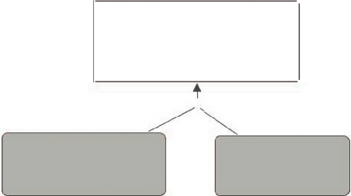
Presentación
“Imagine a future museum as a place where each person´s actions are networked with those of others into cumulative and shifting content for
display, sharing and remix”
Nina Simon
“The Web as i envisage it, we have not seen yet. The future is still so much bigger than
the past”
Tim Berners---Lee
“When millions and millions of people make small things on the internet, one of them eventually blows up and makes a difference. The explosion is completly
unpredictable, except in the sense that we know and explossion will
happen”
Edward Castronova
La tesis se fundamenta en teorías educativas como el Pensamiento Reflexivo (John Dewey, Herbert Simon, Eduard Schön), Constructivismo (Jean Piaget y David Ausubel), construccionismo (Seymour Pappert), aprendizaje de escogencia libre (‘free choice learning’, Lynn Dierking y John Falk) y aprendizaje significativo (Joseph Novak, Alberto Cañas).
Tomamos del diseño instruccional, la narración de historias como método epistemológico de aprendizaje y transmisión de conocimiento. Esta ha sido la forma más antigua de transmisión del conocimiento entre generaciones, desde los albores de nuestra humanidad (Bryan Boyd, autor del libro “en el origen de las historias: evolución, cognición y ficción”). Dicho esto, la propuesta en esta investigación, es un modelo conceptual para herramientas interactivas multimedia, en la creación de historias de manera participativa, que contribuya a la protección del patrimonio y a la construcción de conocimiento.
La narración de historias, ayudaría a estudiantes (de varias edades) y visitantes de
los museos a enriquecer significativamente la experiencia museística, participando y compartiendo en un proyecto comunitario, evolucionando las exhibiciones y los contenidos de los museos, de una manera creativa e innovadora.
El aporte del diseño industrial, tiene dos instancias de aplicación. En primera instancia el enfoque sistémico del desarrollo de la cultura artefactual, como apoyo a las herramientas de narración de historias basadas en el patrimonio o colección de los museos. En segunda instancia, la práctica del diseño industrial en el diseño de sistemas interactivos, aportará al desarrollo de servicios y productos, antes pensados desde el punto de vista de la máquina y los sistemas de cómputo, ahora centrados en el usuario, incrementando la usabilidad y por ende la mejora de la experiencia del usuario.
Cuando hablamos de la construcción colectiva del conocimiento, la investigación usa la representación gráfica del conocimiento, para establecer una herramienta física y pragmática como plataforma colaborativa y de participación social. Los mapas conceptuales y la navegación en línea de tiempo (life stream) asistirán a los usuarios a visualizar y establecer relaciones entre los elementos del proyecto narrativo, maximizando la experiencia creativa y de aprendizaje, mientras la herramienta se adapta a los diferentes niveles cognitivos, intereses y destrezas (según sean las dominancias hemisféricas, Paul Pierre Broca, Wernicke, Liepmann).
La fase de experimentación ensayaría con modelos y prototipos de Interfaces Gráficas de Usuarios, que alojen posibilidades de navegación y creación en mapas conceptuales, para estudiar los efectos y alcances en la experiencia de aprendizaje. El análisis de los datos revelaría los alcances del modelo propuesto.
Objeto
Esta tesis doctoral, tiene como objeto de estudio, las interacciones entre los contenidos físicos y digitales, las herramientas ubicadas en la interfaz y la construcción de conocimiento realizada por el usuario y su red, alojados en la plataforma de información y comunicación, como la Internet.
Objeto material
El patrimonio y herencia (artístico, histórico, científico o natural) contenidos en las colecciones de los museos, ofrecen muchas lecturas y análisis diversos, motivando la construcción de nuevos conocimientos. Para apoyar y alojar la complejidad del proceso de construcción del conocimiento, se recurre a la Internet como medio potenciador de los fenómenos de innovación y creación.
La multimedia abre muchos canales de diálogo entre el usuario, el contenido y las herramientas tecnológicas, adaptándose a diferentes estilos de aprendizaje, intereses cognitivos, ritmos de aprendizaje y estimulación sensorial.
Las características de la herramienta, son representadas gráficamente en una interfaz, que permite al usuario crear un mapa mental de funciones y posibilidades de acción. Es importante destacar el proceso de retroalimentación en el diálogo existente entre el usuario y el sistema, y entre los usuarios en red, sea efectiva y eficaz.
Durante el trabajo colaborativo, los usuarios en red, crean y recrean un contenido flexible y abierto, es necesario identificar la autoría, al igual que otros niveles menos activos de participación.
En niveles más profundos de estudio, se ubican los procesos y requisitos claves para que ocurran las experiencias significativas para la construcción de conocimiento, que fundamentan, justifican y contextualizan, los ejes centrales de la investigación, constituyéndose así el escenario donde sucede el proceso cognitivo, mediado por la red. Existen unos contenidos físicos y digitales, libres de interpretación, manipulación y apropiación. Hay múltiples canales para transmitir la información, elegidos libremente por el usuario. Hay una herramienta (un sistema), que permite navegar, crear, clasificar, participar y compartir. Y principalmente, hay un usuario que es emisor y receptor, autónomo pero estrechamente vinculado a su entorno social, cultural y físico.
La interpretación y uso de los contenidos por cada usuario, funcionan mancomunadamente en una red de relaciones auto--- motivadas por intereses cognitivos, emocionales y estéticos individuales, a la vez que pueden generar unos alcances sociales, culturales o científicos más grandes si de esos contenidos se logra innovar y generar cambios fundamentales.
El estudio de las interacciones entre sistema, contenido y usuarios, permitirá proponer un modelo que sirva de estructura flexible y adaptable, pero que guíe en etapas tempranas del desarrollo cognitivo, para luego poder evaluar sus alcances y experiencia de usuario, con base a los objetivos alcanzados.
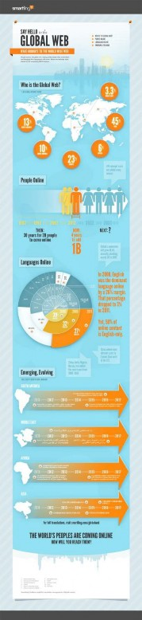
Ilustración 1
Contexto
“Las Tecnologías de la Información y la Comunicación han potenciado exponencialmente la creación de contenidos, su ideación, construcción, producción, reproducción y recepción; han generado creativamente nuevas formas de representación basadas en sus grandes paradigmas; y han propuesto una nueva conversación entre el autor y el lector a través de una pragmática digital, con alta participación del lector. La digitalización de los materiales (imagen, sonido, textos verbales, infografía) procedentes de diferentes fuentes adquieren una misma naturaleza expresiva, que permite reutilizarse y combinarse creativamente poniendo a
prueba el potencial de este medio y la definición del discurso digital”
Francisco García
El macro contexto donde se circunscriben los objetos de estudio de la investigación de esta tesis, es el campo de las Tecnologías de la Comunicación y la Información, del cual se desprende el fenómeno mediático más relevante de la era de la información, la Internet. La concepción misma desde su independencia de los organismos estatales, de libertad y democracia, ha buscado satisfacer y alimentar las expectativas cognitivas y emocionales del ser humano. Esto ha provocado que su adopción haya sido acelerada, generando cambios de paradigma a través de todos los dominios y actividades humanas. Estos cambios de comportamiento de la sociedad, repercuten de manera local y global, cuyos efectos han sido estudiados desde diferentes disciplinas y analizados estadísticamente.
La Internet, es ampliamente elogiada por los tecnicistas, que relatan todas las oportunidades de relaciones sociales, las ventajas para la creatividad, la producción, intercambios comerciales, culturales y de conocimiento tecnológico. También es atacada, por los detractores al modelo libre y democrático, centrado en el usuario o los que afirman que atenta contra las habilidades cognitivas, como la concentración y la abstracción (Nicholas Carr, 2008---2010). Y la mirada objetiva, que desean moldear la tecnología al servicio del hombre, evitando que este caiga en comportamientos adversos a la creatividad y la interacción con sus semejantes.
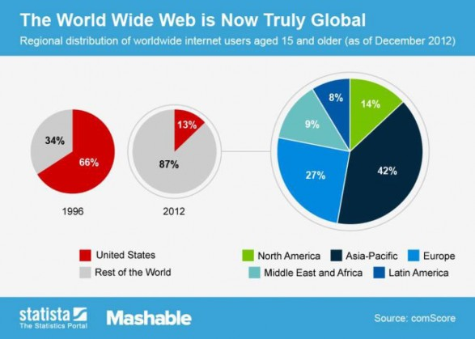
Ilustración 2, The World Wide Web is now truly global
La adopción y proliferación de su uso en un mundo mediatizado, abre unas brechas más grandes entre potencias económicas y los países en vías de desarrollo. Las políticas de las entidades públicas, privadas, con o sin ánimo de lucro, pueden incluir o aislar a sociedades enteras, privándolas de un derecho surgido de la sociedad mediatizada, el derecho a la información. Los racionamientos y lógicas de estas políticas escapan al estudio de esta tesis, mereciendo ser debatidas en universidades y foros de mayor alcance mediático.
La red hoy día concentra en su basto flujo de datos, no solo el contenido académico, científico y cultural generado en ella o que ha sido digitalizado, sino también la vasta marea de información generada por las actividades diarias de todos sus usuarios en el tiempo de trabajo, en su tiempo de recreación, en su tiempo de formación y en el tiempo de interacción social, con sus familiares, amigos y conocidos. Las instituciones más flexibles que alojan estas actividades humanas, también tiene su presencia en la Red. A todo lo previo, sumémosle la información generada por los objetos inteligentes, por los sensores que vuelven a los espacios, inteligentes. Es esta gran base de datos, bien conocida como BIG DATA, es la que sus usuarios deben aprender a manejar de manera sistemática, analítica y crítica, generando interpretaciones racionales que
permitan su aplicación conceptual o pragmática.
El uso de los recursos digitales, para la creación de contenidos y su divulgación a gran escala, es un argumento muy poco rebatido en la era de la información. Pero el uso y el acceso a la información en la red, no hace de sus usuarios, personas activas, participativas, analíticas, críticas o innovadoras per sé. Pero si se crean las condiciones y situaciones necesarias para la correcta explotación que los recursos y oportunidades de la red, se estarán entrenando a usuarios con dominio sobre el sistema, de tal modo que pueda trazar unos objetivos y diseñar el método que se adapte a su estilo de trabajo.
Hay industrias que han sabido explotar de manera exitosa, ciertas características naturales del ser humano, dependiendo de sus modelos económicos, conjugando producto y servicio, para brindarles a los usuarios esa experiencia memorable, que consciente o inconscientemente, ligan a una marca.
La industria del entretenimiento por ejemplo, podemos tomar muchos ejemplos exitosos para conectar con las necesidades cognitivas y emocionales de los usuarios. La industria cinematográfica, en especial la animación, ha usado la narración de historias, la caracterización de sus personajes y el uso de escenarios atrayentes, para conectar de manera empática con su audiencia. Luego ha llevado la experiencia más allá de las salas de cine, trascendiendo a los juegos en línea, permitiendo al espectador, ser más activo y recrear la historia de la película mientras interactúa con los personajes.
Otro ejemplo que ha encontrado cabida en la vida de los usuarios, es el concepto de ‘hazlo tu mismo’ (DIY, Do It Yourself), explotando la curiosidad creativa de los usuarios. Dentro de este concepto, Arduino, responde al interés que las nuevas generaciones sienten por la tecnología, de hacerla suya y contribuir a ella de alguna manera. Los usuarios pueden crear sus propios circuitos programables, siendo de alguna manera partícipe de la evolución tecnológica. También aquellos que desean expresarse a través de la imagen, sea en movimiento o fija, pueden crear su cuenta en Youtube, donde comparten sus videos con una audiencia escalable. Aunque la mayoría de sus usuarios sean colectores, críticos o espectadores pasivos, Youtube es un ejemplo de nuevo paradigma de comunicación, nacido en la Red.
Un ejemplo de como la red genera espacios de contribución, auto---convocada es el caso de Wikipedia. Esta se ha convertido en la enciclopedia más consultada y más actualizada en red, por sus propios usuarios. Contenido amateur o profesional, la información se convierte en un patrimonio de todos, el conocimiento crece y se reconstruye, se abre a nuevas audiencias. Esto obedece completamente con los intereses del W3Consortium, quien expone: “la visión general de la Actividad de datos, es que las personas y las organizaciones, deberían ser capases de compartir los datos,
tantos como sean posibles, usando sus herramientas existentes y métodos de trabajo, pero de una manera que permita a otros a contribuir a ella, utilizándola de la manera que más les convenga. Para llegar a ello, se requiere un enfoque no solo en la interoperabilidad de los datos, sino también en las comunidades” (http://www.w3.org/2013/data/ “The overall vision of the Data Activity is that people and organizations should be able to share data as far as possible using their existing tools and working practices but in a way that enables others to derive and add value, and to utilize it in ways that suit them. Achieving that requires a focus not just on the interoperability of data but of communities”)
Las redes sociales y blogs, también serían un ejemplo de éxito de captación de adeptos, brindando espacios para la publicación de todo tipo de media, de autoría auto-
--motivada y de libre expresión, que gracias a las características atemporales y libre de barreras geográficas de la red, pueden repercutir local o en algún otro lugar del mundo físico o virtual.
El homo faber (Henri Bergson, filósofo francés, empleó este término en su obra La evolución creadora,1907, definiendo la inteligencia como "la capacidad de crear objetos artificiales, en particular herramientas para hacer herramientas, y de modificarlos de modo ilimitado"), encuentra como crear su mundo artificial, el homo sapiens (Carlos Linneo, naturalista sueco, uso esta nomenclatura binomial para referirse al rasgo más importante de la especie, el saber, la capacidad de raciocinio), tiene espacio para pensar libremente y el homo ludens (Johan Huizinga, historiador y teórico holandés, autor del libro “Homo Ludens”, donde expone su teoría sobre la importancia del juego en la construcción de sociedades y culturas) , un campo de juego para divertirse mientras se aprenden las reglas y roles de una sociedad. Internet, es de naturaleza virtual o digital, aún difícil de comprender por un usuario de naturaleza física, que obtiene su conocimiento esencial a través de sus sentidos y se relaciona con sus congéneres y espacio físico y tangible, de manera motora. Pero Internet tiene su incidencia en el mundo físico, y dependiendo de los comportamientos cultivados en sus usuarios para actuar en ella o a través de ella; de los comportamientos diseñados por los diseñadores y desarrolladores, para que los usuarios alcancen sus objetivos; o de los comportamientos motivados por una experiencia significativa, para crear conocimiento y cambios, preferiblemente positivos o en pro de sí mismo y de sus semejantes.
Estos casos de éxito de difusión del conocimiento o de captación de usuarios en otros dominios de actividades humanas, pueden ser aprendidos y aplicados a diseñar escenarios que nutran la experiencia cognitiva, mediada por la red.
Las instituciones educativas, los museos y los archivos, pueden tejer redes sinérgicas,
o alianzas interinstitucionales, como las que se presentan en la red de usuarios, que trabajen paralelamente para alcanzar un objetivo, el acceso libre a la información, vinculando significativamente a los usuarios de sus servicios, proveyendo las herramientas para su rol más activo en la protección y enriquecimiento de ese patrimonio cultural, científico o natural que pertenece a toda una sociedad.
El gobierno ha logrado extender la cobertura WIFI en el territorio nacional, elevando el número de municipios conectados inalámbricamente a la red. Estas áreas WiFi son de libre acceso para la población.
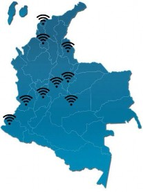 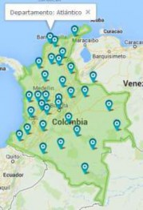 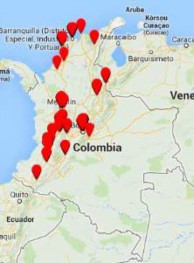
Ilustración 3, Redes wifi públicas Ilustración 4, redes wifi privadas Ilustración 5, Redes wifi privadas
Gráficos del mapa de áreas WiFi del gobierno, producción propia. Mapas de cobertura WiFi de compañías privadas de telefonía móvil, obtenidas de captura de pantalla de las compañías telefónicas y editadas en Photoshop.
Mientras las redes de compañías privadas también expanden sus servicios a poblaciones cada vez más grandes.
Cuadros gráficos, nos muestran la tendencia móvil del uso de la Internet y su penetración en la sociedad colombiana, comparada con otros países de la región y del mundo.
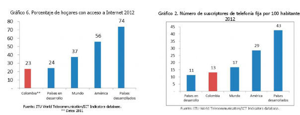
DISEÑO DE AMBIENTES EDUCATIVOS INTERACTIVOS MULTIMEDIA PARA MUSEOS
Ilustración 6, Porcentaje de hogares con acceso a Internet 2012
Ilustración 7, Número de suscriptores de telefonía fija por 100 habitantes 2012
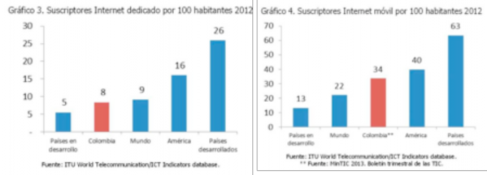
Ilustración 8, Suscriptores Internet por 100 habitantes

Ilustración 9, Tenencia de computadores en hogares
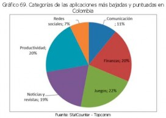
Ilustración 10, Categorías de las aplicaciones más bajadas y puntuadas en Colombia
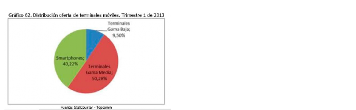
DISEÑO DE AMBIENTES EDUCATIVOS INTERACTIVOS MULTIMEDIA PARA MUSEOS
Gráficos obtenidos del reporte del 2013 de la Comisión de Regulación de Comunicaciones, del Ministerio de Comunicaciones, del Gobierno de la República de Colombia.
Ilustración 11, Distribución de oferta de terminales móviles, trimestre 1 de 2013
Hoy 8,8 millones de personas están conectados a la red de banda ancha y esperan con la ampliación de las redes inalámbricas, cubrir en el 2014 todo el territorio nacional.
El gobierno colombiano a través de su ministerio de comunicaciones, ha desarrollado unas políticas para la promoción de las TICs dentro de la población colombiana, con el plan Vive Digital, se busca masificar el uso de la Internet, dentro de ese plan se han instalado Puntos Vive Digital, donde los habitantes de estratos sociales de menos recursos, pueden acceder gratis al servicio de internet, complementados con subsidios para la conexión en sus hogares y la entrega de ordenadores. Con la instalación de Puntos Vive Labs, se busca potenciar a los niveles más avanzados del uso del software para la creación de contenidos en la red y con las Aulas Tics, ubicadas en los institutos de educación distritales técnicos y académicos, para la capacitación en el uso de software para la creación de contenidos audiovisuales y desarrollo de software. Con un programa de inserción de los discapacitados visuales, se crearon las CoverTic, las cuales consisten en puestos de trabajo en las Pymes, que reciben ayudas del estado para incluir laboralmente a ese grupo de la sociedad.
Según un reporte hecho por el ministerio de comunicaciones, se describe cuantitativamente las tendencias del uso de las TICs en Colombia: “a partir de los indicadores básicos de tecnología de información y comunicaciones desarrollados por el DANE en la encuesta de Calidad de Vida ECV, en la cual se formulan preguntas acerca de la tenencia de diferentes bienes y servicios TIC a nivel de hogar del año 2012, se puede distinguir la frecuencia con la que los hogares colombianos desarrollan actividades en Internet. De acuerdo a los resultados de dicha encuesta, los usos más frecuentes deI Internet en Colombia son el correo y la mensajería con el 62, 4%, seguido por las redes sociales con él 56, 5%, obtener información con el 56.5%, la educación y el aprendizaje con el 42%, y las actividades de entretenimiento con el
39, 5%” (http://colombiatic.mintic.gov.co/602/articles---4245_archivo_pdf.pdf)
Colombia posee una economía basada principalmente en la agroindustria, por lo tanto el uso de las zonas rurales varía de las zonas urbanas, donde hay más cobertura del servicio de Internet. En el mismo reporte se describe este comportamiento: “En cuanto al uso dado al Internet según la localización geográfica, se encuentran diferencias entre los sitios urbanos (cabecera) y los rurales (resto), siendo en los segundos las actividades de aprendizaje y la educación las más frecuentes con el 56, 7% frente al 40, 2% en cabecera” (http://colombiatic.mintic.gov.co/602/articles--- 4245_archivo_pdf.pdf).
Son cada vez más, las universidades y centros de formación que tienen su presencia en la Red, o que la usan para educar virtualmente. Colegios privados tienen más oportunidades de invertir en tecnología, que las escuelas públicas, pero hay pasos encaminados para la adopción de la tecnología. Los archivos y bibliotecas también han apropiado las herramientas de la Red, para sus actividades institucionales, permitiéndoles prestar un mejor servicio a sus usuarios. Los museos en su mayoría usa la red para promocionar sus exhibiciones y establecer un canal de comunicación directo con sus usuarios, pero no todos poseen las posibilidades financieras o de infraestructura para digitalizar sus colecciones y almacenarlas en un servicio de Cloud Computing. Los museos también presentan obstáculos para que sus usuarios, tengan un rol más activo y participativo, dentro de la curaduría de sus exposiciones. La Red se convierte en la base de datos preferida para búsqueda y compartir información entre los estudiantes y la ciudadanía en general.
¿Cuáles son las características del comportamiento de los usuarios, durante el uso de las herramientas tecnológicas para la construcción del conocimiento?, ¿cómo se incorporan las herramientas digitales en el proceso cognitivo?, ¿de qué manera se pueden aprovechar las herramientas y los entornos digitales para que los usuarios obtengan los resultados esperados?,
¿cómo interaccionan los usuarios socialmente entre sí y con la herramienta?, estas y más preguntas, se formulan a lo largo de la investigación, debiendo ser respondidas en el modelo propuesto.
Para responder los cuestionamientos que surjan, es necesario hacer un desglose de estos temas importantes para la tesis: la propiedad de la información, su uso y consumo, el comportamiento social entre los usuarios y su relación con el entorno físico y digital, la capacidad de análisis de los datos y las oportunidades de creación e innovación.
Internet como el almacén de conocimiento, es la plataforma que permite al
conocimiento crecer exponencialmente. La Internet, no solo se alimenta de lo creado digitalmente en ella, también puede alimentarse de la digitalización de lo físico y tangible, o de los sensores ubicados en objetos y espacios (IoT, The Internet of Things, El Intenet de las cosas). Toda esta base de datos, es el conocimiento del mundo. Si esta información es de dominio público, de manera que todos sus usuarios acceden a ella, analizan los datos, aplicándolos y construyendo nuevos conocimientos, dentro de una estructura lógica y comprensible, de tal modo que otros pueden actuar sobre ella, sumando aún más conocimiento. La educación debe incorporar el uso de la Red, pero apoyada en herramientas que permitan dar sentido a esos datos, de manera analítica y crítica (Michael Nielsen, 2014). El ser humano es netamente sensorial, para entender los datos, la representación de ellos es clave en este proceso. Esto se describe más adelante, en detalle y constituye uno de los campos de aplicación pragmática de esta tesis.
Dentro del uso de la información, debemos mencionar, que la cultura participativa, incentivada por la Red, desdibuja los roles de emisor y receptor, conmutando los papeles en un diálogo más dinámico y fluido. En ese flujo de información, corren paralelamente o intercaladamente, las historias narradas de muchos usuarios. Un mismo contenido, puede fluir por diferentes medios de comunicación (Henry Jenkins). Todas estas pequeñas historias, alimentan el gran depósito de historias (Manuel Castells).
El comportamiento social de los usuarios, incide significativamente en la conformación de las redes virtuales y físicas. La red virtual no está sujeta a limitaciones de espacio y tiempo, y las relaciones que se establecen entre sus miembros, son basadas en el interés propio (individualización, centrado en el yo), son sistémicos, basados en la adquisición de objetivos comunes ajenos a instituciones, lo que las convierte en autonomías.
La relación física o tangible, la interacción cara a cara entre los individuos de un grupo, que cohesiona a la sociedad a través sentimientos de empatía, no muere con la pervasividad de la tecnología en cada aspecto de la vida, cuando aún los miembros de una familia, los compañeros de clase, de universidad, de trabajo tengan las posibilidades de relacionarse físicamente y extenderlas al plano virtual.
Existe una realidad que no debe pasar desapercibida y es que no todas las culturas adoptan la tecnología de la misma manera, algunas las adaptan y moldean a sus estilos de vida, lo que se traduce en una especie de autonomía frente a un mundo globalizado.
Las redes sociales son importantes para la construcción de conocimiento, partiendo del
hecho innegable de que no todos poseemos las mismas habilidades cognitivas, de lo cual deducimos que estas plataformas promueven el trabajo en equipo (CSCW Computer Supported Cooperative Work, SNS, Social Network Systems), construyendo el nuevo conocimiento de manera interdisciplinaria.
Continuando con el desglose, el siguiente punto a mencionar es la necesidad existente de brindar apoyo con herramientas que sirvan para analizar la información y construir estructuras de datos compatibles con las esquemas de pensamiento de los usuarios, de modo que los mensajes sean claros para las audiencias, siendo este uno de los grandes retos frente a la gran base de datos, ‘Big Data’, que es confusa y abrumadora.
Se pueden exponer a los usuarios al conocimiento de manera libre y accesible, dándoles las oportunidades de actuar, pero los objetivos no podrán ser alcanzados, si el proceso no es apoyado con herramientas de análisis y estructuración lógica y sistemática. El contenido también puede que no conecte con el usuario, pues el interés por un contenido está ligado a la emoción, y los sistemas necesitan ser diseñados para conectar empatéticamente con el usuario.
En cuanto a las oportunidades para la innovación, son incalculables, la Internet es un agente difusor, propagador y catalizador. La idea es alojada en la red y como medio masivo de comunicación, difunde el mensaje a una audiencia de millones y millones de personas. Basta con un número de usuarios la encuentre relevante, la lea y comparta, entonces se propaga a una audiencia próxima de contactos en su red y así sucesivamente. La idea permanece en la red catalizando reacciones y produce cambios de comportamientos.
Debido a las limitaciones de tiempo y espacio de esta tesis doctoral, es necesario ubicarla en el contexto físico donde será evaluada a una escala menor. En la etapa de evaluación de la propuesta, y comprobación de las hipótesis, la muestra se escogerá de un grupo local de usuarios, con unas características demográficas, sociales y culturales, que solo define un grupo reducido de usuarios.
Los recursos de personal para la elaboración del testeo y diseño de modelos y prototipos es también limitado, pero se optimizarán los recursos siguiendo una metodología heurística.
La contextualización seguirá siendo descrita desde las políticas colombianas y acuerdos pactados internacionalmente, para el desarrollo científico, educativo y tecnológico en el país.
Colciencias (El Departamento Administrativo de Ciencia, Tecnología e Innovación) es la
entidad pública, que promueve, coordina acciones de estandarización de la calidad educativa e investigativa, principalmente aquellas relacionadas con las TICs, gestiona recursos del estado para la incubación de proyectos innovadores en los diferentes campos y también debe definir los programas estratégicos de cooperación internacional y la visibilización, uso y apropiación de los conocimientos producidos por las comunidades nacionales de investigadores e innovadores.
Propósito
Un modelo que integre en sus elementos, las características de uso e interacciones entre los usuarios en la Red, el contenido y las herramientas, orientado a la consecución de objetivos cognitivos que vayan en concordancia con la protección del patrimonio y herencias pertenecientes a un conglomerado humano.
Ese modelo debe servir de estructura flexible de soporte al usuario, el cual evolucionará y enriquecerá su estructura, obedeciendo al carácter de libertad participativa de la Internet.
El usuario es el centro de nuestro enfoque disciplinario, por lo tanto atender a sus necesidades cognitivas, físicas y emocionales, acercarán el modelo propuesto al ideal de experiencia de usuario buscada, la cual es el dominio total del sistema, alcanzando los objetivos trazados por este en el uso de las herramientas de creación de contenidos de manera participativa.
Tal como mencionamos, el enfoque en el factor humano, nos determina los objetivos de esta tesis doctoral y su investigación previa, para identificar las estrategias que nos conduzcan a la consecución de los mismos.
El modelo propuesto, desde la perspectiva del diseño industrial y su aplicación al diseño de interfaces de usuario, nos permitirá realizar un análisis minucioso desde la contribución de todos los campos relacionados en la materia.
Justificación
‘By combining profesional design skills with lessons of participation pouring out of the social Web, cultural institutions can become leading participatory venues
in our cities, towns and
neightborhoods’ Nina Simon
Todo aquello que el hombre ha creado en su cultura artificial, sean productos o servicios, deben adaptarse a los comportamientos cambiantes de sus usuarios. En este caso concreto, las instituciones educativas y museísticas, deben repensarse con base a los cambios generados en una sociedad mediatizada. Esto requiere, planear estratégicamente las herramientas con las que se va a dotar al usuario, el cual es más crítico, ávido de participación a diferentes escalas, deseoso de conectar y compartir socialmente. El usuario es un socio coproductor de la experiencia museística, dentro del entorno físico y en el entorno virtual.
El nuevo escenario de un mundo ‘hiperconectado’, ofrece oportunidades para el desarrollo cognitivo y la innovación a gran escala, pero también amenazas y retos para la sociedad, como el reordenamiento de su escala de valores, dentro de ellos la relevancia del patrimonio físico o inmaterial (tradiciones orales y costumbres).
En Colombia, un país que ha mutado de un modelo socio---económico proteccionista y cerrado, a uno de economía de libre mercado, lo cual lleva consigo grandes repercusiones culturales, ya que el consumo de un mundo globalizado puede incidir negativamente en los bienes locales.
Las instituciones encargadas de coleccionar y proteger el patrimonio, difundir y promover el conocimiento, necesitan reconectar con sus audiencias usando las nuevas plataformas de comunicación y socialización. Para ello debe entender la manera como los usuarios interactúan con estas plataformas y el contenido.
En este punto, es donde el papel del diseñador industrial como profesional en las áreas de la cultura artefactual y los factores humanos, realiza su aporte a la construcción del conocimiento, proponiendo modelos conceptuales de diseño, así como sus metodologías, que enriquecen esta línea científica de desarrollo de herramientas interactivas.
Recursos
Para hacer factible el desarrollo de esta tesis, durante las etapas de evaluación y análisis del modelo propuesto, se cuenta con los apoyos de los museos, Museo de Antropología de la Universidad del Atlántico y el museo Mapuka, de la Universidad del Norte, cuyas colecciones albergan patrimonios materiales diversos: arqueológica, natural, artístico, histórico, social y cultural.
Los usuarios reales del museo serán voluntarios de la muestra de análisis, para comprobar la usabilidad de los acercamientos formales del modelo.
Se cuenta con el apoyo económico para materiales utilitarios necesarios en el desarrollo de modelos básicos.
Para la representación gráfica de los contenidos, se usará el formato de Mapas Conceptuales, usando el programa CmapTools desarrollado por el IHMC (Institute for Human and Machine Cognition).
Con este se pretender ser claros en la presentación de los componentes temáticos y metodológicos de esta tesis doctoral, apoyando al lector durante la navegación de la información alojada.
En otros casos, utilizaremos presentaciones gráficas realizadas con Prezzi, Photoshop en infografías y presentaciones.
Organización de esta tesis
En el primer capítulo introducimos la temática, el objeto de estudio de esta tesis, la interactividad y como la interfaz media en la construcción del conocimiento a nivel individual y social. Se expone también el contexto visto desde diferentes enfoques, cultural y económico las cuales se han visto directamente afectadas por la evolución de las tecnologías de la comunicación y el libre acceso a la información y a la creación de contenidos. Exponemos la importancia de desarrollar un mayor entendimiento y profundizar en la temática de estudio de esta tesis.
En el segundo capítulo, descomponemos en diferentes áreas del marco teórico para observar el panorama amplio y tener en cuenta tanto las teorías ya caducas como aquellas que fundamentan esta tesis.
Dentro del apartado de la museología, pretendemos estudiar la importancia de la institución a nivel social, comunicacional y educativo. También se exponen modelos previos y como se proyecta su subsistencia en un mundo cambiante.
Desglosaremos las teorías cognitivas que en mayor o menor grado describen el comportamiento humano. Aprendizaje libre (Free choice learning), el constructivismo, el construccionismo, la teoría de evolución histórico-socio-cultural de Lev Vygotsky, el aprendizaje significativo (meaningful learning), el aprendizaje dialéctico son las teorías que son el punto de partida epistemológico que toma esta tesis para entender el fenómeno del aprendizaje y la construcción del conocimiento.
En el tercer apartado del marco teórico estudiamos la Internet como revolución
tecnológica que catapulta el desarrollo del conocimiento y social, afectando los medios productivos y demás campos de actividad humana.
La Internet como medio masivo de comunicación, amplia y replantea las teorías de la comunicación las cuales enriquecen esta investigación, aportando esquemas ideales y empíricos que describen el fenómeno comunicacional de masas y como estas estructura piramidal tiende a una polarización y horizontalidad de sus canales y centros emisores o receptores de mensajes.
En el tercer capítulo se resalta el valor del diseño industrial como disciplina centrada en la transformación de la cultura artificial, siendo esta la manifestación tangible de la evolución humana y gestora de cambios en nuestras estructuras organizacionales, comunicativas, cognitivas y meta cognitivas (emocionales).
En este capítulo profundizamos en el objeto material de la tesis, en la interfaz. Aquí se exponen los conceptos más fundamentales sobre la teoría y práctica del diseño interactivo. Affordances (Posibilidades de uso), la usabilidad y la experiencia de usuario, son los conceptos más importantes a medir en el desempeño de las interfaces para alcanzar los objetivos trazados al desarrollar cualquier herramienta interactiva.
En el cuarto capítulo se explican los tipos de exploración y creación de contenidos elegidos para las interfaces que median en la construcción del conocimiento a nivel masivo o social, siendo estos los mapas conceptuales y la creación de historias. Ambos tipos están fundamentados en la epistemología del conocimiento definiendo el objeto formal de esta tesis.
Los enfoques organicistas, sistémicos, evolutivos y fenomenológicos son fundamentales en la construcción de teorías y prácticas del diseño interactivo.
En este capítulo la tesis propone un nuevo modelo conceptual, llamado las cinco dimensiones de la interfaz, el cual ofrece cinco lentes de análisis de la interfaz desde una perspectiva UCD (User Centered Design).
Se identifica y define el problema de estudio, luego se establecen los objetivos y alcances de esta investigación. Se formulan las hipótesis que surgen del acopio bibliográfico y del análisis alcanzado en la materia.
En el capítulo quinto, del resultado de búsqueda en publicaciones especializadas en diseño interactivo, se ha elegido el método heurístico y el método CUBI UX de Corey Stern para desarrollar un prototipo de interfaz social que serviría para realizar el estudio de un caso.
Aplicando los conceptos de diseño, las hipótesis y teniendo claro los objetivos de la
interfaz social que media en la construcción colectiva del conocimiento y la divulgación del patrimonio cultural, se elabora un prototipo de interfaz social el cual es argumentado desde la psicología de la interacción, estándares y convenciones.
En el capítulo sexto, se desarrollan diagramas de flujo, se describen escenarios hipotéticos de uso y las características del usuario, usando la narración para comunicar a diseñadores, stake holders, evaluadores de usabilidad y experiencia de usuario sobre el concepto de diseño, los objetivos y secuencia de uso planteada. Estos modelos previos de desarrollo permitirán contrastar los datos recolectados en las evaluaciones in situ, con usuarios reales.
En el séptimo capítulo, se plantea el uso de estudios cualitativos semi-estructurados como metodología para recolectar datos y analizarlos posteriormente. Esta tesis defiende la práctica de combinación de métodos de usabilidad y de experiencia de usuario, en el contexto real de uso y con usuarios reales, involucrando a estos mismos en las etapas tempranas del diseño interactivo (diseño participativo). Cada método recolectará datos distintos y su elección depende de los recursos humanos, tecnológicos y del límite de tiempo para esta investigación. Los métodos también varían en el enfoque de análisis de los datos, algunos examinan la arquitectura de la información, otros la usabilidad desde la percepción y los niveles cognitivos, otros la experiencia desde las relaciones entre la máquina y el usuario (HMI, Human Machine Interaction / HCI, Human Computer Interaction) o entre los usuarios (SCI, Social Computer Interaction).
De otras disciplinas como la antropología y la sociología, se toman métodos para el estudio del comportamiento humano en un entorno social, mediado por la tecnología.
Esta etapa, es iterativa, se llevan a cabo sesiones en las cuales, un grupo de voluntarios que representan un segmento del grupo de usuarios objetivo, simulan la secuencia de uso y evalúan desde sus criterios la arquitectura de la información dada, las funciones, las posibilidades de uso, el sistema de códigos usados para guiar sobre funciones y procesos. Los voluntarios expresan al evaluador sus emociones, expectativas y deseos acerca de la experiencia de uso.
Con cada de sesión se reordenan las categorías de información, se adaptan los sistemas de códigos usados, se eliminan o incorporan funciones, basándose en la retroalimentación dada por los voluntarios y otras personas involucradas en el desarrollo de la herramienta interactiva social. Una vez alcanzado el punto en que la retroalimentación satura o no agrega valores significativos de análisis, se analizan los datos usando el modelo conceptual propuesto, realizando una triangulación de datos lo cual conducirá a la formulación de teorías sobre el comportamiento humano en entornos de construcción del conocimiento mediados por la tecnología.
DISEÑO DE AMBIENTES EDUCATIVOS INTERACTIVOS MULTIMEDIA PARA MUSEOS
-
1
1- --------------------=::::::Fundamentada -----_
41
Perspectiva disciplinar
..
1
--- -------Fundamentos
Solución | de dlseílo |
TICs
Tecnolo91as de la nformaclon y la Comunicación
Historia y futuros
escerrios 1
"RepTlantear
Anatomía
del conocimiento
''-Te-o-rí-as-
Cognitivas
/ \
Era dela información
Mmf,M m
"T"
•HHi!MM
Funclonlmiento Aplicaciones prácticas
( \ J EScenarios Ois ño
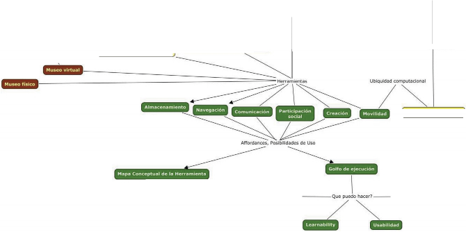

Procesos Mentales ·de aprendizaje.,_ Instruccional
Métodos de construcción
'" 7"":.
Diseño de co | portamientos |
Soltw/ H \d Mundolíbrido•
m
EN*Ht( ¿.
Op :s ; =.e::zas, ------ d_eI conoclm sConceptuales:
Narración de Historias: Representación del Conocimiento
Trasmisión del Conocimiento
topos-
----=::::::Secuencia de uso
\
/
Experiencia de Usuario
1
Dominio dela tarea
1
Coincidencias---------..( Mapa Mental)+-----
\
-------( usuario )
mapa conceptual 1, Diseño de Ambientes Educativos Interactivos Multimedia para Museos, Marco Teórico
42
DISEÑO DE AMBIENTES EDUCATIVOS INTERACTIVOS MULTIMEDIA PARA MUSEOS
Area Temática
1
Presentación, Objeto, Contexto, Propósito, Justificación
Se define un panorama general y se especifican los recursos con los que se cuenta
l
Marco Teórico
Museología, construcción del conocimiento,Internet, redes (Construcción social del conocimiento),
las nuevas interacciones entre instituciones de servicios eInternet, el diseño industrial y la cultura artificial
1
Delimitación del tema y se trazan las teorías que influyen y fundamentan la tesis
l
Estructura y desarrollo de la Investigación
Objeto formal,enfoque, identificación y definición del problema, límites y alcances, objetivos e hipótesis
1
Formular el problema y el caso del cual
se posee poco conocimiento empírico y propuesta de un modelo conceptual sobre las dimensiones de la interfaz
l
Estudio de un Caso
Aplicación de las hipótesis y nuevas propuestas teóricas a partir de un caso de estudio :
Métodos de diseño heurístico, estándares y convenciones, personas, escenario, task flow, prototipado
1
La nterfaz Social como mediadora en la construcción
del conocimiento en un contexto social y lúdico como los museos
1
Metodología - Estudios Cualitativos Semi-estructurados
Escogencia de la muestra, estudios in situ, métodos de medición de la usabilidad y de la experiencia de usuario, estudios etnográficos y teoría fundamentada
1
Selección de voluntarios, contextos de estudio,
metodologías de recolección de datos
Análisis de los datos
Triangulaci ón de los datos
Relación de los datos recolectados según modelo conceptual propuesto de las dimensiones de la interfaz
Conclusiones
ma pa conceptual 2, Organización de esta tesis
43

DISEÑO DE AMBIENTES EDUCATIVOS INTERACTIVOS MULTIMEDIA PARA MUSEOS
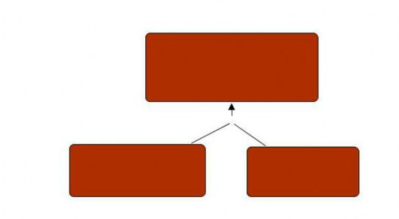
Marco teórico
Museología: historia y futuros escenarios de los museos
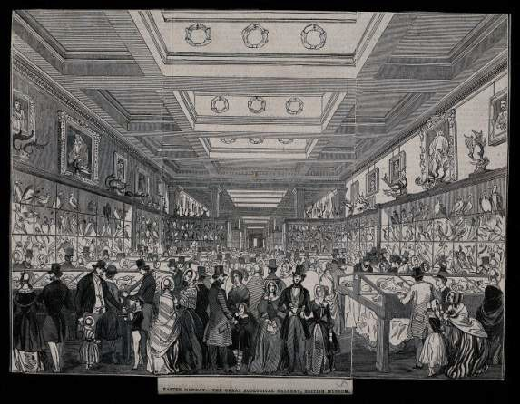
Ilustración 12, Ilustraciones del Museo Británico
Ilustraciones de www.europeana.eu, Historia del Museo Británico.
Para contextualizar nuestra investigación, es necesario definir el museo, y con el ánimo de ser objetivos, se cita el consenso logrado en las reuniones del ICOM (Consejo Internacional de Museos: Organización no gubernamental internacional, fundada en 1946, asociada a la UNESCO, dedicada a la promoción y al desarrollo de los museos y de la profesión museal), el cual define al museo en estas palabras textualmente:
"El museo es una institución permanente, sin fines de lucro al servicio de la sociedad y su desarrollo, abierto al público, el cual adquiere, conserva, investiga, comunica y exhibe la herencia de la humanidad y su entorno, tangible e intangible con propósitos educativos, de estudio y recreo".
Dentro de esta definición general, se amparan muchas clases o tipos de instituciones,
reconocidas como tal: Los yacimientos y monumentos arqueológicos, etnográficos y naturales y los yacimientos y monumentos históricos que tengan la naturaleza de museo para sus actividades de adquisición, de conservación y de comunicación; las instituciones que presenten especímenes vivos de plantas y animales, tales como los jardines botánicos y zoológicos, acuarios y viveros, los centros científicos y los planetarios; los institutos de conservación y galerías de exposición dependientes de bibliotecas y centros de archivos; reservas naturales; organizaciones museológicas de carácter internacional, nacional, regional o local; ministerios, departamentos o agencias públicas responsables de museos, en el sentido recogido en este artículo; instituciones sin ánimo de lucro u organizaciones que realizan investigación, educación, capacitación, documentación y otras actividades relacionadas con los museos y la museología; cualquier otra institución que el consejo ejecutivo, oído el comité consultivo, considere que tiene alguna de las características de un museo o de apoyo a los museos y sus trabajadores, a través de la investigación, la educación o la formación museológica.
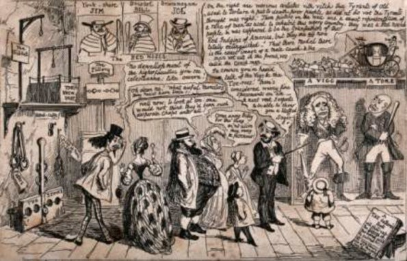
Ilustración 13, Ilustraciones del Museo Británico
Se define a continuación, la museología como la ciencia que estudia la actividad de los museos: historia, técnicas de conservación, catalogación y exhibición, como también su influencia y objeto en la sociedad.
Habiendo revisado las definiciones, se abre un espectro de posibilidades en las que ha evolucionado o mutado la institución, para adaptarse a los cambios de la sociedad, del progreso científico y a la revolución de las comunicaciones.
Estudiando las transformaciones en la historia, podremos buscar oportunidades y ventajas intrínsecas de la institución, para proyectar su futuro en el campo del entretenimiento y la educación.
Breve historia de los museos
El coleccionismo de objetos, de manera privada por parte de personas con intereses desconocidos (sentimentales y económicos) o pública (gobiernos o reinos interesados en exhibir el poderío de sus países e imperios), es lo que dió inicio a los museos.
Entre estas primeras colecciones, se destacan, se destacan tres tipos. El primero llamado, Gabinetes de Curiosidades (también llamados cámaras artísticas o cámaras de las maravillas) datan del siglo XVI. En ese entonces, no se conocía el uso, procedencia cultural o geográfica y la relación entre los objetos. El interés por las piezas, era más un asunto de rareza o algo insólito. El coleccionismo amateur, consistió en emprendimientos privados, de la aristocracia y la monarquía (luego estas pasarían a ser propiedad del estado en el siglo XVIII o siglo de las luces). El coleccionismo propiamente dicho, alcanza altos niveles culturales, donde institucionalmente se exhibe,
todo un conjunto de objetos considerados de alto valor para una cultura en especial.
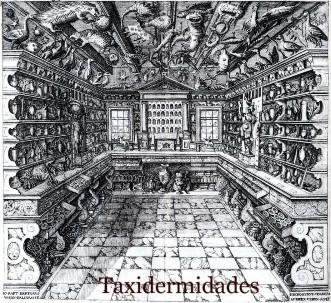
Ilustración 14, Gabinete de Francesco Calzolari
Unos de los primeros museos que se tiene registro, se remonta al medio oriente antiguo, cuando Nabuconodosor (Babilonia, entre los años 605 a. C. --- 562 a. C.), construyó su palacio, al cual se le llamó Gabinete de las Maravillas de la Humanidad". En Egipto, durante la era faraónica, se demandaban la continua fabricación de pieza, para llenar templos, tumbas y edificios.
En China, durante la dinastía Shang, la cual gobernó desde mediados del siglo XVI a la mitad del siglo XI, el coleccionismo empezó desarrollándose posteriormente por la dinastía Chin que gobernó durante el siglo III A.C. La tumba del emperador Shih Huang- ti, estuvo custodiada por la colección de hombres guerreros de terracota.
La palabra museo, derivó vocablo griego, Museion, el cual significa lugar de las musas, en donde empezó a coleccionarse obras de arte a cargo de los sacerdotes, quienes también las inventariaban y custodiaban. La primera galería de arte pictórico que se conoce hasta ahora, fue la pinacoteca de la Acrópolis, en el siglo V AC, según relata Pausanias (Pausanias, viajero, geógrafo e historiador griego del siglo II cuyas descripciones de Grecia, han llevado al hallazgo de muchos yacimientos arqueológicos). En esta pinacoteca, no solo se coleccionaban pinturas, si no también esculturas y trofeos.
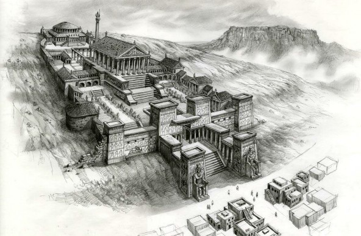
Ilustración 15, Biblioteca de Alejandría
Museion, Alejandría. Fuente:
http://ancientworldwonders.com/library-alexandria-bibliotheca-alexandrina.html
El museion, era para los griegos un sitio de reunión para concentrar la actividad filosófica, artística, científica y religiosa (Museion construido en Alejandría por Ptolomeo I).
En Bagdad, el califa Al---Mamum, fundó "la casa de la sabiduría" a principios del siglo IX donde exhibió colecciones de objetos singulares.
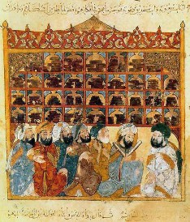
Ilustración 16, Casa de la sabiduría
Casa de la Sabiduría. Fuente: www.whyislam.org
Tanto el Museion, como la ‘casa de la sabiduría’, no se asemejan a lo que hoy conocemos como museo, pero en el renacimiento adoptará nuevas características.
Durante el imperio Romano, el Museum fue un lugar de pensamiento filosófico y la científico. También sirvió para exhibir las piezas robadas durante las guerras con otras culturas, convirtiéndose en un escaparate de trofeos. El valor de las piezas como símbolo de estatus, dio origen a la reproducción de bienes artísticos, marcando el origen del mercado del arte. Las reproducciones de las obras clásicas, nos permiten hoy en día, tener constancia de muchos originales desaparecidos.
En el 313 DC, el imperio Romano adopta el catolicismo como religión con el edicto de Milán, se retomó de los griegos la concepción de coleccionismo y se usó por primera vez la expresion "método pedagógico", el cual consistió de objetos cargados de simbología religiosa, con el fin de catequizar en la nueva fe.
La edad media, empieza con la caída del imperio romano, entonces la iglesia como institución generará una nueva visión del coleccionismo.
La nueva iglesia es hacedora del conocimiento en todas sus formas: artístico, científico, religioso y literario, acumulando poder, se transforman en los grandes mecenas de artistas, con cuyas obras enriquecen sus colecciones. Durante las cruzadas, hurtan otras piezas de valor religioso y simbólico.
En la edad media, se usaron las explicaciones de los sabios de la antigüedad, sobre los objetos exhibidos, describiéndolos por las propiedades que se la atribuían y lo meramente observable.
En el renacimiento, nace el humanismo por una revalorización de la cultura clásica, la Grecia antigua. Las colecciones privadas de la iglesia y las monarquías continúan enriqueciéndose y placer estético de las piezas cobra más importancia sobre el valor material. Con el descubrimiento de América y el intercambio con Asia, especies del mundo natural, empiezan a tomar parte de las colecciones.
El humanista Paolo Giovo (Paolo Giovio, 1483-1552, médico, historiador, biógrafo, prelado italiano del renacimiento) usa el vocablo Museum, para nombrar el lugar donde conservaba sus colecciones. Giovo levantó un palacio en la ribera del lago de Como, provisto de un importante museo. La familia Medici, tuvo un papel protagónico en el mecenazgo artístico del renacimiento. Por primera vez en la historia, aparece la figura del curador, así Bertolo, discípulo de Donatello, es contratado por Lorenzo el Magnífico, para su colección. Cosme I de Médici, contrata a Vasari para construir y diseñar el primer edificio con el fin de albergar una colección, este es el primer museo de arte en Italia, el museo Ufizzi. La iniciativa italiana, fue copiada por otras coronas europeas, dando origen a las colecciones reales, que luego se convertirían en los museos nacionales.
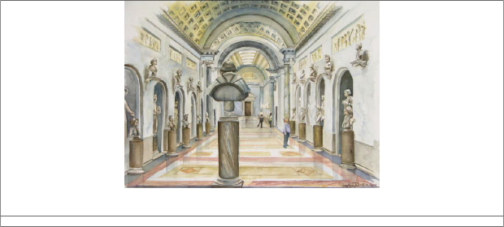
Ilustración 17, Museo Ufizzi
http://luannsdailypainting.blogspot.com/2013_07_01_archive.html
Las colecciones de objetos curiosos, reunidos en los "Gabinetes de Curiosidades" o también llamados "cámaras de maravillas" toman auge, en cuyas colecciones se encontraban objetos de prehispánicos y de otras culturas, especies animales y vegetales. En Copenague, Dinamarca se destaca la colección de curiosidades de Ole Worm y en Lambeth, Inglaterra la colección de John Tradescant, que luego formaría parte del archivo del Museo Ashmolean de la universidad de Oxford.
En 1565, el médico flamenco y autor del libro Theatrum Sapientiae, Samuel Quicheberg, realiza una clasificación de colecciones, derivada de la gran diversidad de estas colecciones de curiosidades, en la cual se identifican cinco grupos: 1--- objetos asociados a la gloria del propietario: escudos, árbol genealógico, banderas, etc; 2--- piezas de orfebrería, numismática, medallas y objetos pequeños de valor; 3--- curiosa naturali: ejemplares de los reinos naturales (animal, vegetal y mineral); 4--- objetos de las artes mecánicas: relojes, objetos musicales, etc y 5--- artísticos: pinturas, grabados, dibujos.
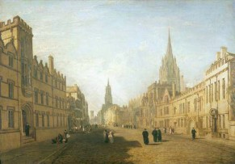
Ilustración 18, Museo Tate
Pintura de Turner. Fuente: www.tate.org.uk
En 1683, nace el primer museo como institución pública, el Ashmolean Museum, ubicado en Oxford, albergaba la colección de la familia Tradescant. También fué el primer museo usado por una universidad, como fuente de estudios e investigación. La colección era ecléctica, exhibiendo piedras, animales, plantas e instrumentos científicos.
El Escorial almacenó y exhibió la colección de curiosidades de Felipe II, caracaterizada por la diversidad de objetos y su clasificación por sub---categorías ordenada de objetos.
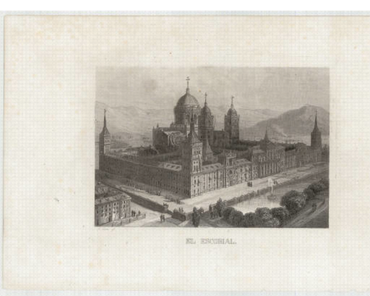
DISEÑO DE AMBIENTES EDUCATIVOS INTERACTIVOS MULTIMEDIA PARA MUSEOS
Ilustración 19, El Escorial
El Escorial. Fuente: http://cartotecadigital.icc.cat/cdm/ref/collection/vistes/id/1192
Durante el siglo XVII, el coleccionismo se pluralizó, así que casas de personas importantes (nobles y burgueses), albergaban también colecciones en galerías, siguiendo el modelo italiano.
Con la revolución de la ciencia en el siglo XVII, se desencadena la evolución del conocimiento científico y el nacimiento de las Ciencias Naturales.
Mientras la razón cobra importancia y muchos objetos curiosos, pierden interés, las colecciones pictóricas ganan más adeptos e interés (tres colecciones importantes: Duque de Lerma con 1400 cuadros, Felipe III y posteriormente Felipe IV que incrementaron la colección heredada de Felipe II).
En el siglo XVIII, el racionalismo y el avance de las ciencias naturales, cambiarán el coleccionismo de manera drástica, pues estas tomarán un rumbo más pedagógico y científico. Dentro de este cambio de enfoque, las colecciones naturales, no serán consideradas más curiosidades, si no elementos de estudio científico, al igual que los hallazgos arqueológicos, que se intensifican y la visión pedagógica, hace que las
colecciones se planteen abrir al público.
Los museos también se transformaran radicalmente con una organización basada en la clasificación científica.
Dentro del campo del arte, nuevas escuelas de arte se abren y un cambio de estética ocurre, del cortesano al burgués.
En 1713 es redactado y publicado su primer reglamento, donde se anuncian las normas de administración, generación de catálogos, inventarios, horarios de visita y precios de entrada, confirmando su identidad como institución abierta al público.
Neickel (Gaspar Friedrich Neickel, fue un escritor alemán autor de la obra Museografía, 1727), define en 25 reglas, cómo organizar un museo en categorías. El expone por primera vez, como debe ser la gestión de una colección y como adaptar la galería a esta.
Este crecimiento e interés en el desarrollo de las catalogaciones y deseo de dar a conocer, fueron las razones para la proliferación de muchos museos a partir de 1750, entre ellos: Palacio de Luxemburgo en1750, edificio donde Luis XV reune su colección; 1759 se abre el British Museum (construido en 1735); Real Gabinete de Historia Natural, fundado por Carlos III en 1777 (previos a este en Amsterdam, Estocolmo y Viena); Museo de Ciencias Naturales (El mismo museo hoy llamado, Museo del Prado).
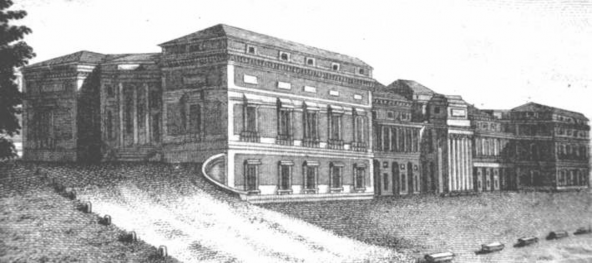
Ilustración 20, Museo del Prado
Grabado de la fachada del Museo del Prado. Fuente: www.coam.org
La conversión del Palacio del Louvre en Pinacoteca, por la presión ejercida por artistas e intelectuales franceses sobre Luis XVI, fue el hecho anticipado a la Revolución Francesa, a partir de la cual, en 1793 el museo como institución se democratiza y
pasa de ser una colección privada abierta al público a ser una institución destinada al pueblo. Así surge la idea de patrimonio.
Ya a finales del siglo XIX, gracias al padre de la taxonomía moderna (nomenclatura binominal o nombre científico: nombre del género, derivado de una raiz latina o en grecolatina y apellido o nombre especifico. Zoo. o epíteto específico. Bot.), el científico sueco Carlos Linneo, se exhibió en el museo de historia natural de Londres, una colección clasificada científicamente.
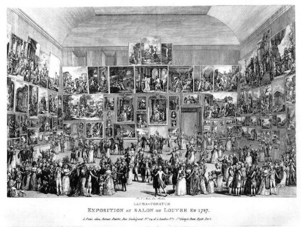
Ilustración 21, Ilustración de exposición en el Museo del Louvre
http://www.huntsearch.gla.ac.uk/cgi--- bin/foxweb/huntsearch/LargeImage.fwx?collection=all&catno=51649&mdaCode=GLAHA&f ilename=51649.JPG
Durante estos siglos, las colecciones exhibidas, sirvieron para explicar un mundo ordenado y clasificado, con un lenguaje matemático y exacto de lo observado. La ciencia y la razón, desde los varios puntos de vista: experimental, racional o mecanicista, exponían el mundo desde su perspectiva científica.
El nacimiento de los museos como institución, coincide con un momento histórico, marcado por cambios políticos, sociales y científicos que predefinen la sociedad actual.
Estos cambios repercuten al interior mismo del museo, auto---cuestionándose sus fines y objetivos, quedando el modelo de museo del siglo XIX obsoleto y dispuesto a cambios, para satisfacer a la clase media emergente.
El museo se ve por primera vez, como un servicio a la comunidad en temas de ocio, formación y educación. Estos cambios redefinieron los objetivos, de una visión enciclopedista y taxonómica a una que busca explicar, a formular teorías.
Los perfiles de visitantes que asistían entonces a estas primeras exhibiciones, serían científicos y estudiantes que podrían entender la información relacionada o personas de élite, que por estatus promocionaban estas actividades o deseaban estar vinculados a estos círculos.
Pero los adelantos de la tecnología y la comunicación, han diversificado los tipos de exhibición, sus públicos y lenguajes, democratizando su acceso.
Esta democratización del museo, ha despertado una nueva manera de entender sus funciones (social, educativa, comunicativa y entretenimiento) afectando la misma manera de actuar de su directiva y profesionales a cargo, a tal punto, que el coleccionismo en si mismo, no es su fin, rompiendo con la vieja creencia de erudición que no contemplaba la actividad comunicativa.
Los museos y su equipo, no solo trabajan con sistemas de clasificación y conservación, sino también con sistemas de comunicación e informáticos, para poder hacer llegar el contenido científico relacionado a los nuevos públicos, de una lúdica y efectiva, en una sociedad de cultura de masas, que necesitan comprender estos contenidos en sus propios lenguajes.
Tal es el alcance de adaptación del lenguaje usado para explicar las colecciones, que muchos aspectos del objeto no son mencionados, por ser de interés estrictamente científico, pero a su vez otros más subjetivos han ganado mayor interés, para conectarlo con los visitantes, desde sus diferentes niveles cognitivos y experiencias, como por ejemplo su artífice, su relación con el entorno cultural y con el presente.
Los parques temáticos y de diversión han influenciado, para que los museos incorporen la tecnología en sus exhibiciones, para democratizar sus servicios.
Estos cambios han replanteado los objetivos y funciones de los museos, como instituciones en una sociedad mediatizada, embebida en tecnología y llena de opciones de entretenimiento, de acceso a la información, a la cultura y a la educación.
La nueva museología
Hablando de la necesidad de los museos, de replantearse su papel en la sociedad, en época de gran cambio, acelerado por las TICs, toma vigor el término de la ‘Nueva Museología’ (La nueva museología tiene su origen en 1971, durante la IX Conferencia Internacional en Grinoble, Francia. En 1972, se redacta en Chile, el documento “Resoluciones de la Mesa Redonda sobre el papel y el Desarrollo de los Museos en el Mundo Contemporáneo”). Esta consiste en una nueva mirada a los museos, como lugares intrínsecamente ligados a un contexto, social, económico y político, que necesitan reinventarse para posicionarse en una escala de valores simbólicos de una sociedad, y sobre todo de sus individuos, siendo piezas claves en el proceso de identificación cultural.
Habiendo estudiado la evolución del Museo y su función, teniendo en cuenta las discrepancias de hoy día acerca del papel del museo, se puede acordar que el diálogo entre objeto (colección o exhibición) y el visitante, es el principal objetivo a perseguir en vías de la democratización de la cultura y la información.
Para que dicho proceso sea democrático, el museo como institución debe adaptar sus canales de comunicación, mensajes y lenguajes para llegar a diferentes públicos por medio de talleres, cursos, seminarios, publicaciones impresas y digitales, presencia en la WEB, etc.
Y las preguntas que surgen son: ¿cómo saber que es lo que desea, interesa, necesita el público del museo?, ¿cuáles son los requerimientos de diseño de exhibiciones, exposiciones, publicaciones y de los espacios físicos o virtuales que el museo debe contemplar?, pues para responder a estas inquietudes, han surgido varios tipos de estudios que acercan al museo a la realidad, los estudios de visitantes, las evaluaciones de exposiciones, pero en el campo virtual, aún hay mucho que desarrollar para los metavisitantes (visitantes en la WEB de los portales de los Museos).
Esta nueva presencia de la institución museo en Internet tiene sus detractores, pero desde el punto de vista contemporáneo de la museología, recibe mucho apoyo por parte de aquellos líderes de las nuevas teorías cognitivas y pedagógicas, adelantos científicos en los campos de la educación, de las nuevas tecnologías de comunicación, museólogos, museógrafos que ven posible la permanencia del museo en la historia con ayuda de nuevos modelos educativos y de exhibición centrados en el visitante-
--usuario, en sus procesos de aprendizaje particulares y sus maneras de dar significado a la información que recibe.
El reto de los nuevos tiempos es, volcar al museo y su grupo interdisciplinario hacia una práctica actualizada, en la cual la relación entre el museo y sus visitantes, goce de más retroalimentación e interactividad (Lynne Teather, Ph.D. A Museum is a Museum is
a Museum...Or Is It?: Exploring Museology and the Web).
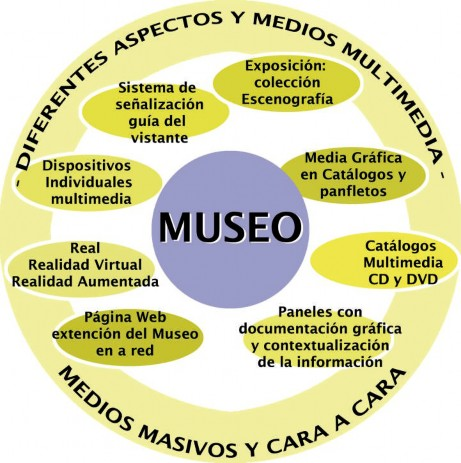
gráfico 1, El museo como medio masivo y sus canales multimedia
Gráfico de elaboración propia
El museo virtual
El Museo Virtual, es el nuevo escenario que existe paralelamente al mundo físico, potenciando la riqueza cultural o científica que se busca preservar. El museo virtual, es una colección basada en el material físico y extiende la experiencia museística más allá de los límites físicos del edificio, pero es construida por una comunidad atraída por los contenidos del museo. Se convierte en un espacio virtual de aprendizaje donde se construye el conocimiento al ritmo de cada uno, basado en los intereses cognitivos y cada uno se siente comprometido con la tarea elegida.
Hasta ahora los intentos de los portales web de los museos en mayor o en menor grado de creatividad, se reducen a un catálogo online de las colecciones del museo, usando desde álbumes a realidades virtuales de los espacios del museo, restringidas de la participación activa del visitante cibernauta y del visitante al edificio físico. Mediante la animación y juegos en algunos portales (Louvre, Museo Virtual de Canadá) dirigidos a un público infantil y juvenil, el usuario accede a la información de manera lúdica, pero aún no logra aportar nada propio a la exhibición.
El museo virtual debe replantearse y proyectarse mas allá de los edificios físicos, usando nuevos lenguajes gráficos de representación, navegación y expresión de contenidos. El enriquecimiento multimedia de la experiencia interactiva con nuevos usos gráficos de representación de las bases datos, la aleatoriedad de la búsqueda debe ser alojada, adoptando los códigos del nuevo lenguaje de comunicación de la Red, actualizándose a la nueva era digital, buscando un diálogo natural y participativo con los visitantes o usuarios.
La tecnología de comunicación y desarrollo de contenidos ha avanzado tanto, que no es necesario que los usuarios sean programadores o expertos desarrolladores multimedia, para poder contribuir al contenido de las colecciones del museo en su versión digital.
Las visitas al museo podrían incrementar, debido al contenido virtual compartido por sus entusiastas colaboradores en la red. La estructura piramidal del mensaje museográfico tiende a allanarse hasta convertirse en un sistema más horizontal, donde los usuarios puedan usar los recursos compartidos en la red y las aplicaciones del museo para dispositivos móviles y fijos (aprovechando la compatibilidad de los formatos digitales), en un marco de legitimidad de la institución, donde abraza la contribución y los nuevos lenguajes de exhibición de contenidos.
La era de la información ya exigió a los museos deben invertir en el servicio virtual (no solo económica es la inversión, es también en recurso humano experto), estrechando los lazos con la comunidad de visitantes (cibernautas y visitantes del museo físico), los cuales pueden mantener viva la institución y subsidiar su labor de preservar, coleccionar, investigar y comunicar.
En este procesos de adaptación a los nuevos modelos, que una sociedad abocada a la tecnología y los medios masivos de información demanda, han motivado a los museos e instituciones educativas a participar en las plataformas sociales (facebook, twitter, google plus, etc.), buscando conectar con los usuarios y obtener respuestas inmediatas (feedback) de sus experiencias museísticas, al igual que informar sobre sus programas educativos, seminarios, exposiciones y foros, a lo que han denominado como el nuevo plan Paninstitucional (Best of Both Worlds, G. Wayne Clough, secretario general del museo Smithsonian, habla sobre un plan integral de los museos, para conectar con sus audiencias, integrando de manera estratégica, nuevas actividades a la institución) .
Otra estrategia comunicactiva es la digitalización de la colección, para ser compartida en sus portales, y sumando esfuerzos con otras instituciones, ya sean otros museos, archivos, bibliotecas, o centros educativos y formación (www.europeana.eu). Este vinculo interinstitucional se apoya en estándares tecnológicos nacidos en la RED (WEB), como Linked Open Data, Linked Data Cloud, Resource Description Framework y Crowdsourcing tools.La principal característica de los nuevos estándares es que estas son abiertas, hipervinculadas e interoperables, debido a la mayor compatibilidad entre lenguajes de programación, permitiendo la participación activa de las comunidades usando las aplicaciones (Apps), plataformas y herramientas que permiten la colaborar, compartir y comunicar entre grupos de comunidades e instituciones.
Este avance de la tecnología y de los modelos de interacción horizontal, escalan y aceleran los procesos creativos y de innovación de una manera abierta, ya que las fronteras entre las instituciones y las comunidades se permeabilizan y desdibujan, como se busca en el entorno museal virtual. Para que esto ocurra, debe haber un replanteamiento de los modelos de esas instituciones que conservan viejos paradigmas y procesos de trabajo. En el caso de los museos, uno de sus mayores retos en la era digital es mutar del sistema cerrado original a un sistema abierto que intercambia dinámicamente con su entorno.
El modelo de sistema abierto permite al visitante no solo tener acceso al contenido, pero también desarrollar nuevos conocimientos. Este nuevo enfoque institucional y comunicativo, conviene a los usuarios y a las instituciones (relación de simbiosis), al generar las condiciones ideales para la innovación y el conocimiento, ya sea por que los
usuarios desarrollar nuevas perspectivas de análisis, contenidos originales y creativos o encontrar nuevos campos de estudio.
La labor del diseñador en un entorno educativo interactivo multimedia en museos, consiste en apoyar a la institución en este cambio de modelo, replanteando su organización y funcionamiento rígidos, a un modelo de flexible donde hay espacio para la participación, la co-creación, el intercambio y la acumulación de nuevos conocimientos.
Desde el punto de vista interactivo, el diseño brinda un concepto de interfaz centrado en el usuario, que es intuitivo y cuyas herramientas (navegación, creación, edición, búsqueda, compartir y representación en pantalla de la información) son adaptadas a sus necesidades y crean conexiones emocionales y cognitivas.
Modelos de museo virtual: puntos de partida y fuentes de inspiración
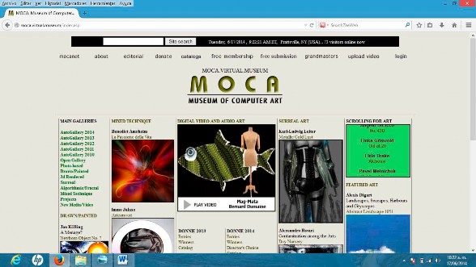
Ilustración 22, Museo MOCA
Imagen tomada por captura de pantalla http://moca.virtual.museum/
Don Archer y Bob Dodson en 1993, apoyados por la Universidad del Estado Nueva York, crean el primer museo virtual en la historia de la museología. Motivados por el surgimiento de las técnicas digitales de expresión artística (arte renderizado en 3D, fotografía digital o editada digitalmente, fractales, animaciones, multimedia, pinturas y dibujos digitales), fijaron como objetivo la difusión de estas expresiones digitales en la Red, cuando esta a penas empezaba a convertirse en el medio masivo de comunicación más importante que es hoy en día.
Su interfaz, sigue siendo muy limitada, pero permite comentarios de los visitantes (los cuales no son publicados en tiempo real) y es visitado por un público especialista atraído por las artes digitales (muchos también son artistas que publican y difunden su obra en este portal).
Luego le siguieron iniciativas particulares como las de Nicholas Pioch con su proyecto Web Museum Paris en 1994, donde invitaba al público a contribuir libremente en la construcción de la web.
Ese mismo año, el artista singapurense Lin Hsin Hsinn crea el Art Museum, quien deseaba coleccionar en la red, todo el arte del mundo, desde pinturas, esculturas y edificios, permitiendo que los visitantes enviaran fotos de las obras a la red, para ser
publicadas e indexadas.
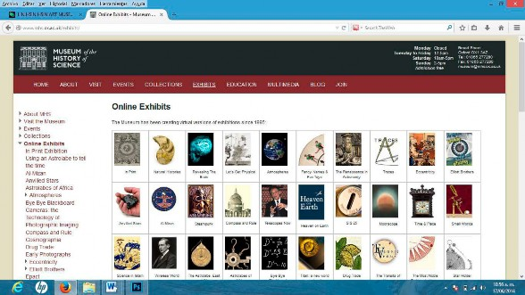
Ilustración 23, Museo de Historia y Ciencia
Imagen tomada por captura de pantalla http://www.mhs.ox.ac.uk/exhibits/
En 1995, la Universidad de Oxford, aprovechando la colección heredada del Aschmolean Museum, y las ventajas de los recursos tecnológicos y humanos que la Universidad ofrecía, inicia el Museo de Historia de la Ciencia.
El trabajo de curaduria pertenece estrictamente al personal del museo y hay poca participación de los visitantes. Su fin es principalmente pedagógico, ofreciendo recorridos virtuales, seminarios o charlas en línea, además de otros beneficios para sus usaurios registrados (acceso a bases de datos del museo).
En 1996, Ljubljana: Open---Air Museum, en la capital de Slovenia ya funcionaba el modelo de ciudades como museos al aire libre, donde los visitantes podían entrar a cada edificio, como si fuesen las salas de un museo. Este modelo se llevó a la realidad virtual, digitalizando mediante fotos, los espacios de todos estos lugares de interés turístico, cultural e histórico.
En la corta historia de internet, varias universidades, centros científicos de investigación y museos vieron el potencial de difusión y didáctico de la Red, siendo tempranos incursores en los museos virtuales: el Thylacine Museum, iniciativa australiana para la protección de las especie marsupial; el Museo de Historia Natural
del condado de los Angeles, el cual es a la vez un centro de investigaciones biológicas; el Museo de Ciencias de Londres, el primer museo con servidor en el Reino Unido; y el Museo de Historia Natural de Londres, el segundo museo con presencia en la Red.
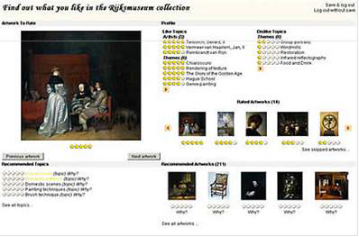
Ilustración 24, Chip Project
Imagen tomada por captura de pantalla http://www.chip-project.org/demo/
El grupo CHIP ha estado desarrollando para El Rjijksmuseum en Amsterdam, desde el 2005 un projecto sobre la personalización de la navegación e interactividad con la colección virtual del museo, utilizando perfiles de usuario, para identificar sus intereses culturales y cognitivos, creando herramientas de apoyo (art recommender: que ayuda al usuario a descubrir que le interesa de la colección, tour wizard: ayuda a construir un tour por la colección basado en las obras que le interesen al usuario, mobile museum guide: acopla las sugerencias de las dos herramientas anteriores y genera un paseo virtual por la exhibición) para la exploración de las obras y de la colección en general.
El usuario a demás, es un agente clave en el desarrollo, sugiriendo etiquetas y conceptos de indexación, clasificación y estructura semántica (vinculando a bases de datos externas, ampliamente usadas como Getty AAT, ULAN, TGN y IconClass thesaurus), ayudando al equipo de diseño y desarrollo interactivo, y al museo, a enriquecer con metadatos relacionados a las obras y sus relaciones cruzadas. Para ello, el equipo ha diseñado un prototipo de Interfaz que ha estado a prueba, para depurar las herramientas y el leguaje de programación semántica, asi como la coordinación con el motor de búsqueda.
El equipo CHIP, pensó en el libre acceso a todos los usuarios de la Red, construyendo la arquitectura del sistema en estándares de código libre promovidos por la W3, como XML, RDF/OW.
Rijksemuseum conformo el proyecto CHIP con la participación de investigadores de la Universidad de Tecnología de Eindhoven y el Instituto de Telemática, dentro del programa CATCH (promoviendo el Acceso Continuo al Patrimonio en Holanda).
El proyecto fue enfocado en desarrollar herramientas genéricas, que basadas en una estructura de web semántica (la W3 define a la Web semántica como: “La Web Semántica
es una Web extendida, dotada de mayor significado en la que cualquier usuario en Internet podrá encontrar respuestas a sus preguntas de forma más rápida y sencilla gracias a una información mejor definida”, http://www.w3c.es/Divulgacion/GuiasBreves/WebSemantica), pemitiera abrir la riqueza de información contenida en las colecciones culturales públicas, ayudando a los usuarios en la navegación e interacción con el contenido cultural. Para ello, el equipo abordó la formulación de soluciones, teniendo en cuenta la complejidad del espacio digital, las diferentes plataformas móviles, la diversidad de públicos y la experiencia inmersiva social que implica la revolución digital.
La interfaz ha sido pensada como un diálogo, donde el usuario responde un quiz, sobre sus preferencias artísticas o cognitivas, calificando las obras de la colección. De acuerdo a esta categorización, el sistema la usa para empezar a personalizar la guía virtual o las sugerencias de contenidos, basados en sus preferencias. La Red tiende a personalizar su interfaz, adaptándose acada usuario, asi los museos buscan entregar a cada usuario una experiencia única y significativa.
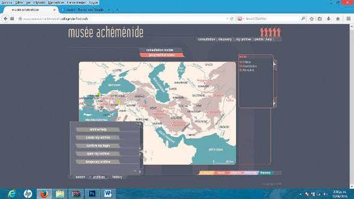
Ilustración 25, Museo virtual del imperio Aqueménido
Imagen tomada por captura de pantalla http://www.museum-achemenet.college-de-france.fr
El Museo Virtual del Imperio Aqueménido, fue propuesto y dirigido por el Profesor Pierre Briant, del Colegio de Francia (Institución Francesa de Investigación) y tiene como objetivo, ensamblar y vincular una vasta herencia cultural distribuida entre múltiples instituciones de diferentes países, procurando el acceso libre a esta gran base de conocimiento a través de la pantalla, la ventana de la RED.
El gran éxito de esta iniciativa, fue vincular a la comunidad científica y a los mismos usuarios de los museos, para trazar un mapa que representara las interrelaciones entre antiguas civilizaciones ubicadas en diferentes lugares del globo, conectando el patrimonio y el contenido ubicados en diferentes bases de datos o colecciones. El conocimiento es por primera vez propuesto no solo como una gran fuente de información al servicio de todos alojada en la RED, sino también construida colectivamente, desdibujando las fronteras entre instituciones y sus públicos.
El MAVI, es un claro ejemplo del nuevo clima de flujo de información, para la construcción de redes de trabajo que tengan objetivos comunes, en este caso la protección y difusión del patrimonio. Varias instituciones públicas y privadas participaron en la realización de este museo: instituciones educativas y de investigación (Collège de France, quienes fotografiaron, digitalizaron e indexaron los objetos), museos (Louvre, Bristish Museum, National Library-Cabinet des Médailles in France, el Penn Museum en Chicago, el Oriental Institute de Estados Unidos, los museos de Munich y Karlsruhe de Alemania, el Near East Institute de Holanda, quienes dieron libre acceso a sus colecciones), la industria tecnológica (SinequaTM aportaron el uso ilimitado del motor de búsqueda Intuition®) y el Gobierno de Francia (Ministerio de Educación y Ciencia, quienes aportaron capital).
El museo virtual Aquemenida consiste en una colección de todos los records disponibles de tiempo y espacio, enlazados geográficamente desde la India a los Balkanes y desde Asia Central hasta Aswan (ciudad egipcia sobre el Nilo), relata históricamente las conquistas y uniones políticas bajo el imperio de Cyrus el Grande (alrededor del 550 A.C.), hasta su desintegración después de la muerte de Alejandro Magno (alrededor del 300 A.C.).
En contraposición al secretismo y egoísmo que suelen tener las instituciones entorno al patrimonio, esta comunidad nacida alrededor de la RED, se ha convertido en una red de construcción del conocimiento colectivo real, física, integrando profesionales de diferentes áreas e instituciones.
A medida que la tecnología ha avanzado (cloud computing, 3D scanning, open access databese software), han podido actualizar e integrar a la colección virtual, además de textos y manuscritos, objetos incrustados en proyectos narrativos, que mejoran la experiencia museística.
El diseño interactivo, a cargo de Philippe Bertin, quien fuese consultor y artífice del diseño de las herramientas y las interfaces para visualizar los objetos, llevando a cabo la tarea de convertir el museo en una realidad digital.
La interfaz se adapta a varios niveles e intereses cognitivos, desde estudiosos de la arqueología, interesados en el arte, la literatura, los objetos, la historia y la geografía. También podría interesar a ingenieros y arquitectos que deseen ahondar en las viejas estructuras urbanas.
El proyecto más ambicioso de museo virtual en la historia de la cultura, es el liderado por el grande de la Red, Google. En el 2011, Google Art Project organizado por la Institución Cultural Google, lanzaron en Internet este museo virtual el cual contaba en su inicio con la colaboración de diecisiete museos y algunas de las obras maestras de sus colecciones (1.061 obras) fotografiadas en alta calidad, usando la tecnología de Google Street para navegar las piezas de arte.
Hoy este museo virtual permite comparar y coleccionar obras de arte, documentos (Momentos Históricos), biografías, montar exposiciones virtuales, hasta realizar visitas virtuales a todos los museos partícipes, monumentos y patrimonios (Maravillas del Mundo) ubicados en diferentes ciudades del mundo.
Artistas, galerías y museos del mundo tienen la libertad de compartir sus colecciones, ampliando globalmente la audiencia y organizar exhibiciones temáticas.
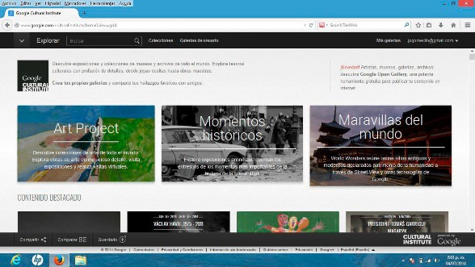
Ilustración 26, Google Cultural Institute
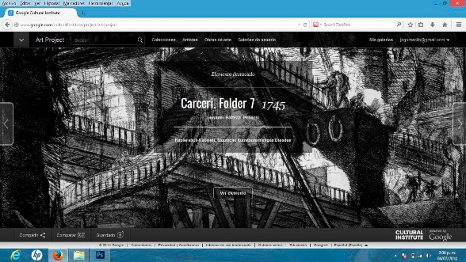
Ilustración 27, Google Cultural Institute
Imágenes tomadas por captura de pantalla, http://www.google.com/culturalinstitute/home?view=grid&hl=es
El museo virtual de Google, es un modelo a seguir, donde las barreras de las instituciones se difuminan y se permean de los contenidos creados por los cibernautas activos, coleccionistas, críticos y pasivos.
Para que el proceso de democratización de la cultura, los esfuerzos de las instituciones son cortas e insuficientes para volcar en la Red todo el vasto conocimiento contenido en el patrimonio material e inmaterial, por ello se hace evidente la participación de los ciberautas y para qu estos participen desde sus intereses cognitivos y estéticos, se deben conectar con sus emociones y sentimientos a través de la interfaz y sus características (‘features’, funciones o posibilidades de uso evidentes y beneficiosas).
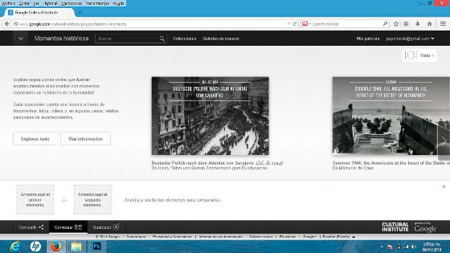
Ilustración 29, Google Cultural Institute
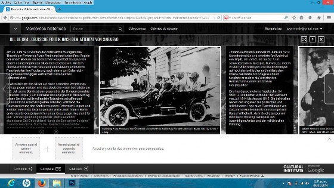
Ilustración 28, Google Cultural Institute
Imágenes tomadas por captura de pantalla, http://www.google.com/culturalinstitute/
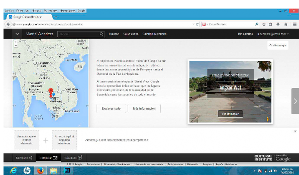
DISEÑO DE AMBIENTES EDUCATIVOS INTERACTIVOS MULTIMEDIA PARA MUSEOS
Ilustración 31
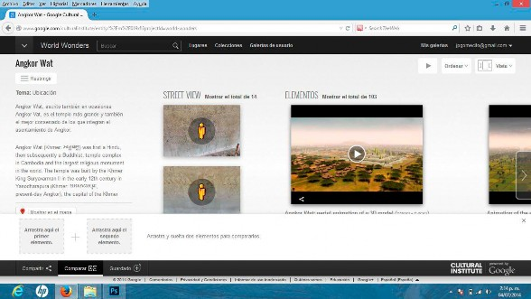
Ilustración 30
Imágenes tomadas por captura de pantalla, http://www.google.com/culturalinstitute/
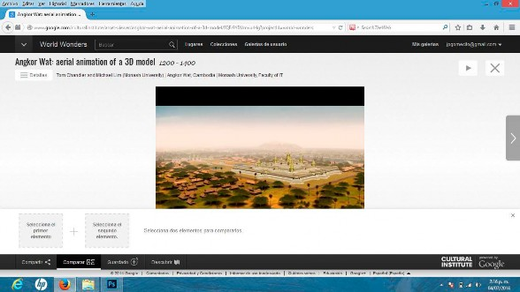
Ilustración 32, Cultural Institute
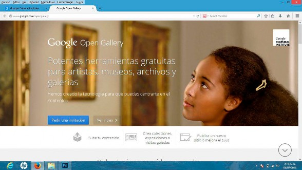
Ilustración 33, Google Open Gallery
Imágenes tomadas por captura de pantalla, http://www.google.com/opengallery
El Metropolitan Museum, ha desarrollado en conjunto con diseñadores y programadores, un proyecto, ‘One Met Many Worlds’, dirigido por Teresa Lai que consiste en una nueva manera de navegar su colección de arte, con la participación de los usuarios, quienes mediante su contribución, ayudan a indexar y relacionar las obras y sus detalles de una manera ‘juguetona, poética y creativa’, en diferentes lenguas (inglés, árabe, francés, alemán, italiano, portugués y otras lenguas asiáticas).
De manera muy parecida al proyecto CHIP del Rijksemuseum, el usuario colabora alimentando la base de datos con metadatos y vínculos, que ayudan a navegar la colección enriquecida con contenidos nuevos, que pueden ayudar a otros usuarios a encontrar información relevante a sus intereses cognitivos, artísticos, estéticos o emocionales.
El icono etiquetas aparece en la parte superior derecha del usuario, invitando a contribuir y participar de la curaduría de la colección. También se ofrecen las áreas calientes o ‘hot spots’, que el usuario puede crear y vincular.
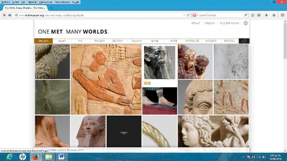
Ilustración 34, MET Museum
Imágenes tomadas por captura de pantalla: www.metmuseum.org/one-met-many- worlds/eng/about
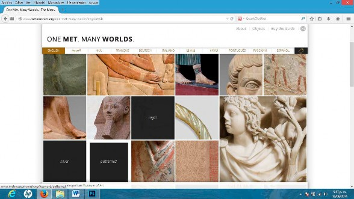
Ilustración 36, MET Museum
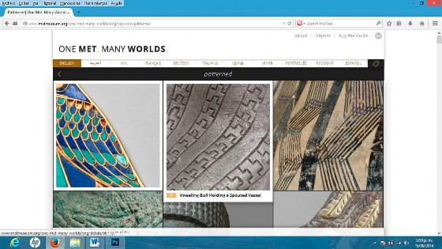
Ilustración 35, MET Museum
Imágenes tomadas por captura de pantalla, www.metmuseum.org/one-met-many-worlds/
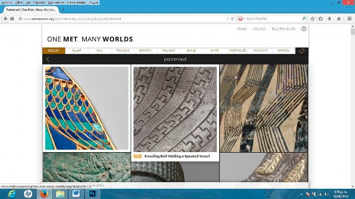
Ilustración 37, MET Museum
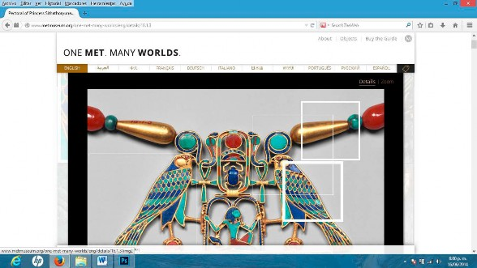
Ilustración 38, MET Museum
Imágenes tomadas por captura de pantalla, www.metmuseum.org/one-met-many-worlds/
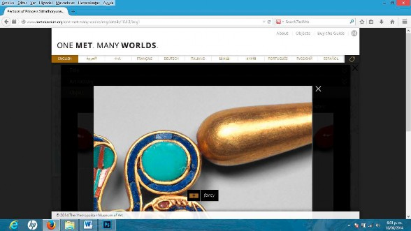
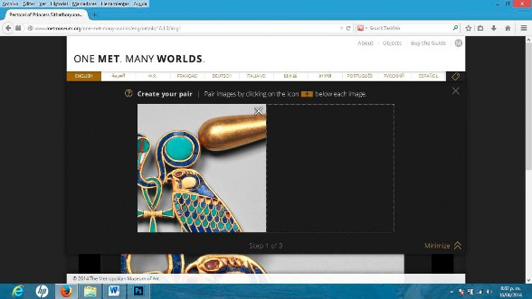
Ilustración 39, MET Museum
Ilustración 40, MET Museum
Imágenes tomadas por captura de pantalla, www.metmuseum.org/one-met-many-worlds/
La Misión Cultural de Arabia Saudita en Estados Unidos, en colaboración con las firmas de diseño Ideum y Dahlia Design, participaron en la creación de una interfaz social, en una pantalla multitouch, para que los usuarios del museo, descubrieran e intercatuaran con los contenidos sobre la historia y la cultura de Arabia Saudita.
El software diseñado por Ideum, visualiza en pantalla una estructura tridimensional (mapas conceptuales enriquecidos tridimensionales), donde cada esfera es un concepto (barra de navegación que organiza la información en 6 bloques: historia, cultura, futuro, etc.) a explorar. Estas esferas tienen comportamientos visibles que permiten al usuario inferir las posibilidades de uso. Las esferas tienen movimientos, que invitan al usuario a ser seleccionadas. Cuando el usario selecciona en pantalla cada una de estas esferas, de ellas se desprenden lazos a otras esferas o nodos más pequeños, los cuales contienen las subcatergorías de información. Cada esfera de las subcategorías, poseen vínculos a contendios mutimedia y visualiaciones en 3D, que emergen a los bordes, en áreas cercanas al concepto deseado. El usuario puede manipular, casi de manera física los elementos multimedia, rotándolos o moviéndolos.
Al ser una mesa con pantalla multitouch, de formato grande, varias personas se sienten invitadas a dialogar entorno a un mismo contenido digital, apoyando la adquisición de conocimientos y estrechar lazos sociales entre personas afines.
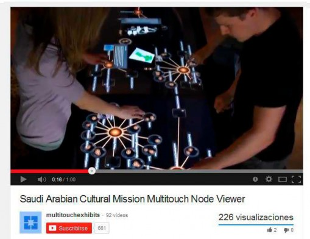
Ilustración 41, Ideum, Interactive Multitouch Table

Ilustración 42, Ideum, Interactive Multitouch Table
www.ideum.com/interactive-exhibits/multiusermultitouch-node-exhibit
Varias compañías de dispositivos de proyección y visualización de imagen y sonido, han desarrollado sistemas interactivos que son integrados en las exhibiciones de los museos, para que sus visitantes puedan interactuar con los contenidos de manera lúdica y en algunos casos contribuyendo a la exposición a través de sensores de movimiento, sonido o tocando las pantallas multitouch.
En otros casos, los museos han recurrido a maquetas y juegos experimentales con la materia y el espacio, para motivar a los visitantes a interactuar y descubrir por si solos la información que es valiosa para cada uno.
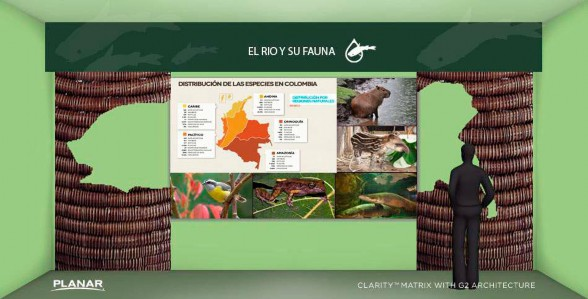
Ilustración 43, Planar interactive screens
Imagen tomada por captura de pantalla, software de la firma PLANAR para diseño de exhibiciones con pantallas táctiles.
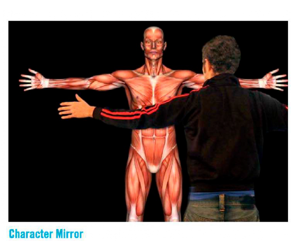
DISEÑO DE AMBIENTES EDUCATIVOS INTERACTIVOS MULTIMEDIA PARA MUSEOS
Ilustración 44, Snibbe Interactive Character Mirror, Museos de ciencias, el cuerpo humano
Snibbe Interactive products, character mirror, body tracking technology, interactive screen. Imagen tomada de panfleto de productos de Snibbe Interactive.
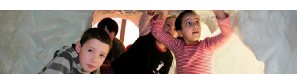
DISEÑO DE AMBIENTES EDUCATIVOS INTERACTIVOS MULTIMEDIA PARA MUSEOS
Ilustración 45, Museo del Agua de Holanda
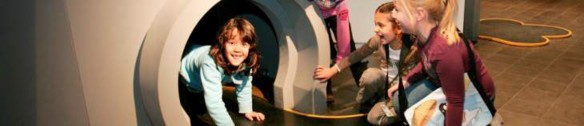
Ilustración 46, Museo del Agua de Holanda
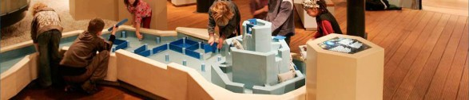
Ilustración 47, Museo del Agua en Holanda
Museo Holandés del Agua, http://watermuseum.nl/
El Museo Participativo
“Un lugar donde los visitantes pueden crear, compartir y conectar con los otros,
alrededor de un
contenido” Nina Simon
Es el espacio donde confluyen el conocimiento sobre la colección de todo el personal
del museo y la curiosidad creadora de los usuarios. En este espacio, la colección crece por la contribución de los usuarios a la vez que la institución afianza su relación con la comunidad, promocionando los valores culturales, científicos y naturales de una sociedad.
En el museo participativo, el mensaje no es masivo, por el contrario, es personalizado y creado junto al usuario. La institución conserva sus objetivos básicos, pero es dinámica, descentralizada y democrática.
La institución cobra relevancia para los usuarios, brindando las herramientas y posibilidades diversas, que apelan a sus gustos como consumidores de contenidos, mientras se brindan las oportunidades de contribuir activamente, añadiendo o modificando el contenido de la colección. También se ofrece la posibilidad de compartir la experiencia con otros socialmente dentro y fuera del museo físico o virtual, ya sea como colectores, críticos o co-creadores.
Para diseñar las herramientas encaminadas a la participación de los usuarios, es necesario comprender los comportamientos, que los usuarios pueden tener frente a la colección y a la motivación que tienen en diferentes estancias.
En estudios de audiencias de plataformas sociales online, como YouTube, se han identificado seis niveles de participación: 1--- Creadores, son el grupo minoritario y son aquellos que generan contenido, subiendo videos y publican sus blogs. 2--- Críticos, les apetece opinar, dar puntajes a los contenidos y publican sus comentarios en las redes sociales. 3--- Coleccionistas, sus acciones se limitan a organizar vínculos o direcciones, a guardar y añadir contenidos para su grupo o propio consumo. 4--- Monitores, mantienen sus cuentas en diferentes plataformas sociales, donde poco interactúan. 5-
-- Espectadores, consumen mucha media en cualquier formato, escrito, video, fotos
mientras visitan diferentes plataformas sociales. 6--- Inactivos, no están inscritos en ninguna red social.
Los usuarios pueden elevar sus niveles de participación, en la medida que se sientan cómodos y útiles en sus acciones, así como en el nivel de repercusión que sus acciones pueden llegar a tener. Por ello, las herramientas de participación deben funcionar como una base segura, pero flexible, desde la cual actuar y apoyar a su red, materializando los logros en algo visible, público e importante.
Trabajo en equipo, auto---motivado, entretenido, retos, objetivos individuales y comunes, son los adjetivos que se usan para describir las experiencias de usuario, que el museo debe proveer para captar a los usuario o nuevas audiencias, ya que estos mismos adjetivos, son las características del entretenimiento. Durante el desarrollo de tareas entretenidas, los usuarios experimentan sentimientos de júbilo o felicidad. La felicidad es una emoción, una emoción positiva, a través de la cual, el museo debe conectar con sus usuarios.
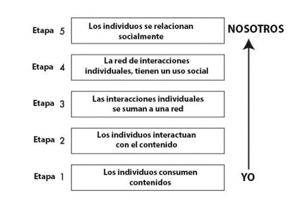
gráfico 2, Etapas del comportamiento participativo de los visitantes de los museos, Nina Simone
Gráfico adaptado del libro “The participatory Museum” de Nina Simone
John Falk y Lynn Dierking (Fundadores del Instituto de Innovación para el Parendizaje, John Falk y Lynn Dierking han sido profesores en Free Choice Learning en la Universidad del estado de Óregon), en sus investigaciones sobre experiencias museísticas, exponen que los visitantes pueden identificar situaciones que brinden alegría, basados en sus habilidades y oportunidades de desarrollo personal dentro de un contexto social.
Esto lleva a replantar la visita tradicional del museo, donde el visitante pasivamente observa y circula por un espacio expositivo ya que este tipo de experiencia ni motiva, ni ofrece a los visitantes, esas oportunidades de las que Falk encontró.
El museo participativo a través de su colección e instalaciones, debe conectar con las emociones y sentimientos de los visitantes. Al hablar de sentimientos y emociones, debemos citar al psicólogo catalán Eduard Punset y al neurólogo portugués, Antonio Damasio. Damasio propone su modelo de la evolución de los sentimientos en el cual, el ser humano percibe del entorno sensaciones (positivas o negativas), estas acompañadas de acciones que incluyen el sistema sensomotor, con los cuales se actúa, se expresa el ser humano y se construye el conocimiento. En una segunda instancia, el ser humano construye sentimientos y la conciencia de si en ese espacio (incluyendo sus acciones).
Para dar el salto al modelo participativo, el museo debe ser claro en varios aspectos que este reto conlleva: el premio o retribución por contribuir o participar, el rol que desempeña y como afecta esta contribución a los demás visitantes. La claridad, la cantidad y la calidad de información que posea el visitante, lo ayudará a imaginar y proyectar situaciones futuras, que describen en su mente los efectos de su participación. Si la información va en contravía (el psicólogo social estadounidense, Leon Festinger propuso la teoría de la ‘disonancia cognitiva’ para referirse a las situaciones de incomodidad por contradicción entre ideas y creencias o entre lo que se piensa y se hace) de sus expectativas o no es suficiente, el visitante jamás se sentirá motivado a participar. El rol que pueda cumplir el visitante, debe darle a este sensación de control de lo que hace y la retribución, debe darle ese reconocimiento que siente merecer socialmente, públicamente (control y reconocimiento, ambas son dimensiones de la felicidad según Punset).
La información no solo ayuda al visitante a formarse un mapa mental de la actividad, también es muy valiosa para el museo, para diseñar el tipo y las actividades participativas que desea implementar, y esto depende en gran medida del conocimiento que tenga de los usuarios a los que piensa invitar a actuar.
Muchos museos fallan al integrar exhibiciones participativas, pues introducen actividades y tecnologías de manera inadecuada. Lo podemos ver en niños que
transitan desaforadamente entre actividad y actividad, sin concentrarse en una en particular. Lo que ha fallado en estas exposiciones, es la claridad de las reglas, roles, límites y objetivos de la actividad participativa. Los individuos son netamente sociales, y la sociedad tiene reglas y límites que organizan y estructuran. Cada ciudadano es una célula de la sociedad y sus acciones se suman a la actividad total del conglomerado humano. De esta misma manera estructurada y limitada, es aconsejable a los museos integrar y desarrollar las actividades participativas en sus exhibiciones.
El principal prerrequisito antes de organizar o planear una actividad participativa que convoque multitudes, es conocer a cada individuo de esa multitud pues a partir de la conexiones individuales, se construyen las redes sociales participativas (hablaremos de redes sociales en otro apartado de esta tesis). Las individualidades se estudian desde dos ángulos humanos esenciales: el cognitivo y el emocional. Un estudio centrado en los usuarios, reunirá la información sobre los contenidos que apelan a sus intereses y a como este percibe y construye los significados a partir de la colección. También investigará que motiva y conecta con los usuarios, para alojar diferentes posibilidades de participación, de acuerdo a los comportamientos de los usuarios.
Esta tesis tomará los objetivos del museo participativo, para proponer modelos de interfaz de ambientes educativos interactivos que se adapten a los usuarios y converjan con los contenidos y valores del patrimonio.
El museo como medio masivo de comunicación
Con ilustraciones y gráficos, describiremos y ubicaremos las áreas en que el museo puede explotar para evolucionar a la era del conocimiento colectivo.
La comunicación estratégica en todas su funciones, juegan un papel fundamental para conjugarlas en una fuerza de atracción, que convoque y comprometa a las diferentes audiencias, que jugaran un rol más activo, invitándolas a ser coautoras de los contenidos de las exhibiciones, físicas y virtuales.
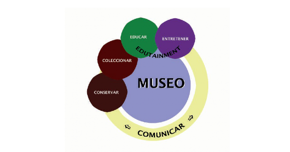
DISEÑO DE AMBIENTES EDUCATIVOS INTERACTIVOS MULTIMEDIA PARA MUSEOS
gráfico 3, La misión del museo
Gráfico de elaboración propia
¿Qué contenidos tiene la colección?, ¿cómo adaptarlos a cada visitante?, ¿cómo hacerlos interesantes y entretenidos a cada público?, ¿cómo motivarlos a interactuar y a participar? Son interrogantes que una buena gestión de la comunicación se plantearía para optimizar sus recursos.
En el fenómeno comunicativo, es necesario tener claro los diferentes elementos de este, p ara ver el proceso que sigue la información, desde su origen y luego las reacciones u obstáculos que puedan existir en el entorno, en los canales o en la adaptación de su codificación al interlocutor.

DISEÑO DE AMBIENTES EDUCATIVOS INTERACTIVOS MULTIMEDIA PARA MUSEOS
gráfico 4, Esquema simplista de la comunicación del museo
Gráfico de elaboración propia
Basándose en el modelo de Lasswell sobre los medios masivos de comunicación, se entenderá como el museo es sujeto de replanteamientos conceptuales fundamentales, para sobrevivir en un entorno altamente competitivo, decentralizado y dinámico.
Lasswell (1940, sociólogo estadounidense, influenciado por una época de conflictos, durante la segunda guerra mundial y los nuevos medios comunicación masiva, como el cine y la radio) se propuso responder con un modelo comunicativo, los cuestionamientos más importantes para la efectividad de la propaganda política.
DISEÑO DE AMBIENTES EDUCATIVOS INTERACTIVOS MULTIMEDIA PARA MUSEOS
gráfico 5, Modelo de Comunicación de Lasswell
Gráfico de elaboración propia, basado en la bibliografía
Su modelo es muy útil para entender el fenómeno comunicativo, proveyendo una guía para conocer la audiencia y con base a esta, optimizar los recursos, adaptando el medio y el mensaje, así como definir los alcances y efectos de ese acto comunicativo en los receptores.
gráfico 6, El ruido (Shannon y Weaver) en el canal de comunicación
Imagen tomada de lenguajeact.blogspot.com
El receptor en este modelo es pasivo y se espera que acepte, asimile y se identifique con el mensaje, inclinándose a actuar participativamente por los bienes e intereses nacionales.
Contemporáneos a Lasswell, el matemático estadounidense Claude E. Shannon y el biólogo Warren Weaver, autores del libro “La Teoría Matemática de la Comunicación” (The Mathematical Theory of Communication), preocupados por la optimización del acto comunicativo, desde un enfoque mecanicista, desarrollaron logaritmos tendientes a hacer más efectiva la transmisión del mensaje, aumentando la velocidad de los canales y codificando mas eficientemente el mensaje para evitar los ruidos entre emisor y receptor.
Mas tarde en 1954, Wilbur Schramm (1954), introduce la noción de la comunicación no verbal, que ocurre en paralelo al mensaje, con el cual puede reafirmar el mensaje o
transmitir mensaje paralelos distintos. También considera la diversidad existente en una audiencia, donde cada persona receptora interpretará el mensaje de manera individual, ya que todos poseen personalidades, niveles cognitivos y bagajes culturales distintos.
gráfico 7, Modelo de comunicación masivo con retroalimentación en las organizaciones
Imagen tomada de pensamientohibrido.blogspot.com
gráfico 8, Modelo de comunicación de Shannon y Weaver aplicado a los museos, al sistema educativo y a los productos/servicios interactivos multimedia
Gráfico de elaboración propia
DISEÑO DE AMBIENTES EDUCATIVOS INTERACTIVOS MULTIMEDIA PARA MUSEOS
Ilustración 48, Modelo de comunicación circular con retroalimentación
Para que exista el proceso llamado comunicación, debe haber una intención de producir un efecto en otra persona. De lo contrario, toma lugar un acto expresivo.
En nuestro caso de estudio, el aprendizaje, se traduce como un cambio de comportamiento en el visitante del museo. Pero para que la visita conduzca al aprendizaje, el visitante debe comprender y disfrutar la experiencia museística.
La introducción de respuesta (feedback) rompe con la cadena lineal, jerarquizada y unidireccional del procesos, convirtiendo al receptor de un comportamiento cognitivamente pasivo a uno activo, dotando el mensaje de significado, contribuyendo al diálogo.
A través de la respuesta, la fuente también puede adaptar su sistema de códigos usado, realizando cambios en su emisión y en el canal, de modo que el receptor reciba satisfactoriamente el mensaje que se desea trasmitir.
El ruido puede afectar este ciclo de comunicación en ambas direcciones, pues este puede entorpecer la comunicación entre fuente y receptor. Por parte del emisor, en este caso el museo, también recae la responsabilidad de conocer detalladamente (segmentación del mercado) a sus visitantes y posibles visitantes, para canalizar sus esfuerzos comunicativos, servicios y programas educativos.
Gráfico de elaboración propia
En todos los modelos se enuncia la principal, el mensaje, la información comunicar y desde liego que su interpretación o decodificación, depende del bagaje personal (psicológico, social y cultural, forzando al emisor en cada flujo informativo, adaptar el sistema de códigos en cada transmisión.
Todo fenómeno comunicativo se basa en un lenguaje de signos, de diferentes tipos. El ser humano emplea muchos lenguajes de signos distintos diariamente: corporalmente, con sonidos, gráficamente, y muchas veces durante la emisión de un mensaje, se pueden usar distintos tipos a la vez.
El receptor o intérprete, percibe de sus sentidos y en conjunción con otros procesos mentales, construyendo una percepción, y esa interpretación de la percepción, se contrasta con el conocimiento previo y se produce la semiosis, o la generación de significado de un signo.
En el museo, por ejemplo, tenemos un objeto en una colección y un intérprete, que es el visitante del museo. El proceso de semiosis toma lugar en la mente del visitante y este construye un significado de ese objeto, que se convierte en un signo.
Para hablar de signos, base fundamental de cualquier fenómeno comunicativo, es inevitable mencionar a dos pensadores de finales del siglo XIX, Ferdinand de Saussure (introdujo el término semiología, la cual definió como la ciencia que estudia la vida de los signos en la sociedad) y Charles S. Peirce (usaría el término semiótica, teoría general de los signos, la cuale es el estudio de los sistemas de signos: la relación entre signos y significados y sus orígenes) , para entender los fenómenos de significación y creación del signo, desde la lógica y la filosofía.
Ferdinand de Saussure (lingüista suizo), padre de la lingüística moderna, fue quien colocó por primera vez al signo, como base esencial de la construcción de la lengua, rompiendo con el viejo paradigma, de que cada lengua era una lista de vocablos para cada cosa, describiendo la lengua como una institución social---cultural independiente a los intérpretes. Para Saussure, existe un significante (la imagen de margaritas), un significado (flores de diferentes colores) y el signo (la flor en si).
principio de arbitrariedad, el cual no significa que la relación entre significado y signo sea de libre elección de cada interprete, si no de una sociedad, la cual construye por convencionalismos que no obedecen a ninguna razón lógica a natural (por ejemplo la existencia de varias lenguas distintas); el principio de inmutabilidad del signo, afirma que el signo obedece a unas leyes del sistema de códigos al que pertenece (lenguaje en el caso de Saussure, ligado a un sonido y a un concepto), que son heredadas de los antepasados; y el principio de mutabilidad, se refiere a que en el tiempo, la relación entre el sonido y el significado, peuden cambiar, por ejemplo, el desarrollo de la tecnología, ha provocado el cambio de uso de algunos vocablos, como por ejemplo ratón (mousse: de animal a un dispositivo de entrada de datos).
Luego, su contemporáneo Charles Sanders Peirce (1867-1903, científico y filósofo
estadounidense, padre de la semiótica moderna), representante del pragmatismo, desarrolló métodos lógicos para entender fenómenos tales como la creación de los signos (semiosis). Para Pierce, todo proceso mental, es un proceso de semiosis, y construyo su modelo triádico de la construcción del Signo.
El fenómeno de construcción del signo consiste en un proceso de tres pasos: el primero (primeridad: original, vivido), se percibe el objeto tal como es, singular y fiel a la percepción que se tiene de el; en el segundo (segundidad: en relación a..), hay una comparación del objeto a otros, se realiza un contraste de esa percepción con otros conocimientos previos; y en el tercero (terceridad: mediación, hábito) existe el objeto, su relación a otros y un tercero que es el signo, eso que lo representa. Representamen es el signo.
gráfico 9, Peirce, construcción del signo
Gráfico de elaboración propia a partir de los modelo de Peirce
Como ejemplo concreto podemos usar la impresora, tal como es y los signos que la representan, según los estándares o plataformas computacionales.
Ilustración 49, El objeto, la impresora
Ilustración 50, Ícono de la impresora
Imagen tomada de internet, impresora HP Icono tomado de Adobe, base de íconos
para diseño de interfaces
El signo representa al objeto, posee características de este en una escala de abstracción hecha por el intérprete (desbordamiento del signo). La representación del signo puede cambiar, (Type, según Umberto Eco, quien divide al signo entre tipo y token).
En diseño de interfaces, la cultura tecnológica desarrolla y transforma los signos con su
evolución. Cabe preguntarse según sea el escenario de diseño, que signos se usaran, aquellos que el usuario reconoce, que son compatibles con su conocimiento y experiencia previos, o romper paradigmas y crear confusión en la mente del usuario, forzándolo a emplear recursos para decodificar los mismos contenidos, pero representados de distinta manera.
La semiótica y la semiología, aunque se usan de igual manera, los enfoques de sus creadores fueron distintos, sin embargo ambos modelos han sido usados (Barthes, Umberto Eco) y continúan vigentes, sobre todo en un mundo de información, donde la computación ubícua, ha extendido su uso a mas áreas del saber humano y dinamiza el ciclo de vida de los signos (algunos mueren y otros se reciclan o se transforman).
Construcción del conocimiento
Anatomía del Conocimiento
El cerebro es nuestro órgano de conocimiento y el que nos caracteriza como especie, Homo Sapiens y también como individuos. Darwin en su teoría nos habla sobre la teoría de la evolución de las especies, pero encima de esta, existe otro, un proceso único de cada persona, el cual es resultante de su carga genética y sus experiencias vividas. El esquema resultante de la evolución biológica y de la carga genética, sigue evolucionando con nuestras experiencias y realiza una imagen virtual de lo que nos rodea. A través de nuestros sentidos captamos de la realidad sensaciones, pero en ausencia de ellos, también actuamos (procesos mentales como los recuerdos y los sueños, procesos lógicos de razonamiento).
Este segmento de conocimiento neurocientífico, nos permitirá profundizar en el funcionamiento de los órganos y partes del cerebro que interactúan en los procesos mentales fisiológicos que conducen al conocimiento.
El cerebro a nivel macro consta de unos órganos y áreas especializadas, que contribuyen a las funciones pensantes, que detallaremos a continuación:
Hemisferios derecho e izquierdo:
El hemisferio izquierdo está especializado en el pensamiento secuencial, lo cual se ve reflejado en aptitudes como numéricas, analíticas, uso verbal y lógica.
El derecho está especializado con el conocimiento de si mismo y facultades creativas, expresadas en aptitudes musicales, gráficas, expresión oral y diseño.
TABLA 1: ESPECIALIZACION DE LOS HEMISFERIOS CEREBRALES
Izquierdo | Derecho |
Pensamiento secuencial | Conocimiento de si mismo |
Ve los detalles | Imaginación |
Lógica: causa --- efecto | Drama |
Reglas Gramaticales | Metafórico --- Poesía |
Usa hechos | Música |
Talentos expresivos | Ritmos |
Bueno con los números | Meditación |
Analítico | Orador |
Buena memorización: nombres de cosas | Arte |
Tabla 1, Especialización de los hemisferios cerebrales
Ilustración 51, Dominancia Hemisférica
Imagen de elaboración propia
La manera de adquirir información y procesarla, se explica por el fenómeno llamado dominancia hemisférica (Esto fue descubierto por Roger W. Sperry, quien gano el premio Nobel de medicina en 1983 por trabajar en la investigación de la división del cerebro. En el estudio se empleó el PSPET (Pet Scan Positron Emission Tomography), se suministró glucosa al cerebro y se dieron algunas tareas a realizar durante el procedimiento. La glucosa es asimilada por algunas partes del cerebro dependiendo de la tarea a realizar y estas zonas son visualizadas en la pantalla, la cual está conectada por electrodos al cerebro. La dominancia hemisférica consiste en que cada persona procesa la información dependiendo del desarrollo cerebral derecho o izquierdo y de los estímulos que se presenten durante la enseñanza. Debido a esto, las personas desarrollan diferentes talentos y optan por profesiones distintas:
Tabla 2--- Dominancia hemisférica izquierda
Profesión | Talento |
Matemáticos | Lógica, pensamiento secuencial y talentos analíticos |
Químicos | |
Contables | |
Abogados |
Tabla 2, Dominancia hemisférica izquierda
Tabla 3--- Dominancia hemisférica derecha
Talento | Profesión |
Desarrollo corporal, desarrollo motor, ritmo y orientación espacial. | Atletas |

Actores | |
Músicos | |
Artistas |
DISEÑO DE AMBIENTES EDUCATIVOS INTERACTIVOS MULTIMEDIA PARA MUSEOS
Tabla 3, Dominancia hemisférica derecha
Este hecho, da la pauta para que los métodos de enseñanza y cualquier sistema que pretenda impartir una información, deben adaptarse a todas las maneras de aprender, teniendo en cuenta todos los talentos y aptitudes y ayudar a desarrollarlos.
Corpus Collosum: así como cada hemisferio se especializa, deben conectarse entre si para compartir información almacenada en ambos, mediante este haz de fibras.
Área Broca, área Wernicke y el giro angular: estas áreas están ubicadas en el hemisferio izquierdo, entre el lóbulo temporal y el parietal. Son los centros del lenguaje.
gráfico 10, Estilos de aprendizaje e inteligencias múltiples, Harward Gardner y McCarthy
Gráfico de elaboración propia
Hipocampo y la amígdala: el hipocampo es la estructura responsable de transformar
la memoria de lapso corto en la memoria de lapso largo y con la ayuda de la amígdala que está a su vez conectada con las experiencias emocionales.
Tras la visita al museo, la nueva información se guardan en primera instancia en la memoria temporal para luego ser almacenados y recordados cuando se necesiten.
Si la experiencia que brinda el museo es grata y memorable, será fácil guardar la información y recordarla.
Tengamos claro las dos actividades de la memoria: la primera es 'retener' la información y 'recordar' es volver a traer a la memoria temporal esa información guardada cuando se desea.
La visita al museo o a cualquiera de las exposiciones, debe ser planeada teniendo en cuenta que la información adquirida al inicio y al final, es la de más fácil almacenamiento, pero la información en el lapso medio es muy difícil de memorizar. Si la información no es revisada continuamente durante las 24 horas de su adquisición, se estima que un 80% de esta es olvidada.
También se conoce que la exposición no debe contener más de 7 unidades de información en el recorrido, pues es la unidad máxima de memorización, de nuevos contenidos.
Sistema de activación reticular: son las bases del consiente. Es el responsable de fomentar las alertas y de conectar el consiente con el subconsciente.
Los lóbulos temporales de la corteza cerebral: son los lugares de almacenamiento de la memoria. El lado izquierdo aloja la memoria verbal y el derecho la visual.
Lóbulo Frontal: responsable de altos niveles de pensamiento, como el planteamiento.
Lóbulo Parietal: Está detrás del lóbulo frontal con funciones sensoriales.
Lóbulo Occipital: Son las partes más bajas de la corteza, las cuales tienen funciones de memoria y de audio---sensoriales.
Una visita al museo, que se aproxime desde diferentes estímulos sensoriales, tendrá más oportunidad de ser recordada por diferentes visitantes sin importar su predominancia hemisférica, ya que habrán usado su memoria visual, verbal o auditiva para el acopio de información.
Corteza Motora: La parte posterior del lóbulo frontal es el que controla la función
de los músculos.
Sulcus Central: Membrana que separa el lóbulo frontal del parietal.
Sulcus Parietal: Membrana que separa los lóbulos frontales y temporales.
A nivel micro, el cerebro está compuesto de células llamadas neuronas1[3], todas especializadas: algunas se dedican a procesos fisiológicos, otras a motoras y otras a lo que denominamos pensamiento o razonamiento, acciones que conducen al conocimiento.
Ilustración 52, Anatomía del conocimiento
Gráficos editados y adaptados en photoshop con información traducida.
El proceso de sinapsis (descubiertas por el anatomista español Santiago Ramón y Cajal, en los albores del siglo XX), el cual se define como la conexión entre las neuronas, que procesan y comparten la información mediante procesos electroquímicos a través de sus órganos (axiomas-obtener información y dendritas--- comunicar la información).
Ilustración 53, El cerebro: lóbulos y áreas funcionales
Gráficos e imágenes usadas bajo licencia de SmartDraw Cl.
Procesos Mentales
Para seguir entendiendo el fenómeno cognitivo, hay que entender los procesos mentales estudiados por varias disciplinas (antropología, la psicología cognitiva, la neuromedicina y la pedagogía de la educación) que lo explican.
Aprendizaje es según el consenso, el cambio de comportamientos innatos y las asociaciones (Christian Balkenius, autor del libro “Aprendizaje biológico e inteligencia artificial”). Según sean las nuevas experiencias, se efectúan las adaptaciones a nuevas circunstancias, que son reflejo de estos cambios de comportamiento y esto es equiparable a inteligencia.
Por aprendizaje también se entiende, el acopio de información del entorno. A través de los sentidos, la experiencia en el museo es percibida, como algo monótono o algo entretenido, siendo la segunda instancia, la única manera para inculcar material nuevo y que el visitante lo memorice y recuerde.
Mediante una experiencia museística rica, que estimule los sentidos, se crean las percepciones, impresiones o sensaciones (términos equivalentes), las cuales son los elementos básicos de los procesos mentales.
En el caso de estar exentos de cualquier estímulo, las experiencias mentales crean las imágenes o ideas.
El cerebro en su evolución única y particular de cada ser, va tejiendo redes de pensamiento o también llamadas ideas complejas (anatómicamente hablando, redes neuronales), de las asociaciones entre esas sensaciones captadas por los sentidos y las imágenes creadas. Estas asociaciones son particulares y únicas, ya que se establecen dentro de patrones y leyes derivadas de las experiencias vividas (James Mill, John Stuart Mill, David Hume, Edward Titchener).
Una respuesta activa como el lenguaje, es solo un ejemplo de como esos conocimientos son transformados. Esta transformación se conoce como proceso cognitivo.
Estas respuestas activas, como lenguaje, trabajo manual o comportamientos, no suceden en serie, ocurren en paralelo ya que las neuronas envían impulsos nerviosos entre ellas, las cuales tejen redes neuronales muy complejas, teniendo un intrínseca relación.
La semiosis (Peirce, científico estadounidense, padre de la semiótica moderna, usó este término, para referirse a los procesos de encontrar y relacionar significados a signos, emitidos o recibidos. Es el proceso de significación de los signos), término que
se refiere al entendimiento de los mensajes en un proceso de diálogo (interfaz entre dos entes comunicativos, de información y respuesta), conduce también al conocimiento. Aplicado esto a la asistencia a una exposición, el museo es un sistema comunicativo, personal y de masas, que debe ajustar sus mensajes, a las capacidades y niveles cognitivos de cada visitante, para poder lograr que estos aprendan el material a impartir. Las preguntas efectuadas al guía o mediador, educador o el personal del museo, sobre la información obtenida, serán respuestas activas conductoras al conocimiento.
Durante la visita al museo, se deben procurar afianzar los contenidos mediante sensaciones distintas o repetitivas de apoyo, para lograr la asociación entre el estímulo y la información.
Una experiencia más que satisfactoria, lograda por el museo y grabada en la memoria del visitante, logra fidelidad como un producto a una marca. Esta fidelidad, se traduce en varias visitas al museo y por la repetición de esa experiencia, se potencia el aprendizaje.
Los programas entre instituciones educativas y museos, o las mismas visitas guiadas programadas, son realizadas en grupo de personas, convirtiendo esta experiencia el museo es un espacio propicio para el aprendizaje. Refiriéndonos y tomando como base los conocimientos obtenidos del museo, los antropólogos afirman que el lenguaje, se desarrolló en esos primeros círculos de humanos, que desarrollaban herramientas y evolucionaron poco a poco un sistema de signos, que usaban para instruir a otros en la fabricación de estas y distribuirse las tareas y roles (Hewes, Goodall, Holloway son tres antropólogos, quienes relacionaron el desarrollo del lenguaje con la fabricación de herramientas, en las e tapas tempranas de la humanidad. Otro enfoque fue hecho por Knight, quien relaciona el desarrollo del lenguaje con la cooperación y la cohesión social).
Las actividades grupales, son situaciones idóneas para el aprendizaje, pues motiva la creación de redes complejas y el desarrollo mental. Al interaccionar socialmente, la excitación y los niveles de estrés aumentan y esto conlleva a interesarse y concentrase en las labores desarrolladas.
Mediante la acción, la instrucción y la exploración, se desarrollan procesos mentales previos (estudio del problema, generación de soluciones, asociaciones, categorización) al desarrollo de habilidades mentales más desarrolladas como el razonamiento y la solución de problemas.
Durante la instrucción el usuario recibe conocimientos, durante la exploración, haya el problema confrontándolo con los conocimientos previos y durante la acción genera
respuestas y soluciones, que las hace tangibles aplicándolas al objeto, modificándolo.
La psicología evolutiva, explica con este mismo proceso, como nuestros antepasados mediante nuevos retos y problemas a resolver, desarrollaban nuevas y distintas soluciones, generando el desarrollo cognitivo que nos caracteriza como Sapiens.
Un museo posee en la colección, el material ideal para la instrucción y la exploración. Mediante la interacción con objetos originales, prototipos o modelos de la colección, el visitante obtiene la información necesaria para desarrollar estas habilidades, conectando con el tema de una manera mas natural y humana, reproduciendo situaciones similares a nuestros predecesores.
Utilizando la colección y otros sistemas de comunicación (realidad aumentada: medios de realidad virtual que acompañan y complementan el material real), el museo puede desarrollar actividades estratégicas que tengan apoyos educativos, guías verbales y no verbales para el trabajo en ese entorno.
Otra virtud de las actividades lúdico-educativas en el museo, es que al ser una actividad extracurricular y distinta, genera en el visitante emociones de alegría que provocan reacciones químicas y hormonales necesarias para la aceleración de esos impulsos nerviosos entre las neuronas, beneficiosos para el desarrollo cognitivo durante esas actividades.
Narrando como un cuento, la información a impartir, se logra conectar con los sentimientos del espectador y más aún, si el entorno es embebido en un sistema que ayude ambientando la historia contada.
Podemos resumir que mediante un entorno lúdico no formal, como lo es el museo, que despierte y motive la creatividad, que use muchos medios de comunicación y retroalimentación con el usuario y su grupo, estimulando diferentes sistemas sensoriales, adaptado cognitivamente a diferentes niveles, que ofrezca retos y despierte el interés en el proceso de aprendizaje de un contenido dado por los educadores, que fomente el trabajo en equipo y a su vez despierte las habilidades sin importar las dominancias hemisféricas, volcaría a los museos y centros educativos en una alianza que derivaría en la creación de un sistema óptimo de enseñanza que conduciría a la formación de conceptos y conocimientos en los estudiantes, visitantes o usuarios.
mapa conceptual 3, Características del aprendizaje según el contexto: instituciones educativas, museos e internet
mapa conceptual 4, Teorías cognitivas y sus exponentes
105
DISEÑO DE AMBIENTES EDUCATIVOS INTERACTIVOS MULTIMEDIA PARA MUSEOS
Teorías cognitivas
Las teorías cognitivas han abordado la investigación, sobre los procesos y escenarios propicios para la construcción del conocimiento. De ellas se señalan principios y leyes que son aplicadas al diseño y desarrollo de material didáctico o entornos educativos.
Comportamentalista o Conductista
La teoría comportamentalista o conductista (Behaviorism) hizo importantes hallazgos que no debemos desechar, pero muchas de sus leyes se han reevaluado y desmitificado.
Basados en diferentes experimentos de estímulo y respuesta, los conductistas no estudiaron profundamente los procesos del cerebro, explicando de manera muy básica el aprendizaje, entendido como los cambios de comportamiento, los cuales son las respuestas generadas a partir de los estímulos dados. Para ellos todos estos patrones de comportamiento automáticos eran medibles y observables.
Los conductistas, enunciaron una serie de leyes que explican el fenómeno cognitivo. La ley del efecto, afirma que cuando la conexión entre estímulo y respuesta es positivamente premiada, el patrón de conducta se fortalecerá. Thorndike, dijo que la creación de nuevas sinapsis surgen cuando ante un estímulo, la respuesta es positiva. Seattler, el aprendizaje se da cuando las conexiones entre neuronas se crean debido a patrones de comportamiento. Skinner, las respuestas premiadas, ayudan a formar conexiones (buenas notas refuerzan la disciplina por el estudio) y al contrario, si es negativa la relación, los patrones tenderán a desaparecer. Más tarde se ha descubierto que esta afirmación no es absoluta, que los castigos y los premios no necesariamente debilitan o refuerzan los patrones deseados o indeseados. Las respuestas que son premiadas con eximir situaciones de estrés son reforzadas positivamente. Ignorar comportamientos no deseados suelen ayudar a debilitarlos. Tanto el cambio en la manera de aplicar el castigo como la premiación debilitan los patrones de comportamiento no deseados.
La ley del ejercicio, afirma que los estímulos y las repuestas reiteradamente practicadas refuerzan la conexión entre ellas. Pero también se descubre posteriormente que la práctica sin retro-alimentación (feedback) no ayuda al refuerzo de estas conexiones deseadas.
La ley de predisposición, asegura que las estructuras orgánicas del sistema nervioso y ciertas unidades de conexión (neuronas y aparatos orgánicos esenciales de pensamiento), en situaciones específicas, están más predispuestas a conducir la
información que otras.
La Ley de condicionamiento de las respuestas expone que estas son emocionales y están condicionadas a ciertos estímulos, como los miedos, y las fobias (Watson, que usó las ideas de Pavlov, sobre la teoría de que los humanos nacen con reacciones emocionales de amor y odio, que condicionan el desarrollo cognitivo) generando prejuicios (esquemas mentales cerrados y equívocos). Las conexiones entre estímulo y respuesta, condicionan los patrones de comportamiento.
La ley de cambio de comportamientos explica que estos suceden cuando se necesitan aprender una serie de pasos. Cada paso se perfecciona en forma secuencial hasta que toda sea aprendida.
Para reforzar las respuestas deseadas, se generaron una serie de programación de tiempos de refuerzo:
Intervalo fijo: la respuesta deseada es reforzada después de transcurrir un tiempo fijo, varias veces.
Intervalo variable: el tiempo que debe transcurrir entre refuerzos varía. Ratio fijo: después de un número fijo de respuestas correctas debe ocurrir un refuerzo. Ratio variable: el número de repeticiones de respuestas correctas a ser reforzadas varía.
Ratio de intervalo variable: este es tomado como el mejor sistema, ya que no puede predecir el aprendiz cuando va a ocurrir un refuerzo y se esforzarán por lograr las respuestas correctas.
Luego se han replanteado estos métodos y programas de refuerzo, porque no necesariamente condicionan las respuestas. Ciertos comportamientos son aprendidos por observación e imitación de los modelos.
Teoría Cognitivista
Este a diferencia de la conductista, tiene muy en cuenta los procesos mentales al interior de la mente y los cambios de comportamiento son tomados como índice de los sucesos en la mente del aprendiz (Jean Piaget, es el más importante representante de esta teoría).
En la cognitivista el refuerzo es también usado, pero como elemento para motivar y retroalimentar que se está procediendo bien en las respuestas.
Para los cognitivistas, la repetición, la continuidad y los refuerzos conducen al aprendizaje.
El proceso de aprendizaje, es concebido como la adquisición y reorganización de las estructuras cognitivas mientras se procesa y almacena la información.
Los conceptos desarrollados por la teoría cognitiva que permiten conocer mejor paso a paso el funcionamiento del proceso cognitivo son:
Esquema: es una estructura interna de conocimiento. La nueva información es comparada con las estructuras ya existentes (Ausubel). Los esquemas se combinan, se extienden o se alteran para acomodar o alojar la nueva información.
El modelo de proceso de información en tres pasos: compuesto de la entrada de registros sensoriales, la memoria de o corto plazo y la memoria largo plazo, la cual almacena y recupera la información.
El registro sensorial: es la entrada de datos a través de los sentidos, los cuales duran 1 a 4 segundos, desaparecen, se desvanecen y luego son remplazados.
La memoria corto plazo (STM, short term memory): almacena los datos que han entrado por los sentidos por 20 minutos o más si el estímulo es experimentado repetidamente. Puede almacenar de 7+/--- 2 a menos ítems. El tiempo de almacenamiento también puede aumentar si la información esta muy cargada de sentido.
La memoria de largo plazo (LTM, Long term memory): la información se transfiere de la STM a esta. Esta tiene una capacidad ilimitada. Si la información en STM cuando tiene una conexión con aquella ya almacenada en LTM, es más fácil de retener y memorizar.
Efectos significativos: es la información plagada de alto significado y fácil de retener. Además si está relacionada con esquemas cognitivos previos, será aún más fácil su
retención y poder ser recordada.
Efecto de posición en serie de la información: la información más fácil de recordar es aquella al principio y al final del lapso de tiempo de captación y en medio es muy fácil de ser perdida a no ser que los ítems sean muy diversos.
Efecto de la práctica: la práctica refuerza y mejora la retención de información y especialmente cuando se distribuye a lo largo del tiempo de recepción de información, posibilitando relacionar el material con diferentes contextos reales, entornos o casos aplicables.
Efecto de interferencia: ocurre cuando la información previa interfiere con la nueva.
Efectos de organización: cuando el aprendiz organiza la información recibida, le será más fácil recordarla.
Efectos de los niveles de procesamiento: dependiendo del tipo de información, esta requiere de mayores niveles de procesamiento. Por ejemplo, el lenguaje tiene un nivel semántico muy alto y requiere de mucho procesamiento. Mientras más se profundice y se analice semánticamente y se estudie, más fácil será de recordar.
Efectos mnemotécnicos: son estrategias de aprendizaje que consiste en organizar la información en partes significativas o contextos significativos. Por ejemplo, es más fácil de recordar las notas musicales por el ritmo.
Efectos de esquema: si la nueva información no concuerda con los esquemas del aprendiz, le será difícil retener y recordar. Los esquemas cambian y afectan la manera de ver la información.
Organización avanzada: son sistemas de organización de la información a ser suministrada, que destaca los elementos más relevantes de esta y permite que el aprendiz comprenda el sentido de lo que aprende, posibilitando su mejor retención y memorización.
110
DISEÑO DE AMBIENTES EDUCATIVOS INTERACTIVOS MULTIMEDIA PARA MUSEOS
MÉTODOS DE ENSEÑANZA Y TEORIAS COGNITIVAS
APRENDIZAJE ACTIVO,MÉTODO EXPERIMENTAL, PRAGMÁTICO,CONSTRUCTIVISTA APRENDIZAJE SOCRÁTICO,APRENDIZAJE MEDIANTE PREGUNTAS
Clasificación Tradicional
i
Nuevo Enfoque
i
Enseñanza Formal+. Transformar+- Enseñanza No Formal
i (Free Choice Learning,
John Falk,Lynn Dierking)
PROCESO DE APRENDIZAJE
Aptitudes
Resultados y P / \ Diferentes?
contexo •1¡•4J•i1.1o•e+•
Físico cial
Conocimientos Diferentes Previos -+ Niveles
Creencias Experiencias
Talentos y
Habilidades
Estilo de Aprendizaje
Percepción del Lugar
Accesibilidad Actividad
Grupal
Grupo es
Mediador del Proceso
Bagaje Cultural
Programa de Colaboración
Museo
Cognitivo Afectivo
Producir Social
Académica ----
Impactos Conativo
Conductual
maoa conceotual 5. Métodos de enseñanza v teorías coenitivas
111

DISEÑO DE AMBIENTES EDUCATIVOS INTERACTIVOS MULTIMEDIA PARA MUSEOS
3.2.3.3 Teoría Constructivista
Esta teoría se basa en la premisa que cada individuo construye su perspectiva del mundo, a través de sus experiencias personales creando sus esquemas (Bruner, Ulrick, Nuser, Goodman, Kant, Kuhn, Dewey, Habermas son los representantes de esta teoría. Jean Piaget tiene una gran influencia y sus ideas fueron tomadas y desarrolladas por Glasserfield).. La teoría constructivista prepara al aprendiz a resolver problemas en situaciones ambiguas, usando sus esquemas y experiencias.
Los constructivistas creen que el mundo físico es lo que une a los individuos, ya que su realidad es explicable en términos que a todos en nuestra individualidad entendemos.
Otra de las teorías es que la realidad es compartida y entendida por procesos de negociación social.
Dentro de la constructivista hay dos vertientes que explican el proceso cognitivo con diferente enfoque:
Constructivista realista: que concibe el proceso cognitivo por el cual el aprendiz construyen estructuras mentales que corresponden a estructuras externas existentes en el entorno.
Constructivista radical: el proceso cognitivo sirve al aprendiz a organizar sus experiencias del mundo más que para construir realidades ontológicas.
Desde estas perspectivas, se formulan los siguientes enunciados constructivistas: El conocimiento se construye de las experiencias. El aprendizaje es una interpretación personal del mundo.
El aprendizaje es un proceso activo en el cual la importancia significativa acompañada a la información, tiene su base en la experiencia.
El crecimiento conceptual proviene de la negociación de los significados, de compartir perspectivas múltiples y del cambio de las representaciones internas a través del aprendizaje en colaboración.
El aprendizaje debería ser situado en tareas y contextos reales. Las evaluaciones no deberían ser una actividad individual si no integrada a la tarea.
Varios teóricos cognitivistas analizaron y clasificaron los comportamientos de aprendizaje en estos básicos dominios: cognitivo, actitudinal (afectivo) y psicomotor.
112

DISEÑO DE AMBIENTES EDUCATIVOS INTERACTIVOS MULTIMEDIA PARA MUSEOS
Bloom: conocimiento, comprensión, aplicación, análisis, síntesis y evaluación.
Gagne: información verbal, talentos intelectuales, estrategias cognitivas, actitudinales y talentos motores.
El pensamiento constructivista diseñó un proceso que involucra ambientes de aprendizaje que promueve la construcción del conocimiento basado en:
Negociación interna: es el proceso de articular los modelos mentales, usándolos para explicar, inferir, predecir y reflexionar en sus habilidades.
Negociación social: articular los modelos mentales para explicar, predecir y deducir su utilidad.
Exploración de los entornos reales y la intervención de otros nuevos: proceso regulado por las intenciones, necesidades y expectativas de cada aprendiz.
Construcción del conocimiento, dotándolo de sentido en ambientes auténticos de aprendizaje: soportando varios casos prácticos y reales donde se apliquen los conocimientos de manera diversa, el aprendiz capta el sentido de la información.
La comprensión y conocimiento de sus propios procesos y métodos de solución de problemas: permitiendo saber sus métodos y procesos, podrá aplicarlos de manera versátil en diferentes contextos.
En un modelo diseñado para aprendices con talentos y no necesariamente expertos.
La colaboración entre aprendices y profesor: el profesor es visto como un mentor o guía mas que como un proveedor de conocimiento.
Provee unas herramientas intelectuales para facilitar la negociación interna con el fin de construir modelos mentales.
113
DISEÑO DE AMBIENTES EDUCATIVOS INTERACTIVOS MULTIMEDIA PARA MUSEOS
1O ASPECTOS QUE INFLUYEN Y CARACTERIZAN EL PROCESO DE APRENDIZAJE
PIAGET - VISIÓN CONSTRUCTIVISTA
Lapso Lapso Lapso Corto Medio Largo
M '([ . (;I
emona
.t ., Experiencias
«•nffii.1MfGHM
Opciones y (;I
Preferencias
Izquierda
Dom
Hemi
Categonzac1on Y Creencias
t / /
Escuchar 11
Nueva 1nformación
Información +- Previa
Percepción
Físico Social
¡/' \\
Persistencia
mapa conceptual 6, lo aspectos que influyen y caracterizan el proceso de aprendizaje, Piaget - visión constructivista
114

DISEÑO DE AMBIENTES EDUCATIVOS INTERACTIVOS MULTIMEDIA PARA MUSEOS
Teoría histórico-cultural de Lev Vygotsky
Lev Vygotsky es desarrollo la teoría socio-cultural o histórico-cultural, en la cual plantea su aporte mas significativo a la psicología moderna, la ‘zona de desarrollo próximo, la cual consiste en la diferencia de desarrollo cognitivo logrado entre lo alcanzado de manera individual y aquella lograda por interacción social (Tal zona se define como la diferencia (expresada en unidades de tiempo) entre las actividades del niño limitado a sus propias fuerzas y las actividades del mismo niño cuando actúa en colaboración y con la asistencia del adulto.
gráfico 11, Esquema a partir de la teoría histórico-cultural de Lev Vygotsky
Gráfico creado en SmartDraw CL, adaptando la información de la fuente al caso de estudio.
Desde esta perspectiva no se puede considerar a un individuo aislado de sus relaciones sociales, pues estas definen en gran parte su naturaleza y desarrollo integral, la cual tiene dos características principales, dinámica pues esta en constante cambio a medida que crece y dialéctica porque surge de la interacción social y la solución de conflictos.
Lev Vygotsky, fue un psicólogo ruso que propuso una teoría evolutiva desde las realidades individuales y sus historias de vida, experiencias e influencias sociales y culturales.
Para Vygotsky, el individuo es un ser social por naturaleza y de esta depende su desarrollo cognitivo y emocional. Para este psicólogo ruso, desde la infancia el ser
humano posee una predisposición social:
Vygotsky (1982---1984, Vol. IV, pág.. 281) escribía en 1932): “Por mediación de los demás, por mediación del adulto, el niño se entrega a sus actividades. Todo absolutamente en el comportamiento del niño está fundido, arraigado en los social.” Y prosigue: “De este modo, las relaciones del niño con la realidad son, desde el comienzo, relaciones sociales. En este sentido, podría decirse del niño de pecho que es un ser social en el más alto grado.” Ivan Ivic, París, Unesco: Oficina Internacional de Educación, vol. XXIV, n 3---4, 1994, pag773---799 (Ivan Ivich. Profesor de pedagogía genética. Universidad de Belgrado, Yugoslavia)
Lev Vygotsky plantea la teoría de la sociabilidad precoz la cual coincide el desarrollo cerebral acelerado en la primera infancia en las áreas relacionadas con el reconocimiento de los rostros y de la voz.
Vygotsky también explica en esta teoría el desarrollo del lenguaje por las relaciones sociales asimétricas con los adultos, quienes les transmiten al niño el sistema de signos, símbolos y códigos pertenecientes a la cultura en la que esta embebido.
A través de estas relaciones sociales, el niño también descubre su entorno y encuentra las motivaciones para actuar sobre el y construir.
En general de la visión de Vygotsky propone que cada individuo de manera ontogénica, tiene una historia de desarrollo mental hacia escalas superiores (atención voluntaria, memoria lógica, pensamiento verbal y conceptual, emociones complejas, colaboración) y esto ocurre en paralelo al desarrollo de los comportamientos sociales los cuales tienen sus efectos a nivel psicológico individual (Vygotsky, 1982---1984, Vol. VI, p. 56)
El desarrollo cognitivo por interacción social influye en el uso del lenguaje como instrumento de interacción social, el cual se entreteje con otros procesos y esquemas mentales.
Además de la interacción con los adultos, quienes transmiten el lenguaje el cual es desarrollado por el individuo, existen otros productos de la cultura que el sujeto asimila y que no pueden disociarse de estas interacciones sociales.
La cultura puede verse entonces como algo externo y algo propio o intrínseco del ser humano. Como algo externo, podemos pensar en la cultura material dentro de la cual se sitúa la tecnología, que diseñada y desarrollada para si mismo, afectando como un estímulo del entorno artificial, patrones de comportamiento y estructuras de pensamiento.
Esta cultura artificial que construye de manera grupal o individual, es una extensión corporal del ser humano, transformando su autoimagen.
En esta tesis planteamos el uso de la colección de los museos como estímulos de
aprendizaje, cuyos valores son construidos y transformados en un entorno social, no solo con el objetivo de proteger el patrimonio material e inmaterial, sino también de desarrollar competencias sociales y destrezas individuales. La teoría histórico---socio-
--cultural de Vygotsky aporta a esta tesis un modelo epistemológico de diseño de ambientes educativos.
El diseño de las tecnologías aplicadas a la comunicación, a la educación, al entretenimiento y al trabajo, deben ser consideradas como herramientas que expanden y potencian las capacidades humanas a nivel individual y social, ya que el proceso cognitivo en modo aislado no tiene los mismos alcances que en sociedad, siendo los otros seres humanos del grupo social próximo, extensiones de mis capacidades físicas y mentales en conjunto con la cultura artificial:
“La mano y la inteligencia humana, privadas de los instrumentos necesarios y de los auxiliares, resultan bastante impotentes, al contrario, lo que fortalece su potencia son los instrumentos y los auxiliares que ofrece la cultura”, Francis Bacon.
La cultura digital, tiene repercusiones psicológicas y en las interacciones externas (con el entorno social y material), el proceso de diseño de estas tecnologías debe investigar y descubrir esas situaciones análogas de interacción social que han contribuido al desarrollo de nuestras capacidades humanas: cognitivas y emocionales.
Lev Vygotsky aporta muchas bases para el Diseño Centrado en el Usuario (UCD), ya que su teoría se fundamenta siempre en la naturaleza antropológica, estableciendo las relaciones entre nuestra naturaleza social y la cognitiva, entre el desarrollo de la cultura material y nuestros procesos internos, entre los sistemas semióticos y el desarrollo del lenguaje. Con esta base teórica se construirán para esta tesis modelos de ambientes y herramientas de aprendizaje basadas en la cooperación, la colaboración, la solución de conflictos y la cohesión cultural y social.
Teoría Construccionista
El creador de esta teoría, es Seymour Papert, científico del MIT (Massachuset Institute of Thechnology) quien basado en Piaget (con el cual colaboró en la Universidad de Ginebra, en Suiza, hacia finales de los 50s y principios de los 60s), desarrolló su propia teoría del conocimiento. Papert fue el pionero en el uso de computadores como instrumento de aprendizaje, permitiendo a los niños por primera vez, ser creativos e inventivos usando la tecnología.
Esta teoría sostiene que la mejor manera de aprender, es un ambiente lúdico, cuando el aprendiz está comprometido y motivado con la tarea, construyendo algo que es significativo para sí mismo y luego es deseoso de compartir su creación con otros, comunicando su camino hacia el resultado. En esta teoría, la resolución de problemas
es más importante que el resultado, pues durante la tarea el cerebro construirá redes mentales de pensamiento flexibles. Armar y desarmar varias veces hasta hallar la solución al problema, recorrerá diferentes caminos y soluciones, que el estudiante puede encarar desde su propia perspectiva, usando sus talentos creativos, dotando de significado el contenido aprendido durante la tarea. En este método de aprendizaje, el aprendiz es dueño y lidera su propio desarrollo de aprendizaje dentro y fuera de los entornos de aprendizaje tradicional. El estudiante al construir, no solo construye físicamente, dentro de su mente construye ideas, esquemas mentales. Cada vez que reinventa su creación con mejoras, dentro de su mente se elaboran más desarrolladas y generando más conocimiento, convirtiéndose así un ciclo evolutivo de aprendizaje.
Papert no pretendía que la computadora dictara las tareas a desarrollar por los alumnos, por el contrario, el estudiante programaría la computadora y esta haría lo que el estudiante ordenara mediante una serie de órdenes programables. Así nació el lenguaje LOGO.
A Papert y su equipo se encaminarían en desarrollar herramientas, los ambientes (amigable, estimulante, dotado de libertad, escogencia y diversidad) y el enfoque de aprendizaje que permitiera libertad a los educandos de tomar las riendas de su proceso cognitivo (planificadores y experimentadores ambos métodos son válidos), partiendo de una conexión afectiva al desarrollo del raciocinio (una conexión afectiva con la tarea, permite que el contenido cognitivo a aprender se relacione fácilmente con conocimientos preexistentes y además sea perdurable y significativa, lo cual se traduce en el lenguaje de Piaget en asimilación de conocimiento).
Aprendizaje reflexivo (Inquiry theory): John Dewey, Herbert Simon, Edward Shon
Basado en las ideas evolutivas y de selección natural de Darwin y en la adaptación de las especies, Dewey (Filósofo estadounidense, precursor de muchas teorías y escritor de importantes libros y ensayos como: Reflex Arc Concept in Psychology, The school and society, How we think, Democracy and education, Experience and education). pensaba que los seres vivos, como organismos relacionados con su entorno, generan respuestas y desarrollan un conocimiento para adaptarse a diferentes situaciones y superarlas.
El afirmaba que el conocimiento se formaba de acuerdo a nuestras acciones en el entorno en que vivimos. Trazando los primeros esbozos conductistas, Dewey trabajó sobre los estímulos y las respuestas, afirmando que el ser humano debe experimentar una serie de circunstancias y simultáneamente generar arcos reflejos (este combina
estimulo, conexiones centrales nerviosas y respuestas motoras).
Para conocer la teoría pedagógica de Dewey, podemos enunciar estos principios:
El aprendizaje es un proceso que dura toda la vida y está centrado en el estudiante.
La educación debe estar balanceada entre la filosofía y las ciencias naturales.
El aprendizaje debe ser ligado a resolver problemas (Inquiry Theory) de la vida diaria. Por ejemplo tareas de casa, las actividades hogareñas deberían servir de situación para desarrollar destrezas lingüísticas como la lectura, si se lee una receta de cocina o instrucciones y en el caso de las matemáticas, si se deseaba medir y pesar los ingredientes o construir una casa (hands on learning, hands on, brains on).
El profesor debería presentar y adaptar los problemas de acuerdo al nivel cognitivo y dejar que el estudiante resolviera por si mismo los problemas prácticos, y mediante prueba y error, el estudiante avanzaría hallando las soluciones.
Método de enseñanza de María Montessori
“Nunca hay que dejar que el niño se arriesgue a fracasar hasta que tenga una
oportunidad razonable de
triunfar” Maria Montessori
Maria Montesori (Pedagoga italiana que renovó la enseñanza desarrollando un
particular método, conocido como método Montessori, que se aplicaría inicialmente en escuelas primarias italianas y más tarde en todo el mundo) es una de las revolucionarias y pioneras de los nuevos sistemas educativos. Ella en los albores de la investigación pedagógica, pensó por primera vez en que el aprendizaje debería ser libre, estimulante, despertar la curiosidad, potenciar la creatividad y las propias destrezas, generando en el niño felicidad y autoestima.
Podríamos resumir los aportes de estos métodos en estos puntos claves:
El nivel y tipo de inteligencia se crea en los primeros 5 años de vida, por ello se debía estimular tempranamente las potencialidades, educando personas equilibradas y seguras de si mismas.
El niño debe tener un papel más activo dentro de su proceso de aprendizaje, marcando su propio ritmo de aprendizaje, el cual es respetado por el maestro, cuyo rol es solo servir de guía en este proceso.
El conocimiento no está fuera del estudiante, si no creado por el mismo a partir de razonamientos que el mismo genera a partir de una información dada.
Mediante la resolución de problemas, el niño podrá equivocarse y hallar su propio rumbo hacia la solución de este y crear su propia experiencia.
Inculcar los conocimientos básicos para luego fomentar la competencia y el liderazgo.
Aprendizaje libre (Free Choice Learning): Lynn Dierking y John Falk
El aprendizaje de escogencia libre considera y basa su teoría en la premisa que el aprendizaje no solo se da en la escuela, en la universidad o en los cursos de capacitación de profesionales, también se da en todos los ambientes y entornos de la vida diaria, siendo un proceso que dura toda la vida, por lo tanto no es perpetuado por personas de cualquier edad.
El proceso de aprendizaje puede darse cuando vemos televisión, escuchamos radio, cuando navegamos en la red, cuando asistimos a un concierto, cuando vamos a un jardín botánico, cuando visitamos un museo de ciencias, arte o historia.
Cuando el aprendizaje sucede de manera libre, hay ciertos factores que favorecen el proceso cognitivo, en dos momentos, durante la adquisición de nueva información y durante la formación de nuevos esquemas mentales. Estos factores son el auto-
--control, la auto---motivación, el enriquecimiento, la curiosidad, la acumulación y la adaptación a diferentes edades y niveles cognitivos.
Este método de enseñanza buscar ampliar los horizontes del proceso de aprendizaje, desligando el proceso de un lugar convencional como la escuela, buscando situaciones y lugares que den lugar a experiencias más significativas, volcando la enseñanza no formal en un plano más importante.
Museos, parques, lugares históricos, zoológicos y otros estamentos comunicativos, gubernamentales y educativos han adoptado y colaborado en el desarrollo de este método de enseñanza.
Este método se originó en el Instituto para la innovación en la enseñanza (Institute for learning innovation) fundado por John H. Falk quien por más de 20 años con su grupo ha asesorado a diferentes centros de enseñanza no formal, integrando la investigación y la planeación de actividades que enriquezcan la enseñanza libre y no formal.
gráfico 12, Enseñanza formal vs Free Choice Learning
gráfico 13, Ventajas del proceso de aprendizaje en free choice learning
gráfico 14, Colaboración entre instituciones educativas y los museos
gráfico 15, Aprendizaje con objetos
3.2.3.9 El aprendizaje significativo y la representación del conocimiento (Meaningful Learning, Conecpt Maps): Joseph Novak, Alberto Cañas
Basándose en las teorías de Ausubel y el proceso fisiológico del aprendizaje, Joseph
D. Novak y Alberto J. Cañas del IHMC (Florida Institute for Human and Machine Cognition) desarrollaron herramientas de software que permiten colaborar, evaluar, construir y relacionar conceptos mediante la ilustración gráfica del tejido de redes neuronales de pensamiento.
Estos gráficos relacionan conceptos entre si, mediante palabras o ideas de conexión conformando las unidades semánticas o unidades de significado.
Los gráficos son jerárquicos, presentando un concepto principal del cual se desprenden otros conceptos, sirviendo también para representar las conexiones cruzadas que relacionan las diferentes unidades, conceptos dentro del mapa.
Los mapas conceptuales ayudan a dar significado y claridad en las relaciones entre nuevos conceptos y las estructuras mentales previas. Poder ubicar conceptos generales, entender sus relaciones y compararlas con los esquemas mentales ya formados, permite una facilidad en la adquisición de nuevos conceptos, memorizarlos y recordarlos cuando sean necesarios.
Desde una perspectiva epistemológica, se construye este método de mapas conceptuales, pues ellos pueden cambiar de la misma manera natural como los humanos aprendemos, modificando y construyendo nuevas redes de pensamiento, ubicando nueva información en nuestros esquemas mentales ya formados.
Los mapas conceptuales ayudan a presentar la nueva información de una manera clara, relacionándola con conocimientos previos. La propia evolución y satisfacción de elegir y controlar los nuevos contenidos, son factores importantes para que esta nueva información este dotada de significado. También al educador le sirve de sistema de monitoreo y evaluación del proceso de aprendizaje y su evolución.
mapa conceptual 7, Mapas conceptuales y la representación gráfica del conocimiento
gráfico 16, Requisitos para el proceso de aprendizaje, Miháil Csikszentmilhályi
128

DISEÑO DE AMBIENTES EDUCATIVOS INTERACTIVOS MULTIMEDIA PARA MUSEOS
Involucrando las emociones
Varias de las teorías cognitivas estudiadas, destacan el valor de las emociones en el aprendizaje, proceso que se da en cualquier espacio y momento de la vida, por ello se exploran entornos educativos que despierten las emociones de manera libre y espontánea, para vincular cada experiencia o contenido a emociones que sean positivas.
La parte del cerebro relacionado con las emociones es el sistema límbico, llamado también cerebro emocional, el cual esta contiene estructuras ya explicadas en capítulos anteriores, que conectan las emociones con la memoria y el aprendizaje, como los lóbulos prefrontales (altos niveles de raciocinio, comportamiento relacionados con las relaciones sociales), la amígdala (memoria emocional, respuestas primarias de ataque o escape), el hipocampo (relaciones entre la memoria y el contexto) y otras estructuras de las cuales no hemos señalado su función, pero que juegan un papel importante como el núcleo accumbens (relacionado con respuestas como la risa, sensaciones de placer y situaciones de premiación o recompensa). El sistema límbico conecta las respuestas fisiológicas a las emociones y a la memoria.
A través de nuestra interacción con el entorno físico, descubrimos y aprendemos, formando un mapa mental o una construcción interna del mundo, pero esas relaciones entre entes o elementos de este modelo, pueden ser fuertes o débiles, dependiendo si las emociones han jugado un papel importante en esos momentos, instantes o períodos de aprendizaje. Explicado esto, resaltamos la importancia de la UCCM, Unidad Cuerpo Cerebro Mente, en la formación y transformación del comportamiento (aprendizaje), de la personalidad y en la estructuración de las estrategias de acción social y con el entorno físico.
Desde una perspectiva darwiniana, el cerebro y sus procesos mentales se han desarrollado en la carrera evolutiva y adaptativa, para sobrevivir como especie, estando desprovisto de otros mecanismos de defensa, de este modo la evolución no solo es de las estructuras anatómicas, si no también de la mente misma. Para sobrevivir el cerebro construye estructuras de pensamiento, desarrolla en el tiempo estrategias de acción, que minimicen el gasto de energía y maximicen los resultados de nuestras acciones, de este proceso evolutivo nace nuestra cualidad de transformar nuestro entorno, construir herramientas, tecnología y a demás sentir emociones. Y como esta relacionada la emoción a este proceso evolutivo, pues las emociones las hemos desarrollado como respuestas de alerta y acción para sobrevivir, refinándose con el tiempo a medida que hemos satisfecho necesidades básicas orgánicas y de nuestra unidad biológica, como la familia.
Un contenido que despierta emociones, es más fácil de ser almacenado y recordado cuando este sea necesario. El cerebro asimilará aquello ligado a una emoción, pues esta está cargada de significados meta-cognitivos y esto ahorra esfuerzos al cerebro en el procesamiento de la información.
Las emociones son despertadas por estímulos ligados a la información. Si estos estímulos captan la atención y el cerebro decodifica satisfactoriamente la información vinculada, esta es dotada de relevancia, despertando emociones que dotan de sentido la nueva información, que podrá encajar en los esquemas previos, modificarlos o ser rechazada.
Como se aplica esto al diseño de herramientas interactivas, pues el diseñador debe revestir la información de estímulos sensoriales que lo enriquezcan, que llamen la atención. El diseñador debe proyectar situaciones de uso que despierten emociones que ayuden a dotar de significado la experiencia de uso y el contenido.
Conocer que motiva a los usuarios, trazará los primeros esbozos de diseño al calificar las emociones y como despertarlas. Qué desean los usuarios y comprender sus sensibilidades individuales y como miembros de un grupo o una sociedad.
Ilustración 54, Jerarquía de las necesidades de Maslow
Si nos preguntamos que emociones debemos despertar, podemos ver en el gráfico de la escala jerárquica de las emociones y las necesidades desarrollada a partir de la teoría de las motivaciones humanas (Publicada en un artículo en 1943) de Abraham H. Maslow (psicólogo estadounidense impulsor de la psicología humanista y holística), la cual asegura que las acciones humanas están centradas en los objetivos y estos cambian o se superan en el proceso de satisfacción primero de las necesidades fisiológicas, escalando a las necesidades superiores, donde yacen las emociones que el diseño de sistemas interactivos debe estimular para revelar los comportamientos que accionaran el sistema e incitarán a la acción en sociedad.
A partir de la escala de pertenencia, el diseño de herramientas educativas interactivas busca situarse. En instancias sociales de colaboración y participación, como propone Vygotsky, los individuos estarán motivados a ser parte de.., parte de un grupo social, parte de un proyecto, a apoderarse en cierta medida del resultado obtenido de una actividad que debe parecer entretenida, divertida e importante.
Cada usuario deberá ratificar sus habilidades mediante el uso y el resultado de los objetivos trazados por el o ella al interactuar con el sistema. Si el usuario alcanza los objetivos, afianzará sus conocimiento previos y se posicionará en un grupo social, como un jugador clave e importante por sus aportes el proyecto común, estableciendo nuevas amistades. Este hecho acompañado del proceso fisiológico generado por la secreción de hormonas neurotransmisoras ligadas a los procesos altamente emotivos, como la dopamina, responsable del entusiasmo y oxitocina relacionada al amor y la fraternidad.
Recordando la naturaleza evolutiva y la motivación a la acción, o rechazar aquello que los mecanismos cognitivos y sensoriales podrían identificar como un peligro, nuestros comportamientos son afianzados si se recompensan por la adquisición de los objetivos, o descartamos aquello que no aporta beneficios.
Y en la cúspide de esta pirámide, las motivaciones por auto-realizarse como persona, más conocida como auto-actualización, en la cual se estimulan ser creativos, para resolver problemas y conflictos, desarrollando un sentido de si mismo o una auto---imagen más sólida.
Otra teoría evolucionista de las emociones, es la desarrollada por Robert Plutchik (PHD de la Universidad de Columbia, profesor emérito de la Escuela de Medicina Albert Einstein y profesor de la Universidad del Sur de la Florida) quien propone una teoría psicoevolutiva de las emociones, para establecer vínculos entre estas y otras áreas de la cognición humana como razonar y aprender.
Ilustración 55, Evolución de las emociones de Plutchik
Plutchik describe las emociones no como un evento aislado y tampoco como un estado, si no como un proceso encadenado y retroalimentado continuamente, que inicia en los estímulos del entorno, que desencadenan sentimientos, cambios comportamentales y acciones centradas en los objetivos.
Las emociones pueden cambiar en el proceso, debido a la retroalimentación del entorno, afectando así la interacción con el entorno social o físico.
Ilustración 56, Modelo circunplejo de las emociones de Plutchik
El gráfico de las emociones describe, correspondientes a cada color hay asignadas unas emociones que son dispuestas de manera cercana cuando son parecidas y tal como en el espectro, los colores complementarios u opuestos, se les asignan emociones contrarias. Al igual que en la teoría del color, de la combinación de los colores primarios nacen los colores secundarios, así algunas emociones nacen de la combinación de emociones primarias.
En este espectro de emociones, cabe cuestionarse como el sistema interactivo y el contexto de uso emiten los estímulos necesarios para evocar las emociones positivas que activarán patrones de comportamiento conducentes a la participación social, a generar contenidos y a despertar un sentido de pertenencia por el patrimonio material e inmaterial de una sociedad.
El Diseño Instruccional: de la teoría a la práctica
No es una teoría como las otras, es la aplicación de los hallazgos de cada teoría que pueden ser traducidos en estrategias de aprendizaje aplicables (Morrison, creó la fórmula de Mastery Learning: pre-evaluar, enseñar, evaluar y sacar resultados, adaptar procesos de enseñanza, enseñar y evaluar de nuevo con el fin de crear expertos, potenciar conocimientos y habilidades cognitivas). Esta fórmula asume que todos los estudiantes pueden mejorar el material enseñado. .
El diseño instructivo toma del conductista su principio de medir los cambios de comportamiento pero aplicados a la realidad de cada aprendiz en su procesos cognitivo. También toma de esta teoría, su sentido pragmático de fijar objetivos y alcances.
De las teorías cognitivas absorbe los estudios de los procesos mentales internos. Soporta también entre sus estrategias, las tareas que contextualizan la información, la dotan de sentido y permiten la retención y memorización de ella.
Del constructivista apoya la generación de ambientes de aprendizaje y tareas de aprendizaje en cooperación. Ofrece diferentes niveles de proceso aprendizaje según la información o conocimientos a ser aprendidos, sea en entorno instructivo o de entrenamiento y adaptándose al proceso de cada aprendiz, posibilitándole tomar las riendas de su educación, guiándole en el proceso.
El diseño instructivo hace la diferencia entre dos entornos: Entrenamiento: establecer y alcanzar los objetivos de la tarea específica.
Educativo: provee el material que dota al individuo de diferentes herramientas para encontrar soluciones a problemas diversos.
Los avances tecnológicos permiten que las diferentes teorías cognitivas puedan ser traducidas en estrategias y métodos prácticos y reales, que a través del diseño instructivo encuentre soluciones físicas adaptadas a cada proceso cognitivo.
Entre los adelantos tecnológicos podemos mencionar el desarrollo de dispositivos de entrada que permiten una operación más natural de los sistemas informáticos (reconocedores de voz, pantallas táctiles de mayor tamaño y de gran resolución, apuntadores de luz láser, matrices de cámaras, ambientes multimedia), el desarrollo de formatos de mejor calidad para las medias (visual y sonoro), el avance en la creación de protocolos y lenguajes de programación que permiten la hiper-conexión de
la información y de la media, alojando y optimizando mas carga de memoria de archivos, permitiendo mostrar entornos más naturales que ayuden a dotar de significado la información, situándola en su contexto real (realidad virtual, realidad aumentada), agentes inteligentes que apoyan y guían en el uso del sistema informático de manera muy humana e intuitiva (inteligencia artificial, agentes pedagógicos, agentes inteligentes, etc.).
El diseño instructivo gestiona y administra estos recursos tecnológicos para generar estrategias educativas mediante esquemas de interacción adecuada a cada tarea.
Narración de historias (Storytelling)
La interacción, ya sea que ocurra entre sistema y usuario, o entre usuarios, tiene la naturaleza de diálogo. Para que un emisor, pueda comunicar efectivamente el mensaje, debe recurrir a mecanismos que conecten con el receptor, al mismo tiempo que organiza la información de tal manera, que sea fácil de decodificar y adaptada al nivel cognitivo del receptor.
La narración de historias ha sido una estrategia de transmisión de conocimiento entre generaciones, desde los primeros inicios de la humanidad (Brian Boyd, autor del libro “En los orígenes de las historias: evolución, cognición y ficción”/ “On the origins of stories: evolution, cognition and fiction”). El hombre social, se reunía alrededor del fuego, relataba a sus congéneres, las hazañas de la caza, el método y proceso de fabricación de una nueva herramienta o los sucesos de una expedición y contacto con otras tribus.
La ciencia ha explicado las razones fisiológicas, del porque la narración de historias ha sido desde los orígenes de la humanidad, una estrategia de traspaso de conocimiento. Las historias, pueden conectar con las emociones y estas ligadas al mensaje, posibilitan que sea recordado en la mente del receptor, al mismo tiempo, que el emisor desarrolla destrezas de comunicación.
La explicación de la conexión entre historia, lenguaje y emoción, se debe a que el receptor al momento de escuchar una historia, activa en su cerebro dos áreas, el área Broca y la Wernicke. Ellas procesan el lenguaje y el hilo de la narración. Este hecho coincide en los mismos escenarios cuando vemos la televisión, cuando leemos un libro o cuando hablamos con nuestros seres queridos (Gavin McMahon, autor del ensayo, “La ciencia detrás de la narración de historias y porque es importante” / “The science behind storytelling and why it matters”).
La historia puede estar bien narrada, lógicamente estructurada, pero para que el mensaje llegue al receptor, como se mencionó antes, es necesario tocar las emociones, las hebras sensibles del usuario que focaliza sus sentidos en la narración. Durante el proceso se puede perder ese contacto y la oportunidad de mantener su atención, si no se logra entretener, mantener la atención y sobre todo despertar distintas emociones (Antonio Damasio, profesor en neurociencia, y autor del libro, “El error de Descartes: emoción, razón y el cerebro humano /“Descartes error: emotion, reason, and the Human Brain. John Medina, biólogo y autor del libro, “Las reglas del cerebro”/ “Brain Rules”).
La industria el juego y de la producción de animaciones, han explotado esta herramienta, cautivando grandes audiencias de varias edades y culturas distintas, alrededor de un mismo mensaje. De este colectivo, Emma Coats, quien trabajó como guionista en la reconocida productora Disney Pixar, aconseja que hay unas reglas básicas para saber narrar una historia y conectar con la audiencia. Dentro de las que menciona, destacamos dos: la primera, definir la audiencia, para adaptar el lenguaje y conocer sus intereses. La segunda, estructurar la historia: introducción, trama y desenlace. En la introducción se busca ‘enganchar al espectador’, en la trama, se coloca algo atractivo, seductor que lo mantenga comprometido, atento y finalmente el desenlace, se ofrece un premio o recompensa para la audiencia.
No todas las personas tienen como se mencionó, la misma dominancia hemisférica y por lo tanto, las mismas habilidades para narrar exitosamente una historia y comunicar un mensaje. Pero dependiendo del interés cognitivo de los miembros del grupo interdisciplinario, algunos se comprometerán con la ambientación o vestuario, otros con la animación, otros con el guión, otros con la logística, etc. Cada talento tiene su rol, en el desarrollo de un equipo de producción narrativo multimedia.
La naturaleza de un proyecto de narración de historia, integra diferentes talentos e intereses cognitivos. Dependiendo de su complejidad, podría requerir un equipo que trabaje sinérgicamente, donde las tareas son repartidas según las destrezas y habilidades de cada miembro, para lograr un objetivo común, el cual es en este caso, la trasmisión de un mensaje a una audiencia, optimizando los recursos accesibles.
En este contexto de aprendizaje, el emisor desarrolla sus habilidades comunicativas, de síntesis, de raciocinio, de estructuración de la información y entablar relaciones sociales estrechas tanto con sus colaboradores, como con su audiencia. En el caso del receptor, puede vivir una experiencia significativa, que le ayude a relacionar contenidos de manera efectiva y en un futuro desarrollar ese conocimiento aprendido, escalando el proceso cognitivo a niveles más altos.
136

DISEÑO DE AMBIENTES EDUCATIVOS INTERACTIVOS MULTIMEDIA PARA MUSEOS
mapa conceptual 8, Misión del museo y recursos del patrimonio para la construcción del conocimiento
137

DISEÑO DE AMBIENTES EDUCATIVOS INTERACTIVOS MULTIMEDIA PARA MUSEOS
138

DISEÑO DE AMBIENTES EDUCATIVOS INTERACTIVOS MULTIMEDIA PARA MUSEOS
mapa conceptual 9, La Internet: como sistema revolucionario tecnológico, cultural, comunicacional y social
DISEÑO DE AMBIENTES EDUCATIVOS INTERACTIVOS MULTIMEDIA PARA MUSEOS
3.3 Internet
Para entender y colocar los esfuerzos de análisis y solución de problemas, fundamental ver en la historia de evolución tecnológica digital, desde la era
--industrial, pasando por a era de la información, a la era de la comunicación conocimiento. Los adelantos y enfoques científicos de diferentes disciplinas, aplicad la proyección y fabricación de los sistemas computarizados, que dieron origen a TICs como las conocemos hoy día, permitirán contextualizar la propuesta de tesis, centrado en el diseño de sistemas usuario.
3.3.1 Historia
La carrera digital, empezó en el año 1820, cuando Charles Babbage, en Inglate visualizó y construyo una máquina a pequeña escala a la cual llamó “differe engine,” que era capaz de generar automáticamente, valores sucesivos de funcio algebraicas simples, mediante el método diferencial finito. Babbage propuso su i para que fuese financiada por el gobierno británico, el cual accedió, pero tecnología del momento era muy precaria para alcanzar la funcionalidad esper George y Edward Scheutz basados en el modelo de Babbage, desarrollaron máquina que funcionó exitosamente y su versión final, terminó de construirse años después con financiación del gobierno sueco. Babbage tuvo la visión de sistema analítico, que pudiese computar automáticamente, tarjetas perfora secuencialmente, además de manejar cantidades y símbolos numéricos. Babbage adelantó cien años a la arquitectura de sistemas y al diseño de sistemas lógicos.
Ilustración 57, Caricatura de Charles Babbage
Caricatura de Wired Italia
Luego un contable irlandés, Percy Ludgate, en 1903 empezó su trabajo en un esquema totalmente distinto, el cual realizaba operaciones aritméticas decimales. Su máquina operó con un dispositivo de entrada predecesor del teclado, un sistema automático de operación de tarjetas perforadas y fue antecesor también de las subrutinas.
El siguiente avance tecnológico se debió al ingeniero civil español, Leonardo Torres y Quevedo, quien basado en los modelos de Babbage, desarrolló el ‘motor diferencial’, además de una serie de sistemas automáticos y de cálculo. Fue presidente de la Academia de Ciencias en Madrid. Unas de las primeras curiosidades tecnológicas que construyó en 1911 fue una tabla automática de ajedrez, que funcionaba con sensores eléctricos de posicionamiento y un brazo mecánico para mover las piezas. En una segunda versión, en 1922, usó imanes debajo de la tabla para mover las piezas.
Torres sacó provecho de las herramientas electromecánicas desarrolladas hasta el momento y retó los conceptos establecidos en relación a las limitaciones de las máquinas. Luego construyo seis años más tarde, una máquina de escribir y calculadora primaria, completamente automática, para demostrar la factibilidad de los motores analíticos electro---mecánicos.
El francés, Louis Couffignal, conocía los trabajos de Babbage y Torres, pero el diseño un primer sistema binario de representación numérica, con el propósito de disminuir los errores de cálculo. Su sistema planteaba el uso de electromagnetismo, el uso de tarjetas perforadas y funcionar en red con otras máquinas de cómputo.
En 1936, Konrad Zuse, comienza a construir una máquina automática para resolver el diseño de las alas de los aviones. Estos análisis, requerían de largos y repetitivos cálculos. Con la ayuda de pocas herramientas, produce por primera vez la primera memoria binaria mecánica, a la cual conectó luego un dispositivo de cálculo y otro dispositivo de programación, activados por un viejo marcador manual de películas de cine. A este modelo lo llamó, Z1. Luego, mejoró este modelo desarrollando un mecanismo de acción electromecánico conservando la memoria mecánica.
En años posteriores, siguió perfeccionando la máquina que años más tarde, recibió mayor interés de la comunidad científica y de ingenieros.
La máquina, Z3 (1941) fue la primera máquina funcional y confiable para cálculos aritméticos, la cual era libremente programable, basado en sistema binario y un sistema de accionamiento.
ENIAC (1943) fue el primer integrador numérico eléctrico y computadora en Estados Unidos.
Mark I (1944), es la máquina que leía los papeles perforados.
Memex en 1945, Johann von Neuman , desarrolló el cuello de botella, que consistía en una memoria que alojaba las instrucciones y los datos por conexiones simples a la CPU (Unidad Central De Procesos) la cual decodifica y ejecuta las instrucciones. La CPU podía ya tener múltiples unidades funcionales.
El acceso a la memoria se podía aumentar mediante el uso de caches, hechas de memorias más rápidas que permitían un mayor ancho de banda y rapidez.
Johann Von Neuman escribió “First Draft Report to the EDVAC”, donde describía las ideas de como una memoria computacional almacena información.
Vannevar Bush escribió “As We May Think” en 1945. En el se habló por primera vez de hipertexto y expresa una mirada crítica sobre la evolución de la tecnología y propone nuevas líneas de investigación, entre ellas el desarrollo de las interfaces.
La máquina Memex no fue concebida como una computadora si no como una máquina de microfilm, la cual podía almacenar artículos, registros, notificaciones, ordenaba la información recogida por indexación, por palabras claves o por referencias, podía realizar trazos de las conexiones entre la información del material almacenado y se podía anotar texto.
El Instituto Princeton De Estudios Avanzados En Proyectos De Electrónica Computacional, en conjunto con la Escuela Moore, aloja los trabajos de Von Neuman, Herman Goldstine y Arthur Burks sobre la arquitectura y operación de computadoras digitales en 1946.
En 1947 se inventa el primer transistor por Bardeen, Brattain y Shockley en los laboratorios Bell en los Estados Unidos.
En 1949, J. Dreyfus-Graf desarrolló un osciloscopio, predecesor de los dispositivos procesadores de señal de voz. Este procesador de señal, colocaba el rayo de luz en diferentes puntos dependiendo del contenido del mensaje.
Raymond Kurzweil escribió: “no había sido posible separar las señales de voz en diferentes componentes e interpretarlos en trazos visibles hasta que Potter, Kopp y Green diseñaron el espectrograma y Dreyfus---Graf desarrollara el taquígrafo de sonidos en 1949. Estos dispositivos generaron interés en la posibilidad de reconocer la señal de voz automáticamente ya que se podía reconocer visiblemente sus características invariables”.
En 1950, Herb Grosch (creador de la ley de Grosch) predijo el sistema de la ‘Nube’ o ‘Cloud Computing’ al afirmar que en un futuro el mundo entero funcionaría sobre el soporte de unos terminales y mega centros de datos.
En 1952, Davis K., Biddulph K. y Balashek desarrollaron en los laboratorios AT&T Bell, un sistema automático reconocedor de voz que identificaba exitosamente los dígitos del cero al nueve dictados por voz al teléfono. A este le sucedieron otros desarrollos más importantes en el MIT. En 1959, un sistema identificaba con 93% de precisión los sonidos de las vocales. Siete años después, un sistema que tenía grabado cincuenta vocablos fue probado.
Martin Cooper, Ingeniero del Instituto de Tecnología de Illinois, trabajó para Motorola desde 1954. Dirigió un grupo de investigación para desarrollar el primer teléfono portátil, llamado Motorola Dyna Tac (Dynamic Adaptive Total Coverage); pesaba 1089 gramos, medía 9 x 5 x 1.75 pulgadas, llevaba 30 tarjetas de circuitos. El primer modelo viablemente comercial fue sacado al mercado en 1983. Este modelo no llevaba como los modelos de hoy, la pantalla; sus funciones se limitaban a marcar, llamar y oír. Las baterías eran pesadas, duraban solo 35 minutos y para recargarlas tomaba 10 horas.
En 1956, Morton Heiling comienza a diseñar el primer sistema de experiencias virtuales multi-sensorial, llamado Sensorama. Se asemejaba a lo que posteriormente se conocieron como las máquinas Arcade. Sensorama combinaba proyección de películas, sonido, vibración, viento y aromas empacados, para hacer sentir a los usuarios de manera muy viva las películas. Heiling, nunca pudo encontrar apoyo económico para producir su máquina. Años más tarde (1961), desarrolla otra idea, el HMD Head Mounted Display, el cual patentó en 1962.
En 1957, el TX---0 era el ordenador más poderoso de su tiempo, siendo comparado con un movimiento quántico, siendo el primer. Era usado para procesar señales de voz, escritura a mano y análisis neuronal.
En 1958, Jack Kilby inventa el circuito integrado en Texas Instruments y ganó el premio Nóbel. Compuesto solamente de un transistor y otros componentes sobre una lámina de germanio. Este invento revolucionó la industria de la electrónica.
En 1960, el psicólogo J.R. Licklider que trabajó en ARPA como fundador y director de su Oficina de Procesos Técnicos y fue muy reconocido en el campo de HCI (Human- Computer Interaction). Escribió el postulado de la simbiosis hombre---computadora, en la cual decía: “la esperanza es que, en muy pocos años, los cerebros humanos y las computadoras se acompañarán de manera tan cercana dando como resultado una asociación que pensará como jamás el cerebro humano lo ha hecho nunca antes
y procesará los datos en una manera tan provechosa como ninguna máquina de las que conocemos hoy en día”.
En 1960, John McCarthy predijo que la computación estaría organizada como un sistema al servicio del público.
En 1961, sale al mercado el primer ordenador llamado PDP---1, el cual fue usado por sus usuarios como pionero en los sistemas de tiempo compartido que hacía posible para pequeños negocios y laboratorios el tener acceso a un mayor poder de computación.
En 1963, Ivan Shuterland, doctor en el MIT, con sus sistema Sketchpad (construido en los Laboratorios Lincoln con el apoyo de la Fuerza Aérea y NSF), realiza su tesis sobre GUIS y dispositivos de entrada de datos: jerarquía de dibujos, instancias de los gráficos, iconos, operaciones recursivas como agarrar, arrastrar, mover, cambiar de tamaño, copiar, pegar, dibujar y modificar a través de límites y usando el lápiz óptico como dispositivo de entrada (usaba un tubo de rayos catódicos). Ideo el modelo de interacción, de objeto orientado
En 1964, Douglas C. Engelbart, inventa el ratón en los laboratorios de investigación de Standford. También es precursor de los sistemas interactivos de hoy como la Web y de dispositivos de entrada y salida como de lenguajes de programación con su demo del sistema Landmark: hipertexto jerarquizado, sistemas multimedia, ratón, displays de alta resolución, sistema windows,
archivos compartidos, mensajes electrónicos, CSCW, sistemas en línea (Augment/NLS: On line System en 1968) y teleconferencia entre otros.
En 1965, Ivan Sutherland, pionero en el campo de los gráficos generados por ordenador desarrolló un dispositivo de realidad virtual, ‘The Ultimate Display´.
En 1966, Douglas Parkhill escribió el libro “The Challenge of the Computer Utility” describe un sistema que provee un servicio de almacenamiento de datos, que parece infinito y funcionaria en línea o forma permanente (como la corriente eléctrica) tal como conocemos exactamente hoy a la tecnología Cloud Computing.
En 1969, se diseña para Busicom (Japón), la primera micro computadora en un chip, conocido como Intel 4004 IC.
En 1969 también se desarrolla el Dynabook – Notebook, por Alan C. Kay en el parque tecnológico de Xerox. Este ordenador portátil y móvil con interfaz de escritorio, principalmente gráfico, con herramientas multimedia, almacenaba de todo tipo de datos e información. La interfaz era de tipo ‘orientado al objeto’, lenguaje desarrollando para ello el lenguaje de programación Flex.
En el parque tecnológico de Xerox, durante la década de los setenta es donde se investigaron las maneras más populares de manipulación de la información (dibujos, gráficos y textos).
Theodor (Ted) H. Nelson, crea por primera vez la palabra hipertexto, para definir la escritura de secuencia no lineal. Su interés en el desarrollo del hipertexto y lo llevó a crear el proyecto Xanadu, cuyo nombre completo era Xanadu Operating Company, que fue adquirido tiempo después por Autodesk y luego fracasó.
Nicholas Negroponte, quien trabaja en los grupos de arquitectura de máquinas en el MIT y el grupo de AI (Artificial Intelligence). Las ideas y proyectos en las que se trabajó desde 1969 y durante los años 80s fueron: discos de video, pantallas de tamaño mural, agentes inteligentes en las interfaces, reconocimiento de voz, sistemas multimedia e hipertexto.
Brian Shackel, es Catedrático Emérito de Ergonomía en la Universidad Loughborough y fundador del Instituto de Investigaciones de Ciencias Humanas y Tecnología Avanzada, HUSAT (Human Sciences and Advanced Technology) en 1970. El es uno de los pioneros en aplicar los factores humanos y la ergonomía a los sistemas informáticos. Shackel, inició el grupo de Factores Humanos en EMI, trabajando en varios sistemas, productos desarrollando las interfaces para usuarios.
Shackel se convirtió en una referencia recomendada por comités internacionales de estandarización y varias publicaciones. Es también fundador y presidente del Comité Técnico de la Federación Internacional para el Procesamiento de la Información, IFIP TC (International Federation for Information Processing Technical Committee on Human Computer Interaction).
Brian Shackel comentó: “desde antaño, la necesidad por grandes pantallas, ha sido enfatizada, pero cuando parecía que se lograrían producir muy bajos costos, en los últimos años de la década de los ochenta, la industria cambió de enfoque hacia la portabilidad y las pantallas pequeñas”. Mientras hubo algunos desarrollos, las pantallas gigantes (ejemplo: las pantallas de 21 pulgadas CTR, cathod-ray tube) no son aun disponibles a precios aceptables como en 1977 cuando salió el Dynabook de Kay y Goldberg, con una pantalla tamaño A4.
En los primeros años de los setenta, el programa SUR (Shared University Research Program) cosechaba los primeros resultados sustanciales. El sistema HARPY, desarrollado en la Universidad Carnegie Mellon, podía reconocer frases completas, que se limitaban a un rango de estructuras gramaticales. Para esto último, se requirió de 50 ordenadores poderosos para procesarlas.
En 1972, Ben Schneiderman ha escrito cerca de 200 artículos y libros publicados, como: Elementos Para estilo FORTRAN: Técnicas Para La Programación Efectiva, con Charles Kreitzberg (Elements Of FORTRAN Style: Thecniques For Effective Programming); Manos En Hipertexto, Una Introducción A Nuevas Formas De Organizar Y Acceder a la información, con Greg Kearsley en 1987 (Hypertext Hands---On! An Introduction To A New Way Of Organizing And Accessing Information). Y como editor ha participado entre otros: Direcciones En La Interacción Hombre---Computadora en 1982 (Directions In Human---Computer Interaction) y Chispas De La Innovación En La Interacción Hombre--- Computadora (Sparks Of Innovation In Human-Computer Interaction).
En 1972, Arpanet es presentado al mundo en una conferencia, como el nuevo y revolucionario sistema de red global, en la primera conferencia ICCC (International Computer Communication Conference), demostrando la funcionalidad del sistema con la primera transmisión de correo electrónico entre dos terminales.
En 1975, Bill Gates y Paul Allen fundaron Microsoft, con el objetivo de desarrollar y vender sistemas operativos compatibles con Basic y que funcionara en los procesadores Altair 8800. Luego la empresa se expandiría y dominaría el mercado de los computadores personales y también han logrado expandirse en la producción de software y hardware.
En 1976, DeFanti y Sandin basados en una idea de su colega Rich Sayre, desarrollaron un guante poco costoso y liviano, para registrar los movimientos de las manos en pantalla que proveía método efectivo de control multidimensional.
En 1978, se introduce el primer sistema busca p ersonas con una pantalla de números.
En los últimos años de la década de los setenta, nacen Apple II, Z---80 CP/M, el ordenador IBM, los comandos de texto, los procesadores de palabra y el tipo de interfaz Spreadsheets.
En el parque tecnológico Xerox en 1973, se inventa como el primer PC, llamado ALTO, con procesador local, pantalla con mapa de bits, ratón, con tarjeta Ethernet y LAN. Es precursor de los modernos GUIs (Graphical User Interface). El ordenador ALTO, venía programado con estas aplicaciones: Bravo (1974), editor de texto de códigos de barra (WYS/WYG); Bravo X que es predecesor de Microsoft Word; Laurel, un programa de correo electrónico; Neptuno, un programa administrador de archivos; Press, un programa de impresión de documentos y Sil, un programa de dibujo. Este ordenador fue el antecesor del Xerox Star en 1981.
Ilustración 58, Mark 8 de IBM
En julio de 1974, IBM desarrolla el ordenador Mark-8, fue un Intel 8008 con 256 bytes en memoria RAM. Fueron producidos entre 1000 y 2000 ejemplares. Este fue considerado la primera computadora portátil en ser mercadeado y no poseía memoria ROM. El valor en el mercado fijado fue de 12 dólares estadounidenses. Fue la primera entrada de IBM en el campo de las microcomputadoras. El ordenador de IBM de 1975, llamado el IBM 5100. A este modelo le siguieron el 5110, el 5120, el Datamaster y finalmente el 5150 PC en 1981.
http://en.community.dell.com/ support-
--forums/desktop/f/3514/p/195 35925/20485739.aspx
Ilustración 59, Apple II
En 1977, se produce el Apple II, basado en el diseño de Steve Wozniak de 1950, el Apple I. Esta segunda versión, se le habían añadido y mejorado prestaciones anteriores. La primera diferencia con el anterior, es un cobertor plástico de color crema; la segunda y más atractiva, es que su pantalla era a colores; La memoria ROM más amplia y una memoria RAM expandible desde 4KB con ocho ranuras para instalar nuevas tarjetas de memoria. La memoria Rom, estaba integrado un código en Basic para su fácil programación. Este modelo permaneció hasta 1980 en la lista de productos en el mercado de Apple.
En 1979, el equipo de Apple esta conformado por: Jeff Raskin, Brian Howard, Marc leBrun, Burrell Smith, Joanna Hoffman y Bud Tribble. Ese año la compañía, saca al mercado su DOS 3.2 en febrero y en julio del mismo año la versión 3.2.1.
En 1980, Ben Shneiderman, autor del libro “Psicología Del Software: Factores Humanos En Computadoras y Sistemas De Información” (Software Psycology: Human Factors In Computer And Information Systems), en el cual acuñó la expresión ‘manipulación directa’ para referirse aun tipo de interfaz (TUIs). Luego escribió otro libro de gran influencia llamado “Diseñando La Interfaz de Usuarios: Estrategias Para Una Interacción Hombre---Computadora Efectivas” (Designing The User Interface: Estrategies For Effective Human-Computer Interaction) en 1987. Shneiderman, trabajó en la Universidad de Maryland (University of Maryland at College park), como catedrático en el Departamento de Ciencias de la Computación, director y fundador de del Laboratorio de Interacción Hombre---Computadora (1983 – 2000) y miembro del Instituto de Estudios Avanzados en Computación e Investigación de Sistemas.
David Canfield Smith, uso por primera vez el término Icono en su tesis doctoral realizada en Standford, para referirse a los gráficos que volverían más intuitiva y natural la interfaz. El mismo fue unos de los directores de diseño del grupo que desarrolló Xerox Star.
DISEÑO DE AMBIENTES EDUCATIVOS INTERACTIVOS MULTIMEDIA PARA MUSEOS
Ilustración 60, Xerox Star
En abril de 1980, Tim Patterson comienza a escribir un sistema operativo para ser usado con los productos de Seattle Computers, que operaban con el chip 8086. Seattle Computers tomó la decisión de hacer su propio sistema operativo (DOS), debido al retraso de Investigaciones Digitales en entregar el CP/M-86 OS.
En agosto del mismo año es entregado el QDOS 0.10 (Quick and Dirty OS) desarrollado por Seattle Computers. En septiembre, Tim Patterson enseña a Microsoft su sistema operativo, 86---DOS, escrito para los chips 8086. En octubre, Microsoft pide los derechos de venta de SCP’s DOS. En diciembre, Seattle Computers cambia el nombre de su sistema operativo para no dar la exclusividad a Microsoft sobre el sistema operativo, vendiendo la versión 3.
El siguiente año, en febrero, los microordenadores de IBM funcionan por primera vez con su sistema operativo MS-DOS 1.0. En Julio de 1981, Microsoft compra
definitivamente todos los derechos de Seattle Computers, sobre el sistema operativo. En agosto de ese año, IBM anuncia su producto, el ordenador personal IBM 5150 con 4.77MHz Intel 8088 de disco duro, 64KB de memoria RAM, 40 KB de memoria ROM, con floppy drive de 5.25pulgadas y sistema operativo PC-DOS 1.0, por $3000 dólares estadounidenses. En mayo de 1982, evolucionan el sistema operativo a MS-DOS 1.1, para el nuevo IBM, con 320 KB, casetera de disco de doble cara y el otro sistema operativo MS-DOS 1.25 para ordenadores compatibles con IBM. En junio de 1988, se lanza el MS-DOS 4.0, que ya por primera vez incluía una interfaz gráfica.
En 1981, El ordenador PC 5150, constaba de un monitor, teclado, una impresora de punto a blanco y negro y sistema operativo OS desarrollado por Microsoft, quien dio la licencia a IBM como PC-DOS. Estos ordenadores no fueron necesariamente los mejores en calidad tecnológica según los estándares, pero se convirtió en el más popular y evolucionó con los años al Wintel (Windows + Intel).
En 1981, sale al mercado el primer sistema de telefonía móvil en los países escandinavos, Dinamarca, Finlandia y Suecia, con el NMT450 (Nordic Mobile Telephone System).
En 1981, el Xerox Star, es el primer PC en el mercado diseñado profesionalmente para negocios, fue el primer sistema basado en la ingeniería de la usabilidad. Usó como modelo de interfaz, el spreadsheet (hojas desplegables).
Apple Lisa en 1982, está basado en Xerox Star, pensado más como una computadora personal, que como una herramienta de oficina. Comercialmente fracasó pero como éxito conceptual aun repercute mucho en el ordenador PC de hoy. En 1983, el siguiente modelo de Apple Lisa, fue el primer ordenador personal en usar una interfaz gráfica de usuario (GUI). Lisa estaba equipado con procesador Motorola 68000 de 5MHz, 1MB de memoria RAM, dos disqueteras de discos (floppy disk) de 5.25 pulgadas de 871K, un disco duro externo de %MB y una pantalla monocromática de 12 pulgadas de 720 por 360 de resolución. Apple lisa tenía aplicaciones instaladas como: Lisa Write, un procesador de palabras; Lisa Calc, un sistema de hojas de cálculo con modelo de spreadsheet; Lisa List, que era un software para ordenar sistemáticamente proyectos; Lisa project, como programador de proyectos; Lisa draw, un programa de dibujo ( predecesor de Mac Draw) y Lisa terminal, era un programa para modem de comunicaciones.
Apple Macintosh en 1984, compite con mejores precios ($2500 dólares estadounidenses). Fue el primer ordenador asequible de interfaz gráfica para usuarios, con impresora láser, teclado, ratón, monitor monocromático y disquetera de los primeros discos de 400 K de 3.5 pulgadas y con un procesador Motorola de 68000.
Los problemas de Mac en esa época fue su poca capacidad de memoria, con solo 128k, pero tenía aplicaciones muy llamativas como el procesador de palabras, Mac Write y el programa de dibujo, Mac Draw. Los modelos Mac 512k, 512ke y Mac plus fueron introducidos al mercado como esfuerzos para salvar el Mac. Luego generaron otras aplicaciones como el Pagemaker y el Word Excel.
En 1983, el doctor G.Grimes, desarrolló un guante en los laboratorios Bell, como dispositivo de entrada, el cual tenía cocidos sensores de inercia, flexión y táctiles. Los sensores medían la flexión de los dedos, la orientación de la mano, la posición de la muñeca y tenía sensores táctiles.
Diseñado para remplazar el teclado y sirviera como dispositivo de entrada para personas con discapacidad sonora, ya que mediante el guante se podía reconocer los movimientos de la mano para realizar el alfabeto. Este prototipo fue patentado en Noviembre de 1983, en Estados Unidos.
En 1985, ETH Eidgenössische Technische Hochschule Zürich (Instituto Suizo de tecnología) en Suiza, lanza un proyecto llamado, Oberon, por el dúo formado por: Niklaus Wirth y Jürg Gurtknecht. Oberon consiste en un programa de entornos integrado y también es el nombre de un lenguaje de programación parecido a Pascal o a Modula. Ambos fueron desarrollados para los equipos al interior del instituto, pero después fueron colocados en otras plataformas y equipos. Oberon fue el primer sistema de programación multitareas con una interfaz gráfica que permitía configurar el entorno de trabajo.
Microsoft Windows en 1987, Microsoft saca al mercado sus nuevas versiones de sistema operativo (MS Windows 2.03 en 1988 y la versión 3.1 en 1992), con el diseño de interfaz, extremadamente parecida a Mac OS.
En 1989, el teléfono de bolsillo es introducido al mercado por Motorolla, el Micro TAC (Total Cover Area).
En la década de los ochenta, el Centro de Investigación Ames de la NASA, desarrolló la estación con entorno de realidad virtual (VIEW, Virtual Interface Environmental Workstation), la cual abrió aún más las posibilidades de la realidad virtual. Este constaba de un casco, guantes con fibra óptica y sensores, reconocedores de voz y dispositivos de salida de sonido tridimensional. Los guantes servían como dispositivo de entrada para interactuar en el entorno virtual y sus fibras ópticas y sensores detectaban los movimientos de la mano y tenían su representación en el mundo virtual.
Una de las primeras y principales aportaciones en el campo de los gráficos generados por ordenador, incluía gráficos en tiempo real, acompañados de música y el uso de hardware y software para la creación de la animación esquemática de la muerte de una estrella, para la primera película de Stars Wars.
En 1987, el laboratorio aeroespacial británico desarrolló su modelo Cabina Virtual (Virtual Cockpit).
Otro término o concepto de interacción muy relevante dentro del diseño de interfaces, es el llamado Realidad Aumentada AR (Augmented Reality). Este consiste en combinar el entorno real con el virtual, el cual puede contribuir con metadatos sobre lo que se percibe del mundo físico.
En 1990, Tom Caudell inventó el término AR, cuando este junto a su colega, David Mizell, obtienen de la empresa Boeing Inc. un proyecto para desarrollar alternativas a los costosos diagramas y dispositivos usados para guiar a los trabajadores en las plantas industriales. Ellos propusieron remplazar los tableros de madera que llevan las instrucciones de cada avión, por unos artefactos que debería llevarse en la cabeza, los cuales llevaban un lente de alta tecnología que proyectaba las instrucciones para cada avión usando en cada etapa del proceso de producción. Estos estarían controlados por el ordenador central, cambiando automáticamente las instrucciones, gráficos y esquemas.
Jaron Lanier, inventa el término ´Realidad Virtual´ en 1991, para clasificar todos los proyectos virtuales bajo un rubro. El término se refiere a realidades tridimensionales, implementadas a través de gafas de vista estéreo y guantes de realidad virtual. Lanier, es un científico muy importante y creo el VPL Virtual Programming Languages (Lenguajes de Programación Virtual), los guantes de realidad virtual de fibra óptica y creó el Instituto CEO.
Otro término que se vuelve popular es la Computación Omnipresente (Ubiquitous Computing). Este término fue inventado por Mark Weiser en 1991. La Computación Omnipresente difiere de la Realidad Virtual: mientras en la RV coloca a los usuarios dentro un mundo generado por el ordenador, la Computación Omnipresente obliga a los sistemas informáticos amoldarse a todos los entornos donde el humano puede actuar (es una difícil integración de factores humanos, ciencias de la computación, ingeniería y ciencias sociales).
Basados en la Computación omnipresente, se han desarrollado dispositivos móviles y wearable computing, que inundan la vida diaria integrándose a esta de manera natural y espontánea. Uno de los primeros dispositivos diseñados fueron los sistemas PDA (Personal Digital Asistant).
En 1991, la Web debuta en Internet. Tim Berners-Lee, graduado del Colegio Real en Oxford, propone en 1989, un proyecto global de hipertexto, llamado “World Wide Web”. Mientras trabajaba en CERN, escribe su obra “Enquire”. En 1993 desarrolla con la Universidad de Illinois, saca al mercado un navegador Mosaico. En 1994, se une al MIT (Massachusets Institute of Technnology) para dirigir el consorcio W3 (World Wibe Web). Aunque se le considera el fundador de la red mundial, el escribió estas palabras en 1999: “Primero que todo, aclaremos algunas dudas. Internet es una colección de ordenadores, que se logró agrupar durante los años setenta. Cuando yo propuse la Red en 1989, Internet tenía ya 15 años, más o menos. Se podía escribir correos electrónicos, almacenar archivos en servidores FTP y las personas podían acceder a ellos pero de una forma muy complicada. La Red fue el paso para hacer acceder a un documento remoto con solo un ‘click’. Internet se divulgó muy despacio. La Red empezó en investigaciones universitarias y muchas personas solo oyeron de ella cuando empezó a ser asequible con maneras más fáciles de usar”.
George Coates en 1992, define realidad virtual como simulaciones electrónicas de ambientes reales o imaginarios, permitiendo al usuario experimentarlos e interactuar de manera real, a través de gafas visuales y trajes cableados.
P. Greenbaum, define que es un mundo alterno, lleno de imágenes generadas por ordenador que responden a los movimientos humanos. Estos entornos simulados son visitados con la ayuda de costosos equipos de datos, como gafas de vídeo estereofónico y guantes de fibra óptica.
En 1992, en el laboratorio de Visualización Electrónica, la Universidad de Illinois, en Chicago, Estados Unidos, desarrolla un sistema de inmersión en realidad virtual, llamado Four-sided Cave.
No solo los dispositivos de entrada son importantes para desarrollar interfaces de última generación. Julian Eyre y su compañía VR Systems UK, habían estado desarrollando un dispositivo que consiste en una esfera traslúcida que contiene dentro al usuario. Sobre toda la esfera se proyecta una imagen y el usuario tiene una vista de
360 grados. El usuario puede ir caminando o corriendo y tanto la esfera como la imagen se mueven a su ritmo. A este modelo se le llama la Ciber Esfera (CyberSphere).
En 1992, Apple comienza a desarrollar su línea de productos de asistentes digitales (PDA), con John Scully como director del proyecto CEO. Desde entonces, se han comercializado siete diferentes modelos. A esta línea de asistentes digitales, se les llama Newton. Este pequeño aparato, del tamaño de la mano, tiene un lápiz óptico
como dispositivo de entrada, cuyas funciones son de organización y comunicación. Pequeño, económico y sencillo son sus principales características.
En 1992, en los laboratorios Xerox PARC, se empieza a investigar en el campo de la computación omnipresente para desarrollar modelos de microcomputadores móviles; pero no son comercializados el primer modelo sino hasta marzo de 1993.
Las características de este modelo son muy ventajosas:
Portable en extremo: el dispositivo está diseñado para ser llevado y usado en todo y cualquier momento, tal como se usa un sistema de mensajes móvil (beeper, cell phone, agenda). Su tamaño y peso son características muy relevantes para lograr que su uso sea casual y sin ser pensado en el momento de ser usado. No posee un sistema de encendido por botón, por el contrario se enciende automáticamente cuando el usuario empieza a interactuar con el y se apaga al cesar la interacción.
Conexión constante: el sistema asume que la unidad está siempre conectada a la red. Reportes de localización: el programa del sistema siempre sabe la ubicación de cada PARCtab.
Secuencia de uso, práctica y fácil: este dispositivo es operado por las dos manos: la mano que lo sostiene y la otra que usa el lápiz o los dedos para interactuar con la pantalla. Hay además tres botones mecánicos que permiten incluso el uso por una sola mano. El dispositivo cuenta con un microparlante que permiten retroalimentación auditiva al interactuar con el sistema.
Pero al inicio los PDA contaban con un sistema alfabeto (Unistroke Alphabet) que debía ser aprendido por el usuario.
En 1993, Bill Buxton, Edgar Matías y L. Scott MacKenzie, son el equipo de la Corporación Matías, los cuales desarrollaron un PDA para personas discapacitadas (Hemiplejia, amputación de una de las manos, Síndrome del túnel carpiano y otras discapacidades relacionadas con las manos). Este modelo integraba en el teclado entero en medio, para hacer la tarea de escribir fácil para el usuario. En un brazo de la mano funcional se sujeta la pantalla y en el otro brazo, el teclado. Compatible con PC y Mac, este dispositivo se puede conectar por medio de PS/2, USB y ADB.
En 1994 se diseña el dispositivo de salida de realidad aumentada con estabilizador de movimiento. Fue el primero en poder ser usado en espacios abiertos. Desarrollado por Ronald Azuma y los laboratorios HRL (Howard Hughes Research Laboratories).
www.ronaldazuma.com/projects.html
En 1994, Bajura y Newman desarrollan su sistema de rastreo AR. El sistema de sensores de rastreo de marcas de tierra y giro de inercia como también de unos filtros de fusión. Los sensores están dotados de una cámara a color CCD (Sony XC-999 con lentes de 6 mm, 30MHz de velocidad de vídeo), tres giroscopios octogonales (Gyrochip IIQRS14-500-103, de 1KHz de 16bit A/D de Syston Donner).
En 1994, es diseñado el sistema InmersaDesk, en la Universidad de Illinois. Es un dispositivo de prototipado virtual con el formato de una mesa de dibujo. Mediante el uso de una proyección (sobre una pantalla de 4 x 5 pies, con 45 grados de inclinación, 1024 x 768 de resolución y 96 MHz de velocidad) uso de lentes estéreo y un rastreador de la mano, te sumerge n la realidad virtual, pero no del todo, es un sistema semi-inmersivo. El tamaño y posición de la pantalla, permite un rango de vista y la posibilidad de mirar hacia abajo y atrás.
En 1996, Build-it (Constrúyelo) es un sistema de interfaz que permite una interactividad multiusuario. Es un ejemplo de interactividad natural, mediante el uso de objetos tangibles (ladrillos) y un estilo de interacción intuitiva.
En 1996, el MIT bajo el concepto de ‘wearable computing’ desea romper el paradigma de la computación fija. Hasta la fecha, se conservaba la idea de que un ordenador tiene que estar limitado a un escritorio y unos entornos específicos e interactúan por un período corto de tiempo al día. Los ordenadores portátiles, las agendas personales, los teléfonos móviles y los PDA son algunos de los aparatos digitales integrados a la vida diaria y que conviven con el hombre en diferentes espacios, pero aun así no se funden como el nombre, ‘ordenadores personales’, lo indica.
El concepto ordenador personal podría expandirse y definirse como aquel que se puede vestir tal como unos lentes o la ropa misma e interactuar con el usuario dependiendo del contexto de la situación. Este concepto va muy ligado a la computación omnipresente y a ‘wearable computing’.
Otra estación de trabajo con realidad virtual, es el Cubby, inventado y construido por Tom Djajadiningrat en la Universidad Técnica de Delft en Holanda. Este sistema resuelve el problema de unidad entre pantalla y manipulación, mediante un lápiz óptico que puede interactuar con cualquier objeto dentro de la imagen, sea cual sea su lugar en ella. Dirigido principalmente para tareas que requieran manipulación de alta precisión y por eso sus posibles áreas de aplicación puedan ser: simulaciones quirúrgicas y modelado asistido por ordenador, entre otros.
1996, Nokis es la primera empresa en producir un sistema de telefonía móvil puede acceder a internet: acceder a páginas web, correo electrónico, recibir faxes.
En 1996, la compañía Palm Computing, saca su modelo PalmPilot, el cual es pequeño y ajustable tanto a la mano como en el bolsillo, se comunica por IR (rayos infrarrojos) al PC y tiene un precio razonable. Su alfabeto es ya igual al usado por las lenguas evitando que este tenga que aprenderlo y la adaptación del usuario a la máquina.
En 1997, Apple y Newton Inc. sacan su modelo MPK (MessagePad 2100), un PA listo para conectarse a la red, es una versión mejorada de MessagePad2000, con un procesador de 161.9Mhz StrongArm y sistema PalmOS. Con este dispositivo se podía provisto de una pantalla monocromática con interfaces del tipo hojas desplegables, se podía navegar en la red, usar como calculadora gráficas, como procesador de palabras wordsmith y también permitía descargar películas en formato Mp3.
En 1998, en los Laboratorios Digitales de Kent Ridge (KRDL) en Singapur, se diseñó la estación de trabajo virtual. Estas y otras estaciones de trabajo, son del tipo semi- inmersivo en realidad virtual y posibilitan mediante el uso de múltiples pantallas, el trabajo en equipo en aplicaciones científicas.
Sistemas como DynaWall & CommChairs, incursionan en el campo de los entornos multimedia multiusuarios, usando pantallas gigantes, secuencias de uso intuitivas y naturales (la información presentada en las pantallas pueden ser movidas por el usuario a cualquier lugar de esta, como si fuesen papeles en un escritorio o tablón, las ventanas de diálogo aparecen donde sea que los usuarios se sitúen frente a la pantalla y los componentes de a interfaz siempre están a mano).
Otros dispositivos de salida dentro del campo de la AR, son las pantallas horizontales con imágenes en 3D. Estas pantallas LCD yuxtapuestas con otra que se mueve sobre ella, de formas cilíndricas y lenticulares, generan un efecto de tres dimensiones sin la necesidad de uso de lentes de imagen estéreo o de realidad virtual. Otras en lugar de mover la segunda pantalla, tienen un sistema de rastreo del ojo del usuario que permite focalizar su mirada en el ángulo que le permite ver la imagen tridimensional.
En octubre de 1998, se desarrolla el Cubo de Realidad virtual (VR-CUBE Six-sided Cave), construido por TAN GmbH (Thermische Abfallbehandlung Nürnberg) para el Real Instituto de Tecnología de Suecia (KTH, Kungl Tekniska Högskolan). Este también es un sistema de inmersión en realidad virtual.
En 1998, la compañía Google es fundada por dos estudiantes de la universidad de Standford, Larry Page y Sergey Brin, con el objetivo de organizar toda la información del mundo, se ha convertido en el motor de búsqueda más usado por eficacia y utilidad. Google desde sus inicios ha creado cambios innovadores através de la Red, con programas y algoritmos (Page Rank) que han hecho de la búsqueda de datos (imágenes, texto, música) dentro de Internet, cada vez más fácil y al alcance de todos los usuarios. Lideres dentro de la tecnología Cloud Computing, software y aplicaciones para la Web. Dentro de las aplicaciones más destacadas están: google acaedemics, google maps, gmail, google chrome, google plus, art project (museos virtuales), etc.
En el 2001, Jobs lanza al mercado el primer iPod, con el cual revolucionaría el mercado de la música al desarrollar un dispositivo y un software, iTunes, para descargar música de manera legal y segura de una base de datos de disqueras y productoras. Apple realizó alianzas estratégicas con la industria del entretenimiento musical, quienes perdían mucho dinero por la copia ilegal de los cds y su fácil distribución y acceso gratis en internet. Steve Jobs, convenció a los grandes industriales y creó un hito en el mercado.
En el 2002 fue introducido al mercado, la tecnología de conexión inalámbrica Bluetooth (pronunciación en inglés del apellido del rey danés Hagall Bjankan, que unió las diferentes tribus de la península y las islas en un solo reino. El símbolo surge de la unión de dos runas con las iniciales del rey, lll y lll), desarrollado por el consorcio de productores electrónicos, con el propósito de conectar diferentes componentes digitales que estuviesen ubicados de manera cercana, unos de otros. El concepto nacio de los laboratorios Ericsson en Suecia años antes (1990) y desde entonces a sido la tecnología de conexión inalámbrica mas adoptada y revolucionaria.
En el 2004, Mark Zuckerberg inició la red social Facebook, y esta ha sido una de las tecnologías que ha penetrado más en la sociedad a nivel global, transformando los modelos de trabajar, estudiar, relacionarnos socialmente y culturalmente. Hoy las redes sociales son inherentes al estilo de vida de la mayoría de habitantes de este planeta, en zonas urbanas o rurales, la red social es un espejo digital de la realidad, donde el reflejo cobra a veces mayor importancia que su original y tiene el poder de transformarlo.
En el 2004, Andre Geim y Konstantin Novoselov (ganadores del premio Noble de Física en el 2010), descubren el grafeno (graphene), el cual es una sustancia que permite crear objetos flexibles, resistente y con gran capacidad de conducir la electricidad, siendo también un material biodegradable, abre múltiples posibilidades de transformación de los modelos de la tecnología móvil y ‘wearable computing’.
En el 2005, Jawed Karim, Chad Hurley and Steve Chen inventan la red social que revolucionaría el uso global del contenido multimedia, YouTube es la nueva plataforma que establece el nuevo modelo de consumo de cultura e información en formato de videos y animación.
En el 2006, la compañía Amazon, introduce el servicio al mercado de Cloud Computing con su producto-servicio Amazon Web Service, después de haber optimizado sus centros de datos. Antes de ello, las redes solo funcionaban al 10% de su capacidad, pero con la arquitectura Cloud, ellos podrían proveer servicios a clientes con necesidades de almacenamiento seguro y velocidad de transmisión de datos.
En el 2007, Google Google Maps, con 360 imágenes panorámicas de las ciudades de Nueva York, Chicago, San Francisco entre otras ciudades. Hoy BigData se alimenta de la información que los satélites y los usuarios de la red construyen para navegar las ciudades en todo el mundo.
En enero del 2007, Steve Jobs anuncia la transformación de la telefonía celular con nuevas funciones de tres dispositivos electrónicos, la mezcla de reproductor de música, navegador Web y teléfono móvil, en uno solo el cual fue el primer iPhone.
En el 2010, la empresa Apple lanza otro dispositivo innovador, el iPad es un computador portable, que consiste en una pantalla plana táctil, con el cual no solo se puede navegar en la red, sino que además puede capturar fotos, editarlas, compartir archivos, escuchar música, leer libros digitales y enviar correos electrónicos, etc. iPad venía integrado con una gran cantidad de aplicaciones (140.000, entre ellas Pages®, Keynote® y Numbers® con las que se podían crear atractivos documentos, presentaciones llamativas, animaciones y hojas de cálculo con fórmulas, funciones y gráficos) que se podían descargar de la tienda de Apple, convirtiéndolo en el nuevo computador portátil, pequeño y ligero. En las palabras del creador de Apple, Steve Jobs: “iPad crea y define un nueva categoría de dispositivos que conecta a los usuarios con las apps y con los contenidos, de una manera mas íntima, intuitiva y divertida, como nunca antes ha existido”.
iTunes y iPhone, SDK (Software Design Kit programa para diseñar Apps para Apple) son dos programas que también representan la concepción que a nivel de software, el producto crea un relación estrecha entre producto y usuario, de modo que el producto una vez dentro del mercado teje relaciones duraderas e intimas entre la comunidad de
usuarios, las empresa productoras de música, multimedia, películas y libros digitales. El conocimiento se hace libre y accesible, permitiendo a los usuarios diseñar sus propias aplicaciones y compartirlas con la comunidad.
Otra de las muchas innovaciones generadas por Apple, es la sincronización entre los dispositivos iPad, iPhone y iPod a través del cable usb, generando flexibilidad de uso y diversidad de posibilidades de interoperabilidad de archivos, siendo posible compartir información entre dispositivos distintos.
Las baterías mas duraderas, las pantallas táctiles libres de químicos peligrosos para el medio ambiente, procesadores que transmiten la información de manera más rápida y con ahorro de energía, son características en las que ha trabajado Apple para posicionarse en el mercado.
En el 2010, Google expande de nuevo su empresa, comprando un proyecto de open source y lanzaría su sistema operativo para móviles (celulares) llamado Android. Mas tarde en ese mismo año lanza finalmente su propio teléfono móvil Android, el Nexus One.
En el 2014, Google y Luxottica (compañía italiana dueña de las marcas de lentes de moda RayBan y Oakley) incursionan en la tecnología ‘wearable computing’ y la AR (Realidad Aumentada), con unos lentes u OHMD (Optical Head---Mounted Display), para acceder a internet mediante comandos de voz.
Investigadores en el Laboratorio de Geometría Interactiva en colaboración con el laboratorio de Sistemas Autónomos en Zurich, dirigidos por la profesora Olga Sorkine- Hornung, desarrollaron un sistema interactivo que permite manipular movimientos y sus secuencias digitales, mediante el uso del ‘input-puppet’, el cual es un dispositivo tangible (TUI) que consiste de un modelo impreso tridimensionalmente hecho de bloques ensamblables y articulables, provisto de sensores que miden los ángulos y giros, permitiendo a los animadores trabajar físicamente la información digital, manipulándolo directamente.
DISEÑO DE AMBIENTES EDUCATIVOS INTERACTIVOS MULTIMEDIA PARA MUSEOS
Ilustración 61, input-puppet
Los sistemas interactivos seguirán evolucionando hacia la portabilidad de la comunicación y para ello los materiales inteligentes, el almacenamiento de energía y las conexiones inalámbricas deberán seguir innovando y optimizando sus características y funciones.
El hardware y el software, se desarrollaran paralelamente para apoyar a los usuarios, otorgándoles más control y funcionalidades sin necesidad de un entrenamiento previo, al apoyarse en su conocimiento del mundo y de la cultura tecnológica ya intrínsecamente unida a cada aspecto de la vida.
Para no caer en un sistema alienante y disruptor de la sociedad, las empresas e instituciones sociales, educativas y culturales, deberían seguir tejiendo redes de colaboración que tengan como objetivo brindar herramientas a nivel cognitivo a los usuarios, que desarrollen sus capacidades de análisis y síntesis para apropiarse de la tecnología de acuerdo a sus estilos de vida y necesidades reales.

DISEÑO DE AMBIENTES EDUCATIVOS INTERACTIVOS MULTIMEDIA PARA MUSEOS
160
Ilustración 62, Infografía de la historia del consorcio World Wide Web

DISEÑO DE AMBIENTES EDUCATIVOS INTERACTIVOS MULTIMEDIA PARA MUSEOS
161
3.3.1.1 Tendencias de desarrollo
Podemos destacar elementos claves de la tecnología, que han dinamizado su evolución y adopción por la cultura y la sociedad. El primero, es la naturaleza flexible y abierta, un código abierto libre, que muchos programadores y desarrolladores ajenos a sus creadores, han evolucionado y trabajado en pro de todos los usuarios de la red. Esto ha generado que su lenguaje de programación evolucione, creando algoritmos más complejos que permiten la identificación de la información sea cada vez más efectiva y eficaz.
La miniaturización de los sistemas electrónicos, han permitido que los dispositivos se integren más al ritmo y estilo de vida de los usuarios. La telefonía y los dispositivos móviles de computación, alojan más características que sus predecesores analógicos y permiten ser trasportados a cualquier lugar. Los aparatos electrónicos que manipulamos comúnmente, también han incorporado nuevas funciones y pueden ser activadas remotamente, conectadas inalámbricamente a los dispositivos móviles.
El desarrollo de materiales ‘inteligentes’, han solucionado problemas de capacidad de almacenamiento y de la velocidad de transferencia de datos en los circuitos electrónicos, así como su uso en aplicaciones de ‘wearable computing’, que exigen materiales resistentes a los impactos, flexibles y moldeables a las superficies curvas de la anatomía humana. Las pantallas flexibles son un ejemplo de esta tendencia.
La tecnología ‘cloud computing’, se proyecta como la solución actual a las limitaciones de almacenamiento individuales de los usuarios, para apoyar las limitaciones de sus dispositivos.
La energía necesaria para funcionar toda esta ecología de objetos inteligentes, es otro campo de desarrollo paralelo, generando almacenadores de energía más eficientes y sustentables.
Y en última instancia, las redes sociales, la tecnología aplicada directamente al usuario, es la que ha hecho grandes innovaciones en materia cultural, social, económica y tecnológica. Centrar los esfuerzos en el usuario, tiene retribuciones valiosas para la ciencia y repercusiones históricas más trascendentales.
Mary Meeker en su reporte hecho sobre las tendencias de internet, hace esta reflexión: el escenario más importante que se debe imaginar, es visualizar a personas dotadas de dispositivos móviles y sensores, cargando una abrumadora cantidad de información, que es fácil de encontrar y compartir. Esto es solo es el comienzo, y seguirá evolucionando rápidamente (“Biggest Re--- Imagination of All = People Enabled With Mobile Devices + Sensors Uploading Troves of Findable
& Sharable Data = Still Early & Evolving Rapidly). En este informe, ella puntualiza en patrones claves de los mercados en la Red, de los cuales destacaremos aquellos relevantes para la sustentación de la propuesta de esta tesis:
Crecimiento del uso de la tecnología móvil (Mobile Usage Growth = Very Strong), al mismo tiempo que el servicio móvil evoluciona y se transforma: de las aplicaciones para la web, pasando por las aplicaciones multipropósito para dispositivos móviles a la especialización de las aplicaciones móviles.
La educación está en un punto crítico de cambio (Education = May Be @ Inflection Point): incremento de la educación online y del uso de internet como fuente primaria de referencia, así como canal principal para compatir información en formatos de imagen y video/animación.
Recobra importancia la estética de la interfaz de los usuarios, ayudando a estos en la generación de datos, que sean fáciles de usar y útiles (Beautiful New User Interfaces – Aided by Data-Generating Consumers – Helping Make Data Usable / Useful)
La información es cada vez más factible de ser generada, encontrada, compartida y actualizada e en tiempo real (Uploadable / Findable / Sharable / Real---Time Data Rising Rapidly)
El costo de procesamiento de la información cae rápidamente, a la ves que el uso de la tecnología Cloud Computing aumenta (Processing Costs Falling Rapidly...While The Cloud Rises)
La aplicación de los sensores se expande y diversifica rápidamente (Sensor Use Rising Rapidly)
Al aumentar el volumen de datos, se mejoran de las herramientas analíticas y ayudas para identificar patrones (Data Mining / Analytics Tools Improving & Helping Find Patterns)
Resurgimiento temprano de la información, con patrones dirigidos a la solución de problemas (Early Emergence of Data / Pattern---Driven Problem Solving)
Proliferación del uso de pantallas de visualización: dispositivos móviles, pantallas gigantes, de donde se obtiene grandes masas de información (Screens Proliferating)
Hay una redistribución de los canales de comunicación y de los contenidos
Mayor consumo de la información en formato de video (Consumers Love Video – Long-Form & More / More Short-Form)
El flujo de la información se dinamiza al mismo tiempo que los usuarios optan por roles más activos y participativos (Alex Carlos, director de entretenimiento de YouTube: Fans Trump Audiences --- ...A fanbase shares, comments, curates, creates...)
Open source: software de código abierto
Ilustración 63, Logo de Open Source
El código libre o abierto, es decir el lenguaje de programación o código fuente (HTML Hyper Text MarKup Language, XML Xtensible Markup Language, SVG ), cuya licencia cede los derechos de autoría (domain), para que otros desarrolladores, trabajen sobre el, mejorándolo (patches), adaptándolo a diferentes estándares y plataformas (HTTPs, Hyper Text Transfer Protocol), expandiendo sus posibilidades de uso (scripts, tags, logaritmos), dando acceso de uso libre a los desarrolladores y al público en general (DNS Distributed Net Service), permitiendo a su ves su libre distribución.
A la luz de los acuerdos en la Conferencia de Rectores de las Universidades Españolas (CRUE), los programas con licencias de código abierto deben cumplir con estas condiciones:
1- Libre redistribución: El software debe poder ser regalado o vendido libremente. 2- Código fuente: El código fuente debe estar incluido u obtenerse libremente
2--- Trabajos derivados: La redistribución de modificaciones debe estar permitida.
3--- Integridad del código fuente del autor: Las licencias pueden requerir que las modificaciones sean redistribuidas sólo como parches.
4--- Sin discriminación de personas o grupos: Nadie puede dejarse fuera.
5--- Sin discriminación de áreas de iniciativa: Los usuarios comerciales no pueden ser excluidos.
6--- Distribución de la licencia: Deben aplicarse los mismos derechos a todo el que reciba el programa.
7 --- La licencia no puede ser específica de un producto: El programa no puede licenciarse solo como parte de una distribución mayor.
8--- La licencia no debe restringir otro software: La licencia no puede obligar a que algún otro software que sea distribuido con el software abierto deba también ser de código abierto.
9 --- La licencia debe ser tecnológicamente neutral: No debe requerirse la aceptación de la licencia por medio de un acceso por clic de ratón o de otra forma específica del medio de soporte del software.
10- Elaboración a partir de Open Source Initiative (s.d.)
El internet en sus diez años de historia ha evolucionado desde el lenguaje básico HTML (HTML, HTML+, HTML2, HTML3, HTML4, HTML5), mejorando las posibilidades de indexación de la información, así como la interacción de los usuarios con la información de su interés.
Paralelamente al desarrollo de la programación básica de la Red, otros desarrolladores de las empresas tecnológicas líderes en el mercado, han desarrollado sus dispositivos y sistemas operativos, los cuales se han convertido en diferentes estándares: Windows de la empresa Microsoft, OS de la empresa Apple-Makintosh, Unix, Linus y otras.
Luego con el desarrollo de la tecnología móvil, empresas nacidas dentro de la red como Google, han desarrollado plataformas y programas optimizados para el uso de le tecnología móvil, como las aplicaciones y el sistema operativo Android.
A continuación explicaremos el panorama actual y los esfuerzos del W3 Consortium por desarrollar una Red accesible a todos los usuarios, sin importar las plataformas elegidas por estos o su procedencia cultural.
HTML (Hyper Text Markup Language): es el lenguaje básico de la red, ideado por Tim Berners Lee, el cual habló abiertamente de su desarrollo, para que todos los
interesados en un proyecto sobre una plataforma de información, comunicación y construcción colectiva del conocimiento, contribuyeran a su mejora, crecimiento y expansión. Este lenguaje básico de programación para la red, es el que hace posible que los contenidos estén entrelazados mediante vínculos e indexación.
XML (Extensible Markup Language): es un formato de representación de información (documentos, datos, configuración, libros, transacciones y todo tipo de datos) basado en un lenguaje de texto simple. Se ha convertido en uno de los estándares más usados para compartir información entre programas, entre usuarios, entre ordenadores/computadoras y los usuarios, a nivel local y entre redes.
Este lenguaje se parece mucho al HTML, pero guarda ciertas diferencias sintácticas, tales como mayor rigurosidad de escritura, permitiendo a sus programadores, encontrar errores de ejecución. Aloja el formato de gráfico SVG, y se ha extendido tanto su uso, que la tecnología móvil lo ha integrado.
XLink (Lenguaje de vínculos) es una recomendación del Consorcio W3C, el cual permite crear elementos de XML, que describen relaciones cruzadas entre documentos, imágenes y archivos de Internet u otras redes. XLink permite establecer relaciones con varios documentos, algunos de estos que contengan ‘metadatos’ del mismo archivo, así como también incluir vínculos y descripciones de ellos en múltiples ubicaciones.
Los ‘Metadatos’ es información sobre los datos. En la búsqueda de información, los metadatos funcionan como un filtro de búsqueda, el cual permite relacionar los datos entre contenidos que se complementan. En una RV o en una proyección AR, si el usuario eligiera un objeto, este podría llevar un título o etiqueta, que podría funcionar como metadato que sirva de vínculo a otro contenido sobre el objeto que se desea estudiar o investigar. O también, descubrir del nombre dado a ese objeto, una información mas detallada de su autor u origen de la palabra, no incluidas en el archivo de la animación.
Android: Es un sistema operativo desarrollado por Google para dispositivos móviles. Este ha tenido un éxito, expandiendo su mercado y cobrando ventaja sobre las plataformas más posicionadas del mercado como AppleMc y Windows. Tambíen ofrece un código fuente abierto para que nuevos desarrolladores creen aplicaciones y herramientas.
CSS (Cascade Style Sheet): es un mecanismo sencillo, que permite añadir diferentes estilos a los contenidos mostrados en la Red, tales como: fuentes de letras, colores, espacios, efectos de imagen (atributos, máscaras, eventos), etc.
DOM (Document Object Model): es una interfaz de programación que permite
modificar los contenidos originales realizado en HTML y XML, a demás de generar interfaces interactivas dinámicas realizadas en JavaScript (no es un código abierto, es una patente de ORACLE) o ECMAScript, o para diseñar aplicaciones. Este estándar fue desarrollado por el consorcio W3 para hacer frente a la guerra de estándares entre plataformas, ya que el estándar de programación java script ampliamente usado, presentaba problemas de funcionamiento según la plataforma. Con DOM, se puede identificar relacionar cada objeto y elemento, como también la relación entre navegador y documento. Los objetos que manipula, tienen atributos y uno de los más relavantes para la interactividad efectiva con el usuario, son los eventos. Los eventos son cambios de estado en la pantalla, que permiten establecer la comunicación. A un mismo objeto, se le pueden atribuir varios estados, según sean las informaciones recibidas a través de los dispositivos de entrada (mouse, pantalla táctil, reconocimiento de voz, sensor de movimiento, etc.).
AJAX (Asynchronous JavaScript and XML): es un lenguaje de programación que permite actualizaciones en tiempo real de las paginas web y sus contenidos, es compatible con muchas plataformas ya que utiliza otros estándares como HTTP, HTML, JavaScript, XML y CSS. Este permite interacciones mas dinámicas en la web, mejorando su rendimiento y funcionamiento, sin requerir de plug-ins. A pesar de sus ventajas, también presenta problemas de interactividad ya que el usuario debe repartir su atención entre varias ventanas para poder ver las actualizaciones, desorientando muchas veces al usuario de su camino hacia el objetivo, deteriorando la experiencia del usuario. Estas barreras de accesibilidad, se están compensando con DHTML para mejorar estas carencias, de modo que AJAX se convierta en un estándar, compatible con todas las plataformas y permita una interacción más fluida y efectiva con el usuario.
APIs (Application Programming Interface): es un conjunto de métodos en la programación orientada a objetos, que ofrece una biblioteca que puede ser usada por otro tipo de software. La principal aplicabilidad de las APIs, es proporcionar un conjunto de funciones generales, como dibujar ventanas o iconos en la pantalla. Los programadores encuentran ventajosas las APIs, pues no necesitan programar todo desde el principio, para diseñar una interfaz.
APPs (Abreviación de Application): son programas (software) que desempeñan tareas específicas y pueden ser personalizadas, usando las interfaces gráficas de programación. La tecnología móvil ha popularizado más su uso, pero tienen su origen en programas para desarrollar tareas específicas en los ordenadores /computadoras.
En cuanto al manejo de imágenes y gráficos, existen varios estándares y formatos, que poseen diferentes características con respecto a las imágenes y su integración en los lenguajes de programación. A continuación, describiremos aquellas más relevantes a
esta investigación.
SVG (Scalable Vector Graphics): es un formato de lenguaje de gráficos de tipo bidimensional y vectorial (3tipos: texto, líneas y curvas. Concept Maps está construido sobre este formato), que permite usarse en diferentes plataformas, para conservar los atributos, escalando los gráficos sin importar el área digital destinada para visualizar. Este lenguaje permite agrupar objetos, transformarlos y adjuntarlos a otros objetos ya sea usando patrones de corte vectoriales (Clipping), cambiar sus atributos estéticos (color, máscaras alfa y trasparencias), efectos de filtros, crear y reutilizar plantillas. En cuanto a comportamientos interactivos, este lenguaje ofrece la posibilidad de asignar estados interactivos dinámicos (mousse over, on mousse click), ya sea usando el propio lenguaje SVG, de los gráficos vectoriales o a través de scripts.
JPEG/JPG (Joint Photographic Experts Group): es uno de los formatos de imagen más usados dentro de la producción gráfica y por los dispositivos digitales de captura de imagen. Este formato está inspirado en el funcionamiento del ojo humano, el cual es más sensible a los cambios de intensidad de la luz, que a los cambios de intensidad del color. El algoritmo que permite comprimir el archivo, permite varias escalas de compresión. A mayor compresión, es mayor la perdida de los atributos del original.
PNG (Portable Network Graphics): es otro formato de compresión de archivos de imagen de mapas de bits, que permiten conservar más atributos del original. Este algoritmo, permite conservar más contraste y mayor escala de colores que el formato similar GIF.
De lo bidimensional a la tecnología 3D, el consorcio W3D desarrolla nuevos estándares que optimicen la compresión y la capacidad de procesamiento de datos que son atribuidos a los archivos 3D.
VRML (Virtual Reality Modeling Language): fue el primer lenguaje de programación desarrollado por el Consorcio W3D para desarrollar la generación de realidades virtuales para la Red, en el cual esta basado el nuevo estándar X3D. Este lenguaje permite describir una escena compuesta por objetos 3D a partir de polígonos o de estructuras, que contienen especificaciones de sus vértices, aristas y color de superficie. VRML se desarrolló para definir objetos 3D interactivos multimedia, que contenían vínculos o enlaces, de modo que los usuarios pudieran acceder a informaciones relacionadas en otras páginas web, sea texto, imágenes u otras animaciones.
X3DOM busca implementar las imágenes 3D como escena, CSS o atributos a los objetos, usando JavaScript como lenguaje de programación. Se está experimentando con Web GL como una funcionalidad en los navegadores, para que no necesite de ningún plug-in para ejecutar los contenidos 3D.
Open GL y Open GL ES, son dos interfaces gráficas para programar aplicaciones de escritorio y para móviles, para la visualización optima de contenidos 3D. Los archivos 3D, generan MetaData, la cual representa retos para diseñar nuevos algoritmos que permitan conservar los atributos de los archivos. De las matrices de datos, utilizando tecnología cluster y métodos matemáticos que sinteticen la información mas útil de los archivos. Estos adelantos, permiten que los renderings y la apariencia de materiales y texturas, sean más realistas y definidas en el proceso de ejecución de los códigos.
XML3D es la integración de los gráficos 3D interactivos en HTML, para que los navegadores puedan reproducir estos contenidos. Está apoyado en otros estándares promovidos por el consorcio W3, aplicando conocimientos y experiencias previas con los gráficos 2D. Esta interfaz gráfica permite a diferentes niveles de desarrolladores, usar las herramientas CAD para crear e implementar estos archivos convirtiéndolos al formato X3D para ser alojados en la Red.
Ilustración 64, Integración de tecnologías en la web
Esta tecnología es el próximo paso a las interfaces 3D proyectadas, para aplicaciones sociales de trabajo en equipo. De la página http://xml3d.org/features/ podemos resumir sus aplicaciones más importantes:
Multimedia y entretenimiento: los juegos de vídeo, se benefician de las posibilidades tridimensionales que ofrece XML3D.
Diseño Asistido por Computador (CAD): se pueden convertir los modelos desarrollados con cualquiera de las herramientas (Rhino, Sketch, Solid Works) a XML3D para ser publicados en la Red (C3VER) y ser visualizados tanto en ordenadores como en dispositivos móviles.
Personalización masiva: los catálogos y colecciones de los museos y galerías pueden adoptar las funcionalidades que requieran de acuerdo a sus necesidades, creándolos en XML3D. A demás, sitios arqueológicos y monumentos arquitectónicos, pueden realizar animaciones de realidades virtuales animadas interactivas.
Visualizaciones con propósitos educativos y científicos: la versatilidad de las visualizaciones en XML3D, ofrecen un gran potencial de exploración para crear
experiencias de aprendizaje significativas.
Ilustración 65, Visualizaciones XML3D
Imágenes tomadas del http://xml3d.org/features/
El éxito de su desarrollo, yace en su compatibilidad y uso del conocimiento previo que se tiene de otros formatos y estándares popularizados en la Red.
XML: como su nombre lo indica, XML3D es definido dentro del campo de nombre y esquema de XML. Su descripción es codificada y almacenada en bases de datos, que son de fácil acceso gracias a todas las herramientas ya existentes de decodificación y procesamiento de datos indexados.
DOM: la base estructural de los datos de XML3D es la de DOM. Ya que los motores de búsqueda están diseñados para trabajar con DOM, esto asegura que el muestreo de contenidos 3D se accesible y en tiempo real dentro las páginas HTML. Y como toda la tecnología está integrada dentro del lenguaje básico HTML y la estructura de DOM, es posible su integración a multiples tecnologías (CSS, Javascript, etc).
Los Eventos en DOM/XML: reutiliza la mayoría de las especificaciones de los eventos ya creados. Y por el amplio uso de sensores, se han añadido otros eventos como agarrar (picking) y detección de proximidad (Proximity Detection). Estas especificaciones alimentan la naturaleza de la interactividad, haciéndola más tangible y acorde a los recursos de interacción de los usuarios. Las posibilidades de encriptación de DOM y los eventos programados en 2D y 3D, conforman las escenas en XML3D.
XBL: es una plataforma en desuso, pero que funciona como plantilla para el desarrollo de XML3D, para mantener su sencillez de programación y procesamiento, pero susceptible de mejoras con otras aplicaciones y estructuras que la complementen.
Integrado a HTML: el diseño de XML3D integra de manera natural el contenido 3D en la estructura sintáctica de las páginas XHTML. El contenido 3D interactivo, puede ser embebido directamente en la escritura de HTML, de esta manera, el contenido 3D puede ser visualizado en páginas web sin necesidad de plug- ins. Complementado con el código de lenguaje AJAX, las páginas serán mostradas en tiempo real y permitirán interacciones mas dinámicas, al permitir mayor interacción con otras páginas y
enriquecer el renderizado de las escenas. Ajax a su vez también se basa en otros formatos y tecnologías ya estandarizadas (javascript), potencializando la interactividad en las interfaces, usando animaciones y contenidos 2D y 3D del mismo modo.
XLink/XPath: mediante el uso de estas tecnologías, los archivos 3D pueden conservar sus tamaños, complementándose a su metadatos mediante vínculos a otros recursos distribuidos en la Red.
La estandarización de formatos, la compatibilidad con todas las plataformas de hardware y software, la velocidad de procesamiento de datos y el desarrollo de interfaces gráficas de usuario para la programación, incrementan la velocidad de desarrollo de la interfaz tanto a nivel tecnológico como a nivel de la experiencia de usuario.
Para situar esta tesis dentro del contexto tecnológico actual, ya que la propuesta de esta tesis es acerca de la narración de historias y los mapas conceptuales como estrategias de construcción colectiva y transmisión del conocimiento, esbozar el método que la programación ejecuta para visualizar escenarios y visualizar los contenidos en formatos mas comprensibles para los usuarios.
El Diseño Gráfico de Escenas, se compone de varios factores para que sea factible y útil para la mayoría de usuarios.
XML3D ha sido diseñado respetando los desarrollos recientes en materia de hardware y software. Por otro lado, el nivel de abstracción elegido, permite crear contenidos 3D sin necesidad de conocer sobre tecnologías específicas avanzadas
Las descripciones declarativas de escenas: son un nuevo enfoque de programación en XML3D, que permite abstraer de APIs gráficos específicos. Esto ofrece unas ventajas de renderizado en tiempo real y rasterizado de imágenes en cualquier navegador y motores de búsqueda que complementan sus códigos con poly-fills..
Siendo las descripciones declarativas, un tipo de algoritmo que describe un problema a solucionar, describiendo a otro algoritmo que lo resolverá paso a paso, basado en la información dada. Y los poly-fills son códigos que complementan las funciones no alojadas por los navegadores, cuando estos no son compatibles aún con las nuevas funciones de HTML5.
Modelo Unificado y Portable de Sombreado: este es una de las características mas relevantes con las que se ha dotado a XML3D, la cual permite reutilizar el modelo de sombreado en varias aplicaciones y renderizados. Con el desarrollo XML3D, se ha acompañado de un formato portable basado en LLVM, para representar y mapear las
sombras de una manera optimizada, apuntando a las tecnologías de renderizado, de modo que sean compatibles con los desarrollos de hardware y software. LLVM es un programa o compilador que traduce un lenguaje de programación a otros, para que su código pueda entendido.
Modelo de flujo de datos: XML3D puede procesar datos en un modelo de flujo de datos, que permite configurar cadenas de operaciones complejas, como geometrías y sombreado de superficies. Esta implementación optimiza la computación y producirlas en el hardware.
Estructura de datos compatible con el hardware: por diseño XML3D tiene carencias en la descripción a altos niveles geométricos, en su lugar utiliza estructura de arreglos de datos, similares a vertex arrays. Esta estructura de datos es una manera de optimización del procesamiento de gráficos a nivel de hardware, para evitar el manejo de gran masa de información, que en muchos casos son copias de la misma. Los Vertex Arrays, son arreglos de datos, que guardan información y ahorran recursos al hardware y al software (en áreas sombreadas de gráficos, requiere muchos recursos de procesamiento de renderizado para definir los vértices).
Renderizado basado en las capacidades del servidor: si el hardware tuviera que procesar las escenas completas, tomaría mucho tiempo para transmitir al navegador, por ello XML3D ofrece un modo de renderizado apoyado en el servidor, el cual distribuye dentro de la Red y luego este lo transmite al navegador, como un video de fondo que sirve de interacción con el usuario.
La tecnología de renderizado y muestreo de gráficos, es la tendencia hacia sistemas de interacción social y participativa, apoyadas en las capacidades sensoriales y cognitivas de los usuarios.
Matemáticas aplicadas, logaritmos computacionales
La Red ha suscitado que otras disciplinas contribuyan al crecimiento y manejo de la información en la red, para optimizar el funcionamiento integral del sistema en general.
El almacenamiento, clasificación y navegación del Big Data, ha requerido de sistemas matemáticos complejos, capaces de ser traducidos en sistemas binarios y lenguajes de programación, que faciliten a los usuarios en general, poder manipular la información de una manera efectiva y eficaz, sin ser necesario tener un entrenamiento exhaustivo en sistemas computacionales.
Para ello, los desarrolladores han trabajado en métodos y modelos de indexación, que optimicen el funcionamiento del sistema y la experiencia del usuario. La matemática
aplicada a la programación, se han usado matrices (arrays), para analizar, catalogar, indexar y rastrear el gran volumen de datos, agrupando los valores y variables con el propósito de automatizar operaciones complejas, apoyando las limitaciones de proceso mental del usuario.
Ilustración 66, Big Data

Ilustración 67, Arreglos de bases de datos Ilustración 68, Modelo tridimensional de un
arreglo de base de datos
Gráfico tomado de wipro http://www.wipro.com/landing---pages/infographic.aspx
Los algoritmos de búsqueda de google (el último algoritmo, el Google Hummingbirth, del 2010, precedido por Panda y Penguin), de posicionamiento de las páginas Web (Page Rank), la búsqueda de imágenes, la búsqueda de contenidos han sido claves para la evolución de la experiencia de usuario, el cual necesita una fuente confiable y eficaz.
Un algoritmo, es una serie de pasos, regulados por reglas e instrucciones bien definidas y finitas, que conducen a la solución de un problema o terminar una tarea

determinada. Estos pasos lo podemos ejemplificar visualmente con los diagramas de flujo. Pero cuando un sistema se torna tan complejo como la Red, los desarrolladores de software deben generar mecanismos automáticos que operen, sin necesidad estricta del entendimiento operacional por parte del usuario. Un usuario, ejecuta una acción en la pantalla, teclado o cualquier otro dispositivo de entrada de un dispositivo fijo o móvil, esperando del sistema una respuesta en un lapso de tiempo determinado. Estos algoritmos han resuelto operaciones automáticas como: ubicar contenidos relacionados con la búsqueda de información, ubicar imágenes relacionadas con la búsqueda, localizar mapas, actualizarlos y acercarnos a los detalles del lugar, etc. Google para realizar esta formulas y luego traducirlas en un código fuente, entregando la información buscada, se ha ayudado de modelos matemáticos como en el caso de Google Maps, sobre datos ya conocidos de longitud y latitud, o con la ayuda de satélites para calcular distancias. Pero para refinar su funcionamiento cuenta con la ayuda de los mismos usuarios, generando etiquetas a los contenidos desarrollados por sus autores, por la localización autorizada desde sus dispositivos móviles, mediante la descripción de las imágenes compartidas, etc.
mt0 : Servidor desde donde se descargan las imágenes. Google utiliza cuatro servidores mt0 --- mt3 para balancear la carga de la petición de imágenes.
x=0 : Coordenada X de la imagen.
y=0 : Coordenada Y de la imagen.
zoom=17 : Factor de zoom que queremos emplear
http://mt0.google.com/mt?x=0&y=0&zoom=17
Ilustración 69, Geolocalización
DISEÑO DE AMBIENTES EDUCATIVOS INTERACTIVOS MULTIMEDIA PARA MUSEOS
Ilustración 70, Algoritmo de Geolocalización de Google
//correct the latitude to go from 0 (north) to 180 (south),
// instead of 90(north) to ---90(south) latitude=90---latitude;
//correct the longitude to go from 0 to 360 longitude=180+longitude;
//find tile size from zoom level
double latTileSize=180/(pow(2,(17-
--zoom))); double longTileSize=360/(pow(2,(17-
--zoom)));
//find the tile coordinates int tilex=(int)(longitude/lon gTileSize); int
tiley=(int)(latitude/latTil eSize);
(http://www.google.com/intl/es---419/insidesearch/howsearchworks/algorithms.html).
Un algoritmo, es un programa que posee a su vez dentro de su estructura, otros pequeños subprogramas, que serían como otros algoritmos. Cada uno de estos subprogramas, solucionan sub-problemas, que son pasos precisos y finitos, que han sido incluidos para llegar a la respuesta final o salida. Un ejemplo de estos, es cuando se busca información en el navegador y este corrige la ortografía o encuentra términos relacionados para afinar la entrada. También, cuando se busca imágenes, y Google genera un mosaico de imágenes en miniatura, para que el usuario pueda realizar una pre---evaluación del contenido, sin tener que entrar a cada página relacionada.
Las compañías de las redes sociales, también han participado en el desarrollo del funcionamiento de la Red, desarrollando algoritmos para relacionar perfiles de personas alrededor del mundo y reconocimiento de personas por medio de los razgos faciales e incluso instaurar nuevos paradigmas de navegación y representación del BIG DATA (De ubicación espacial a ubicación en el tiempo) en el ‘Stream Flow’.
Hoy en día, la gran masa de información es abrumadora y esto plantea retos para los desarrolladores de tecnologías TICs, ya sea a nivel de hardware o de software. Los cluster o grupos de ordenadores/computadoras funcionan como varias mentes de un
equipo procesando un contenido enorme de información. En programación y matemáticas aplicadas, se están desarrollando herramientas de computo, para sintetizar y analizar los resultados de los motores de búsqueda, encontrando patrones que ayuden a reducir las dimensiones de la matriz de datos.
La aplicación de arreglos, matrices, algoritmos y calculo de estructuras geométricas, han desarrollado la programación y la optimización de recursos de hardware y software, para que el usuario obtenga en tiempo real, tanto una retroalimentación de las acciones realizadas, así como apoyar nuevos modos de interacción con el sistema, sin requerir un entrenamiento específico sobre el uso de este.
Redes: construcción social del conocimiento
Las redes que conciernen a esta tesis, están conformadas por personas, por usuarios (los nodos de la red), los cuales tejen relaciones de trabajo, comercial, académicas, de entretenimiento, de afinidad ideológica o social, pero entre muchas de ellas existe el componente emocional, el cual no puede ser medido por algoritmos matemáticos, pero si por estimaciones cualitativas, que definan los motivos cognitivos, sensoriales y emocionales, que motivan a los usuarios pertenecer o no a una red y contribuir a ella.
Los vínculos que las personas tejen, su distribución a nivel local, global, el contenido (valor) y la variedad que se distribuye a través de estos vínculos, flujo de información, entre otros, son materia de estudio que varios autores (matemáticos, programadores, sociólogos, analistas de los medios, etc.) han tenido en cuenta para estimar el valor de una red social dado por sus propiedades: tamaño o díametro (diameter) y coeficiente de crecimiento o de agrupación (clustering coefficient), navegabilidad, gradode distribución, estructura social, entre otras.
Para entender el nuevo entorno artificial de interacción social, donde todas las actividades humanas son iniciadas y promovidas, es conveniente describir e ilustrar, las teorías más relevantes en influyentes, que han descrito y explicado los fenómenos de crecimiento e interacción ocurridos dentro de ellas
DISEÑO DE AMBIENTES EDUCATIVOS INTERACTIVOS MULTIMEDIA PARA MUSEOS
Ilustración 71, Cloud computing
Ilustración 72, Cloud computing
Ilustración 73, Cloud computing
Gráficos utilizados bajo licencia de SmartDraw Cl.
Ley de Metcalfe: Esta ley afirma que el valor de una red de telecomunicación es proporcional a la potencia cuadrada del número de usuarios conectados al sistema (n2). En 1993, George Gilder, la formuló, pero es atribuida a Robert Melancton Metcalfe (ingeniero eléctrico del MIT), por haberla aplicado a Ethernet (coinventor del estándar tecnológico para redes locales) en 1980, la cual originalmente no se refería a usaurios conectados, sino a dispositivos de comunicación como teléfonos, fax, dando mayor importancia a los costos y las conexiones. Con el nacimiento y popularización del uso de la Internet, cobró de nuevo importancia en el estudio de redes de comunicación.
La ley destaca la importancia que tiene cada nodo en la red, para incrementar el número de conexiones, sobre todo cuando dos redes o grupos se unen (valorando cada grupo por igual), el poder de cada una se potencia. Los blogs, las redes sociales y Wikipedia, son el objeto de aplicación d ela ley, ya que el comportamiento de los usuarios, de trasladar todas sus acciones diarias a las redes, potencia el uso de las redes. Mientras más usuarios estén conectados, mayor es el valor de esta red para una comunidad. La red es un servicio, que puede conllevar a resultados muy positivos como difusión del conocimiento, generar trabajo. Cabe destacar que si es empleada incorrectamente, puede llevar al aislamiento social.
Ley de Reeds (“The Law of the Pack”): David Patrick Reed, (científico computacional, del MIT) basado en la fórmula de Metcalfe, asegura que una read a gran escala, como las redes sociales, pueden escalar exponecialmente al tamaño de la red (2N − N
– 1) siendo n, el número de usuarios de la red. Reed creía que Metcalfe subestimaba el poder de crecimiento de las redes, pues el pensaba que por mas bajo fuese el valor de una red pequeña (GFN Group Forming Network), esta puede crecer exponecialmente a 2n.
Estas dos leyes han sido rebatidas y reformuladas, pues ambas dan valor igual a cada grupo de personas en red, cuando hay otras variables, como el valor de la información que se comparte y la cantidad de redes y conexiones que los usuarios pueden manejar (sobre las limitaciones cognitivas de los usuarios, Andrew Odlyzko, matemático del MIT y Eric S. Raymond, ingeniero programador del MIT).
Eric Steve Raymon, ingeniero en programación, ha estado comprometido con el desarrollo de códigos fuentes para OPEN SOURCE. El hace la analogía entre el crecimiento caótico y acelerado de un Bazaar, con el desarrollo constructivo de una catedral, de manera ordenada y controlada. En su libro “The Catedral and the Bazaar”, Raymond plantea su teoría del bazaar, como modelo para hacer crecer el código OPEN SOURCE, del modo en que Linux experimentó. Los desarrolladores de código abierto, han visto como los errores del código, han sido resueltos por la comunidad de usuarios, identificándolos y corrigiéndolos, conviertiéndose en co---desarrolladores, acelerando la evolución de los lenguajes de programación.
¿Pero como hacer que los usuarios se conviertan en colaboradores? mediante la motivación, la recompensa y exhibir su protagonismo, asi ha hecho Linux, para crecer y comprometer a sus usuarios---colaboradores. Esa carga emocional, es una variable de crecimiento de una red.
Raymond, describe en su libro una serie de enunciados o lecciones, del modelo Bazaar de las que podemos concluir: motivar a los miembros de una red en la solución de problemas que les atraiga cognitivamente; saber valorar y recompensar las acciones de los miembros y exhibiendo en un entorno social su contribución; generar una retroalimentación efectiva y dinámica, de modo que el contenido fluya; promover el pensamiento crítico y el proceso de solución de problemas, para desarrollar las habilidades y competencias, a la vez que crece el conocimeinto colectivo; apoyar a los usuarios---colaboradores con una estructura de datos cognisible; fortalecer la democratización del conociemiento, pues en muchos casos la innovación ha provenido del replanteamiento del problema en lugar de adoptar un problema dado verticalmente; mantener el dinamismo en el diálogo con los usuarios---colaboradores y de alguna
manera dotarlos con mecanismos de control sobre la información.
Otra teoría muy relevante para contextualizar esta tesis, que explica el comportamiento y crecimiento de las redes, desde una perspectiva económica y social, el sociólogo George Ritzer (sociólogo y académico de la Universidad de Maryland), quien toma de Alvin Toffler (escritor estadounidense), el término de ‘prosumption’, para denominar el nuevo comportamiento en una nueva etapa de la economía capitalista, donde el consumo y la producción, forman juntas las identidades de los usuarios y de los objetos, en la era digital. Ellos relacionan el crecimiento de la Red, el salto evolutivo de W1 a W2, donde la red ya no es solo un canal emisor de información, si no también de creación, permitiendo a sus usuarios, comportarse como consumidores y productores de contenidos. También los llamados objetos inteligentes, los dispositivos móviles, los ‘werable devices’ (Google glasses) y los espacios inteligentes, mediantes sus sensores no solo reciben información alojada en la Red, sino que también producen datos, incrementando el volumen del ‘BIG DATA’. La W2 y la computación omnipresente han potencializado el crecimiento y valor de las redes, fortaleciendo el comportamiento ‘pro-consumidor’. Casos como Amazon y Ebay, son ejemplos en los que los mismos usuarios consumidores, producen el mercado para los bienes y servicios. Las redes sociales de entretenimiento como Youtube, las de creación de comunidades y grupos como Facebook y las de creación de contenidos como Wikipedia y los Blogs, los usuarios consumen y crean colaborativamente el producto mercadeado en la Red, el conocimiento.
Un rasgo característico de estas redes sociales, es que no están basadas en el capital monetario, ya que los usuarios no son pagados por su contribución y tampoco pagan por acceder a las bases de datos, que estas redes facilitan. La liberación del consumo y producción de la moneda de cambio, ha acelerado también el crecimiento de las redes y más aún donde es explicito un rechazo de los usuarios a comportamientos de monopolio y políticas de pago por servicios, a los cuales ellos contribuyen. Aún así las corporaciones retienen el poder sobre los beneficios de las redes, pero las posibilidades de éxitos para un usuario son mayores, debido a la difusión de la red, cualquier idea innovadora en algún lugar del globo, puede progresar (the promise of something).
Otro factores que suman al crecimiento y valor de las redes, es la velocidad de transmisión de datos y su conexión omnipresente, adaptando las redes a las necesidades de los usuarios pro-consumidores.
En viejos y destronados paradigmas duales, que separaban los roles de consumo y de producción, como entidades individuales, se pensó en situaciones de opresión sobre el consumidor o sobre el productor, en sistemas alienantes de las capacidades y virtudes del ser humano. En la era digital, y del conocimiento, el comportamiento del
pro-consumidor es voluntario y comprometido en su trabajo, acelerando la participación y el crecimiento de las redes sociales de cocreación.
Trebor Scholz (Dr. en teoría de medios, de la Universidad de Plymouth), Navarra, Ritzer y otros estudiosos del tema, son críticos de las redes, enfatizando en la nueva forma de explotación de los pro-consumidores, ya que estos no son pagos por su contribución a las redes, mientras estas amasan fortunas por cada click, me gusta, etiquetado que los pro-consumidores realizan desde sus páginas, dando información valiosa a sus clientes, las grandes marcas que publican sus productos/servicios en la Red. La explotación de los pro-consumidores, y la abundancia de información creada en gran medida por estos, son las claves de éxito de las redes sociales, en el nuevo capitalismo digital, donde el entretenimiento disfraza los métodos de alienación.
Otra visión de las redes desde el modelo económico de ‘wikieconomía’, termino acuñado por Tescope y Williams, el cual es un modelo de producción nacido de la W2, donde los receptores de información (usuarios de la red) actúan como productores. Esta wiki economía, se fundamenta en tres comportamientos de los usuarios: pares productivos (‘peer production’), trabajo en equipo (‘net working’) y colaboración (‘collaboration’).
De estos comportamientos, Tescoop y Williams, segmentan unos modelos productivos que han calado en la Red, produciendo innovación a nivel de modelos de negocios y producción del conocimiento, como valores generadores de empleo, creatividad y competitividad.
Modelo | Características | Estrategia | Ejemplos |
Peer pioneers | Auto-organizados, voluntario, comunidades no monetarizadas, producen en colaboración bienes y servicios de concepto ‘open source’ | Las compañías deberían recompensar y abrir los códigos o fuentes a la comunidad, para cortar costos de producción y atraer comunidades para capitalizar socialmente y desarrollar herramientas y nuevas competencias de la compañía. | Linux, Wikipedia, IBM |
Ideágoras | Generar ideas para innovar con la ayuda de las plataformas de redes sociales, para discutir abiertamente problemáticas y soluciones. | Las compañías buscarían fuera de ellas, ideas brillantes, las cuales les podrían generar ventajas comparativas en invención y cortar costos. | InnoCentive, Nine- Sigma, InnovationXChange, Network, Eureka Medical, YourEncore, Innovation Relay Centers, P&G, yet2.com |
Pro-consumidores ‘Prosumers’ | Esta basado en la contribución de contenidos y productos de los usuarios. Los consumidores se convierten en productores | Los usuarios obtienen el contenido que desean, mientras las compañías se benefician de I+D sin costo. Las compañías deberían ver a sus usuarios como sus co- productores y generadores de valor. Los productos y servicios deben ser pensados de manera abierta para que los usuarios puedan rediseñarlos, modificarlos, mezclarlos y compartirlos. | Second Life, Lego Mindstorms, Music Mashups, Creative Commons, YouTube, Slashdot, digg |
New Alexandrians | Colaboración en producción científica de acceso libre. | La industria debería colaborar con universidades e investigadores en proyectos abiertos, que produzcan ganancias para ambas partes. El conocimiento científico debería mantenerse abierto así como las licencias de uso. | Google Print, arXiv, Human Genome Project, Single Nucleotide Polymorphisms (SNP) Consortium, Intel’s Open University Network |
Plataformas de Participación | Creación de negocios en colaboración, centrados en software y bases de datos, usando APIs. Diferentes plataformas pueden ser integradas entre sí. | Mediante la colaboración ente empresas y sus aplicaciones, los productos expanden su penetración en el mercado, atrayendo nuevos clientes o ciertos beneficios son obtenidos y compartidos entre los socios. | HousingMaps, CheapGas, developer communities of eBay, Google, Amazon; PeopleFinder, BBC Creative Archive, Amazon, Scorecard, Neighborhood Knowledge California |
Producción Distribuida | La producción y los productos son | La calidad del producto es elevada y el costo de | BMW, Lifan, Boeing |

Globalmente | modulares y globalizados, permitiendo que sea compartida en paralelo entre varios actores contribuyentes (outsourcing) | producción podría ser reducido, ya que diferentes agentes que diseñan, producen y toman decisiones están distribuidos globalmente. | |
Wiki Workplace Wiki-recursos humanos | Uso de blogs, wikis, chatrooms, redes, porcast. Comunidades ad hoc son creadas mas allá de las barreras de los departamentos y de las organizaciones, con el propósito de trabjar en equipo. | Es una gran base de conocimiento, recursos, talento en recursos humanos trabajando en red. Jerarquías horizontales son importantes, así como se implanta como ética de trabajo, la diversión. El incremento en la productividad y la calidad, deben ser un resultado de un sentido de pertenecia creado entre los trabajdores, que se sienten incluidos y valorados, gracias a los nuevos modelos de gestión y autoorganización que permite la Red. | Geek Squad, Best Buy, Socialtext, Google |
DISEÑO DE AMBIENTES EDUCATIVOS INTERACTIVOS MULTIMEDIA PARA MUSEOS
Tabla 4, Wikieconomía, Tescoop y Williams, modelos productivos
Cuadro adaptado y traducido de International Journal of Communication 2 (2008), Book Review 1---11 1932--- 8036/2008BKR0001, Don Tapscott and Anthony D. Williams, Wikinomics: How Mass Collaboration Changes Everything.
Aunque los autores puedan o no estar de acuerdo acerca de los nuevos modelos económicos ‘wikinomics’, es cierto que el internet reúne en si, todo el potencial de conocimiento y talento humano, conectado digitalmente en un mismo espacio, y que la velocidad del flujo de información dentro de estas redes, pueden acelerar los procesos de innovación y cambio en cualquiera de los círculos o dominios de acción humanos.
Desde el punto de vista comunicacional, revisaremos los enfoques de Harold Lasswell, Pierre Levy y Henry Jenkins.
Cabe recordar a Harold Dwight Lasswell (sociólogo estadounidense. Profesor en la Universidad de Yale. Ya mencionado en el capitulo sobre los modelos de comunicación, aplicados a los museos), estableció el paradigma comunicativo más usado y aplicado al estudio de los medios masivos de comunicación. Lasswell, previo al nacimiento de la RED, contemporáneo al surgimiento del cine y la radio, realizó un modelo descriptivo influenciado por el pensamiento conductista y con un enfoque de propaganda política, en tiempos de guerras mundiales. Si probar su modelo, se
propuso a responder las grandes incognitas del acto comunicativo: ¿quién dice?, ¿qué dice?, ¿Por qué canal?, ¿para quien es el mensaje? y ¿para que se dice?. El receptor en esta visón del acto comunicativo, es pasivo y pertenece a una gran masa a la que se pretende instruir.
Este modelo es restrictivo y anacrónico para las nuevas redes de comunicación, donde el mensaje se emite de muchos a muchos, y otro aspecto crucial del nuevo panorama, es la retroalimentación dinámica en la red global.
Pierre Levy (escritor y filósofo tunecino, profesor del Departamento de Hypermedia de la Universidad de Paris VIII, reconocido en el mundo de la cibercultura), resalta que la habilidad principal del ser humano es la de manipular símbolos y destaca 4 momentos de cambio importantes, que han desencadenado grandes cambios en todas las dimensiones humanas. El primero fue la invensión de la escritura, momento en el cual los símbolos se vuelven permanentes y reificados (‘sobrecosificación’); el segundo la invención del alfabeto, que consiste en la agrupación de símbolos, posibles de combinar para representar casi cualquier objeto; el tercero la invención de la imprenta y posteriormente los medios masivos de comunicación, eventos que produjeron la reproducción de los símbolos por máquinas industriales; y el cuarto es la revolución de los medios masivos de comunicación con la Internet, o como el la describe ‘distribución masiva automatizada en la realidad digital’. En la opinión de Levy, no se ha inventado aún un sistema de símbolos, ni institución cultural que se acople a este nuevo ‘medio algorítmico’. Levy trabaja en un lenguaje que el llama IEML (Information Economy Meta Language), el cual consiste en un lenguaje artificial que computa las operaciones semánticas al interior del sistema, traduciéndolas a un lenguaje natural del usuario. Este lenguaje permitiría también comunicar metadatos para hacer más fácil la tarea de etiquetado de datos en trabajos colaborativos entre sistemas digitales, resolvería problemas de interoperabilidad semántica y incrementando la eficiencia de las redes, y se especializaría como lenguaje de programación, en el diseño de redes semánticas. El objetivo de IEML es ser una herramienta que permita a las comunidades humanas, crear, asimilar y manejar el conocimiento contenido en el BIG DATA.
Levy deposita en las comunidades de inteligencia colectiva, las oportunidades y ventajas de una sociedad para desarrollar todas sus competencias, distribuyendo de manera equitativa y homogénea, los talentos y conocimientos, apoyados en la plataforma digital.
Las economías de producción y consumo han sido transformadas en su escencia, borrándose los límites de las corporaciones, entre industrias de productos y servicios, dinamizando el flujo del talento humano y científico dentro y fuera de sus límites
físicos, reconfigurándose la estructura empresarial con base en el conocimiento. La inteligencia colectiva, es el arma de las economías locales, para sobrevivir en un mundo globalizado.
La ciberesfera, es el nuevo espacio antropológico en la visión histórica de la evolución de Pierre Levy (desde la época de nómades cazadores y recolectores, siguiendo a la sedenterización y la dominación de la tierra y sus bienes, ‘los comodities’, la economía basada en la movilidad, luego en la tecnociencia y la información, que precede este nuevo espacio del conocimiento), un espacio que transforma la conformación de la sociedad abierta, las instituciones menos burocráticas y economías basadas en redes de conocimiento.
Los medios masivos de comunicación manipulados para fijar mensajes en las mentes de los expectadores, es una visión de estos como masa y despierta preoupaciones eticas por la alienación y la perdida de cualidades de autodeterminación, cognitivas o psíquicas.
Gustave Le Bon en 1895 define con estas palabras a las masas :
“Bajo ciertas cicunstancias dadas y solo bajo estas circunstancias, una aglomeracion de personas presentan nuevas características muy diferentes de aquellas de los individuos que la componen.
Los sentimientos e ideas de todas las personas en la agrupación toman una misma dirección y sus personalidades conciencientes desvanecen. Una mente colectiva se forma, indudablemente de manera transitoria pero presentando caracteristicas definidas”
En contraposición a la nocion de masa, esta tesis busca que cada individuo conserven su individualidad y desde sus subjetividad contribuya al conocimiento que se construye grupalmente sobre el patrimonio, aportando enfoques nuevos sobre la colección.
En cuanto a los medios de comunicación, Henry Jenkins (politólogo, comunicador y periodista estadounidense, autor del libro “Convergence Culture: where the old media: where old and new media collide”), describe los cambios de comportamiento de los consumidores de medios masivos de comunicación, los cuales buscan además de información, entretenimiento y ello implica mayor acción. Los consumidores, buscan contenidos adaptados a sus intereses y en muchos casos están deseosos de contribuir a el, por ello los paradigmas de flujo de la información de manera piramidal y jerárquica, han sido destronados, generando la era de la democratización del contenido, valorando y protagonizando los nuevos escenarios mediáticos, ‘the folk culture’ que es incubada y desarrollada en las redes sociales.
Productos y servicios, pueden considerarse una ‘obra abierta’ (‘Opera Aperta’, Umberto Eco, ‘relational design’, Andrew Blauvelt), liberada por las compañías y medios masivos al mercado, para que los usuarios la interpreten, la terminen y la adapten a sus necesidades (modelos de outsourcing, crowdsourcing). Las redes sociales, presentes en la Red, funcionan como una extención del recurso humano de las empresas e instituciones públicas, como codesarrolladores de los productos y servicios, construyendo colectivamente los contenidos e instaurando el libre acceso a la información, como base fundamental de la nueva estructura social.
En el caso de los museos, ya se ha visto en capítulos anteriores, que para que la institución sea competitiva, debe aplicar los modelos propuestos por las empresas de outsourcing /crowdsourcing para reconectar con la audiencia. Sus visitantes, los socios o fans del museo, o los vecinos del museo, o los voluntarios de los museos, pueden llegar a conformar redes sociales, que codesarrollen exhibiciones y contenidos, que contribuyan con nuevas visiones sobre el patrimonio, innovando.
Mediante la motivación y el compromiso, hacer crecer la red y convertir a los museos de nuevo, en sitios relevantes para la sociedad, integrando su presencia física, con la digital.
La tendencia socio---cultural y socio---económica de integrar todas las actividades humanas en las plataformas digitales sociales, repercuten individualmente en cada usuario, el cual es deseoso de relacionarse y contribuir, pero que también está atento de las probabilidades de auto-beneficio a nivel cognitivo y emocional. Ser incluido, valorado y poder relacionarse con personas afines, son cualidades muy atrayentes de cualquier red social.
El modelo de plataforma o aplicación pueden variar con la evolución de la tecnología, pero la tecnología que está al servicio del bienestar del usuario, debería ser siempre una premisa ineludible de diseño y de cualquier campo del saber. Podemos concluir, que desarrollando interfaces que integren esfuerzos entre usuarios diversos, en lugar de aislar en un campo virtual; dotando de herramientas de navegación que le permitan a los usuarios discernir que contenido es de valor individual y grupal, en lugar de ser manipulados inconscientemente por intereses ajenos; proveyendo de herramientas de construcción que le den mas posibilidades de éxito y satisfacción, a cada usuario, en lugar de masificar autómatas de producción gratis, son los requisitos de diseño a nivel de redes sociales.
Un último enfoque de las redes sociales, de las redes de conocimiento y comunicación, es el sistémico. La Teoria General de los Sistemas junto a las teorías organizacionales concibieron a los sistemas, como un conjunto de organismos abiertos o subsistemas
abiertos, que mantienen interacciones entre si y funcionan como un todo.
El biólogo y filósofo austríaco Ludwig Von Bertalanffy, estudio los sistemas vivos y los ecosistemas como modelos funcionales, que podrían aportar un modelo conceptual aplicable al análisis de cualquier sistema, estudiando sus partes y el conjunto del todo.
Bertalanffy, desde un punto organicista, desarrolló su ‘Teoría general de los sistemas’ (1937---1960). Los seres vivos considerados como sistemas abiertos, establecen relaciones complejas con su entorno y demás organismos que lo circundan (intercambio dinámico de materia, energía o información), esas interacciones son la base de la teoría. Esto explica porque un estudio del todo o solo de sus partes, son insuficientes para estudiar los sistemas complejos, que la cultura artificial humana desarrolla, así como muchas otras físicas y biológicas. Se propone entonces no solo conecntrase en las situaciones aisladas y las partes, sino extender el estudio a la organización y los patrones que los unifican, las interacciones dinámicas entre las partes, y entre las partes y el todo.
Con la ‘Teoría General de los Sistemas’, Bertalanffy se opone a la visón mecanicista de entender los sistemas, sobre todo al ser humano. El ser humano y sus organismos, no pueden ser entendindos en leyes matemáticas o programáticas, así lo manifiesta en esta frase: “La sociedad humana no es una comunidad de hormigas o de termitas, regida por instinto heredado y controlada por las leyes de la totalidad superordinada; se funda en los logros del individuo, y está perdida si se hace de éste una rueda de la máquina social. En mi opinión, tal es el precepto último que ofrece una teoría de la organización: no un manual para que dictadores de cualquier denominación sojuzguen con mayor eficiencia a los seres humanos aplicando científicamente las leyes férreas, sino una advertencia de que el Leviatán de la organización no debe engullir al individuo si no quiere firmar su sentencia inapelable”.
Del análisis de los sistemas vivos, se formularon principios y leyes, que explican las relaciones y funcionamientos al interior del sistema y su interacción con el entorno.
Isomorfismo: la teoría general de los sistemas, desea o intenta descubrir leyes generales, las cuales puedan ser aplicadas en diferentes ciencias, mediante la utilización de los modelos isomorfos, es decir aquellos sistemas estudiados en cada disciplina, que compartiesen similitudes en su estructura organizativa.
La equifinalidad: en sistemas abiertos, las partes inician desde condiciones y caminos diferentes, pero pueden alcanzar un estado uniforme. Una red social, esta compuesto de individuos, pero ellos pueden conformar sistemas sociales uniformes.
De la termodinámica se adopta el término de entropía, explicando el fenómeno de
absorción de energía, en sistemas cerrados esto tiende a desordenar el estado interior y de sus partes, pero en los organismos abiertos, estos se auto-regulan, manteniendo el orden por interacción con el medio.
En los medios de comunicación, podría pensarse que la información se desvirtúa y se degenera en el medio donde circula (entorno social), aunque desde otro enfoque, la información crece y se alimenta continuamente. La información en un acto comunicativo, genera cambios en los organismos que conforman el sistema, generando una retroalimentación (‘feedback’), corriendo la información en el sentido inverso.
gráfico 17, Modelo de comunicación con retroalimentación
Imagen de elaboración propia a partir de bibliografía
Mientras la entropía es un valor o estado no deseado, por el desorden, la negentropia o entropía negativa, es un valor positivo y de orden.
En los sistemas de comunicación, se considera la información, como elemento moderador o controlador, que ayuda a mantener el orden en los sistemas. El efector coordinado con el recepetor, activa el mecanismo de respuesta.
Aplicándolo a las interfaces, la entropía se daría, cuando el usuario, no pudiese activar las herramientas, cuando la información no llega de la forma adecuada, por el contrario, si el usuario recibe la información y ejecuta adecuadamente el mecanismo de retroalimentación, el sistema de interfaz, queda en estado de orden o de neguentropía.
Del modelo de retroalimentación, se ve ejemplificado en varios sistemas vivos y tecnológicos, que poseen sistemas de regulación u homeostasis. Norbert Wiener (1948, matemático estadounidense acuñó el término cibernética en su libro “Cibernética o control y comunicación en el animal y en la máquina”. Fue profesor e influenció a Claude Shannon and a Weaver, quienes crearon el modelo matemático de la comunicación) desarrolló la Cibernética, como disciplina interdisciplinaria que estudia los sistemas retroalimentadores dinámicos, para explicar los fenómenos interactivos homeostáticos, en los sistemas creados por el hombre y otros sistemas vivientes. De la cibernética se derivan el principio de recursividad (iteratividad), el cual en matemática y programación, consiste en dividir un problema en sub problemas, para luego
desarrollar algoritmos que se repiten automáticamente, para solucionar pequeños problemas. En sistemas, la recursividad es la propiedad de los sistemas de descomponerse en subsistemas.
La teoría general de los sistemas, ofrece una perspectiva holística de las interfaces como sistemas complejos, donde cada subsistema trabaja mancomunadamente con los otros, existiendo un elemento regulador, que es la información transmitida en un medio donde existe comunicación constante y retroalimentada dinámicamente.
Para entender la interfaz, las redes de comunicación y de creación, es necesario dividirlos en sus partes y analizar las relaciones entre ellas, buscando aquellos patrones de comportamiento, que optimicen el funcionamiento del sistema.
Además de identificar los subsistemas de la Interfaz, la jerarquía organizativa es una clave para definir sus interacciones. Estas interacciones entre subsistemas en su naturaleza recursiva, necesita ser sinérgica, o la coordinación de los esfuerzos individuales, para que el todo obtenga los objetivos o metas por las cuales fue creado.
Ll'l
<...:.:.t.
.
.1 \
/
Museos Físicos y Virtuale1 en un mundo mediátict
/
/ .,,
1
.\
/ 1
tJ\
.A
Museos Físicos y Virtuale
en un mundo mediátic
---......._
Oiseño ILdustrial (Oesign'irhinking):
nueJos campos de ac.
1 1 EDUTA/NMENT
1->- Y1, íÍseñf> de servicios cer,
\. J en el usuario
\ Te.sis Doctoral en DiSl
de Ambientes Educati
\Interactivos Multimet
blJJ2;IL
Diseño 1 nstruccional (lnstructional Design)
00
<...:.:.t.
dustrial
(i esignfrhinking):
nue os campos de acción EDUTAINMENT
eñp de servicios centrados
r. en el usuario
Tes s Doctoral en Diseño
de Ambientes Educativos Interactivos Multimedia http:U
O'l
<...:.:.t. Museo com·.,
empresa cultural: colección tangible e intangible
Herramientas Digitales (web, apps, juegos en línea):
Flexibles y llenas de utilidades (affordances)
Con sus limitaciones de tiempo y opciones (gulf of execution/ constraints)
Aplicar conocimientos previos Permitir elaborar un modelo mental
Evitar elaborar falsas teorías y mitos de uso (promesas vs logros y folk theories)
Ventaja sobre otras ofertas de entretenimiento, educación e
Narración Multimedia Interactiva y proyectos de construcción
,
'\.I ...J .
o
L...l..'.l
Narración Multimedia Interactiva y proyectos de construcción
Diferentes niveles de interacción y participación
Actividades y tareas adaptadas a los
intereses cognitivos y emocionales de cada usuario, según la información coleccionada en sus perfiles y membrecias Reconocimiento de la contribución del usuario sin importar su alcance http:Uwww partjcjpatrn:ymuseum.org/
Guión Multimedia
Caracterización: personas Relaciones entre personas y con su entorno
Escenarios: entornos

......
L...l..'.l
-
RE
de
htt
Guión Multimedia
Caracterización: personas Relaciones entre personas y con su entorno
Escenarios: entornos
r.JCCIOn
L'..".l.".'.l
Diferentes niveles de interacción y participación
Actividades y tareas adaptadas a los intereses cognitivos y emocionales de cada usuario, según la información coleccionada en sus perfiles y membrecias Reconocimiento de la contribución del usuario sin importar su alcance http://www.participatorymuseum.org/
M L...l..'.l
Ventaja sobre
otras ofertas de entretenimiento, educación e información.
Experiencia
física
Interacción individual con el contenido Interés por participar Interacción social
<::t
L...l..'.l
Experiencia f ísica
Interacción individual con el contenido Interés por participar
1 nteracción social
Herramientas Digitales (web, apps, juegos en línea):
Flexibles y llenas de utilidades (affordances) Con sus limitaciones de tiempo y opciones (gulf of execution/ constraints)
Aplicar conocimientos previos Permitir elaborar un modelo mental
Evitar elaborar falsas teorías y mitos de uso (promesas vs logros y folk theories)
Te
Ventaja otras ofe entreteni1 educació informaci
STORY-TELLING
Narración Multimedia Interactiva y proyectos de construcción
01terentes nivelesde interaccióny participación
AclivtdaOOs y rareas adaptadas a los
mtereses cognitivos y emocionales de cada usuario, según la mformación coleccionada en sus prhlP.S y memb1f!das Reconocimiento de la contribución del usuario sinimportar su alcance
hnp uww p;u11c1pauu,ym 11seum wg/
Caracter ización : personas Relaciones entre personas y con su entorno
Escenarios: entornos
156
,- ' O
:::l -.
, • ro
(/) (/)
e :::lz
("") o
o-1·
:::l
:::l (/)
Pl :-.:
e
o ("")
ro Q.
(/) o
'§
-· :::l
Pl
" ,,
o 158 •
e
•
t

O'l
L...l..'.l
Sistemas hombre máquina
{Human Computer lnteractions)
Usabilidad - Interacción - Interfaz - User 1nterfaces
o
\..O....
Ciencias Cognitivas Psicología Cognitiva
Ingeniería de Factores Humanos Ingenierías de la Communication
)>
r n
CD ' • .
< <.
<-·
'§ _,
• 1 :::::r
en CD
'7'" o '< " '<
162
• •
s:u n e n
n CD en CD
!<....!. :•
J e :J
-. 1 n""""' , 1
a. s....:..u.._
::::!. s....:..u.._
s:u a. o
o
CD
en CD
:J
163
164
,., o r r ..... -· )>
Pl -. CD 11 O- '"O
CD | CD | CD | |
:J | CD | O | :J |
- CD n' ....., .....,
7'"
2S':
:J -· () '"O c..
c-...e
c:eJ
::::Tn_ • N·
c..... "r
""' o-·º:J'.Pl.
O '< CJ CD
::::¡- :J CD C..
:J :J CD
Ll'l
\..O....
taciónWf ; ' una sociedad bida erf un mundo artificial
:r1cs ofrecen alternativas
il!!! ;emunicación, entr- .,..""' o, educación, formación, herramientas de trabajo
......_
.., -•
......
féor=se§;,• •
·-·;;. ¿
.........,
....
-:!......_.,.,,_,,.,..,.··-··
-- -<: ,,,
-
. ·.';,", ":, ···· · .... ........................
;; -:. ;; ::.;.
-- .. - ...
:. :;.;::·
j)
-
-D ·
u
l)
g .....,.
A\
CJ
r.n
1 1
•
168
3.....:.
(../.)...
º::::s'-
Q..
(..1..)... •

O'l
\..O....
Entorno social, cultural
tecnológico Adapféición
ervasiva
una sociedad e11 un mundo artificial tes ofrecen alternativas
municación,
entre! -==- educación, formación, herramientas de trabajo
'!.
M:::·. -=
.. L.
iit. t:.:. .
.._............._._ _ _._ ...._ ,y__
::-;::.,.
.•..•.•• - -- • (i)
....:::·""·
....
q¡!
o
"......
Consumidores, usuarios,visitantes, visitantes virtuales
...
•e
Necesidades, deseos, expectativas
Diven dad de ecologia de !ili!5tema!il en un mundo tecnificado (tecnologia perva va, ubicua) y ervicios centrado en brindar
buenas expel'lenclas
Relaciones
lnform:lt:l6n
Servlcloi Teenologia
t,;entraao en el uuario
•
A.
Proveer, satisfacer necesidades, emociones, expectativas, deseos, necesidades,servicios a medida
• •
Diseño enlasInstituciones públicas
y de servicio
......
"......
Entorno social, cultural
.........---....... tecnológico 4ctapf<lcfón Cfe sel'l/ic .
0
' s <ti fl71J11cto ti: ·
'91fitJ .Y <l los nuevos usu•
.-·-·-·-··-- ·-.--··-
..fü. i t
it
172
g Q-·.
-·
3 3
e:
:::s (/)
o ......
o,
o.... o(/)
Q.
:::s (1)
.
Espacio participativo, democrático,
,
cocreac1on,
lineal, para)elo,
10:
de,·en el suar .
http:// www.museomjx, or ' glenlaboutl
-
'fi
biseño Industrial (besign Thinking):
nuevos campos de acción
_,, EDUTAINMENT
.fYrli'=oñn rl&:i cruir inc: r ontr.:1rlnc:
/ 1 174
•

175
176

177
/
/ .,,
1
.\
/ 1
tJ\
.A
Museos Físicos y Virtuale
en un mundo mediátic

DISEÑO DE AMBIENTES EDUCATIVOS INTERACTIVOS MULTIMEDIA PARA MUSEOS
Las nuevas interacciones entre instituciones de servicios: educación, museos e internet en la era de la computación omniprescente
Los museos en esa apertura institucional, educativa y comunicativa, están desarrollando programas educativos que buscan aproximar los contenidos de sus exposiciones, interactuando más activamente con sus visitantes. Mediante el uso de nuevas tecnologías comunicativas, pretenden en algunos casos que los espectadores contribuyan al contenido de las exposiciones, realizando contenidos basados en sus visitas a estas, extendiendo la experiencia museística más allá de sus instalaciones.

gráfico 18, Relaciones entre políticas y áreas del museo
Gráfico de elaboración propia
DISEÑO DE AMBIENTES EDUCATIVOS INTERACTIVOS MULTIMEDIA PARA MUSEOS
gráfico 19, El museo en la industria del edutainment
Gráfico de elaboración propia
Ya sea dentro del museo o en la web, el museo expande su conocimiento sobre sus usuarios, adaptando sus contenidos a toda la diversidad poblacional y al mismo tiempo, los usuarios mismos hacen suya la experiencia, dando un valor emocional al proceso educativo.
Las organizaciones públicas en este mundo de ubicuidad tecnológica (los museos, archivos y bibliotecas no son la excepción), se encuentran presionadas a adaptarse a los continuos cambios de la tecnología, así como adaptar sus procesos institucionales a los comportamientos que los usuarios desarrollan en torno a esta (conexión móvil, comentar, compartir, coleccionar, publicar).Pero esta era tecnológica, abre un abanico de oportunidades, ya que los museos deben tomar partido de la tendencia informal del aprendizaje y de la búsqueda de la información. Las personas recurren a la web, para explorar en escenarios no formales de aprendizaje, para navegar y construir la información. Este proceso de aprendizaje posee dos características básicas para la construcción del conocimiento, es auto---motivado y centrado en sus emociones, capacidades cognitivas y afectivas (John Falk y Lynn Dierking: Free Choice Learning).
Adaptarse a los tiempos que marca la constante evolución de la tecnología, está llena de retos pero el alcance que tiene la divulgación de la cultura en las exposiciones y fuera de ellas, es más amplia y democrática.
gráfico 20, Visión holística de la comunicación del museo
Tabla 5, Análisis DAFO del museo
Hay que entender la tecnología como un facilitador y no como un fin. La tecnología replantea los roles del curador, del guión museográfico, de la educación y el museo mismo. La tecnología convierte al museo en un espacio donde el conocimiento es acumulativo, plural y participativo. Un lugar donde el visitante encuentra y responde sus inquietudes, compartiendo experiencias con otras personas afines.
Aplicar tecnologías interactivas (realidad aumentada, sistemas de interacción tangible, MR), convierte al museo en una plataforma donde el aprendizaje es inmersivo, explorando los contenidos usando diferentes sensoreceptores y aplicando conocimientos previos de interacción y manipulación física, a la manipulación de la información.
Uno de los grandes obstáculos que tiene un museo o un archivo, es la digitalización de su colección, pero escáneres tridimensionales, la fotografía digital, la realidad virtual, la animación digital, entre otras, son tecnologías aplicadas para convertir la colección física en bases de datos, fáciles de ser compartidas y editadas para exhibiciones multimedia, en espacios físicos o virtuales.
Cloud computing, es otra tecnología que posibilita alojar la inmensa base de datos digital creada, sin comprometer los recursos físicos de hardware y software de los museos.
Las conexiones inalámbricas como: wifi, blue tooth, rfid, permiten que los dispositivos móviles de comunicación e información del museo, sean coordinadas para modificar y recrear las exposiciones, de una forma versátil y eficiente. También los usuarios, con sus dispositivos móviles, podrán acceder, navegar y compartir la información del museo, adaptando los contenidos a sus expectativas, objetivos y necesidades.
La experiencia museística toma lugar en dos instancias, una particular y otra social. La tecnología apoya y aloja este proceso evolutivo de la experiencia, de lo particular a lo social, creando una red de conocimientos en un momento culmen del proceso cognitivo, el instante donde el visitante se siente comprometido y motivado en crear a partir de su experiencia única con el patrimonio. La tecnología permite, que cada usuario, elija su nivel participativo, así como el espacio o la instancia para contribuir, en las actividades lúdicas del museo.
Las redes sociales, los blogs y sitios de creación de contenidos, permite al museo, estar en contacto directo con sus usuarios (crowd sourcing), conocer sus intereses y experiencias, para amoldar y rediseñar sus exhibiciones y actividades, de acuerdo a sus exigencias. También permite al museo, explorar nuevas perspectivas de análisis de contenidos, incursionar en nuevos estilos de museografía, valorando la participación y
contribución de los visitantes, de una manera pública y respetuosa de la intimidad y de su autoría.
La tecnología interactiva, es la mejor manera de dialogar y establecer una constante relación, con las nuevas generaciones de usuarios de los museos. Los niños nacieron en la era digital y en épocas tempranas del desarrollo cognitivo, las emociones son más dinámicas y espontáneas, es sin duda un público que no desea ser mero espectador, sino un actor muy dinámico.
Otro público del museo, que ha sido ignorado, son las personas discapacitadas, que encuentran en el museo interactivo, nuevas maneras de participación, ya que dependiendo de su tipo de discapacidad, motora, sensorial o cognitiva, las nuevas tecnologías posibilitan explorar nuevos canales de comunicación entre el museo y este segmento poblacional.

DISEÑO DE AMBIENTES EDUCATIVOS INTERACTIVOS MULTIMEDIA PARA MUSEOS
230
mapa conceptual 10, Diseño de producto y sus factores

DISEÑO DE AMBIENTES EDUCATIVOS INTERACTIVOS MULTIMEDIA PARA MUSEOS
231
El diseño industrial y la cultura artificial
La actividad de diseñar, transformar, crear y construir es tan antigua como la sociedad misma y surge de la necesidad de adaptar el entorno a sí mismo, siendo la especie humana, la única desprovista de mecanismos de defensa naturales.
La actividad de diseñar ha participado estrechamente con el lenguaje, en la trasmisión de conocimiento de manera gráfica, gestual y oral.
Los dos procesos, construcción y trasmisión de conocimiento, son procesos inherentes a la actividad de diseñar a lo largo de su historia creadora, de la cultura material.
Ambos procesos, han evolucionado paralelamente con la tarea de proyectar y diseñar, las cuales se desarrollan de una manera especulativa por muchos siglos. Con el progreso del tiempo, las grandes civilizaciones empiezan a desarrollar planos, dibujos técnicos y detalles específicos de los proyectos diseñados a construir. También desarrollan el planeamiento de materiales y los procesos mecánicos para transformarlos y extraerlos de sus yacimientos.
Al inicio del siglo XX, surge el primer movimiento cientificista, que busca volcar el diseño al método científico, priorizando la objetividad y la racionalidad del proceso de diseñar, oponiéndose a la espontaneidad y subjetividad durante el proceso de proyección y diseño. El pensamiento que refleja esta tendencia cientificista, lo expresa el representante del movimiento De Stijl, Theo van Doesburg:
"Nuestra época es hostil a cualquier especulación subjetiva en arte, ciencia o tecnología".
La búsqueda de generar productos científicamente diseñados, marco el rumbo de la generación de sistemas objetivos de proyección y diseño.
Luego en 1962, se despertó de nuevo el interés por desarrollar una metodología científica aplicada a la labor del diseño industrial, con la Conferencia Métodos de Diseño, que tuvo lugar en Lóndres.
Durante la segunda guerra mundial, la aplicación de métodos computacionales y científicos, desarrollaron las técnicas de investigación, gestión, administración y medicina entre otros avances.
Dentro de los abanderados de esta corriente racionalista, comprometidos con una revolución científica del diseño, podemos nombrar a Buckminster Fuller, quien pensaba, que ni la política o la economía, podrían resolver los problemas de la humanidad afrontaba.
Otro cientificista que influenció, la enseñanza del diseño industrial como disciplina universitaria, fué Herbert Simon, autor del libro, “The Science of the artificial”, expone su visión metodológica para desarrollar una enseñanza rigurosa, de doctrina intelectual, analítica, parcialmente empírica y factible de enseñarse.
Luego de esta década del diseño científico, vino en los setentas, un corriente de nuevo humanismo en contraposición al racionalismo y cientificismo.
Desde entonces, muchos desarrollos en la metodología del diseño industrial, han ocurrido en muchos de sus campos de acción, durante las décadas siguientes, reflejado en revistas y libros, publicando los avances en ingeniería del diseño y metodologías. Es claro que el proceso de diseño requiere una lógica en procedimientos y de procesos analíticos, para conectar todos esos campos relacionados al diseño de un producto industrial, como son: la ciencia de materiales, la ergonomía, la ingeniería de producto y su producción en serie.
Desde la época preindustrial, donde se producía en su mayoría de manera artesanal, pasando por la revolución industrial, la invención de los sistemas computarizados y la revolución de los medios de comunicación, la tecnología ha avanzado, volcándonos en la era postindustrial o era de la información.
mapa conceptual 11, Design thinking y la historia de los enfoques de diseño
Muchos han sido los cambios sociales, económicos y políticos que han ido transformando nuestra manera de pensar y como no, de diseñar, donde la intuición para inventar algo nuevo y de proyectar científicamente para evaluar los resultados van de la mano, la cual es una manera diseñadora de pensar y crear.
La conexión lógica de varios saberes, que permiten proyectar y diseñar un nuevo producto, sirven también para analizar los objetos existentes, ya sea con el fin de rediseñarlos, realizando mejoras o con el fin de estudiarlos como fuente de conocimiento, descubriendo métodos de fabricación, origen, estilo y principalmente, su usuario.
El diseñador industrial debe trabajar interdisciplinariamente y vincular varios conocimientos para proyectar un producto, entendiendo como cada uno afecta al otro. Para ver esto detalladamente, enunciaré los campos de estudio:
Administración de recursos: el costo de materiales, de energía usada para producir, el costo de mano de obra para producir, ensamblar y distribuir, el costo del embalaje entre otros, afectan el costo final del producto, el cual no debe superar el precio que el usuario final o comprador, espera gastar por ello.
Consideraciones ergonómicas: el uso del objeto, debe basarse en estudios de movimiento del cuerpo humano, tener en cuenta los esfuerzos, posiciones y medidas antropométricas aplicados al diseño de la forma y mecanismos de accionamiento del producto.
Ingeniería de materiales: para proyectar el nuevo producto, se debe pensar en el o los materiales idóneos para su uso y desgaste, su disponibilidad en el mercado o si surge la necesidad de diseñar un nuevo material, con nuevas características de resistencia, trabajo o estéticas. Los materiales inteligentes o de alto desarrollo tecnológico, afectan el costo de producción enormemente. El material también afectan según sea su origen o producción, el medio ambiente. Diseñar con materiales que puedan degradarse, o reciclarse o ser producido con materiales reciclados es hoy en día una ventaja, en una sociedad que se concientiza cada vez más por la protección del medio ambiente.
Mercadeo: mediante encuestas y entrevistas al público objetivo, se recogen datos importantes sobre la funcionabilidad, la estética, los puntos de distribución y venta, empaque, moda y valores culturales que pueden afectar la decisión de compra del producto y luego al ser usado, satisfaga las expectativas del comprador o usuario. El mercadeo también va ligado a la imagen de la marca de la industria que produce el objeto. La marca debe posicionarse o liderar un mercado para ello debe tener en cuenta que su estética y avance tecnológico.
Servicios: el conocimiento de los requerimientos humanos, necesidades y expectativas, con el fin de brindar experiencias de usuario exitosas durante la interacción entre bien inmaterial y la persona.
Estética: la forma, la proporción, la apariencia que genera la textura del material y sus acabados, pueden comunicar modernidad, evocación de lo antiguo u obsolescencia. También afecta los mecanismos y piezas que guarda en el interior del objeto, por lo tanto afecta su producción y desarrollo tecnológico. El público siempre influenciado por las modas y las tendencias, tiende a preferir aquello que refleje el estilo vigente.
Interfaz: mediante el uso de códigos de comunicación, usando símbolos, signos, señales e iconos, mediante diferentes canales de comunicación, podemos entender los usos de los productos durante su manipulación, ensamblaje y almacenaje. Los objetos de alto nivel tecnológico y los medios masivos de comunicación, han hecho desarrollar esta materia de estudio, estandarizando cada vez más estos sistemas de códigos, para que sean decodificados por sus compradores y usuarios. El diálogo entre sistema y usuario, es el campo disciplinar donde la era de la información, ha dirigido el nuevo enfoque del diseño industrial.
En la era de la revolución de los medios de comunicación y postindustrial, los diseñadores industriales, seguirán implementando más campos de conocimiento a su tarea de investigar, proyectar y diseñar, para encontrar soluciones creativas a nuevas problemáticas y necesidades que surjan durante el continuo cambio de los sistemas industrial, económico y social.

gráfico 21, Buchanan: Las 4 categorías del diseño
Según Richard Buchanan (Richard Buchanan es profesor en diseño y director de estudios de doctorado en la escuela de diseño Carnegie Mellon), hay cuatro categorías de dominio del diseño, las cuales no están aisladas unas de otras, si no interrelacionadas.:
1--- Imagen, visual y comunicativo (diseño gráfico, señales, símbolos): son respuestas bidimensionales a problemas de comunicación con personas. El primer orden serían representaciones gráficas o visuales, las cuales comunican o transmiten cualquier tipo de información que necesita ser distribuida, adaptadas y resueltas estéticamente. Desde las pinturas en las cavernas, hasta las primeras reproducciones de la máquina impresora de Guttemberg, y desde las impresiones ene serie de las primeras impresoras digitales hasta las visualizaciones en pantallas, las representaciones bidimensionales han sido un campo de acción del diseño
2--- Artefactos y objetos (productos y objetos tridimensionales): soluciones tridimensionales a problemas de uso. El segundo orden está relacionado con el entorno artificial creado por los humanos para adaptar el ambiente a sus necesidades, incluyendo todo aquello que aumentan nuestras capacidades físicas (herramientas) y objetos de uso común o utilitario
3--- Interacciones y procesos (diseño de servicios, actividades): una solución digital o física a problemas complejos, relacionados a acciones que se desarrollan en un período de tiempo, entre personas o entre personas y objetos. El tercer orden se integra dentro de las interacciones que se tejen entre el ser humano y su entorno artificial. Con el propósito de producir, usar, habitar o proyectar, hay un orden de pasos y acciones que se desarrollan en un período de tiempo, añadiendo a las soluciones de diseño dos nuevas dimensiones, proceso y tiempo.
4--- Sistemas y ambientes (arquitectura, diseño urbano, diseño organizacional, diseño de sistemas): son soluciones de diseño multidimensionales a problemas muy complejos, que integran los resultados de diseño de los primeros órdenes. Este cuarto orden implican organizaciones y sistemas, las cuales ordenan y estructuran relaciones de todo tipo: sociales entre los usuarios, artificiales dadas entre los sistemas y los usaurios y ecológicas dadas entre los seres humanos y el entorno natural físico.
Los diseñadores tienden a integrar mente, cuerpo y emoción en modelos bidimensionales o tridimensionales, del estado actual del entorno o para reflejar posibles escenarios o ideas, comunicando a otros, como se mejora las relaciones con el contexto, como se optimizan los recursos y sobre todo, como se solucionan las necesidades humanas o se satisfacen las expectativas.
gráfico 22, Disciplinas y competencias en la experiencia de usuario
El Diseño Industrial como disciplina centrada en los usuarios
Hay una basta bibliografia sobre los métodos de diseño, pero esta tesis respalda la concepción del diseño como un proceso, que no es tampoco científico ni subjetivo en su totalidad. El diseño contribuye al saber científico y aporta su enfoque centrado en las personas beneficiarias de los sistema que desarrolla.
La evolución del diseño como disciplina ha pasado por muchas visiones y enfoques del acto de diseñar y de la naturaleza del pensamiento y esta etapa de avance tecnológico, el UCD toma mayor importancia.
gráfico 23, Historia de los diferentes enfoques y teorías del diseño
La actividad de diseñar, requiere conocer el usuario, para poder abordar las soluciones de diseño que ayudaran a cumplir los objetivos que la persona espera conseguir mediante su operación. Los usuarios son vitales para el proceso de diseño, para construir productos y servicios a la medida, que satisfagan los requerimientos y deseos de un grupo objetivo, como también a grupos secundarios (el comprador, el distribuidor, el exhibidor, los inversionistas, entre otros).
Es necesario hacer partícipes del proceso de diseño, a los usuarios (una muestra de ellos) en varias etapas, pues ello genera unas ventajas para el equipo de diseño. Mediante esta práctica, es posible estudiar los comportamientos; las maneras que tienen los usuarios de solucionar sus problemas durante la interacción con el sistema; ayuda a descubrir las limitaciones y destrezas que se hacen evidentes durante las acciones; los sentimientos y emociones afloran durante el proceso, al igual que las percepciones estéticas y culturales acerca del producto. El equipo de diseño crea empatía por el usuario, y los usuarios despiertan interés y empatía por el producto o servicio.
Dependiendo del tipo de proyecto y los recursos, el equipo de diseño podrá
involucrar usuarios objetivos, desde etapas tempranas del proyecto. En herramientas de educación y entretenimiento, trabajar con niños ayuda al equipo de diseño a describir el problema, estudiándolo sistemáticamente, concentrando los esfuerzos en el factor humano. Otro grupo que requiere ser reclutado desde el inicio del proyecto, son los discapacitados, pues es a menudo difícil entender su necesidades motrices, sensoriales o cognitivas, así el equipo de diseño, puede trazar estrategias más claras para abordar y solucionar los problemas.
Mientras hay muchos proyectos, donde la abundancia de información sobre factores humanos relacionados con productos y servicios, como ordenadores, aparatos electrónicos de uso diario, el equipo de diseño no necesita invertir en estudios ya realizados, en otros nuevos escenarios como las plataformas sociales de cocreación y coparticipación, cuyos campos de investigación permanecen aún muy nuevos, es clave involucrar a los usuarios en el proceso.
Para analizar los comportamientos, y recolectar datos de las encuestas o pruebas de uso, se requiere invertir en recursos humanos, tiempo y financiamiento.
El equipo de diseño debe tener claro a priori, que se desea evaluar y analizar, antes de involucrar a los usuarios en el procesos de diseño.
El Diseño Industrial y su aporte disciplinario
Del análisis de los objetos de la colección de un museo, permitirá a los usuarios a relacionar todos estos campos del conocimiento relativos a los objetos, relacionando la visita con nuevos contenidos, mediante la investigación, el descubrimiento y actividades creativas y lúdicas.
La perspectiva del diseño, funcionara como una estructura desde la cual, el usuario del museo y de la herramienta podrán adquirir y desarrollar diferentes conocimientos y habilidades entre ellos:
Los usuarios desarrollarán y entenderán las relaciones existentes entre campos del conocimiento y las tecnologías creadas a partir de estos.
Los usuarios desarrollarán un entendimiento de cómo se afectan mutuamente la tecnología con el sistema social, económico, cultural y político.
Los usuarios desarrollaran una revalorización de las culturas estudiadas a través de sus objetos.
Los usuarios entenderán la importancia de la experimentación, la investigación, la
planeación, la programación, la innovación y la creatividad en el desarrollo de la solución de problemas.
Los usuarios desarrollarán un entendimiento holístico de la cultura en sí, relacionando distintos campos del conocimiento, que se complementan unas a otras, para el desarrollo cultural, científico, artístico y tecnológico. De ello concluirán la importancia del trabajo en equipo, desarrollando talentos de comunicación, apoyo, liderazgo y solución de problemas y conflictos.
El Diseño de la Interfaz: nuevos escenarios y conceptos
mapa conceptual 12, Tipos de interfaz de usuario aplicadas a la estimulación sensorial y cognitiva
“I felt that there was an opportunity to create a new design discipline, dedicated to creating imaginative and attractive solutions in a virtual world, where one could design behaviors, animations, and sounds as well as shapes. This would be the equivalent of industrial design but in software rather than three---dimensional objects. Like industrial design, the discipline would start from the needs and desires of the people who use a product or service, and strive to create designs that would give aesthetic pleasure as well as lasting satisfaction and enjoyment.
I gave my first conference presentation on the subject in 1984, and at that time I described it as “Soft---face”, thinking of a combination between software and user-
--interface design we went on thinking of possible names until I eventually settled on
“interaction design” with the help of Bill
Verplank” Bill Moggridge, Designing Interactions,
2007
La interactividad, los sistemas hombre máquina y el mundo digital, abrieron nuevos campos de acción, donde el diseñador industrial aporta su enfoque en la personas que usan los sistemas diseñados.
Antes de la Internet, los sistemas computacionales ocupaban grandes espacios y en sus primeros usuarios, eran los expertos, ingenieros de hardware y software. El sistema ofrecía muy pocas posibilidades de uso, almacenamiento y cómputo de operaciones.
La carrera armamentística, en especial los aviones de espionaje y ataque, motivaron el desarrollo de la ergonomía y la ingeniería de factores humanos, incursionando por primera vez en los aspectos relevantes para el usuario. Estos primeros enfoques colocaron al usuario como parte integral del sistema Hombre---Máquina, siendo este un subsistema que úmecánicamente con el subsistema de cómputo. Los avances en materia de esfuerzos motores durante la secuencia de uso, la incursión en el proceso comunicación, llamado Interfaz (Interface) promovió la rápida escalada tecnológica y el interés de otros campos del conocimiento, por nutrir este espectro amplio del Diseño Interactivo.
La masificación de los ordenadores personales, requirió que el Diseño Industrial, se ocupara como especialistas en los comportamientos del mundo virtual. Jonas Lowgren hace mención de los cambios en el uso de los ordenadores (computadoras personales, PCs), debido al avance de las TICs, de ser meras herramientas de trabajo a sistemas complejos de comunicación entre varios usuarios. La rápida adopción de la Internet, ha hecho evolucionar hardware y software paralelamente, creando un mundo híbrido de naturalezas física y virtual, donde los usuarios actúan colaborativamente, participativamente, donde las relaciones entre usuarios, y entre usuarios y sistemas, toman diferentes connotaciones cognitivas, emocionales y de uso. Este hecho fundamenta esta tesis e investigación.
El diseño interactivo, se ocupa de moldear una nueva materia, la digital, para transformar y adaptar su uso al usuario, el cual debe intuir por su configuración, lo que puede hacer con ella. Visualizar posibles escenarios de acción, donde el usuario dentro de un contexto, fijo o cambiante, actúa sobre o a través del medio digital. El diseño interactivo, proyecta una navegación, unos pasos de interacción físicos, que posteriormente facilitarán al usuario, dominar una herramienta y alcanzar los objetivos trazados por el/ella mismos, con el uso de dicha herramienta. Durante el curso de uso de la herramienta, surgirán más incógnitas y problemas, que el diseñador debe prever y brindar un apoyo al usuario, que le permita actuar sistemáticamente y flexiblemente. Al igual que en nuestro entorno físico común, con cosas, otros seres y congéneres, iniciamos o conectamos por la apariencia, por los rasgos físicos, el diseñador moldea la estética de la materia digital, para establecer un primer contacto sensorial con el usuario.
El diseño tiene metodologías enfocadas a solucionar problemas de uso, traducidos en soluciones visuales (multimedia), encaminados a establecer empatía con el usuario (concepto de ‘Personas’, muy usado en las metodologías de diseño), el cual tiene unas características específicas y plantea unos requerimientos de uso, cognitivos y emocionales. Es incongruente solucionar problemas irrelevantes, de personas irrelevantes. Por ello, la disciplina utiliza secuencias de uso narradas, es decir se integra
el Storytelling, para visualizar las personas (personajes, actores) en esos escenarios posibles de uso y las circunstancias que se presentan en el proceso de la tarea. Esto facilita la comunicación al interior del equipo de diseño y desarrollo (aclara conceptos y situaciones al diseñador mismo, a los otros miembros del equipo de diseño, usuario y ‘stakeholders’: usuarios indirectos, programadores, desarrolladores, inversionistas). Este proceso ayuda a desglosar las características estructurales y estéticas de la herramienta, para ello los diseñadores desarrollan diferentes estados evolutivos de los modelos y prototipos (wireframes, maquetas o ‘mock ups’, prototipado rápido, etc.).
En el proceso de diseño interactivo, podemos identificar un modelo básico de cinco etapas (ver gráfico en la próxima página)
Modelo de 5 etapas del proceso de Diseño interactivo |
gráfico 24, 5 Etapas del proceso de diseño interactivo |
http://www.jjg.net/la/, Jesse james Garrett, diseñador intercativo, cofundador de la empresa consultora, Adaptive Path. Adapatado y traducido. |
1--- Recolectar los requerimientos: para conocer las necesidades de los usuarios del sistema interactivo. 2--- Elaboración, análisis y creación un modelo conceptual: el diseño formal en etapas tempranas del proyecto, puede restringir el análisis de las situaciones de uso, obviar las necesidades de los usuarios y caer en esteticismos indeseables. La descripción de ‘personas’ es útil en esta etapa del proceso para empatizar con modelos de usuarios. 3--- Diseño de alternativas (Modelado, wireframes, maquetado): este conlleva proyectar diferentes modelos que podrían satisfacer los requerimientos, en especial los de usuario. 4--- Evaluaciones de usabilidad: consisten en evaluaciones realizando simulación de la secuencia de uso, entrevistas y observaciones in situ, utilizando diferentes borradores o modelos del sistema, con una muestra de usuarios reales. Esto pretende monitorear el desempeño del sistema, registrando las opiniones, impresiones y experiencias de los |

DISEÑO DE AMBIENTES EDUCATIVOS INTERACTIVOS MULTIMEDIA PARA MUSEOS

usuarios. El equipo de diseño debe realizar ajustes para maximizar la utilidad y maximizar las cualidades, para una experiencia de usuario grata.
5--- Diseño de prototipo: con la información recolectada del usuario, las operaciones simuladas y los ajustes hechos a los modelos, el equipo de diseño junto a los inversionistas y desarrolladores, pueden lanzar su producto o servicio.
Las etapas pueden repetirse iterativamente, hasta alcanzar los estándares que se buscan para entregar una experiencia de usuario significativa.
Este proceso en las condiciones competitivas del mercado, puede continuar después de su puesta en marcha. En su contexto real de uso, los usuarios se enfrentan a la interfaz, interactuan con el sistema y empieza el ciclo se uso, que puede extenderse y mejorarse cuando los desarrolladores integran al equipo de diseño en servicios de soporte durante la vida del producto.
Estos procesos y métodos de diseño, hacen de la actividad de diseño interactivo, una búsqueda heurística de soluciones a varios problemas de uso, enriqueciendo la actividad científica desde un enfoque más epistemológico humano.
gráfico 25, Proceso de diseño centrado en el usuario
En la fase de implementación la cual sería la etapa final del proceso de diseño, cuando la solución provada y este conforme a los objetivos de los usuarios y de los involucrados en el desarrollo del sisema, este se lanza al mercado cumpliendo con requisitos de viabilidad técnica y económica.
gráfico 26, 3 lentes de análisis del proceso de diseño

DISEÑO DE AMBIENTES EDUCATIVOS INTERACTIVOS MULTIMEDIA PARA MUSEOS
251
mapa conceptual 13, Integración de tecnologías educativas, enfoques de las teorías cognitivas y de diseño al análisis, propuestas la tesis

DISEÑO DE AMBIENTES EDUCATIVOS INTERACTIVOS MULTIMEDIA PARA MUSEOS
252
Modelo Interacción Hombre-Máquina (HMI), Hombre-Computadora (HCI)
Ilustración 75, Modelo del procesador humano de Card, Moran y Newell
El modelo del procesador humano, realizado por los albores de ingeniería cognitiva para aplicar los principios de la psicología cognitiva al desarrollo de los sistemas computacionales. Gráfico creado con Photoshop, adaptando la información de la fuentes bibliográficas (Card, Moran y Newell).
Desde la revolución industrial, la automatización de los procesos se ha presenciado un escalado crecimiento de la cultura artificial y en especial con la masificación de las computadoras personales y luego con el desarrollo de los dispositivos móviles de
comunicación, el ser humano a experimentado nuevas formas de interacción con el entorno, enriquecimiento de la información que satura sus capacidades cognitivas y sensoriales, un enriquecimiento del lenguaje o la transformación de las relaciones de los significantes y sus significados y un avance de los sistemas mas acelerado que la asimilación de sus modelos.
Las ciencias cognitivas han creado modelos que explican la relación de nuestra interacción con los artilugios, integrando otras disciplinas como la psicología cognitiva, la inteligencia artificial, lingüística, antropología cognitiva, filosofía, para crear una nueva ciencia, la ingeniería cognitiva y hacer frente a los retos del avance tecnológico.
Con enfoques centrados en la actividad sus objetivos, se han evolucionado modelos de manera empírica que poco a poco han desarrollado modelos de diseño y proyección de sistemas interactivos centrados en las necesidades de los usuarios, quienes al principio de los 70s con los primeros sistemas ofimáticos, no podían establecer modelos conceptuales o mapear sus operaciones porque carecían de los conocimientos previos para operar los programas y dispositivos. Tomo una década para que muchos proyectos interdisciplinares pudieran aunar esfuerzos y desarrollar un mejor entendimiento del uso de las máquinas computacionales por sus usuarios reales, los cuales no necesariamente son expertos en programación o compartan el bagaje cultural de sus creadores.
De la evolución de los modelo de sistemas HCI, nace el concepto de Usabilidad, con la cual se busca dar mayor beneficios y control a los usuarios sobre los sistemas computacionales.
Usabilidad
La usabilidad que es el primer término que aborda y analiza Norman en su libro “the design of every day things”, va más allá de la frase ‘fácil de usar’, pues la facilidad de ser usado radica en la adaptación de los sistemas a las capacidades cognitivas y motoras de los usuarios y de los objetivos a alcanzar con el sistema al completar satisfactoriamente las tareas y sub-tareas de su secuencia de uso. Los diseñadores y desarrolladores de herramientas interactivas, deberán aplicar una serie de atributos que contribuyan a conformar un producto o servicio ‘usable’.
“se suele definir de manera muy simplista la usabilidad, como fácil de usar, pero el término es mucho más complejo y necesita extenderse para guiar a los diseñadores.
Una definición más completa y precisa ayuda a comprender los requerimientos de usuario, formular los objetivos que se persiguen mediante el uso de la herramienta y optar por las mejores técnicas de evaluación de la usabilidad.
Entender las 5 características de la usabilidad, ayudan y guían el proceso de diseño centrado en el usuario para alcanzar productos y servicios usables” Whitney Quesenbery.
Visibilidad: hace referencia a que el sistema comunique claramente las herramientas que el usuario puede accionar o manipular.
Usabilidad: en la definición de los estándares ISO 9241, esta es la medida en la cual un producto puede ser usado por un grupo de usuarios específico, para alcanzar unos objetivos específicos con efectividad, eficiencia y satisfacción en un contexto de uso.
Efectividad: es la medida de exactitud e integridad con la cual los usuarios alcanzan los objetivos específicos del sistema. Esto se determina comparando la consecución de los objetivos trazados por el usuario, con la calidad del trabajo realizado.
Eficiencia: según la definición de las normas ISO 9241, es el total de recursos empleados en el desarrollo de una tarea. En general esta se concibe como la velocidad con la cual los usuarios completan las tareas para las cuales se usa el sistema y sus herramientas.
Aprendible o facilidad de ser aprendido: es la cualidad del sistema de adaptarse a los niveles cognitivos de los usuarios, evitando que se produzcan errores y su alta recurrencia, cuando este permite desarrollar las tareas y acciones conducentes a la obtención de los objetivos.
Norman por otro lado propone tres características fundamentales de la interfaz para que garantizar el diseño de interfaces usables: proporcionar un modelo conceptual que sea compatible con el mapa mental del usuario, siendo el mapa de la herramienta la segunda característica y tercero, retroalimentación del sistema a las acciones ejecutadas por el usuario.
Retomando la primera característica, la visibilidad, esta esta relacionada con todas las características morfológicas que comunican a través de estímulos visuales, táctiles y sonoros unas posibilidades de uso y de las formas de uso. Esto nos conecta con el siguiente concepto, ‘affordance’ o posibilidad de uso, relevante para esta tesis basada en la comunicación y la cognición.
En pantallas de visualización y proyecciones, las texturas y los volúmenes que hacen parte de nuestra experiencia de entender el entorno, se pierden restringiendo las vias de percepción, comunicación y por ende se acotan las formas cognitivas de aprender y actuar. La realidad virtual y la realidad aumentada, aun en un entorno real físico bidimensional, explotan las características de la visión humana estereoscópica.
Esta naturaleza bidimensional de las interfaces debe explorar las estrategias comunicativas que permitan a los usuarios a planear sus acciones, ejecutarlas de acuerdo a este plan y evitar en lo posible errores de ejecución o interpretación de las señales o en su defecto, poder corregir sin causar mayores efectos negativos.

DISEÑO DE AMBIENTES EDUCATIVOS INTERACTIVOS MULTIMEDIA PARA MUSEOS
256
.
mapa conceptual 14, Influencia de la interfaz en la comunicación y en el aprendizaje

DISEÑO DE AMBIENTES EDUCATIVOS INTERACTIVOS MULTIMEDIA PARA MUSEOS
257
4.2.3 ‘Affordances’, posibilidades de uso de la herramienta
El concepto ‘affordance’ (muy usado dentro del diseño industrial, cobró importancia gracias a Don Norman) implica que los objetos diseñados permitieran actuar intuitivamente al usuario sobre el objeto, de tal modo que fuesen claros sus posibles usos, sin necesidad de un entrenamiento previo.
La psicología ecológica, de la cual nació este término, fue usada por James Gibson, para describir las posibilidades de acción que un entorno provee al actor. Entre los años 1980 y 1990, al mismo tiempo que Norman introducía el término, Vicente y Rasmussen desarrollan un acercamiento cognitivo a la ingeniería de sistemas, al cual llamaron Ecología del Diseño de Interfaces (EID). En ese entonces el objetivo de EID, fue desarrollar interfaces para sistemas complejos industriales, para que los operarios trabajaran en un entorno seguro. Rasmussen realizó una taxonomía de niveles de control cognitivo: el primer nivel basado en los talentos, el segundo nivel basado en reglas y el tercer nivel basado en el conocimiento.
Aplicando esto a nuestro tema de estudio, una interfaz para principiantes, debe recurrir al talento del usuario, para poder iniciar la interacción con la herramienta, de modo que la persona pueda actuar basado en su intuición y conocimiento previo del entorno. Pasado un tiempo de interacción con la herramienta, el usuario alcanza a comprender y a asimilar nuevas estructuras. En estas dos primeras etapas, el proceso es fluido y se produce sin mayores esfuerzos cognitivos, pero la percepción es primordial. Pero la tarea ofrece retos y en niveles más avanzados, el usuario desarrolla conocimientos que le permiten resolver problemas más complejos.
Para el campo de HCI, es esencial tener presente el concepto de ‘affordances’, ya que la masificación de los dispositivos móviles de comunicación y otros objetos inteligentes, necesiten mostrar de manera obvia al usuario sus funciones. El usuario ya no está atento a un manual de funciones para aprender a usar un nuevo dispositivo.
Los lentes de Google, se colocan de la misma manera que los lentes para leer. Su forma evidencia su uso y como se acopla al cuerpo. Un lápiz común y goma de borrar, expresa que debe ser agarrado, que de un extremo se puedes usar para escribir y del otro para corregir. Una silla tiene una superficie donde sentarse, un lugar para apoyar los brazos y un espaldar donde apoyar la espalda, todas sus posibilidades de acción, las puede intuir el que la observa. El usuario también puede intuir otras funciones no pensadas por el diseñador, como subirse a la silla para alcanzar un libro de las estanterías más altas de la biblioteca o el azúcar encima de la alacena.

DISEÑO DE AMBIENTES EDUCATIVOS INTERACTIVOS MULTIMEDIA PARA MUSEOS
259
mapa conceptual 15, Teorías del diseño que influyen en el diseño de la interfaz

DISEÑO DE AMBIENTES EDUCATIVOS INTERACTIVOS MULTIMEDIA PARA MUSEOS
260
Es destacable el papel de la percepción, redundando en las afirmaciones antes hechas, lo lógico u obvio para el diseñador no necesariamente compartido por el usuario. Siguiendo esta línea de razonamiento, el objetivo es brindar al usuario, la oportunidad de percibir directamente las posibilidades de acción.
En el diseño de GUIs, tiene aplicación el concepto desarrollado por Norman, cuando habla de “las fuertes claves visuales del uso de las cosas”, queriéndose referir a que la visualización de la información, es decir sus elementos gráficos, comuniquen de alguna manera obvia que funcionamiento pueden tener, introduciendo el termino de ‘signifier’ (‘Signifiers’ se refiere a como las personas descubren las posibilidades: ‘signifiers’ son signos, señales perceptibles de lo que se puede hacer, Norman, 2013), de ello resultan los botones que se pueden tocar, que se mueven a la derecha (en las pantallas táctiles de tablets y móviles), las barras de control para acercar o alejar (en google maps), las barras de navegación para subir o bajar, de derecha a izquierda, para moverse en el área de la pantalla. Hay nuevos gestos que se indican en los mouse incorporados en los portátiles y pantallas de móviles, con los dedos para agrandar con los dos dedos la imagen, etc. Todas estas acciones son aplicaciones del concepto ‘affordances’ en el diseño de interfaces de usuarios.
Para la propuesta de esta tesis, este concepto es clave como eje que guiara a los usuarios en el uso de herramientas interactivas en entornos sociales de aprendizaje y creación, que se adapten a diferentes niveles de destreza y conocimiento.
El sistema habla directamente al usuario a través de sus iconos, formas, estados, comportamientos, etc., este desde su nivel cognitivo y experiencias previas, realiza un mapa mental o modelo mental y un mapeo de sus funciones vs las herramientas de accionamiento.
Este tema lo ampliaremos, explicando las diferencias existentes entre el modelo conceptual desarrollado por el diseñador y la realidad, el mapa mental del usuario, para aplicarlos a las propuestas de sistemas interactivos que se adapten a la verdadera naturaleza cognitiva y vivencial de las personas para las cuales diseñamos.
Modelos conceptuales del diseño versus el Mapa Mental del Usuario
Kenneth Craik, psicólogo escocés que acuñó el término ‘mental model’ en su libro “the nature of explanation”, donde propone su teoría que todos nuestros razonamientos y pensamientos están apoyados en modelos mentales del mundo:
“Si los organismos llevan consigo modelos de escalas pequeñas de la realidad externa y de sus posibles acciones en sus cabezas, es posible intentar varias alternativas, concluir cual de ellas es la mejor, reaccionar ante situaciones futuras antes que estas ocurran, utilizando el conocimiento adquirido de experiencias previas para resolver el presente y el futuro. Cada manera de reaccionar a las emergencias que afronte, será mas completa, segura y competente” Craick, 1943, capitulo 5, p. 61.
Algunos precursores como Charles Sanders Peirce, Edward C. Toltman, Boltzmann, hablaron ya antes de Craik sobre Mapas Cognitivos, como construcciones internas sobre el mundo circundante que podemos percibir y asimilar cognitivamente, el cual nos guía en nuestras acciones, pensamientos, las cuales se siguen como procesos de pensamiento.
Estos modelos internos del mundo externo, tienen tres características según Peirce: icónicos porque deben ser análogos a lo representan, indicadores pues deben señalar sus relaciones y simbólicos cuando se refieren a convenciones pre---establecidas. Ya que nuestras capacidades cognitivas y sensoriales son limitadas, nuestros modelos mentales serán incompletos, pues estos solo reflejan lo que cognitiva y sensorialmente conocemos de nuestro entorno y sus hechos.
Aun así, los diagramas, redes semánticas, mapas cognitivos o modelos mentales, base teórica de los mapas conceptuales, de los modelos conceptuales de los diseñadores y desarrolladores, para los mapas mentales de los usuarios, ayudan a construir un significado del entorno material, del conocimiento, también permiten desarrollar estrategias de acción:
El modelo conceptual es una herramienta que ayuda al equipo de diseño, a obtener un enfoque sistémico previo al proceso de diseño. Esta organización y estructuración de la información, ofrece una serie de ventajas de planeación en aras de la optimización de los recursos: jerarquías, golfos de ejecución, procesos, secuencias de uso, estructurar la navegación, adaptación del lenguaje, entre otros.
Los modelos conceptuales como representaciones de situaciones hipotéticas, permiten visualizar situaciones de uso, aún no probadas, ayudando al equipo de diseño a entender escenarios y necesidades. Estos son descriptivos, sistémicos y analíticos como los mapas conceptuales gráficos. Pero mientras el diseñador desarrolla un modelo
conceptual del sistema, debe contemplar los requerimientos cognitivos del usuario el cual desarrollará en su mente un mapa mental del sistema mediante la interacción con el sistema y los procesos cognitivos que desarrolla en su mente, explicando su operación.
El mapa mental del usuario se construye de dos maneras: una estructural, para organizar en su mente, la información contenida, el sistema de jerarquías para saber relacionar sus elementos y navegarlo; y la segunda es funcional, que consiste en los pasos a seguir y que actos podrían ser erróneos.
Así el nivel de compatibilidad entre el modelo conceptual del diseñador, de la herramienta y el mapa mental del usuario, agiliza el proceso de decodificación, permitiendo usar su intuición, conocimiento previo y experiencias, para identificar las acciones, las secuencias de pasos a realizar para alcanzar los objetivos de las tareas a realizar.
El modelo conceptual del diseñador, se transforma durante el proceso de diseño y da como resultado el modelo conceptual del sistema o herramienta (‘domain model’). Este se torna bastante complejo, en la medida que se va organizando y jerarquizando la información y las tareas en gran detalle.
El equipo de diseño, debe tener en cuenta que debe apoyar las limitaciones cognitivas del usuario, por lo tanto, filtrará ese modelo conceptual de la herramienta (domain model), en una visualización que asista al usuario durante la interacción. Para asistirlo, debe recurrir a patrones que el usuario pueda repetir y usar una terminología que el usuario pueda decodificar y relacionar con los contenidos de manera inequívoca. El buen desarrollo del modelo conceptual, busca incrementar la usabilidad y el desempeño del usuario con el sistema o la herramienta.
Los modelos conceptuales representados como mapas conceptuales o diagramas, asisten desde la concepción, hasta la puesta en marcha de las interfaces. Dentro del equipo de diseño y desarrollo, ayuda a cerrar los abismos entre programadores, diseñadores y stake holders, pues estandariza el pensamiento del equipo de una perspectiva estructural de pensamiento. Un mapa conceptual, ayuda a establecer, si se quiere, un lenguaje universal que todos pueden editar y decodificar, construyendo puentes entre visiones distintas sobre un mismo sistema. Tanto los nodos como los vínculos entre ellos, dejan en evidencia los ruidos en la comunicación y dibujan visualmente el flujo de información, los pasos y las jerarquías de los contenidos y operaciones.
Un mapa conceptual, ayuda al equipo de diseño a distribuir funciones, que luego pueden ser ensambladas como un rompecabezas y ser editado, mejorado y evaluado desde
varias perspectivas de uso.
En cuanto al resultado final, el sistema ya diseñado, un modelo conceptual muy claro y estudiado en detalle, ayudará a que el usuario de manera subconsciente, pueda relacionar el modelo de la herramienta con su mapa mental, derivando en un aprendizaje (learnability) del uso muy fluido y progresivo.
Diseñando para la complejidad
Para diseñar sistemas complejos, con múltiples funciones y objetivos, es necesario dividir la secuencia de uso en acciones y en etapas, para diseñar cada paso individualmente y abordar el diseño de cada tarea.
Planteamos el caso del usuario que se fija como objetivo “la narración de una historia”, dentro de ese objetivo, el usuario puede tener diferentes niveles de acción, por lo tanto dentro de ese objetivo mayor, hay objetivos inmediatos, como desarrollar el escenario. Este sería el primer estado de ejecución. El usuario se dispone a realizar la acción, la cual es el segundo estado. El usuario se fija una serie de acciones para completar este objetivo, como por ejemplo, tomar fotos en el museo de las piezas que desea ambientar en la escena y luego importarlas a un archivo digital 3D, desarrollado por otro compañero. Esta serie de acciones deben ser planeadas, para saber que dispositivo usar, cuantas fotos son necesarias, en que formato las voy a digitalizar, etc.
Este es el tercer estado del proceso de acción. En el cuarto estado, se ejecutan esas acciones físicamente. Luego en el quinto estado, el usuario verá si una vez importadas las fotos al archivo están como el las desea, las mueve de lugar con el dedo, o con el mouse o con gestos. En el sexto estado, se interpreta lo que observa en pantalla o en una proyección holográfica desde su móvil (celular). Y finalmente, si el usuario está satisfecho con el resultado, dada por finalizada la tarea, sino retoma las acciones desde el estado del proceso que se considere reiniciar.
A este enfoque se le ha llamado en diseño, diseño centrado en las acciones (‘activity centred design’), el cual permite analizar y evaluar cada etapa, pudiendo administrar los sub---elementos de cada acción y estudiar sus relaciones.
Este modelo nos introduce en los siguientes conceptos, el Golfo de Ejecución, la percepción de la información, el contenido adaptado al nivel cognitivo del usuario, los cuales están relacionados con la organización y la visualización de la información.
Golfo de ejecución
Las herramientas como se describió en el apartado anterior, son interpretadas por el usuario, usando su intuición, pueden deducir las posibles acciones que pueden ser efectuadas en la herramienta o a través de la herramienta. Este análisis se torna complejo, en sistemas que solucionan múltiples problemáticas.
“La diferencia entre las intenciones y las acciones permitida por el sistema, es el Golfo de Ejecución” Donald Norman, “The Design of Every Day Things”, pg. 51.
El golfo de ejecución está determinado por el número de opciones dadas, cuando el usuario tiene la intención de usar el sistema, para conseguir un objetivo. Mientras más opciones hayan, más amplio es el golfo de ejecución. En sistemas complejos, se debe organizar las funciones en jerarquías, de modo que no se ofrezcan herramientas en acciones y situaciones, donde no son necesarias. Si el usuario por ejemplo, realizara una crítica o comentario sobre un proyecto, que necesidad tendría de tener en su pantalla, herramientas de edición de imagen.
Cuando organizamos jerárquicamente las opciones o herramientas, aumentamos la profundidad de la navegación. Hay que recordar que nuestra mente tiene una memoria de lapso corto (temporal) muy limitado, y el proceso de narración de historias es carácter prolongado e interrumpido. En sistemas tan complejos, es necesario brindar un apoyo de navegación, cuando la jerarquía produce navegaciones profundas. Tanto un golfo de ejecución innecesariamente amplio como una navegación muy profunda sin guías de ubicación, son negativas para la usabilidad y el aprendizaje de uso del sistema.
La secuencia de actividades, para conseguir un objetivo dado, requieren que haya una retroalimentación efectiva, ello no significa abrumar al usuario con mensajes de estado, pero si dar un informe a tiempo para que el usuario, evalúe el estado de la tarea y generar certeza en la mente de la persona sobre el camino señalado a la obtención de los objetivos. A esto se le ha llamado, golfo de evaluación:
“El golfo de evaluación será pequeño cuando el sistema provee información acerca del estado en que se encuentra de tal forma que sea fácil de interpretar, acceder y concuerde los pensamientos que la persona ha construido del sistema” Donald Norman,”The Design of Every Day Things”, pg. 51.
Un proceso de diseño UCD, buscará reducir el golfo de evaluación, para fomentar experiencias de usuario satisfactorias.
Interfaz gráfica de usuario (GUIs): visualización gráfica de la información
La visualización de la información, debe basarse en los fenómenos y limitaciones sensoriales de los usuarios. La fenomenología, la Gestalt y el estudio del funcionamiento de los órganos de los sentidos, han revelado las maneras como nuestros sentidos captan la información del entorno, para luego ser guardada como conocimiento en una última instancia, en la memoria de lapso largo, cuando esta está ligada a la emoción y a procesos lógicos de la estructura o esquema de pensamiento de cada usuario.
La Gestalt contribuyó al estudio de la percepción con una serie de leyes heurísticas, que guían al equipo de diseño a representar gráficamente el contenido, de modo que sea fácil de decodificar y percibir de la fuente de información. Para decodificar, la mente lee la información, siguiendo unos patrones de manera inconsciente. Para los diseñadores es muy útil emplear estas leyes de percepción para organizar la información, para generar experiencias de usuario satisfactorias y memorables.
Los mecanismos mentales en conjunto con nuestra percepción visual ayudan a leer la información y a procesarla, enfocando la atención y los recursos en un contenido, dentro de un entorno lleno de ruido, desorden y caos. Los otros órganos operan paralelamente a los órganos visuales, pero la Gestalt no explicó este fenómeno, concentrándose en aquellas claves visuales en el entorno que repercuten en la manera humana de interpretar la información captada (los psicólogos de la Gestalt, Max Wertheimer, Kurt Koffka and Wolfgang Kohler, basaron sus leyes en experimentos realizados en los años 1800’s).
La Gestalt se interesó en las tendencias innatas e inconscientes, resumiéndolas a través de una serie de leyes o principios, que describían los fenómenos y mecanismos que ocurren de manera innata e inconsciente, al percibir las diferencias del entorno, el tamaño, orientación, textura, simetría y patrones, que en conjunto ayudan a identificar o aislar los elementos de una escena.
Ley o principio de Pragnanz: Esta ley identifica la tendencia humana de simplificar los patrones en los estímulos recibidos. Para los usuarios de un sistema, es necesario identificar figuras basados en conocimiento previo, para ahorrar recursos cognitivos y de atención. Sería contraproducente, obligar a los usuarios a empezar de cero cada vez que usaran un sistema.
Ley o principio de similitud: la percepción humana tiene la tendencia de agrupar figuras similares. La forma y el color pueden ayudar a la percepción a agrupar figuras, las cuales también suelen formar filas en lugar de columnas u otra dirección. La
información sonora, obedece al mismo patrón, sonidos con notas similares, conforman melodías.
Ley o principio de Proximidad: figuras u objetos muy cercanos, tienden a ser agrupados por los mecanismos de percepción.
Ley o principio de dirección común: consiste en la tendencia a percibir objetos que se mueven en la misma dirección, como grupos.
Ley de familiaridad o significado: figuras fácilmente identificables, suelen formar grupos. Si en el entorno, hay un cúmulo de información, la percepción tiende a sintetizar e identificar figuras reconocibles, las cuales ordena en un mismo conjunto de información.
Ley de continuidad: la percepción tiende a unir elementos separados y considerarlos un grupo, cuando estos son abstraídos como un patrón continuo.
Estas leyes tienen mucha aplicación dentro del diseño de GUIs, pero no son suficientes para entenderlo en su totalidad. Esto pensaron Steven Palmer e Irving Rock, quienes agregaron tres leyes mas a esta lista:
Ley o principio de la región común: este explica el fenómeno de percibir elementos que no comparten un área común, como un grupo, en lugar de con otros más cercanos, por estar circundados por un elemento.
Principio de sincronía: sucede cuando los elementos en eventos que ocurren coordinadamente, son agrupados. Este principio o ley es muy similar al de dirección común, pero aplicado a elementos estáticos que pueden presentar comportamientos que ocurren al mismo tiempo, como luces que se encienden al mismo tiempo.
Principio de elementos conectados: se refiere al hecho de declarar elementos como un grupo, cuando a pesar de su distancia, así se les considera, por estar conectados o unidos por líneas.
En nuestro entorno siempre estamos ubicando elementos, mediante un proceso de diferenciación de otros elementos y de su fondo. Dependiendo de la distribución de los elementos en su espacio, podremos identificar la información más relevante o de su interés.
De nuestra naturaleza corpórea y su estrecha relación con el conocimiento que tenemos de nuestras posibilidades de acción en el entorno, desarrollamos una habilidad cognitiva, a la que los Gestaltistas llamaron, segregación sensorial. Esta habilidad consiste en poder separar
características de un mismo objeto, aislando las áreas relacionadas con estas. Esto permite identificar incompatibilidades de forma y función, así como construir representaciones de los elementos en nuestro entorno, alimentando nuestro conocimiento.
Hay otros fenómenos fisiológicos de nuestros órganos que influyen en nuestra percepción y por lo tanto en la manera de captar información de nuestro entorno. Como la sensibilidad del ojo humano a la diferencia de luminosidad, pero por su cantidad restringida de células foto-receptoras (en nuestra retina se encuentran mas rodillos, células receptoras de luz, que conos, las células sensibles canales de frecuencias de longitud de onda de la luz), no es tan sensible a cambios de tonos de color. En un entorno de computación omnipresente, los dispositivos móviles (mobile devices y wearable computing) necesitan adaptarse a los cambios constantes del entorno (context awarness).
Hay decisiones de diseño que ayudan sensorialmente a los usuarios a procesar las percepciones exitosamente, moldeando comportamientos y por ende las experiencias de usuario. Por lo tanto enfatizando en el contraste (La teoría de colores opuestos, de Ewald Hering y la teoría Tricromática, propuesta por Thomas Young y Hermann von Helmholtz, explican el fenómeno de percepción del color, la primera por substracción y la segunda por especialización en canales de frecuencia de la luz) entre elementos y el fondo, se apoyan las limitaciones sensoriales, siendo la monocromía y las grisallas, características estéticas que entorpecen el flujo de la interacción. Mientras el uso de positivos y negativos, espacios en blanco, colores primarios, saturaciones de color y el balance entre áreas de color entre el fondo y los elementos, son características que apoyan la percepción en lugares obscuros o a personas con discapacidades de visión cromática, los cuales no tienen la misma percepción del color que la mayoría de los usuarios.
Los elementos en el entorno, para ser identificados cognitivamente, conjugan inclinaciones y limitaciones de la visión humana, con conocimientos previos para identificar los objetos y diferenciarlos unos de otros. Los gestaltistas desarrollaron también teorías sobre este proceso, que ayudan a explicarlo y entenderlo, para luego el diseñador aplicarlo al diseño de la interfaz.
Cabe enunciar estas teorías, puntualizando en los efectos que representan para la percepción:
David Marrs, enunció su teoría computacional, que aún no ha sido demostrada, el hace una analogía entre computadores y el sistema de visión humano, según el cual, los órganos de la visión han sido programados para seguir una serie de pasos, similar al
de los ordenadores (computadoras). Primero la imagen retinal, la cual consiste en un bosquejo simple de sombras y formas que aún no son muy definidas. Segundo se agrupan características de los objetos, usando la similitud, la sincronía, similitud y proximidad. Tercero, hace procesos para identificar figuras de manera bidimensional y luego el cuarto paso, hallar las figuras tridimensionales.
Paralelo a Marrs, Treisman propuso la teoría de Integración de Características, que concuerda con la computacional, en que el ser humano percibe, descomponiendo las figuras en sus elementos, y luego los reagrupa. Para Treisman, el proceso de percepción primero se escanean las figuras y se realiza una primera imagen tentativa, con las características más básica, como líneas, curvas, movimiento, color y orientación. Luego en segunda instancia, la percepción une características y construye un segundo modelo. En tercera instancia, se compara esa construcción del elemento con el conocimiento previo y si este coincide con algo ya identificado, se reconoce.
Y una tercera teoría, Reconocimiento por sus Componentes (RBC), la formulada por Irvin Biederman, con la cual introdujo el termino ‘geons’ que son esas figuras geométricas primarias (36 identificados por Biederman y con la posibilidad de miles de combinaciones), en las cuales descomponemos los objetos para identificarlos. Biederman atribuyó a los ‘geons’ unas propiedades, que los hacen muy importantes para la percepción, la primera es la invariabilidad, pues a pesar de cambios de color, dimensión y orientación, las formas geométricas básicas, en los que los elementos o de una escena, podemos identificarlas y compararlas con nuestro conocimiento previo. Discriminabilidad, es la propiedad que define como la percepción puede distinguir entre las formas geométricas básicas, sin importar el ángulo desde que se las observa. Y resistencia al ruido visual, es la propiedad que tiene la percepción de poder focalizar dentro de un entorno, lleno de distracción y poder ubicar el elemento por sus características geométricas.
Concluyendo de estas teorías, los diseñadores deben ser conscientes de todas las inclinaciones de la percepción humana, para aplicarlas al diseño de las GUI's. De esta manera, los elementos visualizados por colores intensos, características fáciles de agrupar, por su abstracción geométrica, pudiendo ser comparadas con el conocimiento previo, e identificarlas.
Los diseñadores se fundamentan en los requerimientos de percepción, para dotar a los elementos que representan gráficamente las herramientas de interacción, de características que ayudan al usuario a resaltar de su fondo; y mediante cambios en su estado representados por color, luminosidad, textura, tamaño, el usuario infiere posibilidades de acción. Por ejemplo en un menú con diferentes funciones y opciones visibles, para diferenciar todas las diferentes categorías, el diseño debe usar el tono,
para evitar cualquier malentendido relacionado a la percepción del color. En el caso de una página de venta en línea de una empresa, inicio podría ser amarillo, contáctenos en azul y comprar o el carrito de compras en rojo, acerca de nosotros en verde y ayuda o preguntas frecuentes en morado. Cuando el usuario esta decidiendo entre las opciones, el estado del ‘mouse over’ podría generarse una cambio de tono del color y una vez elegido, generar otro cambio de color. Es aconsejable, reforzar estos cambios usando otros canales, redundando el mensaje por medio del incremento de tamaños.
Cuando los sistemas se tornan más complejos, el diseñador debe contemplar las limitaciones cognitivas y sensoriales, conservando las propiedades que permiten a los usuarios identificar de su entorno, las posibilidades de acción, diseñando GUI’s intuitivas.
Adaptación del contenido a los requerimientos cognitivos del usuario
gráfico 27, La psicología de la interacción
Cuando se diseñan sistemas interactivos, es necesario que este se adapte a las limitaciones cognitivas de los usuarios. La cognición está estrechamente ligada a la emoción. Primero hay que explicar cómo la herramienta puede apoyar las limitaciones y los procesos que determinan el aprendizaje de uso del sistema, así como el desarrollo de la tarea.
En sistemas complejos, muchas tareas son posibles de realizar, y cuando hablamos de adaptar las herramientas a las destrezas de los usuarios, es primordial diseñar pensando en diferentes niveles. Los usuarios primerizos al usar un sistema complejo, no podrán llevar a cabo varias tareas al mismo tiempo, pues el nuevo contexto exige focalizar todos sus sentidos en una tarea específica, mientras desarrolla esa confianza y las destrezas para ejecutar varias al tiempo. Por lo tanto uno de los primeros requerimientos cognitivos, es la atención. Esta también puede ser afectada por elementos distractores en el ambiente o entorno donde se ejecuta la tarea. En un mundo mediado por la tecnología, los dispositivos móviles se usan en diferentes condiciones de ambientales que pueden influir sensorialmente, afectando los recursos limitados del usuario.
Cuando nos referimos al golfo de ejecución, percibimos en un grupo jerárquico, la
cantidad de operaciones posibles en esa instancia. La memoria temporal, puede guardar de 5 a 9 elementos de contenido. Si se proveen muchas opciones de acción en un mismo instante, se podría estar incurriendo en una sobrecarga de la capacidad de memoria del usuario.
Imaginemos en este escenario de trabajo en equipo, mediado por la red, los usuarios de acuerdo a su nivel de participación, las etapas alcanzadas en el uso del sistema (destrezas/habilidades en el uso) y su proyecto individual (aporte al proyecto mayor), se registrara en el sistema con un perfil de usuario, que automáticamente mostrase las opciones de acción relevantes para el/ella, personalizando la experiencia. Una experiencia satisfactoria con el sistema, acelera el ritmo de aprendizaje y de adquisición de destrezas, ligándose a una sensación de placer, grabándose en la memoria de lapso largo, posibilitando el uso de la información aprendida, en futuras instancias donde sea requerida, como por ejemplo, al iniciar nuevas sesiones de usuario.
Los sistemas interactivos mantienen un diálogo dinámico con el usuario, en el cual los roles de emisor y receptor se intercambian continuamente. Sumemos a esto, el dialogo entre distintos usuarios mediados por el sistema. El diálogo debe entablarse sobre una plataforma, el lenguaje de comunicación usado por los usuarios. El sistema debe adaptarse al usuario, por decirlo de alguna manera más clara, debe aprender el lenguaje. Quizás mediante herramientas que involucran la participación del usuario, realizando etiquetas y cuando estas coincidan con las etiquetas de otros usuarios, el sistema la grabará como válida. Con el tiempo de uso, el usuario también aprende y suma a ese lenguaje básico, lo que le permite escalar y afrontar nuevos retos de participación. El lenguaje implica otro proceso clave comunicativo, decodificar o entender los mensajes. Para responder al sistema, o el sistema a los usuarios, este debe ser eficaz en su expresión. Hay herramientas de expresión como la redundancia, es decir expresar un mensaje o información en diferentes usos, paralelamente. Por ejemplo, tenemos un objeto del museo que el usuario desea incluir fidedignamente a una exhibición virtual. Supongamos que el celular o los lentes, poseen la funcionalidad de escaneo 3D, entonces esta función será representada por texto, un icono y quizás unos estados o movimientos, o sonido. El usuario tiene tres informaciones paralelas que comunican lo mismo (uso de diferentes canales de comunicación reforzando un mismo mensaje), siendo la acción inequívoca.
La estructura previa de pensamiento del usuario, es una variable del proceso de diseño. Pero hay maneras de abordar la aproximación a cada usuario. Las generalidades culturales y la segmentación de las muestras de usuario, son algunas estrategias para que la nueva información presentada sea aceptada e integrada a su esquema de pensamiento (Ausubel). El equipo de diseño debe acercarse a los
procesos lógicos de razonamiento de los usuarios, para organizar la información de tal manera, que las estructuras previas asimilen la solución brindada.
En etapas tempranas de desarrollo del sistema, cuando se evalúa usando el mapa conceptual, es un momento propicio para detectar problemas de comunicación, por decodificación como también problemas de incompatibilidades de razonamiento, el cual es clave para la solución de problemas.
Una tarea, puede ejecutarse se varias maneras, quizás algunas estrategias sean más efectivas que otras para alcanzar los objetivos. A este proceso mental, se le llama ‘solución de problemas’ y es un hecho que ocurre cotidianamente a diferentes niveles. Las herramientas de un sistema, deber dar cierta flexibilidad de acción a los usuarios, cuando afronten un problema. Ejemplificar esto con un escenario dado, puede visualizar este concepto. Imaginemos a dos usuarios tratando de compartir información, pero sus plataformas de software, son dos estándares distintos de trasmisión de datos. José, desea pasarle los dibujos industriales que el elaboro del primer motor en serie de Ford, a Victoria, para que ella lo inserte dentro de su dibujo de la carcasa del modelo A. La problemática surge, cuando José ha desarrollado sus dibujos en una aplicación que genera archivos en un formato, no compatible con la plataforma del dispositivo de Victoria. Para ello, hay dos opciones que da el sistema. La primera ruta consiste en que José, suba el archivo a la nube, y Victoria descargue de la nube un conversor de formato. La segunda, consiste en que José lo envíe por conexión bluetooth a una impresora y Victoria, pueda escanear la presentación analógica directo en su dispositivo. En este caso, el sistema o los usuarios, ponderan cuál de las dos rutas, tiene más probabilidades de éxito.
Una tarea termina con alcanzar objetivos, los cuales dependen de la toma de decisiones. El usuario hace una evaluación del estado de la tarea y puede determinar si está satisfecho con el resultado o no. Puede retomar la tarea en alguna de sus etapas y repetir el proceso hasta terminar y volver a evaluar. Cuando el proceso no ha sido fluido, debido a problemas de decodificación o por una saturación de la mente, el usuario puede sentir frustración y cansancio. Las emociones, juegan un papel clave en la toma de decisiones. Un usuario que se siente con el control de la tarea y que esta lo anima a continuar, a estados más altos, es un usuario satisfecho que toma las decisiones correctas para alcanzar los objetivos.
Adaptación del contenido a los requerimientos sensoriales del usuario
“Embodied interaction… sugest that the future of interaction lies not in the interface dissapearing, but rather in the interface becoming even more visible or rather available for a wider range of engagements and interactions. The question is, what
form will that hightened visibility take”
Paul Dourish
El ser humano depende de sus sentidos para activar los procesos cognitivos que conducen al aprendizaje. Nuestro cuerpo físico y nuestro entorno físico, son la base de datos de la cuales deducimos posibilidades de acción, con nuestro cuerpo y como afectar nuestro entorno. Norman explica estos fenómenos en sus gráficos sobre las relaciones con el entorno y las acciones que ejecutamos:
gráfico 28, Donald Norman: etapas y ciclos de ejecución
Gráficos de elaboración propia, traducidos de Donald Norman en “The Design of Everyday Things”
gráfico 29, Donald Norman, etapas de evaluación y ciclo de la acción
Gráficos de elaboración propia, traducidos de Donald Norman en “The Design of Everyday Things”
Norman, aclara que estos gráficos son un modelo de aproximación a los ciclos y etapas de interpretación de las señales que recibimos del entorno, algunas veces hay mas de una secuencia de acciones que nos permiten alcanzar los objetivos y también recuerda que nuestros procesos cognitivos a partir de las percepciones, pueden ser vagas e imprecisas.
Para los efectos de esta tesis, estos modelos ofrecen un enfoque centrado en las acciones motivadas por los estímulos por el entorno, fundamentando los criterios de análisis crítico de los comportamientos reales de los usuarios con las herramientas
propuestas, identificando los alcances y límites de la herramienta para apoyar estos mecanismos de percepción, planeación y ejecución, dotando al sistema de las señales que sean interpretadas acorde a las expectativas de los usuarios reales y no de lo que los diseñadores y desarrolladores piensan deben ser.
El contenido es alojado en una representación gráfica de datos, que puede a través de diferentes canales y sistemas de códigos (ícono y texto, ambos estimulan el sentido de la vista, pero procesados en mentalmente de manera distinta), que son percibidos por los sentidos, alojando la información en una memoria temporal, decodificando y encadenando una serie de datos percibidos. Luego dependiendo del contexto y la experiencia, pueden guardarse en una memoria de lapso largo. Esta información puede ser recuperada y usada en momentos que se necesite para solucionar problemas relacionados. El proceso de solución de problemas, con el tiempo genera destrezas y habilidades, que permiten que ciertas acciones no necesiten la utilización de todos los recursos sensoriales y cognitivos.
Para que los usuarios puedan decodificar la información de manera eficaz y eficientemente, es indispensable entender los procesos sensoriales y anatómicos que permiten que las sensaciones puedan tener el uso pensado por el equipo de diseño. Las leyes de la Gestalt y otros estudios científicos, han aportado los fundamentos para el diseño de sistemas interactivos. Sin embargo, la ubiquidad computacional ha hecho ampliar los contextos de uso, motivando la exploración de nuevos escenarios de uso, donde la información puede ser abrumadora si no se organiza y jerarquiza visualmente, de modo que no solo uno, si no muchos usuarios puedan hacer uso de ella, navegándola o construyéndola.
La Realidad Virtual, la Realidad Aumentada, los objetos inteligentes y los espacios inteligentes, son los nuevos escenarios, que por el influjo de las modas y tendencias minimalistas, desvirtúan el papel del diseñador.
Los dispositivos móviles (wearable computing, mobile devices) aún en sus primeros pasos, ya integra una complejidad funcional que solo tiende a incrementar con el desarrollo de la tecnología y los comportamientos erráticos y de híper-conexión de los usuarios.
La interfaz tiende a desaparecer, generando incertidumbre en el usuario, al no poder intuir de su entorno, las posibilidades de acción que puede ejecutar. La generalidad de las interfaces gráficas en estaciones fijas como móviles, utilizan un solo canal de información y en un solo código, el verbal escrito. En interfaces gráficas más centradas en las necesidades del usuario, se utilizan dos elementos visuales, como iconos o fotos acompañados de texto. Algunas solo utilizan dos estados de los
‘signifiers’ (tanto texto ‘logogens’, como iconográfico ‘imagens’, Paivio 1986). El cerebro necesita apoyarse en los estímulos del entorno, pero si este no brinda la variedad de representaciones gráficas del contenido necesarias para procesar la información, el tiempo de aprendizaje se ralentiza y el usuario pierde interés en la tarea, disminuyendo su atención y posibilidades de aprendizaje significativo.
Para un usuario es imposible intuir que comportamientos ejecutar para realizar acciones, si no hay nada que lo indique, por ejemplo en un espacio inteligente con proyecciones holográficas en realidades aumentadas. El usuario puede ser consiente de la presencia de sensores de voz y movimiento ubicados en lugares distintos del espacio donde se ubica, pero si el entorno no le comunica posibles acciones, el usuario no desarrollará confianza y sentido de control sobre la herramienta.
Diseñando para redes de usuarios: posibilidades de interacción social y trabajo cooperativo.
La complejidad de los artilugios humanos, son reflejo de la evolución y diversificación de sus campos de conocimiento.
Un ejemplo de esta diversificación del trabajo y orquestación de cada tarea, es el caso de la industria cinematográfica donde es necesario para producir una película animada, dibujantes, programadores, animadores, ingenieros de sonido, actores, entro otros, donde cada tarea se articula con las otras apoyadas en tecnologías de trabajo en equipo y lo principal, personas que las controlan.
Se ha mencionado también como el equipo de diseño, se alimenta de varias disciplinas para dar soluciones integrales de diseño a varias problemáticas distintas. Es natural del ser humano, asociarse con otros, para crear equipos y sociedades encaminados a producir mancomunadamente y alcanzar objetivos comunes.
Varios términos se han generado para definir esas tecnologías que de diferentes formas y en diferentes contextos y enfoques, apoyan el trabajo en equipo: social computing, crowd-computing, workgroup computing, collaborative computing, groupware, cooperative work support, coordination technology (Liam Bannon, CSCW: an initial exploration, 1993, pag. 4. Randall Whitaker, CSCW and Groupware, 1996).
Este aspecto social de la herramienta, ha estado enmarcada en dos áreas de investigación muy recientes en la historia tecnológica, Computación Social (Social Computing) y Trabajo Cooperativo Apoyado en la Computación (CSCW, Computer Supported Cooperative Work). Bob Johansen en (Bob Johansen, formado en sociología, autor reconocido, ex presidente y miembro directivo del Institute for the Future, centro de investigaciones sin animo de lucro establecida en Palo Alto, California,
dedicada a la investigación y a la proyección del futuro) sugiere varios términos para describir los CSCW: technological support for work group collaboration, Collaborative systems, workgroup computing, group decision support systems (GDSS), interpersonal computing, departmental computing, augmented knowledge workshops, CAC (Computer-assisted communications), group process support system, teamware, decision conferences, coordination technology, flexible interactive technologies for multi- person tasks
En 1984, Irene Greif y Paul Cashman acuñaron el término CSCW para definir herramientas de software y hardware que apoyen las tareas de grupos de individuos que trabajan de manera colaborativa en proyectos.
Los científicos en computación, Irene Greif y Paul Cashman, idearon este término para nombrar un taller cuyo enfoque era el desarrollo de sistemas computacionales que apoyaran a grupos de personas en sus tareas de trabajo. Invitaron a este taller a personas de distintas y variadas disciplinas: sistemas ofimáticos de información, hipertexto, sistemas de distribución de la información, comunicación mediada por la computación, entre otros.
Este taller fue el antecesor del primer congreso sobre CSCW (1986, en Austin Texas), el cual siguió convocando a especialistas de distintos campos: AI, HCI, psicología de la interacción, antropología aplicada. En este taller se trataron temas que desarrollan y exploran el uso compartido de la tecnología en situaciones de trabajo en equipo: teleconferencias, ambientes inteligentes de trabajo y reuniones, herramientas compartidas como filtro de correo electrónico, calendarios de trabajo, hipertexto.
Para esta tesis es relevante esta definición y taxonomía de los sistemas interactivos que apoyan el trabajo en equipo, pues en pequeñas escalas sociales mediadas por la tecnología, surgen las bases para construir el conocimiento. Según Cory Janssen (Cory Janssen es co-foundador de Janalta Interactive Inc., empresa dedicada a publicar contenidos educativos online) para diseñar sistemas interactivos CSCW se deben considerar varias dimensiones desde un enfoque centrado en el trabajo:
Tiempo: sincrónico o asíncrono.
Espacio: compartido o remoto
Estilo interactivo: varios niveles de interactividad y flexibilidad según las destrezas
Tamaño del grupo de trabajo: flexibilidad de los grupos, pero con las limitaciones de la tecnología disponible.
Infraestructura: lenguajes de programación abiertos, dispositivos interactivos móviles, ambientes masivos de interacción compartida (proyecciones, AR, RV)
Contexto: diferentes contextos de uso dentro del museo y fuera de los límites
físicos.
Privacidad: protección de la privacidad de cada miembro del grupo de trabajo.
Movilidad de los colaboradores miembros: posibilidad de acceso a la información en cualquier lugar.
Extensiones del sistema: divergencia de medios, ecología integrada del sistema interactivo.
Selecciones de los participantes: diversidad de herramientas para elegir según sus preferencias cognitivas y emocionales.
Dentro de los sistemas CSCW se dan dos situaciones que marcan diferencias de uso y metodológicas de diseño interactivo. Hay sistemas de trabajo colaborativo cara a cara y otros remotos.
En los sistemas colaborativos cara a cara, el modelo HCI tradicional podría variar considerablemente ya que la experiencia de conversación análoga podría influir directamente en las experiencias de usuario e interacciones dadas por el entorno digital. Estas experiencias vividas cara a cara, entre grupos de visitantes de museos que se congregan alrededor del contenido de la colección, tienen diferentes objetivos y expectativas. Cada miembro del grupo tendrá un comportamiento participativo distinto, algunos más activos y otros más pasivos. Aquellos activos generan contenidos, opinando, comentando, editando. Los pasivos pueden limitarse a explorar, observar y coleccionar los contenidos. Reunidos en un espacio de trabajo, las herramientas interactivas que medien esas relaciones e intereses distintos, podrían mediante un experiencia de usuario memorable y significativa, potenciar el rol de los miembros activos, despertando mayores intereses emocionales y cognitivos en los miembros pasivos.
En los contextos de CCSW remotos, el modelo HCI permanece estable, llevándose la experiencia de usuario de manera individual, sin grandes repercusiones sincrónicas en otros usuarios que comparten el mismo contenido y herramientas de acción, pero en contextos distintos, espacios físicos distintos y dispositivos distintos.
El interés dado al desarrollo de sistemas CSCW en la evolución del mercado de las TIC's, parte del hecho que todo uso de la tecnología tiende a ser social debido a la globalización del mercado laboral, productivo y cultural, a la descentralización de las organizaciones, al flujo de la información de manera análoga a las materias primas de producción y a que las economías occidentales migran sus esquemas económicos de la producción a la prestación de servicios (Teknikstöd för Grupparbete, 1990, ). Para el diseño tiene muchas implicaciones metodológicas y redirigir sus esfuerzos, a desarrollar herramientas y espacios compartidos de trabajo apoyados en los modelos de trabajo participativo y organizacional. Esto exige que los equipos ID+D desarrollen un mayor entendimiento de los factores humanos y sociales:
En primera instancia, las expectativas de los usuarios: UI personalizables, apoyo para ejecutar tareas de manera eficiente y eficaz, acceso a la información y herramientas compartidas del grupo de trabajo, espacio y tiempo compartido con el equipo de trabajo.
En segunda instancia, necesidades del ambiente organizacional: herramientas de coordinación y toma de decisiones, flexibilidad en las actividades comunicativas y flujo de información, actualización de la información
Los sistemas CSCW, integran las tecnologías interactivas y las interacciones sociales, abriendo el espectro de análisis desde enfoques tecnológicos, hasta enfoques más sociales y antropológicos. Para los efectos de esta tesis con enfoque UCD, las caracterización de la experiencia de los usuarios en estos entornos de trabajo participativo, es importante nuevas metodologías que involucren los usuarios en el desarrollo de los sistemas tal como lo sugieren autores escandinavos.
Judith Gregory (fue miembro de la facultad de informática de la universidad de Oslo, Noruega y miembro del instituto de Informática y de Sistemas de la Información del programa internacional de salud de la Universidad de Oslo. http://vid.ics.uci.edu/lab-
--members/faculty/judith_full/) explica que el enfoque del diseño participativo escandinavo se fundamenta en su inclinación a la democratización y su defensa, valorar las discusiones que pongan de manifiesto los valores del diseño y especular sobre futuros imaginados, contrastar o comparar ideas en conflicto para generar recursos valiosos para el diseño. Las ventajas del diseño participativo radican en cambios comportamentales y cognitivos en los usuarios reales, cuando estos participan en el diseño de sistemas que los involucran. Entre estos cambios, Gregory sostiene que los usuarios adquieren conocimientos sobre el cual se construyen los sistemas interactivos, desarrollan una visión clara de las capacidades de los sistemas interactivos, reduciendo las falsas expectativas y abriendo sus esquemas de pensamiento para aceptar los cambios y la mas importante en la cultura escandinava, es la democratización en los sitios de trabajo, dotando de poder participación en las decisiones que afectan a los miembros de una organización.
En el caso de los museos, las decisiones como se difunde el valor del patrimonio, el valor que se da a sus significados y diferentes lecturas de sus contenidos, afectan no solo a los miembros y directivas de la institución, si no que se extiende a toda la sociedad que de manera directa o indirecta este relacionada con el patrimonio. Los espacios educativos interactivos multimedia, pueden ser dentro y fuera del museo, la computación omnipresente vinculará a los visitantes de los museos en esa toma de
decisiones y en el caso particular de esta tesis, en el desarrollo de sistemas interactivos bajo su control y a su servicio.
Desde los primeros envíos de mensajes de pequeños textos entre dos terminales, a las redes sociales que conjugan comunicación y trabajo en equipo mediante herramientas para compartir información y coparticipación, la conformación, cohesión de los grupos o redes, su auto--- regulación y las interacciones sociales, han necesitado apoyarse en las ciencias sociales, la antropología y en especial, en la etnografía.
Es difícil especular las implicaciones a gran escala, que pueden tener las herramientas de trabajo participativo y la construcción del conocimiento colectivo, cuando se estudian grupos pequeños de personas, como muestras para evaluar una propuesta. Cómo serán adaptadas las herramientas a otras culturas organizativas, las regulaciones que harán posible la privacidad y los derechos de autor, el espionaje o falsificación, son implicaciones que escapan a los alcances de esta tesis.
A nivel cognitivo y emocional, se ha mencionado ya las premisas que potencian la participación y el aprendizaje en grupos de trabajo, así como los talentos desarrollados en ambientes sociales de aprendizaje y entretenimiento.
Para avanzar en las hipótesis que pueden ser realizadas dadas las limitaciones de tiempo, espacio y económicas, es necesario focalizar en los factores de percepción y fenomenológicos, que permiten a los usuarios intuir las posibilidades de uso a nivel social y particular, en contextos y escenarios cambiantes.
Las características del entorno, de objetos dentro de este y ciertas circunstancias, motivan al trabajo participativo. En una sala, por ejemplo, se desea mover un mueble de gran escala, que hace la tarea muy difícil para un solo ser humano ejecutar la acción. Dos o más personas, usan sus brazos para levantar y mover el objeto, ubicándolo en un lugar donde es posible y conveniente su localización. ¿Que suscitó esta serie de acciones? Que una persona observara la escala del objeto, viera las posibilidades de acción en el entorno, los brazos de otras personas y la ubicación de un lugar vacío donde colocarlo. Los humanos perciben de su entorno físico, las posibilidades de acción en equipo.
Un posible escenario de acción en equipo, podría ser que los miembros están provistos de herramientas móviles, con pantallas de visualización pequeñas, las cuales son difíciles de ser vistas por varias personas al mismo tiempo, en distinta ubicación. Supongamos que el objetivo es difundir el patrimonio cultural entre los ciudadanos que van a pie por la calle. Cada uno de los miembros, ha desarrollado un proyecto narrativo, listo para ser difundido y ellos solo cuentan con sus teléfonos celulares. Como sería el escenario, si cada celular pudiera proyectar un holograma, visualizando el trabajo de cada uno en la plaza del barrio y sin importar la luz del sol y las imágenes pudieran ser vistas por los peatones. En cada celular se reproduciría un sonido, relacionado con la proyección y ubicados alrededor de la proyección, generan un efecto envolvente. Imaginemos a un transeúnte, un niño curioso, entra en el área de proyección y con gestos, manipula la imagen intangible (Merleau---Ponty, 1962, concepto ‘body schema’, Dourishs, 1991, concepto ‘embodied interaction’), siendo registrado por los sensores ubicados en las cámaras de los dispositivos móviles. Los miembros del equipo, colaborarían con otros para difundir lo que cada uno ha desarrollado, pero que tiene sentido cuando se complementa con el trabajo de otro. El peatón en la calle, descubriría las joyas culturales, que aún no ha estudiado en el museo a dos manzanas de su hogar. Quizás este regresaba del almuerzo a su lugar de trabajo con compañeros y juntos acuerdan ir al museo.
Especular estas situaciones, probablemente imposibles de lograr con la tecnología comercial actual, son generadoras de cambio y posibilitan al equipo de diseño a generar nuevas posibilidades de uso colectivo en el desarrollo de nuevas herramientas interactivas.
DISEÑO DE AMBIENTES EDUCATIVOS INTERACTIVOS MULTIMEDIA PARA MUSEOS
Tabla 6, Características de las herramientas vs el tiempo de retroalimentación
Para conocer los requisitos que fundamentan las características de las herramientas digitales a diseñar, es necesario ver los comportamientos y acciones posibles en entornos sociales y de coparticipación. En un trabajo en equipo serán necesarios diferentes herramientas funcionales tal como lo muestra en el cuadro anterior, para apoyar la diversidad de posibilidades de uso dentro de estas categorías: comunicar, compartir información y coordinar.
Según sean las instancias de acción de los usuarios sobre el sistemas, estos pueden realizar diferentes tareas como por ejemplo enviar un mail, mientras se mantiene una video conferencia o si el grupo esta físicamente presente y todos visualizan un mapa conceptual como interfaz gráfica, cada uno podría añadir contenidos desde sus dispositivos móviles, coordinándolos acorde la estructura que el líder del grupo ha propuesto. Los miembros del equipo podrían hacer sugerencias, usando herramientas evolucionadas como CASE, o dejando notas en un muro.
Herramientas de creación, representación del conocimiento, participación y evolución de modelos
Esta tesis propone el uso de mapas conceptuales enriquecidos (imagen, sonido y estados de los signos gráficos) como navegador de información, por su utilidad avanzada de organización; como herramienta de construcción participativo del conocimiento, por su característica argumentativa y estructural moldeable a esquemas de pensamiento pre---existentes en los usuarios.
Un proyecto narrativo, implica también a demás de la complejidad de relaciones e interacciones, un período de tiempo.
Para dotar al usuario de un poder de acción más influyente en la construcción del conocimiento colectivo, la información debe presentarse en una estructura que se adapte a su naturaleza cognitiva, de modo que el/ella pueda actuar sobre ella en diferentes instancias, sea deteniendo en un instante del curso narrativo, o explorando en la estructura de relaciones de sus elementos.
Para poder estrechar lazos sociales del usuario con su equipo, los miembros deben usar herramientas que posibiliten en alguna estancia, la presencia física grupal, donde modifiquen colectivamente el contenido digital, de manera organizada y guiada. Previo a la interacción social, el usuario habrá navegado la información, habrá analizado, sintetizado y construido nuevos conocimientos que puedan ser útiles para los objetivos comunes de su grupo.
La dinámica del trabajo en equipo (Gaines y Shaw, 1993, Novak y su equipo, ha hecho estudios del uso de los mapas conceptuales de manera individual y en equipos. Dansereau y su equipo, hizo estudios con mapas de conocimientos o ‘knowledge maps’, pre construidos), se ha dado por el desarrollo de contenidos, de manera individual, auto-
--motivada, relacionando los conceptos a bases de datos mediante vínculos. Luego cada miembro analiza y comenta sobre los contenidos desarrollados, pudiendo alterarlos desde sus estaciones de trabajo. El resultado final de la estructura del contenido, se lleva a cabo por medidas regulatorias democráticas o guiadas por un moderador. Las diferentes perspectivas y enfoques, que posee cada miembro pueden reflejarse en el resultado final.
Los mapas conceptuales como organizadores de la información (Moore y Readence en 1984, realizaron estudios, iniciando actividades educativas con organizadores gráficos de información, que dieron resultados positivos de comprensión. Estos organizadores varían mucho de la estructura de los mapas conceptuales, pero comparten muchas propiedades comunes), ayudan a que cada uno de los miembros, pueda contrastar su
esquema mental con el de sus compañeros, posibilitando acciones de edición inmediata en la estructura del mapa común, generando una retroalimentación inmediata y procesos altos de raciocinio, reconfigurando y optimizando sus redes de conocimiento.
En ambientes de aprendizaje mediados por las TICS, los mapas conceptuales ofrecen por su estructura híper-conectada y flexible, una extrema compatibilidad con la estructura de la WEB y las actividades dinámicas de construcción participativa. Cabe destacar que el uso de su estructura flexible presenta distintos comportamientos organizativos entre los usuarios, algunos mapas se desarrollan radialmente, otros como raíces que se bifurcan y otros generan redes más intrincadas.
Las herramientas de mapas conceptuales actuales, son incompatibles con las plataformas móviles de comunicación, tanto a nivel de estructura programática, como por sus limitaciones de escala y presentación en pantallas de visualización de escala menor. En este caso no apoyan las limitaciones sensoriales de los usuarios.
Los dispositivos móviles en su continua evolución podrán alojar nuevas funciones, que extiendan las posibilidades de visualización de datos, reducidas por su escala portable. Las estaciones fijas tienden a desaparecer, pero al mismo tiempo las pantallas de visualización integran funciones de conexión inalámbrica, reducen su espesor y aumentan sus tamaños, popularizándose su uso en espacios públicos y privados. Los mapas conceptuales como contenidos complejos, pueden ser aun navegados evolucionando su portabilidad programática e integrando valores a su funcionalidad y usabilidad.
5 Estructura y desarrollo de la investigación
5.1 Objeto formal: conceptos y definiciones
Ya en el marco teórico se han expuesto los ejes temáticos de esta tesis: museos y patrimonio, construcción del conocimiento y TIC's, los cuales moldean el concepto que definirá la Interfaz en ambientes interactivos multimedia, siendo esta el objeto formal que desde la perspectiva del d iseño, abre nuevos campos de estudio y de formulaciones teóricas, para su aplicación.
La tesis propone la aplicación de dos tipos de exploración y creación de contenidos, Mapas Conceptuales (Concept Maps) y narración de historias (StoryTelling). La primera, apoya la naturaleza de híper-conexión de la red y de las estructuras neuronales, siendo los mapas conceptuales, estructuras lógicas gráficas que permiten relacionar, compartir y construir nuevos conocimientos de manera social y colectiva. La segunda, propone una linealidad natural del curso de la historia, situando los contenidos en escenas y momentos. Ambas ofrecen visiones epistemológicas de los procesos cognitivos de los usuarios, para navegar, analizar y crear.
Al inicio de una historia, no son claras las relaciones entre los actores y su entorno, pero en el transcurso de la línea de tiempo, es posible empezar a detallar mas conexiones, como cuando se observa con un microscopio un sistema vivo, los órganos y elementos que lo conforman, son visibles, así como es posible determinar sus relaciones y funciones.
Los actores evolucionan, adaptándose a los cambios del entorno y en el sentido inverso, el entorno es afectado y transformado por las acciones de los actores. Siguiendo esta misma línea de pensamiento, la evolución del conocimiento va desde la simplicidad, como una célula, multiplicándose y desarrollándose, para conformar sistemas más complejos, con órganos especializados que trabajan en red con otros. Este mismo patrón de evolución es visible a diferentes escalas, a nivel particular, en la mente del usuario, y a nivel grupal, la red social de conocimiento, crece en numero de personas y en poder cognitivo (equipos multidisciplinarios), cuando se presentan los elementos catalizadores, para esta reacciones: motivación, herramientas adaptadas a los usuarios, espacio de libre crecimiento.
El patrimonio contenido en los museos, es propuesto en los ambientes de aprendizaje libre, como el lugar idóneo para obtener del entorno, la información que será la semilla del proceso cognitivo, que involucra, análisis de la información, descripción de un problema, planteamiento de soluciones, desarrollo y aplicación de soluciones, evaluación y logro de objetivos.
La interfaz, es el vínculo entre el sistema o las herramientas y los usuarios, que apoyarán las capacidades y limitaciones de los usuarios, en el proceso de descripción del problema y la descomposición de sus partes, que darán como resultado, soluciones creativas desarrolladas participativamente. Este resultado, debe ser rastreable, transferible, compatible, accesible, portable y reciclable, de modo que sobreviva a los cambios de estandarización de la información, la evolución de la tecnología a nivel de software y hardware y a la restructuración de las redes sociales tanto en la esfera digital como en la física.
La interfaz apoyada en mapas conceptuales desarrollados por los usuarios, les ayudarán a responderse las preguntas que suscita un proyecto narrativo:
¿quien/es?, ¿qué?, ¿cómo?,
¿dónde?, ¿cuándo?, ofreciendo claras respuestas para todos los miembros de la red: participantes activos, críticos, coleccionistas y pasivos.
Los participantes activos y críticos podrán cotejar la estructura de la información, con sus esquemas, encontrando compatibilidades y oportunidades de acción o contribución en el momento que despierte su motivación y compromiso. Mientras los participantes coleccionistas y pasivos, desarrollarían intereses primarios, reestructurando sus esquemas previos. En la medida en que la información sea presentada de manera que apele a sus intereses cognitivos y emocionales, conectando en una primera instancia con sus sensibilidades estéticas y logre mantener la atención y el interés, la red de conocimiento crecerá.
El proyecto narrativo, se generaría de la creación de escenarios hipotéticos, que visualizan las relaciones entre elementos, actores y entornos. A lo largo de la evolución del proyecto, se establecen vínculos más significativos, descripciones más detalladas de los conceptos o elementos y la estructura va adaptándose a contenidos más complejos, resultado de las contribuciones de perfiles de usuarios.
Las herramientas del sistema, sufrirían cambios de adaptación, de acuerdo al nivel de destreza que cada perfil de usuario ha desarrollado durante el curso de uso del sistema y estado del proyecto narrativo. Esto define una interfaz moldeable por la evolución del usuario, pero que es consistente y coherente con diseños previos.
5.1.1 Enfoque: modelo conceptual de interfaz para sistemas participativos de construcción del conocimiento
La naturaleza de un proyecto narrativo, integra diferente talentos e intereses cognitivos, y dependiendo de su complejidad, requerirá de un equipo multidisciplinario, que trabaje sinérgicamente, donde cada miembro desarrolla un papel que engranado con los otros, alcanzan objetivos comunes, siendo en el caso narrativo, la transmisión de un mensaje, adaptado a una audiencia, optimizando los recursos asequibles: talento humano, límites de la tecnología, golfo de ejecución, limitaciones de tiempo y espacio.
Construir una historia, puede llegar a ser un proceso largo e interrumpido, por lo cual necesita una interfaz que sirva de guía y apoyo, cuando sea necesario generar fluidez en el desarrollo de la tarea, mientras asiste a resolver problemas y a entender los patrones que han sido trazados desde el inicio, formulación del problema y fijar objetivos.
La esencia de la interfaz participativa, es proveer a los usuarios de elementos que comuniquen inequívocamente, las posibilidades de uso dentro del sistema o a través de el, que influyen en las redes de usuarios y los contenidos creados.
Don Norman (“The design of every day things”), propone un modelo conceptual conformado por cuatro dimensiones de la interfaz. Donde la primera es el lenguaje, la cual consiste en el sistema de códigos usados para comunicarse con el usuario. La segunda es la visual, que conjugada con el lenguaje, guían durante la interacción. La tercera es la física, donde los objetos físicos a nivel de hardware, que se usan como dispositivos de entrada. En esta dimensión está integrado el entorno o contexto donde se opera. Y la cuarta, es el comportamiento humano, las acciones necesarias para introducir información en el sistema de comunicación, para operar los sistemas computacionales.
A la luz de la bibliografía contemplada en esta tesis, la propuesta de Norman es un punto de partida para evolucionar hacia modelos que expliquen de manera mas exhaustiva la faceta social de la interacción. También es necesario expandir la importancia del contexto de uso y otros aspectos cognitivos y sensoriales de la naturaleza humana en la cual se centra esta tesis.
Cabe aclarar que su modelo fue propuesto para describir la interfaz de dispositivos que poseen un nivel básico de interacción y no considerados ‘inteligentes’ (sistemas electro-
--mecánicos, algunos con pantallas de visualización y otros con un software integrado básico, como lavadoras, secadoras, sistemas de refrigeración de alimentos, televisores de señal analógica) y tampoco pensados para redes de usuarios. Al integrar el
contexto en la misma dimensión física del hardware, ignora diferentes variables que influyen significativamente en la experiencia de uso.
El modelo conceptual de esta tesis, propone cinco dimensiones de la interfaz: estimulación cognitiva y sensorial, tareas y acciones, participación social significativa, ubicuidadad (convergencia y divergencia) y estética.
Estimulación Cognitiva y Sensorial: es la dimensión que permite mediante estímulos construir el mapa mental, proyectar las posibilidades de acción a partir de la UI (Interfaz de Usuario), con el apoyo de la GUI's (Interfaces Gráficas de Usuario) y las señales multimedia de entrada y salida. Dependiendo de la estimulación multimedia integrada en la interfaz para la construcción del mapa mental, influirá positiva o negativamente en el desarrollo de las destrezas de uso y cognitivas.
Tareas y Acciones: es la dimensión donde los códigos del lenguaje y el nivel de complejidad de los contenidos se adaptan a las destrezas y limitaciones cognitivas de los usuarios, para poder ejecutar las acciones que operan el sistema.
Participación Social Significativa: es la dimensión donde los usuarios en diferentes niveles de participación actúan, buscando experiencias que les permitan auto realizarse, tener éxito y contribuir a un grupo social con el cual se identifica. En esta dimensión, las emociones son el motor de la acción: autoestima, las necesidades de pertenencia, identificación, integración, motivación y compromiso.
Ubiquidad (Convergencia y Divergencia): se refiere a la dimensión mediática, donde la computación omnipresente, afecta los contenidos que deben adaptarse a diferentes escenarios, entornos y plataformas (digitales y físicas), donde puede tomar lugar el aprendizaje.
Estética: esta dimensión es donde la representaciones físicas del conocimiento, pueden conectar y establecer una relación de empatía con la herramienta y el sistema en general. La satisfacción, es un factor clave de la relación entre el sistema y los usuarios, cuando la estética no crea conflictos con los requisitos relacionados a la usabilidad. La personalización de la herramienta, podría mejorar la experiencia de usuario, haciéndola de alguna manera suya.
Las dimensiones de la interfaz, son diferentes lentes para analizar los rasgos que los sistemas deben cubrir para satisfacer las expectativas y necesidades de los usuarios, y en cada una de ellas, las características de una interfaz usable se reúnen para generar experiencias de usuario memorables.
En el caso de las herramientas más complejas, como la que esta tesis plantea, es primordial pensar como representar todas esas posibilidades de uso, de tal forma que el usuario intuya con solo ver, para que sirve, que puedo hacer con ella. Buscar información, coleccionarla, agregar un texto, un vídeo o un sonido, borrar información, cortar y pegar, interactuar con otro usuario, son algunas de las tareas que un usuario podría efectuar en ella. Pero hay que tener claro, que lo que es obvio para el diseñador, no es necesariamente obvio para el usuario, de ello se desprenden muchos métodos de diseño, para conocer la perspectiva del usuario y desarrollar a partir de sus limitaciones cognitivas, sensoriales, de atención, etc.
McGrenere y HO, dan un paso más delante de las posibilidades de uso, perceptibles físicamente. Ellos describen que hay una serie de ‘affordances’ que están comprendidas en una jerarquía de acciones, que no se limitan a la interacción física con el dispositivo o hardware. En el caso del software, por ejemplo, también existen posibilidades de uso que son intuidos por el usuario a un nivel más alto que las interacciones con los dispositivos de entrada y salida. Imaginemos el escenario de un usuario del museo, que explora un yacimiento arqueológico, el usuario puede que desee filmar o realizar una fotografía panorámica con su teléfono móvil (celular), para adjuntarlo a un proyecto común con su grupo de amigos. El necesitará adjuntar, editar, arrastrar y pegar en el campo destinado por el proyecto narrativo. Quizás estas posibilidades de acción no sean evidentes en la primera pantalla, pero con el tiempo, descubre muchas posibilidades de acción.

DISEÑO DE AMBIENTES EDUCATIVOS INTERACTIVOS MULTIMEDIA PARA MUSEOS
290
gráfico 30, Modelo Conceptual de las 5 dimensiones de la interfaz
Modelo Conceptual de 5 dimensiones de la Interfaz, autoría propia

DISEÑO DE AMBIENTES EDUCATIVOS INTERACTIVOS MULTIMEDIA PARA MUSEOS
291
mapa conceptual 16, Relaciones entre las dimensiones de la interfaz y los factores que afectan la usabilidad y la experiencia
de usuario
La UX ha sido descompuesta en siete características de la interfaz, la cuales influyen de manera específicas en la proyección del sistema interactivo y por ende tienen repercusiones psicológicas y cognitivas durante la secuencia de uso.
gráfico 31, Peter Morville: panal de los facetas de la experiencia de usuario
Peter Morville (presidente y fundador de Semantic Studios, empresa líder en arquitectura de información y consultora en experiencias de usuario) propone este modelo de panal que visualiza las principales facetas de la experiencia de usuario.
Útil: ¿son los objetivos del sistema importantes de alcanzar para el usuario, para que este decida utilizarlo? ¿Es innovador?
Usable: se refiere a la facilidad de uso. Mientras más fácil de usar es, más rápido se alcanzan los objetivos y se producen menos errores durante el proceso de uso, afianzando la confianza del usuario en sus capacidades.
Encontrable: al usar el sistema, puede el usuario encontrar las información y las herramientas que necesita para operarlo?
Creíble: el diseño (consistente y un ambiguo) y el contenido, construyen la credibilidad que el usuario tendrá en el sistema y sus herramientas. Esto esta ligado en gran medida a la retroalimentación del sistema, sobre todo el estado de las operaciones y las
herramientas de apoyo.
El grado de credibilidad (Ethos) en el sistema se construye a partir de las estrategias de comunicación utilizadas para interactuar con los usuarios. Aristóteles dividió el acto comunicativo en tres características: logos, ethos y pathos. Logos se refiere al carácter lógico los mensajes enviados, estos deben ser compatibles con la lógica del usuario; ethos, es el grado de credibilidad que tiene el usuario en el que emite el mensaje y pathos se refiere al carácter emocional de la comunicación.
La credibilidad, se construye a partir de la confianza (el factor más importante del acto comunicativo para Aristóteles) que debe desarrollar el usuario durante la interacción y como el sistema puede inspirar confianza? cuando actúa y comunica de acuerdo a patrones compatibles con los de los usuarios y desde la creación de situaciones donde las emociones positivas son estimuladas por estímulos estéticos y sociales.
Accesible: el mundo digital es moldeable en gran medida, a las necesidades de los usuarios con discapacidades físicas, sensoriales y cognitivas. Desafortunadamente, los desarrollos de sistemas interactivos no contemplan en su mayoría los requisitos de accesibilidad. Dependiendo de la legislación de un país estas exigencias son mas fuertes o pasan inadvertidas.
Deseable: es la capacidad del sistema de atraer al usuario a utilizarlo, para ello todos los componentes de diseño se integran para conectar emocionalmente con el usuario.
Valioso: además de los objetivos que se puedan cumplir con el sistema o herramientas,
¿que valor agregado ofrece al usuario?
A nivel psicológico, el usuario construyen su mente una memoria de la experiencia, basado en los procesos cognitivos, perceptivos y emocionales existentes durante la interacción.
La psicóloga, Susan Weinschenk (PHD en Psicología, videoblogger), resalta estas recomendaciones para el diseño de experiencias de usuario memorables y satisfactorias:
Pensar en las limitaciones de los usuarios: demasiada información al mismo tiempo, satura las capacidades de atención y procesamiento, por ello es preferible usar bloques de texto de información muy sintetizados, usar lenguaje no verbal (imágenes, sonidos y comportamientos) y algo muy obviado en los diseños, el espacio o áreas en blanco, que equilibra la imagen.
Las personas cometen errores: la frecuencia con que suceden los errores pueden
afectar seriamente la confianza del usuario en la herramientas y en si mismo. La incidencia de errores es contraria a la fluidez (Csikszentmihalyi) que debe tener todo proceso comunicativo, de aprendizaje y constructivo. Ofrecer herramientas que permitan solucionar los errores o deshacerlos a tiempo, es conveniente para el desempeño de la tarea, incrementando la eficiencia del sistema en general.
La memoria de los usuarios es limitada: los diseñadores y arquitectos de la información, deben tener presente que la memoria temporal y la memoria de trabajo son limitadas, según, los usuarios solo pueden recordar de 3 a 4 elementos o grupos de información, pero 7+--- 2 (George A. Miller, 1956), es más aceptado. Esto es aplicable al número de pasos a dar en un proceso o tarea y a la cantidad de elementos u opciones en los menús.
La naturaleza social de los usuarios: los usuarios tienden a utilizar herramientas sociales que los vinculen a un grupo o red con la cual se sientan identificados y a la cual puedan contribuir.
Llamar la atención: en el diseño de la interfaz es más conveniente romper la monotonía, pues algo fuera de lo común, llama más la atención atrayendo el interés del usuario. También ayuda a las herramientas del sistema a ser más visibles e inequívocas.
Procesos inconscientes: cuando el usuario desarrolla destrezas en la tarea, poco a poco, estas acciones se vuelven recurrentemente inconscientes, permitiendo concentrarse en otras tareas o acciones que requieren mayor atención y procesos cognitivos más complejos.
Sistema visual: la percepción del sistema incide en como construimos un mapa mental y las posibilidades de acción con el sistema. Los principios de la Gestalt, como vimos en capítulos anteriores, aportaron unas reglas heurísticas (estas describen los fenómenos que integran el cerebro y el sentido de la vista) para el diseño de la interfaz.
El diseñador puede creativamente jugar y unir las piezas estratégicamente de manera que conduzcan a la construcción de escenarios de uso, que en total conforman el diseño de la experiencia.
Los términos UX y UI, son a menudo confundidos y los límites de cada uno, se mezclan en las áreas que ambos tocan. Para aclarar las diferencias, se recurre a los debates sobre la disciplina del diseño interactivo, donde profesionales intercambian opiniones y el autor de esta tesis ha realizado contribuciones desde su perspectiva.
http://www.linkedin.com/groups/We---know---that---UI---UX---
2529386.S.5865229360075661315?qid=eeef9a91---efc8---4017---a1b7-
--
3575d651ebf3&trk=groups_items_see_more---0---b---cmr
We know that #UI and #UX are different but how to explain their differences?
Hamed Yahyaei Founder at Medialogist / Global Design Ambassador at The Interaction Design Foundation
http://www.onextrapixel.com/2014/04/24/the---gap---between---ui---and---ux---design---know---the--- difference/
The Gap between UI and UX Design – Know the Difference onextrapixel.com
Do you know that UI and UX are not the same concepts? Surely, they are closely connected, even mutually penetrated and rarely exist without each other....
‘While UI is the tangible/digital system where users can act upon to achieve a goal or a set of goals, through their mechanisms of inputs and outputs. UI should communicate in an unambiguous way, allowing the user to construct meaning of actions he/she can perform with it or over it, building a mental map. UX is about the sequence of behaviours (which are designed), perceptions, cognitive and emotional results from user performance with the system. Ubiquitous computing have forced the design of UI to be adaptable to different scenarios and contexts, while design and developing team still have the goal to provide the user with the optimun experience, no matter the variables, but user motor, perception and cognitive skills and constraints, are a constant’, Juan Pablo Gómez García.
El moderador del debate, trae a discusión las repercusiones de enfoques del mercadeo en la labor de diseñar para usuarios objetivos, o extender los alcances del diseño a futuros mercados con usuarios terciarios.
Hamed Yahyaei
Founder at Medialogist / Global Design Ambassador at The Interaction Design Foundation
Hi pals :) I have recently being involved in Social Business Week Sweden 2014 and really liked the term of ''Lead User'' used in a presentation held by one my friends ''Eva Gdotter Jansson'' who is a very good Design Anthropologist. It made me think that maybe ''Lead User'' is much more related to ''UX design''. Do you think that lead users can be observed in user testing of a product, only after its release in the market or it is better for UI designers to think more about the role of lead users in advance?
Cheers :)
‘By shifting the model from solely a product to a fully integrated service pack, the brand can establish a closer relationship with their coustumers. Thereby not losing the broad overview and focusing more on the users real needs.
During this relationship, when the product---service includes a sort of application or any kind of futuristic or innovative user interaction, there is the possibility to monitor the behaviours of the users with the product---service after it has been released to the market. The company can improve their users experience, for example, by crowd sourcing information, thereby leading to a review of costumers feeds, which could reflect changes in the market behaviour. Or from the designers point of view, establish a long and evolving fruitful relationship with the product---service, as results of real improvements made based on user requirements.
UI designers design behaviours that empowers users actions on the systems or through the systems, providing reliability and trust, giving them the control over the task, and that is possible to achieve by focusing on a defined set of personas. Lead users can search in the market for other possibilities and expand the penetration of the product-
--service by bringing out new scenarios and personas, that were not part of the design team knowledge database. Designer also must optimize the resources and constraints: time frame, human and economics’, Juan Pablo Gómez García.
Es preciso aclarar las diferencias entre diseño de experiencias y experiencia de Usuario UX. El diseño como disciplina humanista, fundamentada en bases científicas y promotora del desarrollo de la tecnología al servicio del hombre, se aleja de la visión mecanisista del sujeto programable, por lo tanto el diseño no diseña experiencias de usuario (estas son abstractas y existen solo en la mente del usuario), si no las condiciones para que el usuario se sienta en control de los sistemas que opera, mientras este crea en su memoria imágenes de experiencias satisfactorias y de placer estético (Somaesthetics, Richard Shusterman) y cognitivo.
En el modelo una de las dimensiones del concepto es la estética, pero no desde el punto de vista estilista de la interfaz minimalista, ni tampoco desde la estética analógica del ‘skewomorphism’, pero si basado en el punto de vista pragmático de Shusterman, una estética sentida por el cuerpo, que permite la expresión del usuario a través del sistema, modificando los contenidos, comunicando su sentir a una red o grupo a la que siente pertenecer. Redundamos en el verbo sentir, con el propósito de expresar la noción de cuerpo que actúa y desde el cual se construye el conocimiento, rompiendo con el paradigma divisorio entre mente y cuerpo.
El ser humano es consciente de su presencia física en el espacio o entorno donde se sitúa, en donde opera y actúa sobre los artificios creados por sus cultura. En esta línea de pensamiento fenomenológica, esta tesis plantea la interfaz de los ambientes educativos interactivos multimedia, como el espacio donde los usuarios expresan, intercambian y construyen nuevos conocimientos sobre su patrimonio. Para esto el grupo de ID+D, diseña y construye la información basados en estas premisas de manipulación y acción naturales del ser humano, desarrolladas históricamente desde su interacción con el entorno.
Concluyendo en este párrafo, la práctica del diseño interactivo, puede entenderse como el diseño de experiencias, apoyadas en la naturaleza corpórea del ser humano, integrando las maneras de percibir y de actuar, a partir de las cuales abstrae y construye el conocimiento.
Los organicistas y sistémicos, propusieron abarcar la generalidad de los sistemas, comparando patrones similares, se pueden aplicar con efectividad leyes y principios transferibles entre sistemas abiertos. La interfaz es un sistema abierto en continuo intercambio con su entorno y con el usuario que la opera. El diseño debe proyectar sistemas adaptables a una variedad de usuarios, que comparten características evolutivas: morfológicas, sensoriales y perceptivas.
La información como elemento regulador del sistema, es la materia a moldear por el equipo de ID&D, dándole cierta corporeidad (‘Information embodyment’, Waterworth, 1996) en sus posibles usos y acciones, se apoyan mecanismos cognitivos y físicos generales a los seres humanos, posibilitando borrar las fronteras culturales y geográficas. Aún así, los matices socio---culturales son relevantes en este estudio, pues al introducir el patrimonio, esas variables toman una influencia mayor.
La tridimensionalidad de la información, es cada día una realidad más próxima, que ofrece nuevos retos de diseño y arquitectura de información. Un ambiente educativo interactivo multimedia, implica un espacio, el cual puede ser abierto o cerrado ya que sus límites físicos o virtuales se difuminan en un contexto móvil y de computación ubicua. Este razonamiento nos lleva a pensar en ¿qué ocupa ese espacio?, ¿Cómo se relacionan el usuario y la información dentro de este?,
¿que conformación morfológica o que corporeidad debe contener la información, para que esta sea relevante, útil y usable por los usuarios?.
El patrimonio ya tiene una naturaleza física que comparte un espacio, que ha sido considerado un templo de conocimiento, pero las barreras y cuidados de preservación, impiden una relación estrecha con este, por lo cual la interacción más significativa está en contravía con otros objetivos de la Institución Museal.
Mientras tanto, hay un gran potencial intangible, que es construido por los significados o metadatos del patrimonio, que son atemporales, tan ubicuos como la tecnología y tan nómadas como sus usuarios. El gran potencial de la colección no está solo dentro de una urna de exhibición, esta en la memoria de los usuarios, en las historias que se narran socialmente.
Como las lenguas que han sido una convención social de signos y significados, que han sido dotados de una corporeidad gráfica o sonora y el patrimonio en tangibilidad, los significados del patrimonio aún son un territorio fértil de cultivo y regeneración. Este último en la era del conocimiento, busca aún sus nuevas formas de corporeidad significativa que le permitan subsistir en la historia social y cultural, usando las TIC's como canales de comunicación.
En ese espacio donde la información obtiene corporeidad, los usuarios navegan, actúan, interactúan socialmente. Cuando la información se materializa o ‘concretiza’ (Eva Lindh Waterworth y John A. Waterworth, PHD en psicología, profesores en informática de la Universidad de Umea de Suecia, miembros del equipo de investigación Q-Life. Afirman que el ser humano trata usualmente con dos tipos de información, la concreta y la abstracta), comparte la presencia física que tienen los usuarios en el espacio, siendo compatible con aquella forma de información con la cual se puede interactuar y percibir, a través de los sistemas somáticos, de percepción y motores.
Los tipos de interfaz RV y AR, al concretar la información, incrementan los niveles de la experiencia presencial, apoyando la naturaleza cognitiva corpórea de los usuarios. Waterworth y Waterworth quienes han trabajado desde 1980 en el desarrollo de las Interfaces VR/AR como métodos de representación y visualización de la información, estudiado las relaciones y efectos que tienen las emociones y los niveles de consciencia en la interacción con estos entornos, y el conocimiento que se desarrolla a partir de estas experiencias. Waterworth afirma “la presencia surge cuando colocamos nuestra atención en el entorno presente, alrededor de nuestro cuerpo. La capacidad de atención que tenemos depende en la cantidad de procesamiento conceptual que la situación nos demande. Mientras mas procesamos información de manera abstracta, menos aspectos concretos identificamos de nuestra situación actual y nuestro sentido de presencia disminuye, convirtiéndonos en ausentes”.
La dicotomía entre presencia y ausencia, entre concreción y abstracción es visible en la interfaz de ambientes y sistemas interactivos físicos. Cuando la interfaz se hace invisible, por niveles altos de abstracción, el usuario no puede formar un sentido de la situación en la que opera el sistema desvinculándose de la tarea, siendo menos conscientes de la realidad y del entorno.
El patrimonio también tiene dos formas concreta y abstracta, pero si la sociedad no es consciente de su presencia no hay una conexión cognitiva ni sensorial, a nivel de su materialidad y mucho menos de su contenido significativo y de los patrimonios inmateriales como costumbres, ritos, expresiones culturales, etc.
El diseño moldea la información, haciéndola corpórea y presente en la interfaz, dotándola de posibilidades de uso y de interacción, en ella o a través de ella y dirigida a un entorno social con el cual comparte la experiencia.
La interfaz no solo debería situar en la situación presente de interacción, también debe apoyar la imaginación o la ‘consciencia extendida’ (Antonio Damasio, neurobiólogo portugués, PHD de la Universidad de Lisboa, autor del libro “Web of knowledge”. La consciencia extendida va mas allá de la consciencia del aquí y del ahora, también nos permite navegar a escenarios imaginarios en el pasado y al futuro), de posibles escenarios futuros en el sentido de que los usuario puedan planear que podrán hacer con el sistema y sus herramientas, trazando una secuencia de pasos que seguirán para alcanzar sus objetivos: inmediatos de las su tareas y de la totalidad del sistema.
El diseñador para materializar y dar una entidad corpórea a la información, utilizará metáforas que ayuden al usuario apoyar sus procesos naturales de construcción del conocimiento, de acción sobre el y de interacción con su red social. Waterworth en sus representaciones virtuales, usó la metáfora del mundo, para representar la información en un espacio geográfico, por el cual el usuario se desplaza, navega e interactúa con los contenidos representados por edificios y otras referencias físicas.
Los intentos hasta el momento en representación de los contenidos museográficos han caído en visualizaciones analógicas de los espacios físicos del museo, que aunque algunas alcanzan una realidad fotográfica HD, no han sabido conectar con las sensibilidades de los visitantes, son como producciones cinematográficas con grandes efectos especiales pero sin una historia bien narrada, que pasan inadvertidas.
Esta tesis plantea la interfaz, apoyándose en la AU y la tecnología móvil, como un sistema híbrido que busca integrar a los usuarios socialmente en lugar de aislarlos en mundos virtuales; busca extender el uso de la Web de herramienta de navegación a herramienta de co-creación; busca motivar a los usuarios a reciclar y a enriquecer los contenidos.

DISEÑO DE AMBIENTES EDUCATIVOS INTERACTIVOS MULTIMEDIA PARA MUSEOS
300
mapa conceptual 17, ¿En que consiste el buen diseño de la interfaz?

DISEÑO DE AMBIENTES EDUCATIVOS INTERACTIVOS MULTIMEDIA PARA MUSEOS
301
mapa conceptual 18, Integración del patrimonio y el contexto en la experiencia interactiva

DISEÑO DE AMBIENTES EDUCATIVOS INTERACTIVOS MULTIMEDIA PARA MUSEOS
302
Identificación y definición del problema
Con el avance de la tecnología, el incremento del flujo de datos y la rapidez de los cambios socioculturales, se hace urgente un replanteamiento de las jerarquías de valores de la sociedad y el servicio que la tecnología presta a los usuarios y sus instituciones.
La rápida producción de dispositivos y software, no obedece a los tiempos naturales de adaptación de los usuarios, siendo sujetos de la vertiginosa carrera tecnológica. El usuario no posee herramientas que le permitan construir un criterio de uso e integración de las herramientas TIC’s de acuerdo a su modus vivendi y necesidades reales.
Las instituciones culturales, se ven rezagadas y presionadas por subsistir en un mercado competitivo de servicios, hecho que se traduce en inversiones de recursos (no solo económicas) infructuosas que no logran los beneficios deseados de vinculación social con los visitantes.
Es siempre re vigorizante para cualquier disciplina retomar su esencia, y trazar los enfoques y estrategias que conduzcan al desarrollo de sistemas y herramientas centradas en el usuario, colocando a este por encima de la tecnología en lugar de someterlo a modelos alienantes.
Límites y alcances
Esta investigación, acotará la investigación por razones de optimización de recursos, realizando una evaluación cualitativa de una muestra local, que contará con participación de dos museos locales: el Museo Mapuka de la Universidad del Norte y el Museo de Antropología de la Universidad del Atlántico. Ambos exhiben colecciones y temáticas similares: patrimonio material de las culturas prehispánicas del caribe colombiano, usando museografías distintas. Los públicos que conformarán la muestra son en estudiantes universitarios de diferentes carreras de pregrado.
DISEÑO DE AMBIENTES EDUCATIVOS INTERACTIVOS MULTIMEDIA PARA MUSEOS
Ilustración 76, página web del museo MAPUKA, Universidad del Norte
Imagen tomada por captura de pantalla, www.uninorte.edu.co/web/mapuka
El Museo Mapuka es un museo arqueológico, que cuenta con una riquísima exposición procedente de las excavaciones realizadas por donaciones y arqueólogos como Carlos Angulo Valdéz, quien entregó en custodia a la Universidad del Norte, una gran colección del patrimonio hallado. Su historia como institución es bastante reciente, pues fue inaugurado en el 2014:
“El museo MAPUKA es el resultado del compromiso adquirido por la Universidad del Norte desde hace ya cuatro décadas, en la investigación, conservación y divulgación del patrimonio arqueológico de la región Caribe.
La colección arqueológica que alberga el museo y su área de reserva, en gran medida, es el resultado del trabajo pionero de investigación que durante casi cinco décadas realizó el arqueólogo Carlos Angulo Valdés en el departamento del Atlántico. A lo largo de los años, este trabajo se ha visto nutrido con el aporte de investigaciones recientes y con la entrega de colecciones particulares, las cuales se han convertido en parte del fondo patrimonial en custodia de la Universidad y en una muestra material del pasado prehispánico del Caribe colombiano
El Museo Mapuka se ha concebido como un museo arqueológico de la región Caribe, en donde se entrecruzan distintos contextos: museo, arqueología, universidad y región”, www.uninorte.edu.co/web/mapuka/museo
El museo se define en estos términos, en torno a los cuales se organiza su museografía:

DISEÑO DE AMBIENTES EDUCATIVOS INTERACTIVOS MULTIMEDIA PARA MUSEOS
“Mapuka es el Museo Arqueológico de Pueblos Karib de la Universidad del Norte y tiene como propósito contribuir a la construcción de la identidad Caribe, desde la apreciación, aprendizaje y reconocimiento de los procesos que se vivieron en este territorio desde época prehispánica.
Visitar a MAPUKA es un viaje de más de 20.000 años a través de los procesos que se vivieron en el Caribe colombiano. El viaje comienza con los primeros pobladores del continente, transcurre hasta San Jacinto, lugar donde hace 8000 años un grupo de cazadores y recolectores producen la primera cerámica de América. En Malambo, posteriormente, se destaca el sedentarismo y el cultivo de la yuca amarga, luego suben a la Sierra Nevada de Santa Marta, en donde hoy en día tenemos evidencias de una ocupación de arquitectos sostenibles: los Taironas. Luego pasan a la Depresión Momposina, habitada por el pueblo Zenú, llamados los ingenieros hidráulicos; navegan por el río Magdalena con los Malibúes quienes fueron los grandes comerciantes y navegantes del Caribe colombiano, y por último se encuentran con otro mundo, aquel que llegó de Europa en el siglo XVI”. www.uninorte.edu.co/web/mapuka/museo
El Museo de Antropología de la Universidad del Atlántico creado en 1960, cuenta con una larga trayectoria en preservación y difusión del patrimonio cultural de las culturas prehispánicas en el Caribe colombiano, actualmente protege 704 piezas que hacen parte del patrimonio cultural de la nación, provenientes de las excavaciones arqueológicas efectuadas por los arqueólogos Carlos Angulo Valdez, Albert Mason y Gerardo Reichel-Dolmatoff. Los antropólogos Carlos Angulo Valdez y Aquiles Escalante son los creadores del instituto de estudios etnológicos del atlántico, adscrito al instituto etnológico nacional que da origen al museo MAUA.
Ilustración 77, Museo MAUA, video institucional
Imágenes tomadas de capturas de pantalla, del video institucional del Museo de Antropología de la Universidad del Atlántico, en YouTube.
La generalidad de esta tesis tan heterogénea en sus afluentes disciplinarios, estudiada desde su documentación bibliografía, será aplicada a los casos específicos de estudio en ambos museos. El ámbito regional y local de la muestra, delimita esta tesis y su alcance analítico.
El análisis de la muestra será revelador en aspectos de comportamiento y reevaluación de la corporeidad de la información y sus representaciones multimedia, así como de la experiencia de usuario, desde parámetros cualitativos de uso y de experiencia social.
En ambos museos de experimentará con un modelo conceptual de diseño de herramientas interactivas, adaptándolo a sus públicos y colecciones.
Objetivos
Objetivos Generales
Centrar el desarrollo y diseño de sistemas interactivos en las necesidades de los usuarios para brindar experiencias de usuario memorables.
Promover el libre acceso al patrimonio a los usuarios a través del uso de las TIC’s
Promover el uso del patrimonio cultural, científico y natural para la creación de contenidos en la WEB.
Cohesionar la sociedad alrededor de compartir intereses de preservación del patrimonio común
Incorporar los contenidos narrativos desarrollados por los usuarios en mediante el uso de las
Tic's en la colecciones multimedia de los museos.
Difundir el contenido colectivo, generando oportunidades de desarrollo a sus creadores.
Objetivos particulares
Desarrollar las competencias cognitivas de los usuarios: análisis, síntesis,

abstracción y construcción
Desarrollar las competencias sociales de los usuarios a través del trabajo en equipo mediado por las T.I.C. s
Dotar de herramientas que permitan desarrollar las habilidades cognitivas sobre el uso de las TICS para navegar, comunicar, compartir y construir conocimiento
Objetivos de diseño
Desarrollar conceptos que puedan ser aplicados al diseño de interfaces que apoyen las limitaciones cognitivas y sensoriales de los usuarios.
Desarrollar conceptos de comportamientos y acciones, que apoyen las estrategias naturales de acción de los usuarios en el entorno
5.5 Hipótesis
Si los objetos son la solución práctica a problemáticas que la humanidad ha solucionado en su avance tecnológico, social y cultural, entonces el análisis de estos objetos por los usuarios, permitirá descubrir y formular contenidos educativos desde sus intereses cognitivos, valorando el patrimonio como fuente de conocimiento.
Hipótesis sobre el proceso de aprendizaje participativo en entornos de aprendizaje de elección libre
Las experiencias híbridas (física y digital) de interacción social, incrementan la productividad grupal de redes de trabajo, al mismo tiempo que desarrolla competencias individuales.
Hipótesis sobre las herramientas de creación participativa en entornos virtuales digitales
La visualización de navegación dual, por referencia temporal y por híper-vinculación multi-sensorial, aumenta las asociaciones de contenidos adaptándose a esquemas previos.
Hipótesis sobre las herramientas de creación y representación del conocimiento.
Los mapas conceptuales enriquecidos, alojados en los sistemas de visualización de la Web, incrementaría la usabilidad de la interfaz, adaptándose a los requerimientos

cognitivos de los usuarios.
La integración de una interfaz que una navegación y creación, complementado con herramientas personalizadas, enriquecería los ambientes educativos inmersivos y las experiencias de usuarios, incrementando el uso del patrimonio como fuente de información.
La integración de storytelling y Mapas Conceptuales, como herramientas de navegación, apoyarían cognitivamente las asociaciones de contenidos, facilitando el ciclo de retroalimentación al usuario, haciendo visibles las posibilidades de uso y participación.
6 Aplicación de las hipótesis y nuevas propuestas teóricas a partir del estudio de un caso: diseño de un prototipo de interfaz social, que integra experiencia museística, la construcción participativa del conocimiento y las TIC’s
Las hipótesis planteadas del aporte temático explorado en la bibliografía y la aplicación de las propuestas teóricas hechas con el modelo propuesto de las dimensiones de la interfaz en sistemas interactivos sociales quedarían en meras especulaciones si no acudimos a la práctica y la experiencia. Para este propósito práctico, se considera idóneo el desarrollo de un prototipo de interfaz con el cual podamos evaluar la usabilidad y la experiencia de usuario con distintos métodos cualitativos de recolección y de análisis de datos que puedan estudiarse desde los factores que afectan el diseño y desarrollo de sistemas interactivos que medien las relaciones humanas en entornos educativos y de construcción participativa del conocimiento.
Los sistemas CSCW o computación sociales distan de los sistemas HCI de uso individual. Las relaciones sociales añaden al modelo HCI nuevos matices humanos que dotarán al diseño de interfaces de nuevas características y funciones tales como las que vemos en las redes sociales: intercambio de opiniones, etiquetado de imágenes con nombres de amigos o conocidos, intercambio de media, intervenciones con objetivos como reconocimiento social o de apoyo a otros.
Haciendo hincapié en esta característica social de la interfaz reflexionamos en los métodos de diseño usados tradicionalmente y las variaciones al método de diseño que deben practicarse para generar sistemas que se acoplen tanto al grupo como a sus individuos de manera específica, es decir que las necesidades de cada miembro de la red social que interactúa con la interfaz encuentre algo atractivo y significativo que lo motive a participar e interactuar activamente.
Siguiendo con esta reflexión acerca del método de diseño, hemos identificado al

método participativo el cual incluye al usuario real y los involucrados en el desarrollo del sistema interactivo en etapas tempranas de conceptualización del diseño. Con una mirada UCD, el método participativo nos permite evaluar versiones primarias y básicas del concepto de diseño, con los usuarios reales, permitiendo al equipo de diseño desarrollar un mayor entendimiento de cómo funcionan las herramientas interactivas a nivel individual y grupal.
El proceso de diseño participativo utilizado ha tomado un conjunto de estrategias, métodos y enfoques multidisciplinarios (transdisciplinares) complementarios para optimizar los recursos limitados con que se cuenta y nutrir el proceso de diseño con el aporte fundamental de los usuarios quienes podrán compartir sus inquietudes directamente con el equipo de diseño. Los usuarios podrán relatar las experiencias previas con sistemas interactivos afines y comunes de la vida diaria (wearable y mobile), así como expresar las expectativas que tendrían del sistema interactivo planteado. Los usuarios quizás no puedan expresar con precisión las características del sistema que esperan como resultado de este procesos de diseño o imaginar situaciones o secuencias de uso, pero los miembros del equipo ID+D tomaran los datos de sus experiencias previas y construirán perfiles de personas, escenarios de usos, y proyectar nuevas propuestas de interfaces.
Un enfoque centrado en el usuario toma en cuenta e integra los enfoques y modelos anteriores de diseño y análisis de los sistemas HMI y HCI, pero encausa el proceso de diseño hacia la obtención de productos y servicios que satisfagan las necesidades reales, de usuarios reales que participan como co---diseñadores en varias etapas del proceso de diseño y desarrollo. Si al interior de una organización o institución, no se practica el diálogo horizontal, directo y abierto con el público objetivo, es difícil y poco realista que el equipo ID+D y demás involucrados en el desarrollo de interfaces lleguen a producir soluciones basadas las barreras cognitivas y emocionales de los usuarios reales sin haber desarrollado empatía por la persona (usuario real).
En Europa, principalmente en países escandinavos, la inclusión de los usuarios en etapas tempranas del desarrollo e implementación de productos y servicios, esta muy integrada en la cultura, por ello los métodos de ‘diseño participativo’ tienen larga historia y aplicación en el desarrollo de productos y servicios (El origen del diseño participativo escandinavo se origina en los movimientos políticos de la post---guerra, después de la ocupación Nazi en Noruega durante la segunda guerra mundial, que lucharon por la democratización industrial y la codeterminación y toma de decisiones con inclusión de todas las clases obreras y sindicales, con el propósito de mejorar las calidad de vida en el trabajo y en el sentido más amplio de la democratización de la sociedad).

El enfoque escandinavo del diseño participativo no solo radica en el desarrollo y evolución tecnológica y de los sistemas, si no en el cambio:
`Design is about changing: changing artefacts as well as changing people, organizations, communities', T. Bratteteig y J. Gregory (Understanding design, 2001)
Clement and Van den Besselaar concluyeron de sus proyectos que se llevaban bajo metodologías participativas, una definición del diseño participativo mas amplio:
`the intention to involve users as central actors in system development activities’, Clement y P. Van den Besselaar (A retrospective look at PD projects, 1993).
En el museo, tradicionalmente el ministerio de cultura, el director y el curador han tenido la batuta sobre el mensaje a difundir acerca del patrimonio, posiciones institucionales que son desventajosas en la era de la información, por esto esta tesis bajo los principios de la nueva museología y el diseño participativo, sitúa al usuario futuro como activo co-creador de las herramientas interactivas que lo involucran en la generación de contenidos y la difusión la cultura (Finn Kensin, defiende la idea de dar poder de acceso a la información y de poder de toma de decisiones al trabajador, para que se de un ambiente de diseño participativo. Systems Design For, With, and By the Users, 1983).
Como buscamos experiencias que conduzcan al aprendizaje y a la construcción participativa del conocimiento a partir de una experiencia directa con el patrimonio cultural, histórico, artístico y científico, necesitamos crear escenarios sociales, que inviten a los visitantes del museo a crear y difundir la información que cada uno interpreta desde sus subjetividades y al mismo tiempo comunicar cada experiencia individual por diferentes canales y medios de comunicación abiertos.
Para propiciar este escenario de interacción social, hemos propuesto una mesa con pantalla interactiva multitouch, de gran formato (46”) que se ubicaría en la cafetería o salas de estar del museo, al terminar el recorrido por el museo. Alrededor de esta mesa, pueden sentarse 6 personas e interactuar de manera simultánea.
Este tipo de interfaz catalogada como un ejemplo de CSCW (Computer Supported Cooperative Work) y dentro de esta en la subcategoría de CSCL (Computer Supported Cooperative Learning) por reunir varias características de diseño como:
Apoyar tareas de varios usuarios a la vez
Apoyar relaciones interpersonales
Apoyar la toma de decisiones en grupo
Apoyar el conocimiento aumentado
Asistir en la comunicación (CAC, Computer-assisted communication)
Herramientas compartidas
Herramientas de coordinación
Tecnologías interactivas flexibles para tareas multi personales

Definición del prototipo para estudio del caso
Definiremos el prototipo desarrollado para el caso de estudio, para visualizar sus objetivos y a partir de ellos desarrollar las funcionalidades y características, que luego se contrastarán con las expectativas de los usuarios reales:
Este sistema interactivo, permite al usuario relacionar contenidos multimedia con la colección del museo, permitiendo a los visitantes del museo afianzar sus conocimientos y construir nuevos contenidos con su grupo social.
El prototipo consta de un mapa geográfico de la región del caribe colombiano, para relacionar los contenidos con lugares físicos y contextualizarlos en un espacio que dote de primeros significados a aquellas personas con orígenes cercanos.
El tipo de interactividad fijado para este sistema es Interactividad de Híper-conexión, no lineal y navegación proactiva (Hyperlinked, Hypermedia, proactive navigation, según la taxonomía de desarrolladores multimedia expuesta por Roderick Sims en su publicación, Interactivity: A Forgotten Art?, 1995. Roderick Sims es desarrollador de sistemas interactivos para la educación desde un enfoque Instruccionista y es miembro de la Facultad de Educación, Universidad de Tecnología de Sydney, Australia) la cual consiste en desarrollar patrones de navegación y relacionar información, definiendo, manteniendo e integrando las correctas conexiones. El usuario podría resolver problemas, hallando el sentido de relación entre el contenido, realizando una coherente navegación en el. Algunas herramientas de exploración del contenido se utilizará interacciones virtuales con el contenido.
Se busca que la interfaz medie en los diálogos entre los miembros del grupo de la manera más natural posible para incrementar el nivel interactivo y lograr que el grupo sienta interés y compromiso por la tarea creativa:
"creating more conversational interfaces should enhance the level of interactions in courseware ... (but) the critical factor (of learning effectiveness) is more likely the learner's mental engagement or involvement with the subject material" Spector (1995)
Las barras de herramientas cuentan con 9 categorías de herramientas preliminares: herramientas sociales, herramientas gráficas, herramientas de colección, herramientas geográficas, herramientas de imagen, herramientas de audio , herramientas de texto y vistas.
En el grupo de herramientas sociales, están las funciones: crear perfil, actividad del grupo y compartir.
En el grupo de herramientas gráficas, están las funciones: crear, nuevo elemento, buscar.
En el grupo de herramientas de colección: explorar colección, buscar objetos, guardar gráfico.

En el grupo de herramientas geográficas: ubicar geográficamente, aumentar
área y buscar lugar.
En el grupo de herramientas de imagen, están las funciones: agregar foto, agregar video
En el grupo de herramientas de texto, están las funciones: escribir texto, escribir comentario, escribir etiquetas.
En opciones de mapa, están las funciones: superponer mapas, mapa de relieve y mapa político

Ilustración 78, prototipo de papel y ambiente de pruebas de usabilidad y UX in situ
Ilustración 79, Menú desplegado de funciones del prototipo de papel
Imágenes del prototipo de papel, de autoría propia

6.1.1 Modelo Para desarrollar la Interfaz
Se ha tomado el modelo CUBI UX (http://www.cubiux.com) de Corey Stern (Diseñador Interactivo, especializado en experiencias de usuario para la empresa estadounidense Nerdedery. El modelo desarrollado para trabajar de manera conjunta con sus clientes y usuarios fue publicado por la revista especializada UX Magazine, http://uxmag.com/articles/cubi---a---user---experience---model---for---project---success), desarrollado para estructurar el seguimiento de proyectos interactivos, cubriendo desde diferentes ángulos el proceso de diseño:
“The CUBI UX Model helps to quickly design creative solutions that engage users and solve real business problems. It also improves client communication and identifies gaps in the design process”.
gráfico 32, Modelo CUBI UX de Corey Stern
Gráficos adaptados, traducidos y realizados con SmartDraw Cl, tomando el modelo publicado por Corey Stern
259
gráfico 33, Modelo CUBI UX, explicado en todas sus etapas
260
En equipos de diseño participativo, es importante adaptar el lenguaje, creando una terminología más sencilla comprensible por usuarios y personas involucrados que podrían encontrar confuso la jerga utilizada en el campo del diseño interactivo por diseñadores y desarrolladores. Este esfuerzo permite mayor entendimiento entre las partes.
También se toma su estructura sencilla para explicar un fenómeno tan complejo como el diseño de experiencias de usuario, agrupando inicialmente en 4 campos, permitiendo seguir y cubrir todos los frentes del proyecto interactivo, evidenciando vacíos y puntos críticos que puedan haber sido descuidados.
Se han desarrollado el modelo desde dos enfoques: de uso individual y de uso social o grupal. El campo social en este modelo hace variar el modelo HMI---HCI estudiado y definido hasta el momento por las teorías del diseño interactivo. Es este aspecto social el que añade una complejidad al modelo, al mediar las relaciones humanas con el uso de sistemas CSCW.
El modelo explica cada campo de este modelo en capas que profundizan y conservan un enfoque holístico del sistema.
gráfico 34, Modelo CUBI UX, contenido aplicado al caso de estudio
gráfico 35, Modelo CUBI UX, objetivos del museo aplicado al caso de estudio
gráfico 36, Modelo CUBI UX, Interacción aplicado al caso de estudio
gráfico 37, Modelo CUBI UX, objetivos del usuario, aplicado al caso de estudio
gráfico 38, Modelo CUBI UX, objetivos del grupo al caso de estudio
Argumentación y explicación de las características y funciones del prototipo

266
La propuesta de interfaz que sirve para los fines de estudio de esta tesis, para aplicar las teorías al estudio de un caso, permitirá en una medida estudiar ciertos comportamientos reales de los usuarios en el contexto real de uso.
La propuesta de diseño se desarrolla a partir de modelos interactivos existentes y argumentado desde esta lista de fundamentos interactivos:
Forma, geometría y movimientos
Sobre la pantalla se muestra un mapa geográfico de la región del caribe colombiano y seis barras de herramientas, dos de cada lado y una a los extremos de la mesa.
La escala de la pantalla también define los patrones de movimiento y precisión de manipulación de los elementos interactivos. Las barras e herramientas se han dispuesto a los bordes del mapa de modo que el usuario efectúe movimientos no forzados de su cuerpo hacia fuera, utilizando un área fácil de tocar por el dedo índice o dos dedos. El tamaño de los botones guarda proporciones con la escala mayor de la pantalla, para ser percibidos con facilidad por la vista en un campo de trabajo más grande.
El diseño de botones grandes y la poca saturación de información se fundamenta en las leyes de Fitts y Hicks, estas dos leyes importantes para tener en cuenta en los factores humanos de diseño tanto desde el punto ergonómico y psicológico.
gráfico 39, Ley de Fitts
Ley de Fitts, elaboración propia a partir de bibliografía

La ley de Fitts, llamada así por Paul Fitts (Psicólogo estadounidense, que trabajo para la Fuerza Aérea), es un modelo matemático sobre el tiempo requerido para mover rápidamente un objetivo al área de destino, esta en función de la distancia a mover y el tamaño del objetivo. Los botones y elementos interactivos grandes, son mas fáciles de alcanzar, tocar, mover de manera precisa y rápida.
T= a + b log2 (2D/w)
T es el tiempo requerido para completar el movimiento, a y b son coeficientes empíricos que varían según el sistema interactivo, D es la distancia desde el centro del objetivo al lugar deseado y W(width) el ancho del objetivo.
Debido a las limitaciones de tiempo y recursos para análisis cuantitativo, no podremos hallar los coeficientes necesarios para calcular los movimientos ejecutados para medir este valor que influye en la eficiencia y eficacia del sistema propuesto.
La ley de Hicks, llamada así por los psicólogos británicos William Edmund Hick y Ray Hyman, esta señala que mientras mas opciones existan para escoger, mayor es el tiempo que toma hacer la decisión. Usualmente se tiende a mostrar tanta información sea posible, saturando la memoria del usuario y el espacio de trabajo con íconos pequeños difíciles de acertar y de mover, esto ralentiza la toma de decisiones, la ejecución de las tareas e incrementa la posibilidad de errores.
Tiempo de Reacción = Tiempo de Movimiento + Velocidad de Procesamiento · log2 (n)
La velocidad de procesamiento · log2 es el tiempo que toma tomar una decisión, n es el número de opciones y tiempo de movimiento es el tiempo total sin incluir el tiempo de toma de decisión.
La cantidad de movimientos, los tiempos de procesamiento y respuesta del dispositivo, la cantidad y secuencia de tareas para alcanzar objetivos, están relacionados y en sistemas con interfaces tangibles, estas tienden a ser muy dinámicas y repetitivas. El sistema debe apoyar las limitaciones motoras y sensoriales de los usuarios para que estos ejecuten las tareas de manera efectiva y eficaz, sin riesgos de degenerar la experiencia de usuario.
Se podría argumentar que mostrar pocas opciones incrementa el número de pasos de navegación y la profundidad de la navegación. Para contrarrestar este efecto, en las metodologías usadas para evaluación, el enfoque de task flow o work flow, sujeto a pruebas con usuarios reales, permitiría adaptar la navegación a las necesidades y limitaciones cognitivas o físicas del usuario. Quizás, dependiendo de las evaluaciones, algunas tareas podrían automatizarse invirtiendo tiempo en programación de gestos y comportamientos interactivos.

Para esta aplicación, se buscará mostrar en pantalla solo las funciones en uso, la información necesaria, con elementos interactivos manipulables, escalables en coordinación con una estructura de la información acorde a la categorización de la información estructurada y evaluada.
En pantallas de gran formato la proporción de los botones para esta escala son 46” a 41.8, los botones tienen una dimensión de 45 mm x 58mm, dejando las imágenes de los íconos en un tamaño de 35mm de radio y títulos de los botones entre 5 y 6mm de alto, para que sean facilmente leídas desde la posición sedente alrededor de la mesa interactiva.
Mediante las flechas (triángulos con el ángulo mas agudo hacia arriba) ubicadas sobre los íconos, se indican que un grupo de herramientas es desplegable en el sentido que esta apunta.
Los desplazamientos ejecutados mediante tocar, arrastrar y dejar, se conservan en el rango de movilidad y alcance del brazo. Es una pantalla táctil de gran formato que busca establecer relaciones entre los usuarios que la usan al mismo tiempo por lo tanto opera distinto a los modelos H---M individuales (single device --- single user). Los cruces de acciones motivaran a la interacción social pero otras tareas que se adelantan de manera individual como cuando se operan las ventanas de diálogo y navegadores no deberán yuxtaponerse a las de los compañeros de trabajo.
Las operaciones de zoom a las áreas geográficas tampoco deberían afectar el estado de visualización que utilizan los compañeros de trabajo, por eso la programación de lupas locales con sus manipuladores de mas (para acercar o maximizar) y menos (reducir el aumento), afectarán solo el área del mapa geográfico que explora cada usuario.
Adaptación a los recursos cognitivos de los usuarios
Las barras de herramientas presentan menús desplegables para no saturar el espacio de trabajo, ni la memoria del usuario (7+/---)con toda la información en una misma pantalla.
En el sistema se plantea unas barras de herramientas que usan íconos que sean inmediatamente reconocibles por los usuarios al interactuar con el sistema.
Para el diseño de esta interfaz se han tomado prestado de otras interfaces con funciones similares, los íconos y procedimientos que los usuarios que puedan reconocer e identificar su función, ya sea porque los usuarios están familiarizados con su uso o absorbidos dentro de su memoria o cultura digital (digital literacy). De esta forma los usuarios no tendrían que recurrir a agotar sus recursos de memoria o acudir

a manuales o una formación técnica y desarrollar nuevas destrezas.
Hay funciones que sirven de soporte y guía como las capas de mapas y la brújula, que intentan situar al usuario en un espacio físico inmediato y navegar la información en pantalla, recurriendo a conocimientos previos que tengan sobre geografía y sistemas de geo localización hoy popularizados en aplicaciones para dispositivos móviles (GPS, Google earth, Google maps).
Las barras de herramientas y los sub---menús se complementan con la aparición de ventanas emergentes, navegadores, viñetas que indican acciones y secuencias de uso predefinidas. Los estados de los botones y de los elementos manipulables en pantalla, ayudan a los usuarios intuir procesos e instancias de uso en la que se encuentra. Los campos y líneas que conectan los contenidos del mapa conceptual en pantalla se encienden cuando estos requieren ser completados con información y acompañado de mensajes que indican y guían al usuario. El usuario se mantiene actualizado de las acciones que lleva a cabo y del estado en que se encuentra.
Compatibilidad con los esquemas de pensamiento y solución de problemas
Hay procesos y secuencias de uso ya estandarizadas y forman parte de la cultura interactiva y digital, que forman parte de sus esquemas mentales y solución de problemas que se contemplan en la interfaz para hacerla mas intuitiva y fácil de aprender en los limites de tiempo que enmarcan la experiencia de uso en lugares públicos como el museo, que no son visitados a diario. Esta decisión de reutilizar secuencias de uso ya usadas por otros sistemas contribuye a crear otra propiedad de la usabilidad, la consistencia. Para evitar que los usuarios se sientan confundidos, los sistemas que usen necesitan ser consistentes con los esquemas ya formados y congruentes con sus expectativas de uso.
Estas estrategias de diseño, basadas en sistemas ya estandarizados y exitosos, contribuyen a agilizar los procesos de diseño y desarrollo y a concentrar los esfuerzos de diseño en adaptar la interfaz y el sistema a los objetivos cognitivos, emocionales y sociales.
Basándonos en el modelo de codificación dual de Pavio (texto e iconos), en referencias gráficas del espacio museal visitado recientemente (impresiones sensoriales aún alojadas en la memoria temporal), estados de botón que indican cambios de procesos e instancias del proceso de uso, se persigue construir una herramienta que permita a los usuarios que entiendan el estado de sus acciones y que las herramientas usadas son las necesarias para los objetivos que tienen en mente.
La herramienta posee categorías y jerarquías de información, representadas en las
herramientas visibles y desplegables. Este mapa conceptual de diseño será evaluado por los usuarios, según los modelos mentales, que construyen al estudiar las posibilidades de uso de la herramienta interactiva.
Durante la interacción deberán ser reveladas las herramientas de edición o corrección de errores cometidos durante la exploración del funcionamiento de la interfaz.
Atención y adaptación a los límites perceptivos de los usuarios
Manteniendo una estética sencilla, libre de ornamentos y de información irrelevante para las acciones y obtención de los objetivos de cada tarea, se apoya al usuario en sus recursos de atención.
A pesar de la complejidad de muchas tareas ocurriendo al mismo tiempo, se mantiene el mínimo de herramientas visibles necesarias para las acciones que se realizan mediante el uso de menús desplegables, indicados por una flecha para indicar la acción de desplegar, presente en muchos programas en el mercado.
La información en pantalla, sobre el mapa geográfico concentra el interés de los usuarios en las acciones relacionadas a su proceso de aprendizaje, de interacción social y de exploración de los contenidos de la exposición.
Manteniendo la interfaz con iconos e información gráfica de los elementos interactivos sintetizada y abstracta a los niveles de necesarios de reconocimiento e interpretación de las metáforas usadas, permite que las piezas del museo, imágenes encontradas y lugares geográficos localizados en pantalla concentren los recursos cognitivos de los usuarios.
Principios gestálticos han sido empleados en el diseño visual y organización de los elementos interactivos e información en pantalla. Agrupación para las funciones, similaridad para relacionar información con su forma concreta,
Estándares y convenciones
Los usuarios están acostumbrados a una lógica de procesos y secuencias de pasos, de comportamientos de los sistemas interactivos de acción y reacción que son estándar y normalizados en cada versión de plataforma y sistema operativo. Utilizarlas como base en cada versión desarrollada permite a los usuarios desenvolverse de manera intuitiva cuando las operaciones son consistentes con los sistemas interactivos que ya

conoce del mercado.
El comportamiento del prototipo de interfaz, será en primera instancia diseñado para la pantalla multitouch interactiva y luego se extendería su implementación a otras plataformas (divergencia de medios) móviles o fijas, con diferentes entornos programáticos (Macintosh, Windows, Linux).
El criterio para desarrollar el código fuente y la GUI (front End Coding), estará basado en el comportamiento de consumo de los usuarios, en otras palabras si los datos arrojan que los usuarios usan mas Macintosh o Windows o Linux, la o las versiones del sistema interactivo divergirá hacia las plataformas de mayor uso. Otra estrategia según los valores de una cultura de libre acceso a la información, es construir versiones optimizadas para cada sistema operativo o crear una genérica que este apoyada en las diferentes plataformas y preferiblemente usando un lenguaje open source como Python or HTML5.
Las herramientas de maquetado que usaremos (balsamiq, uxpin), ofrecen una amplio abanico de opciones de elementos interactivos que ayudan al diseñador a ahorrar tiempo en el desarrollo e implementación de estos detalles interactivos.
Esta tesis también toma prestada sus funciones interactivas de herramientas existentes como cmaptools desarrollada por IHMC, basado en la teoría cognitiva desarrollada por Joseph Novak y Alberto Cañas. En las pruebas de usabilidad se probaran si estas funcionalidades de construcción de mapas conceptuales, son entendidas por los usuarios del sistema o merecen construir mayores guías de apoyo durante la interacción.
Las operaciones de geo localización y navegación de la información en diferentes opciones de visualización están basadas en herramientas de amplia penetración en el mercado y estandarizadas en diferentes aplicaciones usadas por el mercado objetivo, como Google earth.
Hemos recurrido a la naturaleza open source de ciertas plataformas para no infringir los derechos de autoría de sistemas protegidos por derechos de autor.
El uso de los íconos e interfaces de las plataformas y medios sociales son motivados por las compañías para posicionarse y estandarizar sus usos en la mayor variedad de aplicaciones y motivan a los desarrolladores a utilizar sus guías de diseño de interfaces, esto significa que no consiste en una plagiarización alguna de los sistemas usados como base de diseño y desarrollo.

Adaptando la interacción para la diversidad y la complejidad
Los población de usuarios de la herramienta interactiva es muy variada por ello el sistema deberá adaptarse a diferentes niveles cognitivos, subgrupos culturales, procedencias territoriales y de diferentes realidades sociales.
Los diseñadores, desarrolladores, instituciones y personas involucradas en la creación y financiamiento de las herramientas interactivas para espacios públicos deberían mantener en la lista consideraciones de accesibilidad para el grupo de personas con alguna discapacitancia motora o sensorial. Esta interfaz contempla el uso de mensajes de voz, que pueda ser activada por operación manual o sensores de voz o apticos.
Es una herramienta está basada en facultades visuales, lo cual no es apta para personas con visualización reducida o con discapacidad visual total. Una alternativa de diseño contemplaría el uso de mapas impresos en 3D apoyados en un espacio inteligente, apoyado en sensores de movimiento, apticos y de sonido. Las piezas del museo podrían ser escaneadas para ser exploradas de manera táctil por personas invidentes.
La mesa se situa en un contexto de uso de descanso, abierto al diálogo espontáneo y abierto, sin limitaciones de tiempo o presiones institucionales o académicas. Las relaciones entre las personas que se reúnen alrededor de la mesa se auto convocan y esto permite establecer comportamientos desinhibidos y naturales.
Las personas según su dominancia hemisférica y estilo de aprendizaje, tendrá también diferentes expectativas para explorar y actuar con la herramienta. Con dicha herramienta interactiva, los usuarios pueden explorar los contenidos del museo en realidades virtuales, opinar, agregar información de otras bases de datos (imágenes, videos, páginas web), grabar o adjuntar audio, coleccionar información y grabarla, compartir en las redes sociales interactuar
socialmente construyendo un mapa conceptual enriquecido que se desarrollará al ritmo y motu proprio.
En cada conformación social, hay roles y reglas sociales que estructuran y regulan las interacciones. Este sistema debe apoyar la formación de equipos de trabajo y esas relaciones sociales existentes entre lideres, contribuyentes y seguidores, dando oportunidades de acción y soporte durante la secuencia de uso.
El museo como institución, sería un miembro más del equipo, representado por las herramientas de exploración de las piezas en realidades virtuales y la información complementaria que aporta sobre cada una de ellas. Los usuarios deben percibir que son colaboradores de la institución y que sus aportes son importantes y valorados.
Ilustración 80, Pantalla de la interfaz
Ilustración 81, Menú de opciones del prototipo de interfaz
Imágenes de la interfaz de papel para pruebas de usabilidad y UX, elaboración propia
El lenguaje usado en las instrucciones, ventanas de diálogo, viñetas y botones, también deberá ser adaptado a los niveles cognitivos y escenario de uso de la herramienta.
El diseño desde sus categorías preliminares, serán rediseñadas a medida que avancen las sesiones con los diferentes grupos de voluntarios evaluadores.
El diseño de este prototipo de interfaz (GUI’s, VR’s), se podría contemplar extender la experiencia de usuario, integrándose al sitio Web del museo, a las distintas plataformas programáticas (Microsoft, os, android), y desarrollarse paralelamente a versiones en modelos HCI para dispositivos móviles para extender la experiencia museística fuera de los límites físicos arquitectónicos del museo. También dentro del mismo museo, el uso de aplicaciones para dispositivos móviles o usables (wearable computing: glasses, apps para teléfonos móviles y tabletas) que porten los usuarios durante la visita.
Para el caso concreto de esta tesis, evaluaremos la herramienta social ya que se desea fomentar la cohesión social entorno al patrimonio, destacar el carácter social del aprendizaje y del potencial emocional de las experiencias participativas, recurriendo a esa naturaleza química de reacciones hormonales, acompañadas de la formación de redes neuronales más memorables y vívidas.
La evaluación de este prototipo, integrando diferentes metodologías servirán a esta tesis, para validar las hipótesis previamente planteadas, descubrir nuevos matices de la interacción social mediada por la tecnología (crowd computing), teorizar sobre posibles alcances de la tecnología en materia educativa y nuevas aplicaciones sociales que resuelvan necesidades reales de los usuarios.
Estas categorías, la jerarquización de ellas, la secuencia de uso, los íconos usados, instrucciones y alternativas de uso, serán evaluadas por los voluntarios y desarrollada con la participación de los guías y directivas de los museos.
Cada método de evaluación, servirá para recoger diferentes datos, evaluar y analizar desde distintos enfoques: uso, sensoriales, cognitivos, emocionales y sociales.

Modelos Previos de desarrollo y evaluación de la usabilidad
Los métodos UCD como personas, maquetado y prototipado, escenarios y task flows, son descripciones imaginarias y creativas que usan los diseñadores y desarrolladores, para describir la persona que usará el sistema interactivo, que secuencia de uso seguirá, de que manera lo usará (instancias de uso) y en que contexto físico y social utilizará el sistema interactivo proyectado.
Las personas descritas son imaginarias, pero están basadas en datos reales de los usuarios objetivos. Describe su personalidad, necesidades y expectativas, permitiendo a los miembros del equipo ID+D, desarrollar empatía y entendimiento de los problemas a solucionar y estar atentos a las sensibilidades y obstáculos que puedan existir que entorpezcan la consecución de los objetivos trazados.
Método | Desarrrollo | Recolección de datos | Enfoque |
Personas | Personas primarias y secundarias. | Descripción y narración ficticia que está basada en las características del grupo demográfico , estilo de vida, rutinas, expectativas y necesidades. Desarrollada por el equipo de diseño, este perfil de usuario es contrastado con la de los usuarios reales. | (UCD) Centrado en el usuario: desarrollar empatía en el equipo de diseño hacia la persona que se busca satisfacer sus necesidades y expectativas. Los voluntarios tambien desarrollan empatia por el proyecto y el equipo evaluador, sintiendose motivados a colaborar constructivamente. |
Escenario | Descripción del escenario e instancias de uso. | Narración y descripción de la secuencia de uso según el mapa conceptual del diseñador/es, la cual se contrastará con las secuencias y alternativas de uso dadas por los voluntarios (usuarios reales) | (UCD) Centrado en el usuario, enfoque desde el contexto de uso y la actividad. |
Task Flow / Work Flow | Describir la secuencia de uso, instancias, decisiones (bucles), alternativas de uso, posibilidades de corrección de errores y sistema de soporte/ayuda. Con base a este diagrama de flujo, se compararán las acciones que en realidad ejecutan los voluntarios (posibles usuarios reales). Las acciones y | Observación directa | UCD, actividad. |
sugerencias de los voluntarios ayudaran al equipo ID+D a reformular la sequencia de uso, adaptandola a sus necesidades cognitivas. |
Tabla 7, Modelos previos de desarrollo y evaluación de la usabilidad
Definiendo al usuario: Personas
Basados en la información recolectada para el proyecto, bajo el enfoque de UCD (User Centered Design, la descripción de los requerimientos de usuario, empiezan por definir usuarios, para establecer empatía con ese individuo al que se le pretenden satisfacer sus necesidades, expectativas y deseos. El énfasis en persona, es poder identificar a un individuo entre una multitud, pues según estudios realizados las personas sienten mas empatía por alguien en particular que por grupos de personas (The person-positivity bias, Sears en 1983 encontró en el estudio que apoya esta ley, que los humanos tienen actitudes mas positivas hacia una persona en particular, que hacia un grupo con sus mismas características. En otro estudio realizado por Nordgren y McDonnell en el 2010, publicaron su Paradoja de Severidad, ‘the scope-severity paradox’, la cual explica que en casos de crímenes donde se presentaban 3 victimas, las penas eran más severas que cuando el crimen afectaba a un grupo de 30), por ello se usa un personaje ficticio que obedece a las características no solo demográficas, si no también sus comportamientos y objetivos de los usuarios reales. Usualmente se acompaña de una foto y sus datos, pero es importante describirla con los detalles necesarios y relevantes al caso de estudio (pasatiempos, estilo de vida, intereses).
El término de Persona, fue acuñado por Allan Cooper, a finales de los 90's. Este personaje ficticio, pero realista, tiene un nombre, edad, profesión, nivel educativo, que representa al usuario para el cual diseñamos y desarrollamos. Un perfil de persona, también describe las necesidades, motivaciones, experiencia, intereses objetivos y expectativas de los usuarios características cualitativas que contrastamos con los perfiles de los voluntarios de la muestra.
Este ejercicio narrativo sobre el perfil de persona, ayuda al equipo de ID+D a entender y construir aproximaciones de como el sistema puede ser orientado para satisfacer las necesidades reales de los usuarios.
Será necesario crear en base al grupo de usuarios objetivos, más de una persona que permita identificar diferentes personalidades y motivaciones, de modo que el modelo
se adapte a varios modos de uso, sin afectar las cualidades del sistema en general.
En la etapa de evaluación del modelo, incluiremos usuarios reales que contrastarán la definición de persona efectuada para fines prácticos de esta tesis. Durante el desarrollo de tareas, evaluaremos cualitativamente, el modelo desde las necesidades cognitivas, emocionales de los usuarios, los cuales ayudarán a evidenciar comportamientos y secuencias de uso problemáticas, así como problemas de comunicación.
La bibliografía analizada, nos ha respondido en gran medida, ¿donde?, ¿cuando? y
¿que? Del proceso de diseño de interfaces de usuario, pero el ¿cómo? Se responde durante la experiencia interactiva.
Dentro del concepto de Persona, se deben describir y categorizar diferentes grupos, dividiendo así en Personas primarias, como los visitantes del museo, estas reúnen los comportamientos que caracterizan el sistema interactivo que se diseña y desarrolla. Los visitantes del museo en este caso son nuestras personas primarias.
Se crearán varios perfiles de personas, que representen los diferentes grupos de usuarios para los que diseñamos.
En este estudio, hemos identificado a los estudiantes de las universidades y los visitantes activos como los usuarios primarios. Mientras estos usuarios activos, relacionan, construyen y crean nuevos contenidos, basados en la colección del museo interactuando con las herramientas, si estas logran mantenerlos comprometidos, entretenidos y seguros con la actividad que desempeñan.
Los usuarios secundarios son los visitantes espectadores pasivos, quienes también estarían expuestos a los resultados de los grupos de visitantes activos en museos participativos. Este grupo secundario pueden presentar comportamientos tales como: espectadores pasivos, críticos, o coleccionistas. Este grupo es susceptible de convertirse en usuarios primarios cuando optan por participar activamente, motivados por resultados atractivos (cognitiva y emocionalmente) de los usuarios activos.
El grupo terciario, está conformado por el personal del museo como los guías y coordinadores de educación del museos, diseñadores de la herramienta interactiva, los educadores. Este grupo analiza los resultados de la herramienta interactiva y su influencia en el desarrollo cognitivo de los usuarios, estudiantes.
Como Stake holders identificamos las directivas del museo, el director de la escuela, el ministro de cultura y los patrocinadores del museo. Este grupo, esta interesado en financiar y apoyar la educación, las actividades culturales y la protección del patrimonio. Por ende los resultados positivos de actividades encaminadas a la difusión del patrimonio en el museo participativo, son relevantes.
La ciudadanía en general, dueños del patrimonio podrían ser en esta instancia considerarse integrantes de varios de estas categorías de usuarios: primarios,
secundarios, terciarios o stake holders. Ellos con sus impuestos apoyan el funcionamiento de las instituciones publicas, ellos pueden visitar los museos con mayor o menos periodicidad y en algún momento sentirse motivados a participar y contribuir al patrimonio de la comunidad a la que pertenecen.
En la era digital en la que vivimos, la computación omnipresente (pervasiva) borra las fronteras geográficas y físicas, lo cual nos lleva a incluir a los meta visitantes (visitantes virtuales) de los museos, quienes conectados al servicio de internet, pueden acceder a la pagina web del museo local, convirtiéndose en usuario activo primario, secundario e incluso stake holder a través de los nuevos medios de financiación como el crowd funding.
7.1.1 Ejemplos de personas desarrolladas para este caso de estudio
Ana María Peña, de 23 años, estudia comunicación social y está cursando 5to. semestre.
Ana se ha suscrito a varios newsletters de las publicaciones más relevantes para estar actualizada. Ella toma varias materias electivas que complementan la formación curricular.
Una de sus materias es antropología y debe asistir al museo de la universidad para explorar la colección y desarrollar sus trabajos con otros compañeros de otras carreras.
Ana María y un grupo de compañeros toman un recorrido guiado del museo, tomar notas de las explicaciones del guía, para tomarlas como fundamentación de sus trabajos de antropología.
Ana María desearía mejores herramientas para interpretar los contenidos del museo y poder sentirse más segura del trabajo que desarrolla para la asignatura y poder subir su promedio y divertirse realizándolo con los otros estudiantes.
José Luis, de 13 años, estudia en el Colegio Distrital del Atlántico, en su segundo año de secundaria/bachillerato.
A José Luis le gustan mucho el deporte, es bueno en matemáticas y las ciencias. Pero en asignaturas humanísticas y sociales, no logra concentrarse y encuentra los contenido poco interesantes y motivantes.
La maestra de Historia, ha organizado junto al coordinador del museo y los guías, una visita de los alumnos para relacionar los contenidos aprendidos durante el año escolar, con los objetos y contenidos expuestos en la exhibición permanente.
Los chicos de la clase llegan al museo y los reciben con mucho entusiasmo. La
profesora y los guías les recuerdan a los chicos moderar su voz y no correr en el museo, a no tocar las vitrinas ni las piezas o elementos que hagan parte de las instalaciones.
Los guías explican cada vitrina y algunos objetos, invitando a los chicos a participar con preguntas y respuestas acerca de la exhibición.
Al terminar el recorrido, se tienen dispuestos papeles, cartulinas y lápices de colores para representar con dibujos lo que recuerdan o desean destacar de la exhibición.
Sofía de 16 años, estudia en un colegio bilingüe, en su último año de secundaria/bachillerato.
Sofía es una de las mejores alumnas de su grupo y ha competido en importantes debates acerca de las economías emergentes.
Para la clase de sociales, Sofía estudiará en el museo, los modelos económicos que usaron las culturas prehispánicas, que productos y rutas de comercios establecidos en la región del caribe colombiano.
Sofía visitará el museo con los compañeros de su clase, harán unas visita guiada y deberán hacer un trabajo escrito y defenderlo oralmente ante su grupo.
Sofía espera aprender mucho del museo para luego aplicarlo a su trabajo de manera clara y concisa.
Diagrama de Flujo /task flow/ work flow
Con un diagrama de flujo (ver anexo de diagrama de flujo:) se construyó una secuencia lógica de tareas y actividades que agrupan diferentes tipos de tareas y actividades, también incluyen instancias de toma de decisiones. En interfaces masivas, las decisiones y logros de cada usuario tienen mayores repercusiones y alcances (comparado con sistemas de diálogo hombre---máquina por individual) sobre las de los otros miembros, lo cual exige evaluaciones con usuarios reales para descubrir comportamientos de los usuarios no contemplados en estos diagramas de flujo.
En las diferentes sesiones que se llevaran a cabo, confirmaremos, corregiremos secuencias y descubriremos nuevas alternativas y expectativas que tienen los usuarios acerca del sistema que usan.
Prototipado / Prototyping
Los prototipos son versiones tempranas del sistema diseñado que no necesariamente son producidos exactamente en los materiales finales e idénticos al producto final. Los prototipos ofrecen muchas ventajas:
Ayuda a revelar y materializar problemáticas de uso mediante la manipulación de los prototipos, evaluando y recolectando y juzgando el desempeño, elementos de la interfaz y el funcionamiento en general del sistema.
Promueve la participación de todas las partes involucradas en el diseño y desarrollo de sistemas interactivos: equipo ID+D, stake holders, usuarios.
Facilita a todos los miembros del equipo de diseño a construir mapas mentales, participar y generar soluciones de diseño y alternativas.
Permite a los voluntarios (usuarios reales) y a evaluadores expertos a entender el sistema propuesto y aportar sus inquietudes y expectativas.
El prototipado puede desarrollarse en dos maneras, baja fidelidad y alta fidelidad. Las ventajas de los primeros radica en que aceleran el ritmo de diseño y representan costos mas bajos. Su fabricación permite realizar cambios rápidos en el concepto de diseño, usándolos en las pruebas de usabilidad. También agiliza el proceso de diseño, descubriendo y resolviendo de manera más rápida los problemas , generando alternativas de diseño que pueden ser aplicadas y sometidas a mas evaluaciones.
Las desventajas de los prototipos de baja fidelidad (low-fi) es que los test realizados no llegarán a representar las interacciones con exactitud, sobre todo en aquellas interacciones de alto nivel interactivo como la realidad aumentada o la realidad virtual o aquellas con sensores pensadas para personas con discapacidades motoras o sensoriales, en cuyo caso requerirían prototipos de mas alta fidelidad para ser evaluados como se usarían de manera real y digital.
Por los recursos con que se cuentan, se han desarrollado prototipos en papel, con la mayor calidad y aproximación a las secuencias y usos que tendrían los elementos de la interfaz.
Prototipos de alta fidelidad (high-fi) permiten al usuario que lo evalúa, desarrollar una experiencia más exacta o cercana al producto final, con lo cual permite obtener datos mas precisos sobre los comportamientos, desempeño y actitudes durante la interacción, manipulando y ejecutando operaciones en el sistema.
También aquellos involucrados en el desarrollo y financiamiento del sistema interactivo (stake holders: directores del museo, programadores, personal del museo) podrán contrastar sus expectativas y necesidades frente a un prototipo con alta fidelidad, desarrollando empatía y sentido de compromiso.
Las desventajas de los prototipos de alta fidelidad son el alto costo de producción y el tiempo que consumen. Aplicar los cambios a los prototipos después de cada evaluación ralentiza la dinámica del grupo ya que efectuar cambios implica mas gastos y mayor tiempo de ejecución.
Cuando no se cuentan con los recursos de tiempo, económicos y de personal, los prototipos de alta fidelidad no representan un método viable para las prácticas de evaluación. Encima de todo lo anterior, los materiales y la mano de obra de codificación (programación) se elevan.

Ilustración 82, Ventanas, íconos y elementos interactivos del prototipo de interfaz
Ilustración 83, Ventanas, íconos y elementos interactivos del prototipo de interfaz

Escenario de uso
Son historias redactadas por los diseñadores para entender, describir los comportamientos y dinámicas de uso, cuando y como suceden.
Estas historias están basadas en entrevistas hechas a los usuarios reales, sobre su cotidianidad, sobre el escenario de uso. En el caso del sistema planteado, donde no hay experiencias previas de los usuarios con interfaces iguales, pero si con herramientas interactivas básicas en exhibiciones de museos locales.
Se intentará construir un escenario creíble y factible, con la información recolectada de sus experiencias en museos y con elementos interactivos usados previamente.
Es una herramienta de comunicación entre los miembros del equipo de diseño, ayudando a validar y comparar modelos.
7.4.1 Escenario desarrollado para este caso de estudio
Un grupo de visitantes después de la visita al museo, se relajan y disfrutan de un tiempo entre compañeros y toman algo de la cafetería. Ellos se sientan alrededor de una mesa interactiva, donde pueden interactuar con la colección de una manera libre y auto---guiada. En la pantalla cuentan con herramientas determinadas para construir y afianzar sus conocimientos que Ana María, Alberto, Diana, Liliana, Rubén y Miguel han adquirido después de la visita al museo.
En la pantalla se muestran un mapa geográfico y un mapa conceptual ya creado. Rubén empieza a tocar sobre la pantalla y un mensaje escrito aparece cerca a la barra de herramientas próxima a el. Otros le siguen y también empiezan a tocar sobre la pantalla y les aparece el mismo mensaje: crea tu perfil, eligiendo como avatar tu objeto favorito de las vitrinas del museo.
Ilustración 84, Guión de la secuencia de uso de la interfaz propuesta para el estudio del caso
Ilustración 85, Guión de la secuencia de uso de la interfaz propuesta para el estudio del caso
Ana María, toca sobre el ícono crea tu perfil y este se ilumina, abriéndose instantáneamente la ventana de diálogo. En esta pantalla, se abren las imágenes de todas las piezas, que podrán navegar, pasando las páginas del álbum. Diana se decide por el sello con figuras zoomorfa de la cultura Malibú, Ana María elige el collar en huesos de la cultura Malibú, Rubén elige los adornos del bastón de mando de los Malibúes y Miguel elige los proyectiles de los primeros pobladores. Cada uno ve como en el icono de crear perfil, aparece el avatar que han elegido.
Ilustración 86, Guión de la secuencia de uso de la interfaz propuesta para el estudio del caso

Ilustración 87, Guión de la secuencia de uso de la interfaz propuesta para el estudio del caso
Ilustración 88, Guión de la secuencia de uso de la interfaz propuesta para el estudio del caso

Ilustración 89, Guión de la secuencia de uso de la interfaz propuesta para el estudio del caso
Miguel se percata que el mapa conceptual ya creado se ilumina y aparece un mensaje dentro, que le pide realizar alguna acción entre las opciones: añade un objeto, añade imagen, añade un enlace, grava tu voz, opina, añade ubicación geográfica.

Ilustración 90, Guión de la secuencia de uso de la interfaz propuesta para el estudio del caso
Ana María, toca sobre el icono escribir contribución y este se enciende, abriendo una ventana de diálogo para escribir un texto. Ana sigue las indicaciones de la pantalla, arrastra y deja el texto sobre la pantalla hasta dejarlo dentro de un campo relacionado con la pieza ya existente en el mapa conceptual creado por previos visitantes. En la pantalla aparece el campo nuevo relacionado con la imagen, con el texto dentro y el avatar de Ana María.
Ilustración 91, Guión de la secuencia de uso de la interfaz propuesta para el estudio del caso
Ilustración 92, Guión de la secuencia de uso de la interfaz propuesta para el estudio del caso
Ilustración 93, Guión de la secuencia de uso de la interfaz propuesta para el estudio del caso
Miguel en cambio, explora los objetos de las vitrinas, tocando sobre el ícono colección museo, elige entre las imágenes, toca y abre un objeto dentro de la galería de animaciones de realidad virtual, la vitrina de los Taironas. Mientras explora con las herramientas, con el ícono de lupa
+ (zoom in) amplia la vista del objeto y con el ícono mano rota el vaso doble ceremonial, toca sobre ella y aparece información que el museo provee sobre ella.
Ilustración 94, Guión de la secuencia de uso de la interfaz propuesta para el estudio del caso

Ilustración 95, Guión de la secuencia de uso de la interfaz propuesta para el estudio del caso
Ilustración 96, Guión de la secuencia de uso de la interfaz propuesta para el estudio del caso
También hay otras viñetas e íconos en negro que son contribuciones de otros visitantes del museo sobre la pieza. Un mensaje emergente le pregunta a Miguel si desea usar esta pieza en el mapa, toca, arrastra y deja sobre la pantalla, relacionándola con otra o iniciar otras relaciones de información. Miguel arrastra y deja sobre la pantalla, para relacionarla con un mensaje de voz, tocando sobre el ícono y este elige usar su celular y envía por bluetooth a la pantalla.
Al tocar sobre ícono acepta, el sistema detecta la entrada y aparece un campo con el icono de audio y el avatar de Miguel.
Rubén explora también la colección, tocando sobre el ícono colección busca un objeto en particular y emerge el sub-menú y tocando sobre buscar, emerge una ventana con un teclado. Rubén escribe las primeras dos letras, ma y en el área gris debajo del campo de escritura, el sistema sugiere Malibúes, el toca sobre la palabra y luego toca el ícono buscar objeto. Se abre un álbum para navegar las imágenes y encuentra su avatar. Aparece una ventana emergente con una animación de realidad virtual, permitiendo a Miguel girarla y explorar las viñetas que describen la pieza con la información que provee el museo y otros visitantes. También resalta cuantas veces ha sido usado como avatar.
Ilustración 97, Guión de la secuencia de uso de la interfaz propuesta para el estudio del caso

Ilustración 98, Guión de la secuencia de uso de la interfaz propuesta para el estudio del caso
Diana añade un enlace, tocando sobre el ícono agrega enlace, emerge un navegador, ella hace una búsqueda en Google sobre el objeto de Miguel, y luego obtiene los resultados de su búsqueda.
Ilustración 99, Guión de la secuencia de uso de la interfaz propuesta para el estudio del caso

Ilustración 100, Guión de la secuencia de uso de la interfaz propuesta para el estudio del caso
Diana toca sobre una de las páginas y encuentra información sobre los ritos Taironas y sigue las indicaciones del sistema, tocando y arrastrando el enlace cerca de la imagen del vaso Tairona en pantalla. La pantalla automáticamente crea un campo con una imagen de la página web, colocando sobre esta, el ícono enlace y el avatar de Diana.
Diana, despliega el menú de herramientas de herramientas de internet y elige compartir por correo electrónico, adjuntando la imagen en pantalla creada por su grupo. Ana María, comparte usando el ícono comparte por correo electrónico.
Ilustración 101, Guión de la secuencia de uso de la interfaz propuesta para el estudio del caso
Miguel explorar el icono etiquetas y descubre que son palabras que relacionan los objetos y la información por el mensaje explicativo dentro de la ventana. Miguel escribe dos etiquetas sobre la acción que el realizó, la grabación de voz, donde el habla sobre los ritos, rol del chaman y los materiales de la pieza. El escribe en las etiquetas: ritos y fabricación. El sigue las indicaciones de la ventana, tocando y arrastrando sobre las línea que une al chaman con su grabación. En pantalla surgen los iconos de etiquetas y el avatar de Miguel sobre la línea.

Ilustración 102, Guión de la secuencia de uso de la interfaz propuesta para el estudio del caso
Ilustración 103, Guión de la secuencia de uso de la interfaz propuesta para el estudio del caso
Todos tienen que irse a clases u a otras actividades, así que Rubén comparte el mapa con el museo antes de irse, tocando en el icono compartir de guardar grafico en colección del menú desplegable de herramientas sociales. Elige compartir con el museo y da un nombre al trabajo de el y sus amigos en la pantalla.

Ilustración 104, Guión de la secuencia de uso de la interfaz propuesta para el estudio del caso
El museo usa la información suministrada por este grupo, en las viñetas que aparecen en las bases de datos de vitrinas y explorar las piezas.
Ilustración 105, Ventana de contribuciones realizadas por los miembros del grupo
Este tipo de narraciones, ubica al equipo de diseño dentro del escenario de uso y ayuda a visualizar instancias críticas de la secuencia de uso, a proponer alternativas de uso y procedimientos que eviten la ocurrencia de errores que puedan deteriorar la experiencia de usuario.
En escenarios como este de herramientas masivas, donde el sistema interactivo media relaciones sociales de construcción y participación (medios colaborativos), se torna más delicado el balance de intereses que cada usuario persigue con el uso de la herramienta.
Los escenarios permitirán al equipo de diseño identificar las necesidades de los usuarios durante el desempeño de la actividad en su contexto de uso.

Estudios cualitativos semi-estructurados: adaptación de los métodos de usabilidad y de experiencia de usuario, métodos etnográficos
El rápido avance de las TIC’s y la computación omnipresente amplían los horizontes de estudio de los sistemas HCI y teniendo en cuenta los escenarios sociales de uso, donde se construye conocimiento de manera interactiva han despertado el interés por los métodos in situ, in the wilde, participatory design y en especial por el uso de métodos cualitativos que complementan la información de los datos cuantitativos realizados en laboratorios y espacios que simulan los contextos de uso.
Es importante resaltar la importancia predominante que tiene para este tesis el análisis cualitativo, ya que este permite explorar el significado que tienen para las personas, las experiencias, el contexto socio---cultural y físico, permitiendo a los diseñadores y desarrolladores caracterizar los procesos y situaciones de uso, desarrollando un entendimiento de las necesidades visibles y no tan evidentes que solo pueden ser observadas en vivo, haciendo imperante la participación de los usuarios desde etapas tempranas de diseño y desarrollo.
El diseño participativo seguido tanto para el diseño del prototipo no está estrechamente vinculado a un método de diseño en particular, si no que por el contrario integra diferentes métodos de diseño, evaluación y análisis: design by doing, mock-up envisionment, co-operative prototyping, ethnography, field studies, entre otros (D. Schuler and A. Namioka, Participatory design: Principles and practices, 1993. J. Greenbaum and M. Kyng, Design at Work: Cooperative Design of Computer Systems, 1991. P. Ehn and M. Kyng, Cardboard computers: mocking-it-up or hands-on the future, in
J. Greenbaum and M. Kyng, (eds), Design at Work: Cooperative Design of Computer Systems, 1991).
El diseño participativo es compatible con el enfoque de esta tesis centrada en las necesidades del usuario (UCD), la cual considera que para desarrollar productos y servicios usables que deriven en experiencias de usuario exitosas, que conecten cognitiva, sensorial y emotivamente con los usuarios, es necesario promover la práctica de incluir usuarios reales en etapas tempranas del diseño, evaluando y recolectando datos que se harán evidentes mediante la manipulación de versiones tempranas de la interfaz.
Esta tesis construye y desarrolla su propio método adaptando de manera pragmática las metodologías con varios enfoques a los objetivos y recursos con que se cuentan: voluntarios, tecnológicos (recolección y análisis de los datos), económicos, lugares para llevar a cabo las pruebas, tiempo y experiencia.

Los cuestionarios, las entrevistas, la observación directa y las filmaciones de cada
sesión conformarán un compendio de datos que serán relacionados entre si, con los conceptos de usabilidad, del contexto de uso
Estas actividades, acompañadas de otros métodos etnográficos que ayudarán a evaluar las relaciones humanas en el contexto de trabajo ya que la idea propone sistemas sociales y participativos (Crowd Computing, social computing).
Este prototipo básico, será sujeto de estudio con diferentes métodos de evaluación de la usabilidad y de experiencia de usuario de sistemas interactivo: card sorting, cognitive walkthrough, a/b testing, personas, escenario, heurístico de cuyos resultados codificados, categorizados y analizados se pretende construir una teoría fundamentada (grounded theory) en los datos recolectados.
Para el estudio del factor humano, a nivel de organizacional del trabajo en equipo, para la construcción colectiva del conocimiento entorno al patrimonio, se recurrirá a estudios etnográficos como métodos cualitativos orientado al estudio de los usuarios en el entorno natural específico, con el objeto de entender la experiencia museística de manera fidedigna y real (Malinowsky, antropólogo al cual se le atribuye la introducción de la observación naturalista y popularizados posteriormente por Bois y Margaret Mead).
Dentro del diseño de interfaces y el estudio de CSCW (Computer Suported Collaborative Work), podemos mencionar a Paul Dourish (autor del libro: “Where the action is”), quien ha escrito sobre el uso de los métodos etnográficos como prácticas analíticas y su relevancia dentro del diseño de sistemas interactivos: sistemas de navegación social (social navigation), ‘interacción encarnada’ (embodied interaction), computación sensible al contexto (computing awarness), computación ubicua (ubiquitous computing).
El uso de los métodos etnográficos en esta investigación, permitirán recabar y analizar información acerca de los aspectos realmente relevantes para los usuarios, las relaciones sociales entorno a las actividades y la tecnología. Esto nos brinda un marco general de la estructura organizativa social del trabajo en equipo (en este caso, la construcción colectiva del conocimiento), como participan, que roles sociales surgen y como surgen, que patrones de uso existen, que funciones de la herramienta son mas usadas y los motivan a interactuar repetidamente.
También como un análisis detallado de las actividades a nivel organizativo y perceptivo por aquellos involucrados en la tarea, los usuarios objetivos, en el escenario o entornos de uso. Estos últimos de gran importancia para el diseño interactivo, para la proyección de productos y servicios interactivos, ya que del estudio

de datos, se podrán analizar los patrones de uso y navegación, los distintos niveles participativos según la actividad, las acciones más frecuentemente usadas, secuencia de tareas y distribución de responsabilidades. A nivel simbólico, los participantes voluntarios, manifestaran simbólicamente, roles sociales e implicaciones sobre la autoría y privacidad de su actividad participativa (entre anonimato o popularidad).
Cuestionamientos de esta tesis
Los estudios cualitativos parten de cuestionamientos que se desprenden de estas nuevos escenarios creados por la computación omnipresente, con característica de uso social y participativo.
A partir del estudio del caso, se podrá entender los cambios en comportamientos y actitudes de los usuarios con estos nuevos sistemas, permitiendo ser adaptados para que satisfagan las necesidades y expectativas con información suministrada por los mismos usuarios en el contexto de uso real. Este desarrollo del método evita correr el riesgo de tergiversarse los datos por suposiciones infundadas de los diseñadores y de los evaluadores en entornos controlados.
Esta investigación promueve la activa participación de los usuarios, mediante el uso de la tecnología móvil personal disponible, integrada con otros dispositivos de visualización de la información integrados en las exhibiciones de los museos y el uso de la Internet, como medio masivo de comunicación y plataforma de construcción colaborativa del conocimiento.
Desde una perspectiva del diseño industrial, se plantean sistemas interactivos integradores que funcionen de manera sinérgica entre los elementos con los que dispone el visitante de los museos participativos.
Para analizar estos sistemas interactivos, se divide e identifican tres elementos de estudio:
El primer elemento de estudio es la relación de los visitantes con la colección de patrimonio material en el caso de los museos Mapuka, de la Universidad del Norte y la colección del Museo de Antropología de la Universidad del Atlántico.
El segundo elemento consiste en el sistema interactivo en si (hardware y software), el cual lo integran un equipo de herramientas interactivas desarrolladas específicamente para esta investigación con los cuales se buscan que asistan a los usuarios de los museos en la creación de nuevos contenidos a nivel individual y social, de acuerdo al nivel participativo de los voluntarios.
En tercer elemento son las relaciones sociales entre los actores involucrados en la

construcción del conocimiento en el contexto de uso de las herramientas.
Para analizar cada objeto de estudio, la evaluación de este caso de estudio analizará aplicando un prototipo de papel de una interfaz, para comprender: los qué y los cómos de este proceso interactivo:
¿Cómo los visitantes de los museos decodifican y dotan de significados a la información dada en las exhibiciones con ayuda o no de las herramientas tecnológicas interactivas multimedia?
¿Cómo se apropian los visitantes de los museos de la tecnología accesible para apoyar sus procesos cognitivos?
¿Cómo son las experiencias de los usuarios en el uso de las herramientas interactivas suministradas? ya sean familiares, propios o nuevos.
¿Cómo las herramientas interactivas apoyan el trabajo en equipo y las relaciones sociales entre los usuarios?
¿Ayudan en realidad los sistemas interactivos propuestos al trabajo de construcción de conocimiento y exploración del patrimonio?
¿Cómo ayudan las herramientas interactivas en la interacción entre usuarios y colección?
¿Cómo utilizan las herramientas los usuarios para relacionarse y estructurar equipos de trabajo?
¿Cómo se evidencia el desarrollo cognitivo a partir de las contribuciones a los contenidos del museo a nivel social e individual?
¿Cómo inciden los ambientes en la creación de contenidos dentro y fuera del museo?
¿Qué tipos de visualización de la información, son las más propicias para la interacción con los contenidos del museo y para la creación de nuevos contenidos?
¿Cómo funcionan las convergencias y divergencias de los distintos medios de comunicación y los contenidos según el uso espontáneo de los usuarios?
Diferentes métodos de evaluación se han elegidos para la recolección y análisis de los datos cualitativos, necesarios para esta investigación.

Metodología
mapa conceptual 19, Metodología de recolección de datos, análisis, evaluación y formulación de la teoría fundamentada
mapa conceptual 20, Etapas de los estudios etnográficos

304
Escogencia de la Muestra

305
Esta investigación cuenta con la colaboración de dos importantes instituciones educativas y museológicas de la ciudad.
En el Museo Mapuka, de la Universidad del Norte, bajo la dirección de Juan Guillermo Martin y la arqueóloga Juliana Campuzano, reclutaran los voluntarios para la investigación in situ. El grupo demográfico de esta muestra será muy interdisciplinario, pues contará con la participación de estudiantes de diferentes carreras que se imparten en dicha institución. Ya que es accesible la información sobre el bagaje cultural de los voluntarios, esta muestra permitirá evidenciar la apropiación del contenido de acuerdo a sus diferentes dominancias hemisféricas y niveles cognitivos.
La escogencia de la muestra intencionada de máxima variación (pourposeful sampling, maximun variation sampling, Patton, Qualitative evaluation and research methods, pg.172) consiste en conformar muestras pequeñas, pero que permitan un estudio a fondo del tema en cuestión, la construcción participativa del conocimiento mediado por las interfaz social, permitiendo revelar datos que enriquezcan la investigación por la heterogeneidad de los participantes, pudiendo así establecer generalidades en la materia a partir de muestras pequeñas:
“Cualquier patrón común que emerja de esta gran variedad es de particular interés y valor, ya que captura el sentido central de la experiencia, compartiendo aspectos, efectos y resultados”, Pattón (Qualitative evaluation and research methods, pg.172).
Estos patrones comunes de comportamiento, son los que ayudarán a construir de manera mancomunada, los nuevos aportes sobre el patrimonio desde la perspectiva de los visitantes.
Este tipo de muestreo también permite describir detalladamente a nivel individual, ya que cada persona es única y sus experiencias con la interfaz y el patrimonio también únicas.
La heterogeneidad de la muestra podrá ilustrar como se adaptan las interfaces sociales o modelos CCI a las características emocionales, sensoriales, cognitivas y motoras de sus miembros.
El Museo de Antropología de la Universidad del Atlántico, cuyos dirigentes son María Trillo, directora del Museo MAUA, el antropólogo Álvaro Martes y Linda Varela, coordinadora de educación del museo, estarán a cargo de reclutar al grupo de voluntarios para la investigación in situ. El museo elegirá de los grupos de visitantes de las instituciones educativas con las cuales han suscrito acuerdos de cooperación

educativa y cultural y contará con la participación de los mismos estudiantes de la universidad.
Los grupos en el museo, se conformarán homogéneamente (focus groups, homogeneus sampling, Patton, Qualiative evaluation and research methods, pg. 173 ), permitirán analizar como personas con experiencias previas similares y estilos de aprendizaje cercanos, construyen un proyecto común mediado por un sistema interactivo.
Grupos heterogéneos y homogéneos se contrastarán sus alcances en la construcción del conocimiento colectivo con los casos distintos de conformación social.
Los voluntarios para las muestras y los dos escenarios distintos, pondrán de manifiesto las relaciones sociales entre distintos grupos demográficos y sus relaciones con el patrimonio a través de los prototipos de interfaz suministrados, así como los requerimientos sensoriales, comunicativos y de contenido que deberán integrar los sistemas interactivos diseñados.
Muestreo
Dependiendo de los recursos disponibles y el tiempo, las muestras reflejarían la diversidad demográfica que califica a los usuarios de los museos, escenarios de estudio y observación. La muestra permitirá aún, perseguir los objetivos del estudio.
El tamaño de la muestra es flexible y variará según la información que proporcionan los datos que se vayan recolectando y la relevancia que estos presenten para el caso de estudio.
En los diferentes grupos de voluntarios de la Universidad del Norte que participaron en las pruebas y entrevistas, son estudiantes universitarios de diferentes carreras, lo cual refleja diferencias en dominancias hemisféricas que influyen en sus maneras de explorar la colección y de usar la herramientas tecnológicas.
Los estudiantes de la universidad del norte estaban motivados por los directores del museo a participar de las pruebas con notas que subirían su promedio del semestre en las asignaturas electivas que cursan.
Los estudiantes que participaron del College Lasalle de Bogotá de visita en el MAUA y los 5 estudiantes de Universidad del Atlántico, representaron una población más homogénea, los primeros estudiaban decoración de interiores y el segundo arquitectura.
Estos participaron voluntariamente, motivados por el simple hecho de contribuir al desarrollo de las herramientas interactivas encaminadas a mejorar las experiencia

museística de los visitantes.
Los dos últimos grupos se les propuso participar al terminar sus visita al museo y cada grupo estuvo acompañado por dos diferentes guías del museo.
Consideraciones éticas
Al trabajar con personas, sin importar el grado de injerencia física o psíquica que el estudio pueda tener sobre los voluntarios, antes de realizar la observación de los grupos o muestras o las entrevistas, los voluntarios deben ser informados sobre varios aspectos del estudio, los alcances del estudio, los objetivos del estudio, para que los voluntarios decidan libremente participar o no.
Las personas a cargo de la investigación, deben comunicar a cada voluntario sobre: el propósito de la investigación, que expectativas se tienen sobre los voluntarios, el tiempo requerido de estudio, beneficios y riesgos existentes, como se protegería la privacidad y autoría de sus aportes, también es responsabilidad de los que llevan a cargo el estudio, comunicar la posibilidad de abandonar el estudio en cualquier momento.
Los voluntarios del estudio, deben tener pleno conocimiento, que el estudio no pretende evaluar su psiquis, habilidades motoras o cognitivas, si no por el contrario, ellos nos aportaran una real aproximación a los factores humanos, que determinan los requerimientos de diseño y adaptación de las herramientas interactivas a la experiencia museística, dentro y fuera de las instalaciones físicas del museo. El voluntario podría sentirse motivado a colaborar, sabiendo que su contribución es valiosa para la protección y enriquecimiento del patrimonio material e inmaterial de su propia cultura, siendo un actor clave junto a las instituciones museísticas, en comunicar y difundir los valores culturales relacionados a un entorno geográfico determinado.
Para la protección de la identidad de los voluntarios y al mismo tiempo, destacar su contribución al grupo, los voluntarios elegirían un avatar relacionado con la colección o exhibición elegida del museo de estudio, en el caso del museo del caribe si las elección se refiere a los ritmos del caribe, los voluntarios podrían elegir entre los músicos o danzas con las cuales se identifiquen o se sientan atraídos o interesados. En el caso del museo Mapuka, los usuarios podrían elegir entre al chaman, el cazador, el recolector o cualquier personaje de las culturas representadas en la colección o exhibición elegida. Por fines prácticos de la evaluación y análisis de los datos recolectados, no se podrán repetir alguno de los avatares en cada grupo, para poder identificar a cada voluntario.

Es importante que las instituciones y las personas a cargo de la investigación, destaquen y agradezcan de alguna manera la contribución de los voluntarios a la colección y su valioso aporte a la investigación, exhibiendo cuando sea consentido por parte del voluntario, en la exhibición, en la página web o de alguna otra manera pública.
Han sido anexados los documentos: informativo para el voluntario, declaración de los derechos del los voluntarios y la solicitud el comité ético para estudios que involucra personas.
Escenarios de las pruebas: espacios de los museos como contexto real de uso
La propuesta de esta tesis, fue presentada en tres instituciones distintas y finalmente se llevaron a cabo en dos, en el Museo Mapuka de la Universidad del Norte y en el Museo de Antropología de la Universidad del Atlántico (MAUA).
En el museo Mapuka de la universidad del Norte, se utilizó un espacio dentro de sus instalaciones, donde se almacenan piezas que están en restauración y clasificación. Los voluntarios estaban rodeados de piezas de gran valor arqueológico, pero no podían manipularlas o tocarlas. En este espació se colocó una mesa y sillas para acomodar a los voluntarios.
En el MAUA se dispuso el área de prueba, justo al final del recorrido de la exhibición. También se usó una mesa y sillas dentro del espacio físico del museo. Alrededor de la mesa también estaban situadas algunas piezas del museo, entre ellas un fósil de un árbol nativo y morteros de piedra.
El contexto de uso real propuesto para el prototipo de interfaz y los espacios habilitados para el desarrollo de las pruebas guardan muchas concordancias. Los museos ofrecen espacios donde los visitantes pueden relajarse e interactuar, como las cafeterías, salas de descanso, las bibliotecas y las tiendas de suvenires. Ambos museos participantes están colocados dentro de campus universitarios y su población mayoritaria de usuarios, tienden a apropiarse de espacios públicos de la universidad de manera espontánea y casual.
El contexto real de uso al igual que los espacios usados para la prueba están llenos de estímulos visuales y auditivos en el entorno inmediato. El tráfico de visitantes por el área es continuo y todas estas características ambientales influyen en la atención de los participantes.
Se ha considerado importante ofrecer un espacio dentro del museo donde los visitantes

de los museos se sientan desinhibidos y dispuestos a participar sin presiones de ningún tipo. Justo después de la visita del museo, los visitantes aun guardan en su memoria temporal la información percibida. Aplicarla, explorarla y contrastarla en un espacio espacio---temporal inmediato permitirá volcar esta información dentro de la memoria de lapso largo. Brindar una experiencia social que acompañe las tareas desarrolladas para el proceso cognitivo aportarán el componente emocional que según la bibliografía examinada ayudan a que los contenidos nuevos sean memorizados y recordados cuando sean necesarios.
La expansión del uso de las herramientas interactivas fuera de las barreras físicas del museo por meta visitantes en el proceso de divergencia del contenido, sería un logro de los esfuerzos de las instituciones museales y educativas por difundir y comprometer a la ciudadanía en general.
El rol del evaluador e investigador
Al tratarse de una tesis doctoral y contar con pocos recursos humanos para la recolección de datos, su posterior análisis y reporte, sería poco realista asumir que el doctorando pueda tomar distancia de la teoría y de los conceptos preconcebidos que han nutrido esta investigación.
Los conceptos aportados por la bibliografía servirán de códigos para el análisis constructivista por triangulación de los datos ofreciendo muchos lentes de observación.
El doctorando cuestiona y sostiene un diálogo constante con los voluntarios para que estos aportes sean registrados en los audios de las filmaciones. De esta manera el investigador hace parte del estudio en cierta medida, involucrándose y relacionándose con los voluntarios desarrollando esa empatía, provocando que las contribuciones sean sinceras y honestas.
Los voluntarios consultarán al evaluador sobre las tareas a realizar y reportarán con honestidad si se establece esa relación empática entre voluntarios e investigador.
El evaluador explicará a los voluntarios el valioso aporte de sus sugerencias y comentarios sobre el uso de la interfaz, dejando en claro que no se están evaluado sus capacidades cognitivas y resaltará que su contribución al diseño introduce valor añadido al producto final que ha sido diseñado participativamente con usuarios reales.
Estudio de un caso: Estudios cualitativos semi-estructurados (SSQS), métodos de evaluación de la usabilidad y de experiencia de usuario.
Ilustración 106, Escenas de las pruebas de usabilidad y experiencia de usuario, museo MAUA
Escenas de las pruebas de usabilidad y experiencia de usuario cognitive walkthrough, museo MAUA, obtenida por captura de pantalla
El estudio y análisis de sistemas HCI, han impulsado la práctica de estudios cualitativos que complementen el desarrollo de los estudios cuantitativos realizados en ambientes controlados y laboratorios.
Los estudios semi-estructurados conjugan diferentes maneras de recolectar datos (tareas, cuestionarios, entrevistas, observaciones), analizarlos de manera simultánea y secuencial (Sanderson y Fisher, 1997), construir teorías a partir de los datos y la comparación de datos y resultados de modo que abran nuevas maneras de entender las interacciones humanas mediadas por la tecnología en sus contextos reales (Suchman, 1987).
Utilizando distintos métodos de evaluación de la usabilidad y de la experiencia de usuario, analizaremos los comportamientos de los usuarios reales con el prototipo de interfaz desarrollado.
Para ello, tendremos en cuenta diferentes enfoques y modelos analíticos de los datos recolectados con la participación de voluntarios que representan una muestra del usuario objetivo en el mismo lugar de uso.
Los métodos a usar aportarán diferentes lecturas de los datos: adaptabilidad cognitiva,
relaciones sociales mediadas por la tecnología, actividades, tareas y objetivos a realizar y conseguir con el uso de la herramienta interactiva.
Los métodos aquí mencionados no serán una camisa de fuerza metodológica si no por el contrario aportarán diferentes enfoques y lecturas de los datos recolectados. Estos métodos serán adaptados a los propósitos y recursos de esta tesis doctoral, desarrollando una metodología a la medida de esta tesis (Willig, 2008 y Woolrych 2011, quienes sostienen una posición abierta sobre la práctica de los métodos, para ellos hay mas de una manera de aplicarlos y conducirlos estudios, adaptándolos a los propósitos y recursos de cada estudio o investigación).
Los métodos propuestos de recolección y análisis de datos:
Tabla 8, Métodos de evaluación de usabilidad y de experiencia de usuario, recolección de datos y de análisis
Método | Desarrrollo | Recolección de datos | Enfoque |
Cuestionarios | A los voluntarios se les solicitará completar un cuestionario con preguntas abiertas, buscando en sus respuestas palabras claves, terminología usada, espectativas, necesidades y experiencia previa con sistemas interactivos digitales y físicos. El cuestionario se divide en dos etapas, previa a la visiat del museo y posterior a las evaluaciones de usabilidad. | Cuestionario | (UCD) Centrado en el usuario: necesidades cognitivas, emocionales, sensoriales. |
Card Sorting | Entregar prototipos de la interfaz (barras de herramientas, estados de los botones, pantallas y ventanas de diálogo). Los voluntarios organizarán de manera jerárquica y categórica, la | Fotografía, video | Centrado en los niveles cognitivos de los usuarios, busca acercar las propuestas de diseño a los diferentes niveles cognitivos. Estas aproximaciones, ayudarán a construir la arquitectura de la |
información dada, según su criterio, para adaptar el modelo conceptual del sistema interactivo a sus necesidades cognitivas. | información de la herramienta interactiva: categorías y jerarquías. | ||
Cognitive Walkthrough | Entregar prototipos de la interfaz (barras de herramientas, estados de los botones, pantallas y ventanas de diálogo) con las cuales, el usuario realizará actividades y sub tareas, para conseguir los objetivos de la herramienta interactiva. El conductor de la actividad, solicitará a los voluntarios intuir sin ningún tipo de instrucción realizar tareas como: crear perfil, crear nuevo mapa conceptual, agregar elementos al mapa conceptual, buscar y adjuntar videos, imágenes, texto, etiquetas de texto y geográficas, explorar las vitrinas y cada objeto exhibido. | Video, observación directa. | Adaptar el modelo conceptual de la herramienta interactiva a las necesidades cognitivas de los usuarios. Este método en adaptar la arquitectura de la información, su categorización y jerarquización. Adaptar las característica de la herramienta interactiva al modelo mental del usuario, revelando secuencias de uso y estrategias que trazan para alcanzar objetivos. |
A/B Testing | Con los prototipos de papel, los voluntarios compararán entre versiones de GUIs, iconos, instrucciones, lenguaje usado, | Se registran las sugerencias y opiniones de los voluntarios. | Adaptar cognitiva y sensorialmente la interfaz a los requerimientos de los usuarios. |
Evaluación | Aunque participaron | Tomar notas de las | Enfocado en las |
heurística | voluntarios que representan usuarios reales en lugar de expertos, los datos que se registran de los comportamientos y desempeños de los usuarios con el sistema, serán analizados desde las 10 leyes heurísticas planteadas por Jacob Nielsen y Molich (1994) | observaciones y las filmaciones hechas a los voluntarios. | necesidades del usuario. También nos permite estudiar las actividades y como es la retroalimentación entre sistema y usuario. |
Estudios de Campo (Field Studies, In the Wild, In Situ) | Se recolectan datos en el contexto real de uso, registrar las interacciones entre usuarios y el sistema y el usaurio en el entorno real de uso. Se registran las emociones de los usuarios, errores, desempeño, actitudes y factores que se revelen durante la actividad y que afecten la eficacia y eficiencia del uso de la herramienta. | Observación directa, filmación, grabación de audio, notas. | (UCD) Centrado en el usuario, contexto real de uso. |
Estudios etnográficos | Mientras los voluntarios exploran y desarrollan las actividades con los prototipos de papel, se les motiva a comunicar continuamente sus pensamientos. Se observarán sus comportamientos y se registrarán sus inquietudes. | Entrevistas, observación directa, fotografía fija y filmación, pensar en voz alta (think aloud). | Estructura social del trabajo, como se desarrollan los roles de participación y trabajo en equipo. |
Teoría fundamentada (Grounded Theory) | En diferentes sesiones, se entrevistará a cada grupo de voluntarios | Entrevista, observación directa, notas, filmación. | UCD, con un enfoque en las relaciones sociales y en el contexto real |
(1-6 personas). De manera iterativa, se recolecta información y se analizan los datos después de cada sesión. Como su nombre lo indica, se generan hipotesis a partir de la experiencia, de los datos recolectados. | de uso. |
Los modelos previos (personas, escenario, task flow) se compararán con los datos recolectados después de cada sesión para identificar coincidencias y discrepancias, adaptando los modelos conceptuales de los diseñadores a los usuarios reales, escenario real de uso y contexto real de uso.

Tabla 9, Diagrama de análisis de datos, usabilidad vs experiencia de usuario
316

Cuestionarios
317
Para conocer las expectativas de los usuarios del museo y adaptar una propuesta de interfaz que consiste en una mesa multitouch, interactiva que posee herramientas de manipulación de contenidos multimedia, herramientas sociales, herramientas geográficas, herramientas de colección, entre otras, hay que partir de la experiencia museística actual y real, para proyectar y proponer mejoras en los sistemas interactivos y la museografía que median entre la colección y los visitantes.
En los cuestionarios empleamos preguntas abiertas con el propósito de obtener de respuestas descriptivas, que confirmen o validen acciones y reacciones ante el sistema y entre los miembros del grupo.
Encontrar relaciones entre estilos de aprendizaje, dominancias hemisféricas reflejadas en las opciones de adopción de avatares, acciones y objetivos que se persiguen mediante el uso del sistema interactivo.
Se les consultó a los voluntarios antes de la visita al museo y después de las actividades de evaluación de la usabilidad y experiencia de usuario.
Se realizaron entrevistas a los expertos, coordinadores de educación del museo y a los guías del museo sobre el lenguaje empleado en las guías, actividades que realizan con diferentes grupos de visitantes. Ellos manifestaron sus expectativas acerca del sistema y de sus experiencias con diferentes medios interactivos usados en la exhibición.
Tabla 10, Cuestionarios de entrevistas a voluntarios
Nombre Ficticio | Edad | Grado | Programa que cursa | Hombre | Mujer | Avatar |
Tienes cuenta/ perfil o usas y consultas algunas de estas redes sociales o blogs, marca con una x aquellas que usas o tienes cuenta/perfil? | ||||||
| ||||||
Elige tu avatar entre las piezas de la exposición que vas a visitar. | ||||||
Visitas museos regularmente y con quien/es? | ||||||
Utilizas Smartphone, iPad o Tablet? | ||||||
Si el museo te invitara a participar en grupo con otros visitantes del museo, creando, usando tu imaginación y la exhibición, te animarías y como contribuirías? | ||||||
Si el museo facilitara una aplicación que te permita participar socialmente de la colección, la descargarías o preferirías una página web o un blog interactivo y porque? | ||||||
Si el museo facilitara una aplicación que te permita participar socialmente de la colección, la descargarías o preferirías una página web o un blog interactivo y porque? | ||||||
Que aportes esperas que los demás usuarios hagan al contenido del museo mediante la aplicación, página web o blog? | ||||||
Que aportes esperas que los demás usuarios hagan al contenido del museo mediante la aplicación, página web o blog? | ||||||
Después de la visita | ||||||
Que objetos o vitrinas te atrajeron/gustaron más y porque? | ||||||
Después de la visita, te animarías a crear, coleccionar o comentar sobre la colección y sobre qué tema te atrae participar? | ||||||
Descríbenos el tema o espacio que más te interesó o gustó de la exhibición y porque? | |
Que características del modelo interactivo piensas que su función no es clara y porque? | |
Que funciones añadirías al modelo interactivo? | |
Que contribuciones de las demás personas te interesaron más y porque? |
320

mapa conceptual 21, Anaáisis de los datos, triangulación, dimensiones de la interfaz y enfoque de Norman
321
Datos recolectados de los cuestionarios a los voluntarios de la Universidad del Norte
No
persona s | Goog l e + | Faceboo k | RS S | Twitte r | Blogspo t | youtub e | Pinteres t | Instagra m |
11 | 4 | 9 |
| 9 | 1 | 6 | 1 | 11 |
Nombre ficticio | edad | programa | grado | avatar |
Jacobo | 17 | Medicina | 2do | Manija con forma de animal San Jacinto |
María | 16 | Medicina | 2do | Collar de Huesos (no especifica la cultura)
Tradición Malambo |
Daniela | 22 | Psicología | 9no | Collar de Huesos (no especifica la cultura) Tradición Malambo |
Sebastián | 17 | Medicina | 2do | |
Daniela | 21 | Psicología | 9no | Collar primeros pobladores |
Alberto | 18 | Ingeniería civil | 10mo | Bastones de mando (no especifica cultura) Tradición Malambo |
Marcelo | 18 | Ingeniería Civil | Hueso de Mastodonte | |
Gianna | 17 | Pedagogía Infantil | 2do | Puntas de proyectiles |
Camila | 23 | Relaciones Internacionales | 4to | Collar Malibúes |
Oscar | 22 | Ingeniería Industrial | 10mo | Adorno Bastón |
Rafael Ángel | 19 | Arquitectura | 4to | Vasija Cultura Tairona que representa los murciélagos |
Avatares elegidos y contribuciones hechas por los voluntarios
Tabla 11, Avatares elegidos por los voluntarios Avatares | Contribuciones/Voluntarios |
Jacobo (medicina) | |
Uso: Manga de vasija Cultura: San Jacinto Cerámica más antigua | |
María (medicina) | |
Uso: Collar Material: hueso Cultura: San Jacinto (no es) | |
Daniela Cha (psicología) | |
Uso: collar Material: hueso Cultura: San Jacinto | |
Sebastián Hernández (medicina) | |
Uso: vasija Cultura: Zenú Otras relaciones: zenúes realizaron canales |

Daniela (psicología) | |
Uso: collar Material: hueso (es de conchas) Edad: 800 a 400 años | |
Alberto Jarma (ing. Civil) | |
Uso: bastón de mando |

Marcelo de la hoz (ing. Civil) | |
Origen: húmero del mastodonte | |
Gianna Morales (lic. pedagogía infantil) | |
Puntas de proyectiles Uso: caza | |
Camila García (relaciones internacionales) | |
Uso: collar Cultura: malibúes |

Oscar Vásquez (ing. Industrial) | |
Uso: adorno bastón de mando | |
Rafael Ángel (arquitectura) | |
Cultura: Tairona |
Tabla 12, Respuestas de los voluntarios en los cuestionarios Preguntas | Si | No | Respuestas, palabras claves |
Visitas regularmente Los museos y con | 1 | 10 | En familia (paseo), turismo, visitas familiares, por actividades de la universidad, |
Usas Smartphone O Tablet | 11 | Teléfonos móviles (Smartphone) |

Si el museo te invitara a Participar en grupo con Otros visitantes del museo | 10 | Durante el recorrido del museo (medicina), aportando información relevante (medicina), dispuesta pero necesitaría guía de como contribuir (psicología), experimentar algo nuevo y aprender, pero necesita mayor información (psicología), convertir el museo en un lugar más interesante, con la ayuda de los visitantes (Ing. Civil), relacionarme con otras personas a través de los objetos (Ing. Civil), como guía en actividades didácticas, con material audiovisual (Rel. Internacionales), agregando videos, con historias, debates (ing. Industrial). Si, | |
¿Si el museo facilitara una aplicación que te permita participar en grupo de la colección, la descargarías? O ¿preferirías una página web o un blog interactivo y porqué? | 11 Apps | App, son más accesibles en los Smartphone, te permiten un seguimiento de las actividades y novedades del museo, te permiten interactuar o participar con los contenidos y actividades, son mas sencillas de usar, facilidad de uso en cualquier momento, de rápida descarga y facilidad de uso. Las páginas web son más lentas, difíciles de acceder en los teléfonos móviles. Un blog para aprender entre los usuarios de los aportes. |

¿Qué información esperas o te interesa que la aplicación, pagina web o blog tuviera sobre el museo y sus contenidos? | Horarios, actividades, invitados especiales, juegos interactivos para incentivar el aprendizaje y utilizar el conocimiento adquirido (medicina). Descripción de los detalles y significados culturales de los objetos (medicina). Resúmenes de los contenidos del museo (psicología). Noticias sobre las exhibiciones y opciones para contribuir de forma física (medicina). Saber sobre los líderes, mitología de las culturas e interpretaciones de las cerámicas (psicología). Información de exposiciones temporales, sobre los temas del museo y contenidos de imágenes interactivas (Ing. Civil) Clasificación completa e interactiva de todas las piezas, consultar con click en cada objeto, que dirija a ventanas con información sobre su historia, dónde y cómo se obtuvo (Ing. Civil). Información sobre la edad del objeto, como se obtuvo, a quien perteneció y como fue fabricado (Pedagogía Infantil). Juegos de conocimiento, imágenes y |

Que aportes esperas hagan al contenido del museo mediante la aplicación, página web o blog? | Interactuar con otros usuarios, agregar fotos e información general, consejos para exposiciones futuras (medicina). Conocimientos sobre los objetos (medicina). Sobre lugares de interés, fuentes de información (psicología). Sugerencias para mejorar la experiencia de los museos para los visitantes y opiniones sobre las exposiciones (medicina). Interpretaciones de las cerámicas, información de lugares para conocer (psicología). Información importante para enriquecer el contenido del museo y proponer ideas para mejorar la aplicación o página web (Ing. Civil). Información sobre actividades realizadas, relacionadas con el museo (pedagogía infantil). Relaciones del contenido del museo con sus carreras (Rel. Internacionales). Fotos de su visita, comentarios y sugerencias (Ing. Industrial). |

Te gustaría que el museo publicara tus contribuciones y de otros visitantes en una pantalla interactiva dentro de la exhibición o en su página Web y porque? | 9 | 1 | Si son consideradas útiles, si motivan a otros visitantes, harían más interesante la visita al museo, si se publican mis contribuciones siento que mi contribución es importante. Sí, es una forma de incentivar y saber que el museo tiene en cuenta la opinión de los visitantes. Si, ya que así se pueden dar a conocer diferentes puntos de vista acerca de una cultura o una pieza. |
Después de la visita | |||
¿Qué objetos o vitrinas te atrajeron/gustaron más y porque? | Vasijas de San Jacinto, detalles. Collares cerámicos de San Jacinto, proyectiles. Cerámica de San Jacinto, detalles. Zenúes y Taironas. Bastones de mando. Restos del mastodonte y los bastones de mando. Puntas de proyectiles. Malibúes, San Jacinto. Flautas de cerámica. La de la cultura Tairona por ser |
Después de la visita, ¿te animarías a crear, coleccionar o comentar sobre la colección y sobre qué temas te atrae participar? | Si, sobre el comportamiento humano en la antigüedad. Sobre utensilios de trabajo (medicina). Los collares y punta de proyectil, me parecen interesantes (medicina). Me gustaría comentar sobre la cerámica de San Jacinto y de la historia que hay detrás de ella (psicología). Sobre los sistemas hidráulicos de los zenúes (medicina) Si me gustaría comentar y compartir información porque también me ayudaría a obtener información sobre historia, museos y me sentiría más informada cuando vaya a lugares históricos (psicología). Si, el tema sería sobre las costumbres de las distintas tribus (Ingeniería Civil). Me animaría si estuviera como una especie de cafetería en donde uno pueda sentarse y compartir con el resto del grupo (Ing. Civil) Si lo haría, sobre las puntas de proyectiles y los restos de mastodonte (Pedagogía Infantil). No (Relaciones Internacionales). Si, sobre todas en general, compartir opiniones y ver la de los |

Descríbenos el tema o espacio que más te interesó o gustó de la exhibición y ¿porque? | La cerámica de San Jacinto, por su antigüedad y detalle (medicina) Las puntas de proyectil, porque me parece sorprendente que hayan podido hacerlas sin tecnología (medicina). Sobre San Jacinto, por su alfarería, herramientas y proceso de sedentarización. El collar de hueso y proceso para hacerlo (psicología). El de la conquista, colonia y república (medicina). El tema que más me gustó fue el de la cerámica de los 800 a 400 años por el material en hueso y conchas. Me pareció muy hermosa (Psicología). El del mastodonte ya que es muy interesante saber sobre esos grandes animales que no logramos conocer (Ing. Civil) Sobre los primeros habitantes del continente ya que es un aspecto que mucha gente desconoce (ingeniería Civil). La de abrir colección, porque podemos buscar en los mapas y ver los aportes de los demás (Pedagogía Infantil). Malibúes por sus accesorios |

¿Qué características del modelo interactivo piensas que su función no es clara y porque? | Todo es claro excepto el ícono amarillo parecido a una lupa no es entendible (medicina). El ícono nuevo elemento no es claro pues simula un zoom (medicina) El icono de nuevo mapa (de mapa conceptual), que mapa? Debería ser mapa conceptual nuevo. El ícono de nuevo elemento se debe diseñar de forma mas simple, debe modificarse (psicología). La función de añadir mapa (medicina). Creo que la de nuevo mapa no es clara porque no se a qué mapa se refiere (psicología). La función de crear gráfico, ya que muchas personas no sabían que es realizar un gráfico (ing. Civil). Pienso que en abrir colección no debería estar guardar gráfico si no en perfil, ya que es algo que creaste tu o simplemente que salga una ventana que diga guardar (Ingeniería Civil). Ninguna, todas lo son (Pedagogía Infantil) Opciones de mapa, porque ninguna utilizo (Relaciones Internacionales). La forma de creación de gráficos al desplegar las opciones (ingeniería industrial). |

¿Qué funciones añadirías al modelo interactivo? | Nada, es muy completo (medicina). Nombre de cada pieza y una breve descripción y foto. Deben considerarse obligatorios para agregar algo (medicina). Es necesario que al montar un elemento se deba añadir la foto, el nombre del elemento y una breve descripción (psicología). Añadiría una lista de información (medicina) Me parece que todo está claro (Psicología) No creo que le falte ninguna función (Ing. Civil). Ninguna (ingeniería Civil). La opción de guardar, para ver lo que otros han realizado (pedagogía Infantil). Crear debates y foros de los aportes dados (Relaciones Internacionales). Ninguna, me parece completa (ingeniería Industrial). El uso de actividades, un poco más interactiva (arquitectura). |


¿Qué contribuciones de las demás personas te interesaron más y porque? | Las explicaciones de Daniela para utilizar las herramientas (medicina). Cuando explicaron el cambio a mapa político (medicina). Las explicaciones sobre las diferencias entre mapa político y mapa geográfico (psicología). Las contribuciones sobre las funciones y formas de las herramientas (medicina). Las contribuciones sobre la cerámica de san Jacinto (psicología). Me gustó la manera de como buscar la contribución de nosotros (Ing. Civil). La de todos, pienso que todas son respetables (Ingeniería Civil). La de que en el mapa se pudiera agregar notas de voz y que se pudiera corregir y cambiar (Pedagogía Infantil). |
Análisis de las respuestas de los cuestionarios
En la primera parte del cuestionario, se pretende conocer que grado de experiencia tienen los voluntarios en sistemas interactivos, sean estos de uso individual o sociales de comunicación.
Los resultados revelan el tipo de sistemas sociales que usan, que ofrecen como valor agregado participar y compartir contenidos, pero solo una persona mostró un

alto nivel de creación de contenidos en la red (una solo voluntario mantiene un blog y pocos contribuyen a YouTube, mostrando la mayoría de estos usuarios comportamientos como colectores, críticos y consumidores pasivos). Esto contrasta con sus respuestas de expectativas de participación activa en los contenidos del museo.
Se podría intuir que no hay motivantes que generen acciones más activas como generadores de contenidos y que sus comportamientos como críticos (comentan y presionan me gusta, o comparten) espectadores pasivos o colectores no varían pese a los estímulos creados en la redes sociales.
Estos resultados, aunque recogidos de una pequeña muestra para los propósitos de esta tesis revelan un estado pasivo e inactivo, que afectaría el proceso de construcción del conocimiento colectivo. Se estudia como estimular comportamientos mas activos que despierten el análisis crítico de la información contenida en el patrimonio y las contribuciones de otros usuarios.
Se desea conservar el cuestionamiento continuo sobre la efectividad de los sistemas interactivos en la mediación entre usuarios, museo, patrimonio y sociedad.
Las experiencias museísticas son muy esporádicas según sus respuestas, de lo cual inferimos una experiencia previa con exhibiciones interactivas muy incipiente o nula (hay que diferenciar de exhibiciones multimedia, donde no hay participación activa de los visitantes).
De estas encuesta se pueden enumerar varios aspectos de la experiencia museísticas no contempladas en la exposición permanente:
Interés por participar, compartir e intercambiar opiniones con otros visitantes.
Necesidad que el museo tenga en cuenta los aportes de los visitantes.
La necesidad de obtener mayor información en interfaces de libre acceso y de manera auto-guiada (Apps o instalación de pantallas interactivas que permitan explorar los contenido motu proprio).
Espacios de esparcimiento e intercambio social.

Interfaces con un alto nivel interactivo para explorar, coleccionar y compartir la
información.
Hubo grandes diferencias de aproximaciones al contenido cuando los grupos tuvieron un recorrido con guías del museo, a diferencia de aquellos que realizaron la visita sin guías. Aquellos que tuvieron una visita guiada, recordaron más contenidos y les fue más fácil relacionar los contenidos. Aquellas personas que visitaron en el museo sin guías, recordaron muy poco de la colección y les fue más difícil establecer relaciones entre los objetos y sus contenidos (material, función, origen geográfico, cultura, etc.)
La necesidad de adaptar el contenido en la exposición a cada interés cognitivo y emocional de los visitantes según sus dominancias hemisféricas (hay voluntarios que expresaron su interés por conocer sobre costumbres, tradiciones y modos de vida, otros deseaban saber más sobre especies de vida animal extintas y otros deseaban profundizar sobre el nivel tecnológico alcanzado por las culturas prehispánicas).
Tener acceso a una programación para estar enterado de las actividades, eventos y nuevas exposiciones que organiza el museo.
En una encuesta realizada por el museo Mapuka, a grupos de visitantes comprendido entre los 8 y 14 años, provenientes de diferentes escuelas primarias y secundarias públicas y privada:
Se manifiesta la necesidad de practicar actividades participativas e interactivas. La experiencia museística no fue afectada en gran medida por las dos herramientas multimedia que posee la exhibición ya que su participación es pasiva y en muchas ocasiones deterioró la experiencia, al presentar problemas técnicos de sonido y visibilidad.
Los visitantes expresaron sus inquietudes sobre la posibilidad de uso en la exposición de herramientas que permitan a los visitantes a explorar en detalle las piezas de manera espontánea y auto-guiada.
La información que falta sobre cada pieza fue compensada con la explicación de los guías del museo, quienes juegan un rol primordial en adaptar los contenidos a las competencias cognitivas y emocionales de cada grupo de visitantes.

Al plantear el uso de las herramientas TIC’s, se debe recurrir a sistemas interactivos que permitan a los visitantes explorar de manera auto-guiada y de control de su propio ritmo de exploración y relación de las piezas con la información que ellos mismos encuentren significativa, de lo contrario la herramienta multimedia ofrece obstáculos de interpretación y añade ruidos a la comunicación.
La falta de piezas armadas completamente o relacionadas a su origen o entorno físico original o paralelismo a situaciones contemporáneas que pertenezcan al entorno conocido del visitante del museo, impiden que el visitante construya un modelo mental de los objetos y posibilidades de uso, deteriorando la experiencia del usuario con la colección desligándola de significados cognitivos e incluso emocionales.
En la medida que el guía adaptaba su lenguaje y técnicas de narración a las necesidades del visitante, más enriquecedora y completa resultaba la adquisición y recordación de los temas explorados en la exhibición. Aquellas personas y grupos que no tuvieron guía, les fue difícil recordar y relacionar las piezas a las culturas, los lugares geográficos y épocas que sitúan las piezas en un marco de espacio y tiempo.
Dependiendo del tipo de público y las destrezas del guía por vincular a los visitantes en un diálogo de exploración dialéctica de los contenidos a partir de la especulación de las formas de los objetos y sus características dadas por el color, el material y el uso, los visitantes del museo se desinhibían y participaban de la conversación y cruce de opiniones.
Espacios de experimentación de materiales y piezas que imiten los escenarios originales de las piezas, juegos de roles tales como el arqueólogo, el cazador, el recolector, el artesano orfebre entre otros mediante realidad virtual o escenografías que permitan al visitante interactuar directamente con el contenido, son necesarios para la construcción a nivel social e individual del conocimiento y desarrollo de destrezas comunicativas necesarias para la difusión del patrimonio.
Con respecto a la propuesta de interfaz dada, mediante las pruebas de usabilidad practicadas con usuarios reales y en el contexto de uso (card sorting, cognitive walkthrough, A/B testing, prototyping), el método de diseño fue iterativo, aplicando cambios en cada sesión a la interfaz, reorganizando las

categorías de herramientas, la arquitectura de la información, las secuencia de
uso planteadas al inicio de las pruebas. La información colectada de los usuarios en cada sesión, también ayudó a construir y evolucionar el sistema de guía y apoyo durante la secuencia de uso del sistema
8.6.2 Ordenar tarjetas/ Card Sorting
Este método de usabilidad, se ha elegido pues se adapta al propósito de esta tesis, conocer a fondo al usuario. Con esta actividad de ordenar, se busca que los usuarios alimenten al equipo de diseño con información valiosa como la terminología que usaría para llamar a las herramientas dadas, las relaciones que tienen para ellos la información de la interfaz y con ello diseñar con base a los principios de proximidad y similitud. Desde el punto de vista de arquitectura de la información, podremos agrupar las herramientas según los nombres que ellos dan.
De esta información se concluyen títulos de los botones y menús, la terminología que usaremos en el sistema de apoyo y ayuda (instrucciones sobre actividades y solución de errores) y las descripciones que haremos de las herramientas y elementos de manipulación y control de la interfaz.
Los elementos de la GUI (interfaz gráfica de usuario: barra de herramientas, estados de los botones, ventanas de diálogo) han sido impresos para que los usuarios agrupen y ordenen según su criterio.
Durante la actividad, se motivó a los usuarios a trabajar en equipo e intuir la secuencia de uso, significados de los íconos, posibilidades de uso que intuyan de las herramientas, también sobre el lenguaje usado en las instrucciones de uso que usa el sistema de guía.

De sesiones más abiertas, se fueron cerrando a medida que avanzaban la recolección de datos.
Ilustración 107, escena de pruebas de usabilidad en el museo Mapuka, primer grupo
mapa conceptual 22, Triangulación de datos, Card Sorting

340
8.6.3 A/B Testing: comparación de alternativas

341
A/B testing consiste en presentar a los voluntarios de las pruebas o evaluadores, versiones distintas de diseño (alternativas de diseño como podrían ser dos versiones de página web o de cada uno de sus elementos.
En este estudio usamos este método tímidamente, pues el diseño planteado y los costos de producción de los prototipos, han limitado esta práctica.
Recurrimos a este método para solicitar a los voluntarios, que escogieran entre versiones distintas de íconos y títulos (labels) para una función determinada. Ellos identificarían cual de las versiones presentadas, era comprensible y reconocible.
mapa conceptual 23, Triangulación de datos, A/B Testing

342
8.6.4 Túnel cognitivo/Cognitive Walkthrough

343
Este método de evaluación de la usabilidad de un sistema interactivo, en el cual se establecen unas tareas determinadas divididas en su tareas para alcanzar los objetivos que el/los usuario/s desea/n alcanzar mediante el uso del sistema interactivo.
El equipo debe tener claro la secuencia de uso y solicitar a los voluntarios, realizar estas tareas y su tareas.
Para este efecto se realizó un diagrama de flujo de la secuencia de uso para encontrar coincidencias, problemas de interpretación, descubrir nuevas rutas y usos.
Antes de codificar, en etapas tempranas de conceptualización, el método cognitive walkthrough es muy útil en la construcción de la arquitectura de la información, visualización y determinar el nivel de apoyo/soporte (scaffolding) necesario para adaptarlo al nivel cognitivo y requisitos sensoriales de los usuarios, así como fijar límites y alcances del uso del sistema (constraints), editando las funciones y refinando el golfo de ejecución.
Las ventajas de este método para los diseñadores yace en que pueden observar que tan intuitivo resulta para los usuarios al operar con el sistema.
Brinda también una perspectiva de la facilidad de aprendizaje en el uso del sistema mientras el usuario lo opera, aportando aspectos cognitivos de los usuarios objetivos.
Partiendo de la premisa, que los usuarios prefieren investigar por ellos mismos, e interactuar con los contenidos sin necesidad de una instrucción o entrenamiento previos, ya que con la velocidad de evolución de la tecnología, los sistemas deben caracterizarse por su facilidad de aprendizaje de modo que el usuario se apoye en su intuición y conocimientos previos.

Para llevar a cabo esta evaluación tuvimos en cuenta el trabajo previo que Clayton Lewis y John Rieman proponen como esenciales para poner en práctica este método (Clayton Lewis, John Rieman Task-Centered User Interface Design: a practical introduction, 1993---1994). Se cuenta previamente con la descripción de la interfaz provista con detalles interactivos y funcionales. Se ha usado un lenguaje, una serie de instrucciones y títulos, como parte de la información a evaluar en cada paso y cada tarea. Con el diagrama de flujo como guía, hemos hecho un listado de tareas y sub tareas, describiendo cada actividad, incluyendo los elementos de la interfaz que los usuarios encontrarán en el campo de trabajo. Usando el método ‘persona’, describimos nuestros usuarios y hemos desarrollado una aproximación a cómo debe ser la experiencia del usuario (escenario).
Este método de evaluación, permitirá identificar problemas que puedan surgir durante la interacción con el sistema, que puedan afectar la usabilidad durante la interacción y al mismo tiempo su facilidad de aprendizaje (‘learnability’).
Para este análisis, dividiremos una tarea en una lista de subtareas, viendo como se obtienen los objetivos inmediatos, hasta alcanzar el objetivo principal o general. Se anotarán en cada etapa los problemas que puedan surgir.
Modelos básicos, esquemáticos permitirán evaluar el sistema durante el uso y contrastar estas formas de interacción, con la información detallada que se tiene de las Personas, o usuarios objetivos. El modelo conceptual debe ser adaptado a los niveles cognitivos y esto significa conocer sus experiencias previas, que conocimiento poseen de diferentes modelos de representación de la información.
Usualmente, el método usa expertos en usabilidad, que no han tenido contacto con el desarrollo del proyecto, pero en este caso estamos incluyendo a usuarios reales en un entorno real, el museo y sus visitantes.
En el prototipo de interfaz desarrollado para hacer las evaluaciones, solicitaremos a los voluntarios desarrollar las tareas que se pueden desarrollar con las herramientas dadas en el sistema interactivo propuesto, usando el prototipo de papel entregado a cada uno.
Tarea: Crear perfil
Sub---tarea 1: navegar álbum de la colección del museo
Actividad: El sistema indicará al usuario, elegir un avatar dentro del álbum de imágenes de todas las piezas expuestas en el museo. El usuario tocará sobre el ícono

de crear perfil de la barra de herramientas y el sistema responderá con una pantalla de diálogo, en el cual se carga el álbum de las piezas del museo. El usuario podrá navegarlo hasta encontrar el objeto deseado con las flechas adelante y atrás.
Sub---tarea 2: Elegir avatar
Actividad: el usuario arrastrará la imagen del objeto deseado y la dejará sobre el campo avatar de la derecha.
Sub---tarea 3: Aprobar
Actividad: El usuario podrá tocar el botón aceptar o cambiar para buscar de nuevo en el álbum otro objeto y repetir desde la tarea 2. Luego deberá presionar aceptar para que el objeto elegido como avatar aparezca en el círculo de crear perfil en la barra de herramientas y en la información de la ventana de grupo.
Tarea: Grupo
Sub---tarea: revisar las acciones del grupo Actividad: Tocar sobre la flecha de herramientas de Tarea: Nuevo mapa
Sub---tarea 1: Crear un nuevo mapa en pantalla
Actividad: tocar sobre el icono nuevo mapa, del menú de herramientas de mapa/gráfico, para crear un nuevo mapa conceptual en la pantalla, tocando y arrastrando el icono al lugar en pantalla que desee el usuario.
Sub---tarea 1: Introducir al nuevo mapa un contenido
Actividad: al crear el mapa, por defecto solo se enciende el icono de colección, para reducir las opciones y solo permitir añadir objetos de la colección para iniciar el nuevo mapa conceptual.
Tarea: Agregar elemento
Sub---tarea 1: Crear nuevos campos relacionado al mapa conceptual en pantalla. Actividad: sobre la pantalla ya aparecen sobre el mapa geográfico, relaciones de objetos

y material visual hechas por sesiones previas de otros usuarios. Tocando sobre el icono
agregar elemento, el usuario sigue las instrucciones dadas por el sistema en la viñeta, arrastrando y dejando un nuevo campo cerca de otro existente. El sistema traza la línea que los une.
Sub---tarea 2: Seleccionar acción dentro del nuevo campo
Actividad: dentro del nuevo campo creado, surgirá un menú con las posibles acciones: añadir una foto, añadir un objeto de la colección, añadir un enlace, añadir un mensaje de voz, añadir un texto.
Sub---tarea 3: Tocar sobre el ícono en el campo, o de los iconos en la barra de herramientas de usuario.
Tarea: Agregar Objeto de la colección:
Sub---tarea 1: Navegar el álbum de la colección del museo
Actividad: el usuario toca sobre el icono colección, del menú de herramientas de colección y navegará las imágenes de los objetos recientemente vistos en las vitrinas del museo, podrá obtener información que el museo da sobre cada una.
Sub---tarea 2: el usuario tocará y arrastrará al campo del mapa conceptual en pantalla que relacione a la contribución en pantalla ya hecha por si mismo o por otro usuario, o crear automáticamente un nuevo mapa conceptual a partir de ese nuevo objeto en pantalla.
Tarea: Buscar Objeto
Sub---tarea1: Encontrar un objeto en la colección relacionado con el contenido en pantalla
Actividad: sobre la pantalla ya aparecen sobre el mapa geográfico, relaciones de objetos y material visual hechas por sesiones previas de otros usuarios. Tocando sobre el icono buscar objeto, el usuario espera a que cargue el archivo de colección del museo, hasta que aparecen en pantalla
Sub---tarea2: El usuario navega la colección
Actividad: El usuario, toca (tap) sobre los títulos de categoría de objetos o si esta en la categoría deseada, toca las flechas adelante y atrás, hasta encontrar el objeto.

Sub---tarea 3: leer las información que aparece junto a la imagen
Actividad: leer la información que aporta el museo u otros usuarios que ya han contribuido, tocar sobre play para reproducir si es una animación o una realidad virtual.
opción 1: Si es una realidad virtual, manipular el objeto con las herramientas interactivas integradas en la interfaz.
Opción 2: Si es una imagen fija y es la imagen que desea, seguir las instrucciones de la viñeta de ayuda y guía, tocando y arrastrando cerca del contenido en pantalla con el cual desea relacionar.
Opción 3: Si no es la imagen que desea adjuntar, volver al menú inicial de categorías según la museografía de la exhibición. Navegar otro menú usando las flechas adelante y atrás, seguir las instrucciones de la viñeta guía del sistema, tocando y arrastrando la imagen del objeto que desea agregar al gráfico.
Opción 4: no elegir nada.
Tarea: Guardar gráfico
Sub---tarea 1: dar un nombre al gráfico
Actividad: tocar sobre la flecha para desplegar el menú de herramientas de colección y tocar sobre el icono guardar gráfico y aparecerá una ventana emergente, con un campo donde asignar un nombre al gráfico y guardar en la base de datos del museo.
Sub---tarea 2: esperar y leer mensaje de confirmación del sistema
Actividad: cerrar la ventana de diálogo que confirma que el gráfico ha sido guardado exitosamente.
Tarea: Ubicación geográfica
Sub---tarea 1: Seleccionar objeto a ubicar
Actividad: Tocar sobre el objeto en pantalla que desean ubicar geográficamente. Sub---tarea 2: Añadir etiqueta geográfica
Actividad: Tocar sobre el icono en la barra de herramientas, de etiqueta geográfica y seguir las indicaciones de la viñeta de guía, tocando y arrastrando el icono de etiqueta

geográfica desde la barra de herramientas al lugar en el mapa donde esta seguro el
usuario es proveniente el objeto.
Tarea: Aumentar área
Sub---tarea 1: elegirun área aexaminar
Actividad: tocar sobre la flecha de herramientas geográficas y desplegar el menú emergente, tocar sobre el icono aumentar área y seguir las indicaciones de la viñeta de guía, tocando y arrastrando la lupa emergente y colocarla sobre el área que desea observar con más detalle.
Sub---tarea 2: observar el área
Actividad: tocar sobre los símbolos más y menos para examinar el área deseada.
Opción 1: girar los títulos de los lugares que se señalan al pasar sobre ellos, si estos aparecen invertidos (por default, los títulos aparecen correctos de sur a norte)
Opción 2: mover la lupa de lugar, arrastrando sobre la pantalla, examinando el curso trazado con la mano del usuario.
Tarea: Buscar lugar
Sub---tarea 1: Escribir elnombredellugar
Actividad: Tocar sobre la flecha que despliega el menú de herramientas geográficas, y tocar sobre el icono de buscar lugar, para que aparezca la ventana emergente con el campo para escribir el nombre del lugar que desea buscar en el mapa.
Sub---tarea 2: Elegir entre las sugerencias del sistema
Actividad: Tocar en el listado de sugerencias que se despliega en base a los términos de búsqueda, el lugar que busca para estudiar.
Sub---tarea 3: Ver en pantalla, el lugar que marca según la opción elegida.
Actividad: Tocar sobre ese lugar, para leer la información que provee el sistema y links agregados de otros usuarios.

Tarea: Agregar foto
Sub---tarea 1: iniciar el navegador web para buscar imágenes relacionadas con el contenido
Actividad: Tocar sobre el icono foto para abrir el navegador web y buscar contenidos de imagen en internet relacionados con el contenido en el gráfico de la pantalla.
Sub---tarea 2: Seleccionar una de las imágenes del resultado de la búsqueda
Actividad: Tocar sobre una de las imágenes que aparecen en el navegador para direccionarse a esa página que la contiene.
Sub---tarea 3: Agregar la imagen al grafico en pantalla
Actividad: si es la imagen deseada y relacionada con el contenido, entonces tocar y arrastrar cerca del contenido en pantalla con el cual se desea relacionar.
Tarea: Agregar video
Sub---tarea 1: iniciar el navegador web para buscar videos en YouTube relacionados con el contenido
Actividad: Tocar sobre el icono video para abrir el navegador web y buscar contenidos de video o animación en YouTube o Vevo relacionados con el contenido en el gráfico de la pantalla.
Sub---tarea 2: Seleccionar una de los vídeos del resultado de la búsqueda
Actividad: Tocar sobre una de los vídeos que aparecen en el navegador para direccionarse a esa página que la contiene.
Sub---tarea 3: Agregar el vídeo al gráfico en pantalla
Actividad: si es el vídeo deseado y relacionado con el contenido, entonces tocar y arrastrar cerca del contenido en pantalla con el cual se desea relacionar.
Tarea: Agregar contribución escrita
Sub---tarea 1: iniciar la ventana de diálogo donde escribir contribución
Actividad: Tocar sobre el icono escribir contribución para abrir la ventana de diálogo que ofrece el campo con herramientas de edición para escribir un texto deseado (opinión, conocimientos, preguntas al respecto).
Sub---tarea 2: Escribir contribución
Actividad: tocar sobre el área de escritura para que aparezca el teclado emergente, tocar los botones y escribir. Editar.
Sub---tarea 3: Agregar el texto al gráfico
Actividad: tocar sobre el campo donde aparece el texto terminado, seguir las instrucciones de la barra de estado de la ventana emergente, tocar y arrastrar a un campo cerca del contenido relacionado.

Tarea: Comentar
Sub---tarea 1: Abrir la ventana emergente, para escribir un comentario en la contribución de algún usuario.
Actividad: tocar sobre la flecha de herramientas sociales, para desplegar el menú, tocar sobre el icono de comentar y abrir la ventana emergente con el campo de texto y las imágenes de los avatares de los usuarios y elegir entre sus distintas contribuciones una sobre la cual iniciar un debate o realizar preguntas.
Sub---tarea 2: Elegir el avatar delusuario
Actividad: Navegar con las flechas para ver los avatares de otros usuarios. Sub---tarea 3: Elegir alguna de las contribuciones hechas por ese usuario
Actividad: Navegar con las flechas para ver las contribuciones que ha hecho y elegir una de ellas, tocando sobre el icono de la contribución (foto, video, texto, comentario, etiqueta geográfica)
Sub---tarea 4: Escribir comentario
Actividad: tocar sobre el área para escribir el texto para que aparezca el teclado emergente. Tocar sobre las teclas para escribir el comentario y editarlo con las

herramientas de texto provistas.
Sub---tarea 5: Agregar comentario a la contribución del otro usuario
Actividad: Tocar y arrastrar al elemento en pantalla sobre el cual se desea comentar.

Tarea: Etiquetar
Sub---tarea 1: Escribir etiquetas que caractericen la relación entre elementos del gráfico Actividad: Tocar sobre la flecha de herramientas de texto y tocar sobre el icono etiquetas Sub---tarea 2: Escribir palabras clave
Actividad: tocar sobre el teclado y escribir la palabra clave para etiquetar. Sub---tarea 3: Añadir palabras a las etiquetas.
Actividad: Agregar tantas palabras se desee siempre que no exceda el numero de campos de etiqueta disponibles en la ventana.
Sub---tarea 4: Agregar las etiquetas al gráfico
Actividad: Tocar y arrastrar cada etiqueta a la línea que relaciona dos elementos del gráfico.

Tarea: Escribir vínculos/enlaces
Sub---tarea 1: Buscar paginas/sitios web donde este alojada información referente al contenido
Actividad: tocar sobre la flecha de herramientas de texto para desplegar el menú y tocar sobre el ícono escribir vínculos y abrir una ventana de navegación.
Sub---tarea 2: Realizar unabúsquedaen Internet
Actividad: escribir en el campo de búsqueda, usando el teclado emergente que aparece al tocar sobre el espacio para escribir y tocar enter.
Sub---tarea 3: Elegir uno de los links/vinculo/ enlace que aparecen en el listado del resultado de la búsqueda.

Actividad: Tocar sobre uno de los links y dirigirse a esa pagina para consultar el
contenido. Una vez leído el contenido, si es relacionado y tiene la información que el usuario desea agregar, el usuario, tocará y arrastrará la dirección desde el navegador a un campo vacío del mapa conceptual en pantalla.
Tarea: Gravar voz
Sub---tarea 1: gravar uncomentariode audio
Actividad: Tocar sobre el icono grabar audio para abrir una ventana de diálogo, donde ofrece alternativas de fuentes de audio,
Opción 1: por el micrófono del dispositivo (hardware)
Opción 2: desde el dispositivo móvil (teléfono móvil o tablet) usando cualquiera de los puertos de entrada, por bluetooth o por USB.
Sub---tarea 2: Gravar la voz Actividad:
Opción 1: hablar al micrófono, reproducir el audio y aceptar si desea introducir el audio al gráfico. Tocar sobre la pista y arrastrar a un campo vacío del mapa conceptual conectado a un contenido del cual se ha hecho el comentario al respecto.
Opción 2: elegido el dispositivo móvil, sea por bluetooth or USB, saldrá la lista de pistas de audio en una ventana y el usuario elegirá una de las pistas que ha grabado, tocar y arrastrar a un campo vacío del mapa conceptual en pantalla conectado a un contenido del cual se hace el comentario al respecto.
Tarea: Enviar por correo
Sub---tarea 1: compartir por correo electrónico el mapa creado en pantalla
Actividad: tocar sobre el icono de enviar por correo del menú compartir mapa, para dirigirse a una ventana de diálogo donde aparece un icono de archivo adjunto de mapa conceptual, el campo para escribir los correos electrónicos a los que desea enviar el mapa conceptual creado.
Sub---tarea 2: escribir correos

Actividad: escribir los correos electrónicos con los cuales desea compartir el mapa conceptual creado en grupo.
Sub---tarea 3: enviar
Actividad: tocar sobre el icono de enviar mapa conceptual y esperar el mensaje de confirmación del sistema, verificando el éxito de la tarea.
Tarea: Compartir en redes sociales Sub---tarea 1: Compartir mapa conceptual
Actividad: Tocar sobre la flecha del menú compartir para desplegarlo y tocar sobre el icono compartir en red social, donde aparecerá una ventana con la lista de logos de las principales redes sociales.
Sub---tarea 2: Elegir red social
Actividad: tocar sobre el icono de red social que usa y acceder a la ventana de diálogo de la red social.
Sub---tarea 3: Acceder a la cuenta de red social
Actividad: Introducir los datos para acceder a la cuenta de red social Sub---tarea 4: Dar permiso de acceso
Actividad: acceder a dar permiso a la red social para compartir el mapa conceptual creado en pantalla.
Tarea: Subir en la nube
Sub---tarea 1: Guardar en la nube el mapa conceptual
Actividad: tocar sobre la flecha del menú compartir para desplegarlo y tocar sobre el icono subir en la nube.
Sub---tarea 2: Elegir servicio de cloud computing que usa

Actividad: Tocar dentro de la ventana de diálogo, entre las opciones de servicio
de cloud computing identificados por sus logos y nombres. Sub---tarea 3: Acceder a la cuenta de cloud computing
Actividad: Introducir los datos para acceder a la cuenta de almacenamiento en la nube. Sub---tarea 4: Subir el mapa conceptual
Actividad: tocar sobre el icono subir en la ventana de diálogo y esperar a que la barra de
transferencia se complete y el icono de mapa conceptual como archivo adjunto suba al icono de la nube en la ventana.

Este método de evaluación permite ver etapa por etapa, problemas de usabilidad que se hacen visibles cuando los usuarios realizan pequeñas tareas, que conforman la sumatoria de posibilidades de acción o de uso del sistema en general.
La perspectiva cognitiva es central en este método de evaluación, pues se evidencian las compatibilidades de representación de la información con los esquemas previos de los usuarios, lo cual permite evaluar que tan fácil es aprenderlo a usar, basados en la experiencia previa.
Como ya se ha mencionado en capítulos anteriores de esta tesis, el usuario construye un modelo mental de la herramienta, siendo el sistema y sus herramientas, las que mediante el diseño aplicado a la corporeidad comunique sus posibilidades de uso, siendo corroboradas con las acciones y la retroalimentación.
La desventaja del método, es falsificar los resultados usando a evaluadores que pretenden ser usuarios reales, por eso en esta etapa usaremos visitantes reales de los museos. Los evaluadores al ser expertos, pueden encontrar diferentes problemas que un usuario real identificaría, pues las experiencias de uso son distintas en naturaleza.
Otro problema de este método es que no permite ver la aleatoriedad a la que es sujeta una interfaz social, donde muchos realizan cambios, aportes de manera sincrónica y la red de acciones puede a veces tornar caótica si el sistema no apoya los intereses de los usuarios y no los guía dentro de los parámetros y límites de la herramienta a la consecución de los objetivos.
Dentro del enfoque centrado en el usuario de esta tesis, destacamos el valor de trabajar con usuarios reales. Como diseñadores es importante incluir a los usuarios reales dentro del proceso de diseño y de evaluación, para desarrollar productos y servicios que estén hechos a la medida de sus necesidades, objetivos y deseos.

En etapas tempranas del proceso de diseño y desarrollo, permite identificar comportamientos y las alternativas que estos generan para resolver problemas durante la interacción, a la vez que se valoran las destrezas y limitaciones de los usuarios, información muy útil para adaptar el sistema a los diferentes niveles cognitivos.
Involucrar a los usuarios, influyen en la formulación estética del sistema, ya que estos comunicaran sus sentimientos y emociones durante las pruebas, informando al equipo de ID+D sobre los códigos estéticos y simbólicos que se deben manejar para lograr una empatía del usuario con el sistema.
Dependiendo del grupo de usuarios, las exigencias pueden tener matices mas delicados y sensibles, como con los infantes y discapacitados, cuyas opiniones y sugerencias durante el estudio, enriquecerían el conocimiento del equipo acerca de requerimientos de lenguaje y semánticos.
Para incluir a los usuarios en el proceso de diseño y desarrollo, es vital conocer de antemano, que pruebas al sistema deben ser realizadas, para lograr credibilidad y obtener la información necesaria y útil.
Durante la interacción con el sistema, los usuarios necesitan ser asistidos con herramientas que les permitan resolver los problemas de diferentes maneras, aplicando el principio de recursividad, o solucionarlos a tiempo y de manera fácil y efectiva. Es común subestimar el nivel cognitivo de los usuarios, aún así se debe ser objetivos basados en la información recabada de modo que sea claro que información es fácil de decodificar y que actividades puede seguir y completar, hasta obtener los objetivos fijados.
mapa conceptual 24, Triangulación de datos, cognitive walkthrough

356
Evaluación heurística

357
Jacob Nielsen y Rolf Molich propusieron unos principios de diseño a reglas o principios heurísticos que han sido enriquecidos a medida que la tecnología a avanzado y los sistemas se han tornado mas complejos en función del tipo de interacciones y las posibilidades de uso que integran.
Diseño consistente y estandarizado: los diseñadores deberían conservar en sistemas que divergen sus plataformas y a lo largo de la secuencia de uso, una terminología estándar que no cree conflictos y malas interpretaciones sobre las acciones y situaciones que compartan un mismo significado.
Estado de visibilidad del sistema: los sistemas deberían tener integrado un sistema de apoyo que mantenga informado al usuario de el estado y proceso de las tareas y actividades, mediante mensajes entendibles y entregados a tiempo.
El sistema debe ser compatible con el mundo físico---real: el diseño de las herramientas interactivas deberían ser análogos del lenguaje real usado por los usuarios objetivos, en lugar de crear un cierto tipo de lenguaje artificioso. Para ello el equipo de diseño deberá empaparse se las expresiones y lenguaje que utilizan día a día, reduciendo así la carga cognitiva empleada en interpretación de los mensajes e instrucciones de uso, tornándolos más naturales, más intuitivos.
Control y libertad de uso de los usuarios sobre el sistema: el diseño del entorno digital debe poseer una secuencia de uso que contemple la posibilidad de retroceder, deshacer o aplicar de nuevo previas acciones.
Prevención de errores: el diseñador o grupo de diseño debe evitar tanto sea posible las causas de error. Es por esto que se deben analizar todas la actividades y sus secuencias, para prever cuales pueden conducir a errores y determinar el grado de dificultad para solucionarlo. Según sean los niveles cognitivos de los usuarios, algunos quizás no podrían solucionarlos por falta de experiencia o destrezas. Otra estrategia para evitar errores, es macar o avisar a tiempo al usuario que ciertas accione podrían conducir a errores.
Reconocimientos en lugar de recordar: debido a las limitaciones de la memoria, mientras se desarrollan las actividades, la información debe estar visible evitando consumir más recursos manteniendo la información durante el diálogo H---M, visible. El usuario no debería recurrir a la memoria, pues saturaría sus recursos de atención y memoria, disminuyendo el flujo de la acción.
Flexibilidad y eficiencia de uso: cuando el uso es mas frecuente, incrementa la necesidad de una navegación más rápida y algunas de las estrategias son la implementación de comandos o atajos de teclado o funciones rápidas y la personalización de la interfaz. En estas situaciones los usuarios buscan maneras de

sintetizar las acciones que se ejecutan rutinariamente para agilizar la
interacción.
Estética y diseño minimalista: manteniendo un espacio de trabajo limpio de toda distracción, es una buena estrategia para que el usuario utilice y optimice sus recursos de memoria y atención en la actividad y tareas conducentes a obtener los objetivos. La saturación de elementos, puede distraer de la información esencial y específica para el desempeño de las actividades y tareas, la cual debe presentarse de manera inequívoca y clara.
Ayudas para reconocer, diagnosticar y recuperarse de los errores: usualmente se comunica a los usuarios en términos muy técnicos sobre la ocurrencia de los errores y los usuarios a menudo sientes frustración por no entender el lenguaje usado en el sistema de ayuda del sistema. Si se investiga y se incluyen a los usuarios en el desarrollo de la herramienta, podremos encontrar esos términos y lenguajes que usan para nombrar las cosas y poder adaptar a sus niveles cognitivos.
Ayuda y documentación: aunque el ideal de la navegación de un sistema es que este sea intuitivo y no sea necesario utilizar manuales de uso o algún otro tipo de documentación o asistencia, en algunos casos es quizás necesaria cuando el usuario solicite ayuda, una vez agotadas sus estrategias de solución de problemas. Esta ayuda o asistencia del sistema, deberá de ser de fácil acceso y entregue la información específica para resolver el problema consultado. Esta asistencia debe ser clara y guiar paso a paso, sin convertirse en una tarea larga y tediosa que conlleve a la frustración del usuario. las funciones más críticas son las de crear nuevo mapa, agregar nuevo elemento y el etiquetado. Las herramientas que están desarrolladas para alcances meta cognitivos (pensar en como pensamos) no encontrarán mucho usos y quizás más pruebas de usabilidad sean necesarias para ubicarlas en sub menús menos accesibles de modo que solo usuarios con niveles cognitivos y destrezas tecnológicas mas avanzadas, puedan acceder a ellas durante la interacción.
La herramienta etiquetas, la cual busca que los usuarios contribuyan a relacionar contenidos cumpliría una función de preposición entre elementos del mapa conceptual. Es necesario modificar esta función para adaptarla a públicos más diversos con el fin de involucrar a más visitantes en la ardua tarea de clasificar (taxonomía de las piezas del museo: por origen, uso, estilo, edad, cultura) en el entorno digital.
En sistemas interactivos para grupos sociales, el modelo HMI se torna mas complejo y son requeridos otros principios heurísticos para ser aplicados en estos casos de mediación social, tales como los planteados en esta tesis:
Instancias de partición social: que herramientas están disponibles a lo largo de la

secuencia de uso que hagan posible ese intercambio, liderazgo, apoyo y
contribución. En el menú de herramientas sociales, en la pantalla inicialmente llamada, contribuciones de grupo y luego renombrada, mi grupo, los usuarios pueden ver las contribuciones hechas por otros (tipos: imagen, audio, enlaces web, etiquetas) y tocando sobre ellas, el usuario podrá contribuir, debatir o guiarse. Con la herramienta comentario, se crean esos espacios de debate y construcción de ideas en sociedad de forma natural y auto motivada. En cualquier instancia de la secuencia de uso, los usuarios podría tocar sobre las imágenes y contribuciones hechas que aparecen en la pantalla, editando, agregando o mezclando contenidos.
Seguridad, protección y visualización: cada persona que contribuya necesita sentirse parte de esa comunidad creada entorno a la mesa, para ello deberá sentirse cómoda y segura que sus acciones tienen valor. Por esto es necesario dotar de herramientas de edición que permitan refinar sus contribuciones, como también instancias que el sistema pida constatar o aprobar estados antes de publicar.
Difusión social de los contenidos creados: los usuarios podrán difundir del modo que deseen la información construida en la sesión de trabajo, usando el correo electrónico, las plataformas digitales del museo o las redes sociales.
La institución museal principal actor involucrado (stakeholder) como objetivo de preservación del patrimonio, desea que los visitantes puedan explorar la colección, sin poner en peligro los tesoros arqueológicos que conserva y protege, solicitará crear esos espacios virtuales o de realidad aumentada que permitan un dialogo directo entre objeto y visitante.
Corporeidad de la información: este principio aplica a las herramientas disponibles que permita al visitante del museo o usuarios de las herramientas interactivas en general, vincular los objetos a un conocimiento tangible, que pueda ser compatible con la estructura de pensamiento construida a partir de su interacción con el entorno físico. En el menú de herramientas de colección, se integró al final de las sesiones con los voluntarios y de la entrevista con los especialistas del museo, explorar vitrinas, explorar objetos, hallazgos arqueológicos y el laboratorio de restauración. Se propone el uso de la digitalización de las piezas para crear entornos virtuales y de realidad aumentada que complete esa información no visualizada por restricciones de espacio y saturación visual en la museografía.
Complementario a las herramientas digitales, se propone integrar una ludoteca permanente, concebida como un espacio de experimentación e interacción con la materia, donde los visitantes puedan en cualquier instancia replicar las piezas en materiales sean idénticos o que imiten la naturaleza original de las piezas.
mapa conceptual 25, Triangulación de datos, evaluación heurística

360
Estudios cualitativos y cuantitativos: escogencia de métodos y adaptados a los objetivos de esta tesis

361
El evaluador, en este caso el mismo doctorando, ha analizado y comparado entre los estudios cuantitativos y los cualitativos versus la experiencia, los recursos (tiempo, dinero, humano, lugares de prueba y numero de voluntarios) y los objetivos de esta tesis doctoral, para proponer una metodología que sea factible, permita recoger los datos mas significativos para el caso de estudio y analizar desde el enfoque UCD.
Los métodos cuantitativos son muy útiles cuando se desea reportar sobre detalles muy específicos y puntuales sobre el uso de interfaces, expresando en números o sencillas cifras, datos complejos sobre la usabilidad: efectividad, eficiencia, estadísticas detalladas por sub grupos de usuarios de ciertas herramientas o ciertas paginas web. Los números ayudan a comparar entre diseños o procesos evolutivos, ) y a tomar decisiones sobre donde destinar más esfuerzos y recursos.
Pero si las cifras, estadísticas se derivan de estudios que no han sido conducidos rigurosamente, pueden ser erradas y por lo tanto llevar a conclusiones falsas. Los números pueden ofrecer miradas obtusas sobre la interactividad y no expresan detalles sobre complejidad del comportamiento humano, valores que son mas relevantes para el oficio del diseño interactivo.
Los métodos cuantitativos requieren mucha experiencia, dinero para ser ejecutados, comparados con los métodos cualitativos.
Esto no significa que los métodos cualitativos no requieran experiencia y disciplina en su ejecución, pero son más flexibles, menos costosos y derivan en datos de alto valor para el diseño, el análisis de la usabilidad y de la experiencia de usuario.
Los métodos cualitativos permiten a evaluadores menos expertos analizar los datos de manera más efectiva y útil para desarrollar un entendimiento minucioso sobre el comportamiento humano, especialmente en redes sociales de trabajo colaborativas, influenciadas por fenómenos del contexto de uso.

Estudios etnográficos
Los estudios etnográficos son métodos cualitativos de recolección de datos cuyo énfasis es la observación detallada de los usuarios en el contexto de uso. Estas observaciones son útiles para describir, teorizar sobre la experiencias de usuario y circunscribir comunidades en unas situaciones especificas: escenario e instancias de uso.
Para el estudio del factor humano, a nivel de organización del trabajo en equipo, para la construcción colectiva del conocimiento entorno al patrimonio, se recurrirá a estudios etnográficos como métodos cualitativos orientado al estudio de los usuarios en el entorno natural específico, los museos, con el objeto de entender la experiencia museística de manera fidedigna y real (Malinowsky, antropólogo al cual se le atribuye la introducción de la observación naturalista y popularizados posteriormente por Bois y Margaret Mead).
Dentro del diseño de interfaces y el estudio de CSCW (Computer Suported Collaborative Work), podemos mencionar a Paul Dourish (autor del libro: “Where the action is”), quien ha escrito sobre el uso de los métodos etnográficos como prácticas analíticas y su relevancia dentro del diseño de sistemas interactivos: sistemas de navegación social (social navigation), ‘interacción encarnada’ (embodied interaction), computación sensible al contexto (computing awarness), computación ubicua (ubiquitous computing).
Dourish resalta el poder analítico de la etnografía, pues esta permite entender las cosas que son verdaderamente importantes, establecer las relaciones sociales durante la interacción.
El uso de los métodos etnográficos en esta investigación, permitirán recabar y analizar información acerca de los aspectos realmente relevantes para los usuarios, las relaciones sociales entorno a las actividades y la tecnología. Esto nos brinda un marco general de la estructura organizativa social del trabajo en equipo, en este caso, la construcción colectiva del conocimiento.
También como un análisis detallado de las actividades a nivel organizativo y perceptivo por aquellos involucrados en la tarea, los usuarios objetivos, en el escenario o entornos de uso. Estos últimos de gran importancia para el diseño interactivo, para la proyección de productos y servicios interactivos, ya que del estudio de datos, se podrán analizar los patrones de uso y navegación, los distintos niveles participativos según la actividad, las acciones más frecuentemente usadas, secuencia de tareas y distribución de responsabilidades. A nivel simbólico, los participantes voluntarios, manifestaran simbólicamente, roles sociales e implicaciones sobre la

autoría y privacidad de su actividad participativa (entre anonimato o popularidad).
Según los antropólogos y sociólogos (Malinowski, Bois, Margaret Mead Freman 1999, Shankman 2000), los investigadores solo pueden entender los estilos de vida y cultura, mediante la experiencia.
En sistemas de interacción social (crowd computing), se estudian los roles de los usuarios basados en las percepciones que tienen de si mismos dentro de su grupo y como esto lleva a la acción y la relación con otros.

gráfico 40, Etapas del estudio etnográfico
Teoría fundamentada /Grounded Theory
Basándonos en la Teoría Fundamentada (Grounded Theory) de Anselm Strauss y Barney Glaser, que buscan generar teorías sobre el comportamiento humano (hipótesis conceptuales sobre el objeto de estudio) y el mundo social en una base empírica (Kendall, 1999, Glasser, 1992).
Permite descubrir matices de la personalidad de los usuarios aún no reveladas, como emociones, reacciones en un entorno social mediado por la interfaz.
Se evaluaron pequeños grupos, en este caso diferentes grupos 5 personas (usando en equipo el prototipo de papel). En una sesión, una sola persona participó.
Para la recolección de datos, se utilizó el método ‘thinking aloud’ o pensando en voz alta, es decir que los voluntarios no solo desarrollaban las tareas con el prototipo de interfaz, si no que también expresaban sus inquietudes, discutían entre ellos las funciones y preguntaban al evaluador sus dudas. Estas sesiones fueron filmadas para

capturar el desempeño en el uso del prototipo y sus comentarios.
En cada sesión, se pide a los voluntarios desarrollar las diferentes tareas contempladas para cada método de evaluación, se registran sus aportes, sugerencias e inquietudes, modificando el diseño del prototipo de papel, re categorizando las herramientas, adaptando los íconos, el lenguaje y la secuencia de uso.
Cuando los evaluadores saturen sus datos y no encuentren información que ayude a reformular la arquitectura de la información, la terminología usada, íconos, funciones o secuencias de uso, entonces se genera una última alternativa, con la cual se debería realizar un prototipo más acabado (hi---fi) que permitiría evaluaciones más concretas y detalladas con un sistema programado. Funciones netamente digitales como exploración de ambientes virtuales y transformaciones de elementos digitales, deberán ser comprobadas con prototipos de alta definición.
El método iterativo de recolección y análisis de datos, se validarán los datos en cada sesión usando triangulación de estos por metodología y por contexto de uso. Por metodología se contrastan los datos entre card sorting, entrevistas, cuestionarios, evaluación heurística, task flow y personas. Cada método desde su enfoque ya sea UCD, centrado en la actividad, sistémico o contextual, ofrecerá un lente de análisis distinto. La triangulación por contextos, comparará los efectos que tienen los diferentes museos sobre el desarrollo de la interfaz y los comportamientos de los usuarios. Los datos serán clasificados desde los conceptos de usabilidad y de experiencia de usuario, relacionando conceptos y el modelo de las dimensiones de la interfaz propuesto en esta tesis.

El Contexto: Museo Mapuka

Ilustración 108, Contexto Mapuka

Categorías Preliminares, primera sesión
Ilustración 109, Pantalla de la interfaz y menú de herramientas
Ilustración 110, iconos del menú de herramientas en estado activo
Ilustración 111, Escena de pruebas de usabilidad en el museo MAPUKA
https://www.youtube.com/watch?v=NiVPaWMx6ME
Ilustración 112, Escenas de card sorting
A este primer grupo de voluntarios se les solicitó completar la primera parte del formulario, realizar una visita al museo y luego volver al lugar para seguir con las tareas de evaluación.

Este grupo realizó su visita al museo sin guías, tampoco pudo ver en funcionamiento
las herramientas multimedia de la exposición como el mapa topográfico, las proyecciones multimedia de las culturas precolombinas y el film sobre la vida del arqueólogo Valdez.
Observaciones más relevantes de la entrevista con el primer grupo:
Card Sorting
Ilustración 113, Escenas de card sorting

Durante la tarea de card sorting, tomaron 12,55’ para relacionar los nombres dados para cada grupo de herramientas y relacionar las ventanas (emergentes, navegadores, diálogo) correspondientes a cada función y barra de herramientas. En este tiempo 3 voluntarios relacionaron todas los estados de los botones, las ventanas emergentes y los mensajes de instrucción y guía. Los otros dos voluntarios tuvieron problemas para relacionar ventanas y elementos de mapas conceptuales y herramientas geográficas.
Es difícil intuir la secuencia de uso y ordenar las tarjetas en grupos.
También surgieron dudas sobre los grupos de herramientas, donde las funciones aún no coinciden con la categorización de la información de acuerdo a sus esquemas mentales (Credibilidad, Aprendible, Error, Memorable)
El término mapa conceptual lo conocen, pero el ícono usado no corresponde a sus experiencias previas
El lenguaje técnico y algunos íconos de otros entornos ofimáticos (ej. el ícono de archivo usado para colección) dificultan relacionar las funciones y las herramientas.
La poca experiencia o conocimiento geográfico supone barreras para interpretar las funciones que relacionan la información y su origen.
Los voluntarios tienen diferentes experiencias con apps y sistemas interactivos distintos lo cual se ve reflejado en la dificultad para categorizar ciertas funciones. En este caso los voluntarios hombres estaban más familiarizados con el uso de herramientas GPS y de uso de las tecnologías de trasmisión de datos entre dispositivos móviles.
Cognitive walkthrough
Las dificultades de los voluntarios para empezar a construir un mapa conceptual, demuestra que los íconos usado en el menú de crear mapa conceptual no son claros y faltan aún instrucciones que guíen a los usuarios en el desempeño de las actividades.
Los voluntarios podían intuir secuencias de uso de herramientas como agregar imagen, buscar objetos de la colección, agregar mensajes de voz, agregar enlaces, comentar o compartir.

El sistema debe ser más flexible en su secuencia de uso de modo que haya
otras rutas para adjuntar información sin necesidad de recurrir a las herramientas de agregar nuevo elemento o crear nuevo mapa conceptual. También se propone para la siguiente sesión, disponer de un mapa conceptual ya creado en pantalla, con contenidos previamente introducidos en los elementos del mapa, para que los usuarios reciban la información de manera inequívoca.
La falta de conocimientos previos sobre geografía también dificulta la relación entre los objetos, sus culturas y los lugares físicos mostrados en pantalla, por ello se intuye la necesidad de construir un sistema de guía y sugerencias de términos de búsquedas geográficas
Este primer grupo tuvo problemas para relacionar los íconos y los títulos dados a cada menú de herramientas.
En una primera instancia de observación, no son claras las opciones para crear el mapa conceptual.
El término colección no es claro para decodificar su función y como opera.
Una sola fuente de información y ayuda es considerada insuficiente por uno de los voluntarios y sugiere la inclusión en cada barra de herramientas.
Los íconos para crear mapa conceptual y añadir nuevos elementos al mapa, no son claros y confundidos con la función lupa.
No es clara la función de crear mapa conceptual.
No es claro crear nuevo elemento.
Uno de los voluntarios sugiere que en las herramientas sociales aparezca el nombre de cada persona que realice cualquier contribución.
No encuentran lógica la inclusión de guardar mapa en el menú de herramientas de colección.
Es claro el iniciar sesión mediante la creación de un perfil y eligiendo un avatar de la colección.
En grupo construyen un modelo de cómo funciona la herramienta.
La herramienta necesita funciones que ayuden al equipo a organizarse en torno a las tareas de creación de contenidos.
Para el grupo es lógico empezar a crear un mapa conceptual a partir de agregar una etiqueta geográfica al mapa en pantalla.
Los voluntarios esperan de la herramienta de etiqueta geográfica, que al tocar sobre ella se abran opciones o imágenes para empezar a construir y explorar la colección del museo.

Los voluntarios acuerdan categorizar la información por procedencia geográfica,
usando el mapa político.
Una segunda categorización para seleccionar objetos y relacionarlos sería la edad del objeto o período de la cultura que se exhibe en las vitrinas del museo.
Para empezar a añadir información al mapa, uno de los voluntarios usaría la herramienta colección y agregaría la imagen al mapa.
Otra persona empezaría por utilizar la herramienta foto, donde espera que existan las opciones de imagen existente o una de su cámara fotográfica para agregar su propia foto.
Otro voluntario, espera que pueda prepararse para la experiencia interactiva mediante el uso de una aplicación que pueda descargar en su celular, con explicaciones y galería de imágenes correspondientes a la colección, que pueda ir explorando mientras recorre la exposición. Estas expectativas obedecen a su experiencia previa en museo que visitó en Canadá, donde el relata no tuvo personas guías, pero había descargado una aplicación del museo en su celular traducido a varias lenguas.

Rediseño y reordenamiento de las categorías, segunda sesión
Ilustración 114, Escenario de pruebas en el museo MAPUKA
Ilustración 115, Menú de herramientas de la interfaz, elaboración propia

Ilustración 116, Escenas de cognitive walkthrough
https://www.youtube.com/watch?v=NFdE2Soa_tw
Para esta sesión, se cambiaron algunos íconos (crear mapa conceptual, agregar elemento y buscar elemento, compartir en redes sociales), se les solicitó a los voluntarios completar el cuestionario previo a realizar una visita al museo, luego se les solicitó volver al lugar destinado para la prueba. Se les pidió compartir sus inquietudes y pensamientos a cerca del prototipo, las funciones y términos que se usaron tanto en los títulos de los botones, como en las instrucciones de uso que aparecen en las barras de estado y las viñetas emergentes. Se inició un mapa conceptual en pantalla para dar mas guías sobre el uso. También se ofrecieron referencias geográficas con los nombres de la división política actual del territorio, nombres de los sitios geográficos más significativos relacionados al origen de los objetos y áreas que habitaron las culturas mencionadas en la exhibición.
Observaciones de la entrevista con el segundo grupo
Card Sorting
En la tarea de card sorting tomaron 12 minutos para relacionar y agrupar los botones, con sus títulos y ventanas de dialogo, emergentes y navegadores.
Para empezar a relacionar las tarjetas en la actividad de card sorting, los voluntarios categorizaron y agruparon según las funciones que identificaban a medida que exploraban el prototipo de papel
En grupo se apoyaban para explicar unos a otros el funcionamiento y características de la interfaz.
Identificaron con rapidez las funciones y herramientas sociales que les permiten intercambiar contribuciones al mapa.
Dos voluntarios reconocían los íconos y sus funciones, y explicaban al resto del grupo.
Los dos voluntarios líderes, reconocían de manera intuitiva los comportamientos de uso de la interfaz.
Los conceptos de crear nuevo elemento y nuevo mapa conceptual aún son difíciles de interpretar sus funciones, pero a partir del creado en pantalla, es más fácil intuir y seguir construyendo
La función buscar elemento, se confunde con buscar objetos de la colección siendo insuficiente o no adecuado el lenguaje y la terminología para guiar al usuario.
El termino crear mapa conceptual es identificado por los voluntarios como más comprensible que crear gráfico. Crear gráfico es muy general y vago.
Uno de los voluntarios explica que para el un mapa conceptual es un conjunto de ideas relacionadas.
Uno de los voluntarios sugiere cambiar el titulo del menú de herramientas de agregar imagen, por agregar imagen o video.
Cognitive Walkthrough
Al disponer de un mapa en pantalla ya creado con contenidos, los usuarios intuyeron de manera casi inmediata las funciones, tareas y secuencias de uso.
Aún el término con el que se remplazó, crear mapa conceptual por con crear gráfico, no es claro, siendo una herramienta poco utilizada. El término crear gráfico, resultó siendo muy vago y amplio, impidiendo a los usuarios inferir su función y sus resultados, aún cuando el mapa conceptual estaba dibujado en pantalla, no se puede establecer relación entre la instrucción crear gráfico, crear nuevo elemento o buscar elemento, todo el vocabulario de estas funciones deben ser reformuladas.
Los usuarios para identificar las funciones recurren regularmente a los conocimientos previos sobre los comportamientos con otras pantallas de visualización táctil interactivas, conduciendo de manera lógica sus acciones durante las secuencias de uso.
Al hacer las tareas de cognición guiada (cognitive walkthrough) los voluntarios siguen distintas secuencias de pasos en algunas funciones como en agregar audio. El voluntario agrega una contribución de vos sin haber indicado en pantalla o agregado a esta el objeto del cual desea contribuir con su opinión. Según la lógica del voluntario, el gravaría su voz y esta queda disponible en la memoria del dispositivo para su posterior uso. El voluntario activó la herramienta crear mapa conceptual, toco, arrastró y dejó el ícono de mapa conceptual en un lugar en la pantalla. Luego toco sobre el botón agregar imagen, utilizó el teclado emergente y completo el campo de búsqueda, mastodonte. Luego busco en el siguiente estado de la ventana emergente que contiene un álbum de la colección con los objetos relacionados a los términos de búsqueda; luego buscó con sus dedos, pasando las hojas del álbum, buscando la imagen deseada. Tocó, arrastró y dejó la imagen el húmero del mastodonte sobre un campo vacío del mapa conceptual. Luego utilizó la ventana de agregar audio y el espera que quede un registro de los audios realizados, tocar sobre la pista de audio deseado, arrastrar y dejar sobre otro campo vacío del mapa conceptual en pantalla.
Otro voluntario, quiso contribuir con una etiqueta geográfica del húmero del mastodonte, recientemente agregado por su compañero. El tocó sobre el ícono de agregar etiqueta geográfica y toco, arrastró y dejo el ícono de etiqueta geográfica sobre el lugar donde se encontró los restos del mastodonte en el municipio de Sabana Larga en el departamento del Atlántico.
Otra chica del grupo de voluntarios, escogió compartir el mapa creado en las

redes sociales. Ella toco sobre la flechita que despliega el menú de herramientas sociales, toco sobre el menú compartir en redes sociales, eligió tocando sobre el ícono de Facebook y luego se apareció la ventana emergente con el acceso a Facebook, para pedir permiso a esta App de la pantalla interactiva, para publicar en su muro.
Uno de los chicos desea buscar las contribuciones de otros del grupo en la ventana de contribuciones del grupo, mientras otra chica sugiere que otro camino de búsqueda en la colección, ya que los mapas creados se guardan en la colección del museo con la herramienta guardar mapa conceptual.
Otra voluntario, desea comentar en la contribución de otros miembro. El toca sobre el ícono contribución de texto, simula teclear usando el teclado emergente, mientras aparece en el campo de texto. Esta contribución de texto, no coincide con su objetivo que es comentar sobre otra. Este refleja que las herramientas comentar y contribución de texto, pueden ser confundidas. Otra voluntaria participa y le recomienda usar el ícono de comentar, indicando su ubicación en el menú. Esta voluntaria sugiere agruparlas en herramientas sociales en lugar de estar ubicada en contribuciones de texto.
Otro voluntario, sugiere que si desea comentar sobre los collares, que pueda realizar una búsqueda de comentarios, escribiendo los términos de búsqueda por objetos. Si un usuario escribe collares en una búsqueda, esta acción conduciría a otra ventana con resultados de contribuciones previas de otros usuarios sobre el mismo objeto.
Una de las voluntarias le preocupa donde aparecería esos comentarios hechos por otros a sus contribuciones, si son públicas o privadas.
Los voluntarios concuerdan en que ciertas funciones de la interfaz son entendidas, pero que no podrían probar su uso con este prototipo de papel ya que las acciones digitales no son mostradas.
La colaboración de los compañeros de grupo es continua y entre ellos se colaboran para entender el uso de la herramienta.
La función guardar gráfico también presentó dificultades para ser decodificada con facilidad.
Algunos interpretaban guardar los objetos de la colección o sus aportes de manera inmediata, pero sin relacionar la información que ellos encontraban en sus búsquedas en la red o sus propias creaciones.

La categorización de la información dada por la agrupación de las funciones,
exige cambios de reorganización de la arquitectura de la información.
Las secuencias de uso son comprendidas por los voluntarios, pero aun hay herramientas poco usadas por su inutilidad en el escenario de uso como el de guardar en la nube.
La colocación de etiquetas geográficas en el mapa en pantalla, facilitó relacionar los contenidos con un lugar físico y a la vez situar a los usuarios en un mismo contexto que las culturas prehispánicas.
Contribuciones de imagen fueron realizadas, usando sus avatares y las imágenes de internet.
Contribuciones de texto como: Etiquetas sobre los Malibúes: Comerciantes, comunidad Zambrano.
Etiquetas sobre los objetos: hueso, concha.
Textos creados: los Zenúes construyeron sistemas hidráulicos y canales. Etiquetas: depresión Momposina.

Reordenamiento de categorías, tercera sesión
Ilustración 117, Escenas de cognitive walkthrough, voluntario en museo MAPUKA, imagen obtenida por captura de pantalla
Ilustración 118, Escenas de cognitive walkthrough, voluntario en museo MAPUKA, imagen obtenida por captura de pantalla
https://www.youtube.com/watch?v=lwc4qzdJgk8
En la tercera sesión, se contó con un solo voluntario, quien realizo la visita al museo con un guía para el solo. No tubo experiencias sociales con ningún otro visitante, pero fue el único voluntario que interactuó con el guía, realizando preguntas sobre las vitrinas y sus contenidos. El voluntario pudo realizar todas las actividades de las evaluaciones de usabilidad y expresar sus inquietudes sobre las herramientas y funciones.
Observaciones de la entrevista con el voluntario en la tercera sesión
Card Sorting
El voluntario completó la tarea de card sorting en 10 minutos, de acuerdo a las categorías propuestas por el sistema.
Al estar solo, no interactuó con ninguna otra persona y realizó la actividad basado en su criterio individual
No realizó preguntas al evaluador mientras realizaba la actividad.
Cognitive Walkthrough
El voluntario identificó la función de iniciar sesión creando un perfil, eligiendo un avatar de los objetos de la colección.
El voluntario identificó la función de crear mapa, toco, arrastró y dejó el ícono de mapa conceptual sobre el lugar en pantalla deseado.
Luego busco un objeto en la colección, escribiendo con el teclado emergente de la ventana de buscar objeto, aquel que eligió como avatar.
El voluntario se sintió motivado a escribir una contribución de texto, usando el ícono de agregar texto. Dentro de la ventana de escribir contribución de texto, simuló como lo haría con el teclado, luego tocó, arrastró y dejo sobre un campo vacío del mapa conceptual en pantalla.
El voluntario deseo realizar una contribución con la etiqueta geográfica, ubicando la etiqueta geográfica, tocando, arrastrando y dejando sobre el área de donde proviene el objeto que uso como avatar y con el cual inició su mapa conceptual. El usuario ubicó en la Sierra Nevada de Santa Marta la etiqueta
geográfica donde se situó la cultura Tairona.
En cuanto a la herramientas sociales, aconsejó la integración de la herramienta compartir correo electrónico dentro del submenú de herramientas sociales, en el botón compartir, este dirige a una página web, donde se mostrarían las opciones compartir en redes sociales o por correo electrónico.
El voluntario percibe que agrupando el perfil con las herramientas sociales de compartir, pueda asociarse con un peligro para la privacidad ya que el usuario podría pensar que compartiría sus datos privados, por consiguiente el preferiría separar el perfil de herramientas sociales.
El voluntario sugirió el uso de etiquetado de ‘me gusta’ en las contribuciones de otras personas, para comunicar que su contribuciones son útiles para otras personas.
Trabajar con un solo usuario, modifica la secuencia de uso ya que la construcción del modelo mental de la herramienta se construyó en equipo en las otras sesiones. El intercambio de opiniones y experiencias sobre lo que aprendieron de la exhibición es más enriquecedora.
Con un solo usuario, ocurrió de manera más controlada para el evaluador el desarrollo de las tareas y actividades con la interfaz y pudo recoger mas datos sobre las emociones y pensamientos del usuario frente a la herramienta. El voluntario tubo mucha libertad de manifestar sus opiniones y describió de manera muy coherente los cambios que aportaría al diseño de la interfaz, tanto en su arquitectura como en sus funciones, para adaptarla a las expectativas cognitivas y emocionales de su grupo.
Entrevista a guía del museo
En entrevista realizada a la guía del Museo Mapuka, Ana María Rojas Munera, se le consultó sobre el lenguaje y la terminología usada en los botones e información suministrada como guía y soporte, aconsejó el uso de un lenguaje menos técnico y desligado de los entornos de estudio o trabajo, recurriendo a un lenguaje informal:
Ubica en el mapa
Descubre las vitrinas
Graba tu comentario
Busca sobre tu pieza
Escribe lo que piensas, opina!
Cuando se le preguntó como adaptar la interfaz gráfica al nivel cognitivo y cultural de los diferentes públicos, aportó estas sugerencias:
Sobre la comunicación visual: remplazar los íconos usados para colección (ícono folder y la lupa de buscar objeto) y búsqueda de los objetos, con imágenes más estrechamente relacionadas con el museo, como imágenes de los mismos objetos expuestos en las vitrinas y el uso de mosaicos de las piezas.
Completar estas funciones de la colección con acciones que permitan conocer más a fondo cada objeto exhibido.
Finalizar la secuencia de uso, con una tarjeta que resuma la experiencia, que pueda ser envida por correo electrónico o compartida en las redes sociales.
Ana María, explica que en los grupos de niños las actividades que más disfrutan es dibujar, pintar y colorear imágenes que crean con base a los objetos e información asimilada durante la visita.
La guía Ana María, explica que notaba en cada grupo distintos niveles y clases de contribución o participación, las cuales varían de acuerdo a su edad y motivo de la visita al museo: visitas planeadas por los colegios, obligaciones académicas de los estudiantes universitarios, visitas corporativas y visitas espontáneas.
Rediseño de la interfaz con base la información recolectada en las sesiones anteriores
Ilustración 119, Ventanas e iconos del prototipo de interfaz rediseñada, elaboración propia
Ilustración 120, Ventanas e iconos del prototipo de interfaz rediseñada, elaboración propia
Ilustración 121, Ventanas e iconos del prototipo de interfaz rediseñada, elaboración propia
Ilustración 122, Ventanas e iconos del prototipo de interfaz rediseñada, elaboración propia
384
Esta interfaz requirió de más pruebas de usabilidad en otro museo, para colectar más datos sobre los cambios realizados gracias a las contribuciones de los voluntarios en la Universidad del Norte y las observaciones de la guía del museo, Ana María Rojas Munera.
Contexto: MAUA (Museo de Antropología de la Universidad del Atlántico)
Ilustración 123, Contexto MAUA
Cuarta Sesión
En la cuarta sesión, los voluntarios de otro museo, el Museo MAUA, realizaron el recorrido por la exhibición del museo, con la asistencia y narración del guía.
La experiencia museística varia considerablemente por las diferencias en la museografía y el enfoque distinto con que se presenta la información.
Al finalizar la visita, se ubicó de igual manera el prototipo de interfaz, con una mesa alrededor de la cual, podrían ubicarse 6 personas.
Dos grupos distintos de visitantes, se ofrecieron como voluntarios a desarrollar la evaluación.
El primer grupo estaba conformado por estudiantes de diseño de Interiores del LaSalle College de Bogotá, quienes estaban de visita cultural académica en la ciudad de Barranquilla. De este grupo se pidió la libre participación en la actividades de evaluación: ordenar tarjetas (card sorting) y cognición guiada (cognitive walkthrough). Cinco personas participaron y se pudo obtener en el contexto de uso, otras aproximaciones de uso.
Institución | La Salle College | ||
Programa | Diseño de interiores | ||
Pseudónimo | Edad | Avatar | |

Ludyz Barón | 20 | Vasija de forma antropomorfa | |
María Carolina Martínez | 22 | Urna funeraria | |
María Emilia Ibáñez | 22 | Vasija en cerámica de uso utilitario | |
Analía Velasco | 23 | Figura antropomorfa de urna funeraria | |
Daniel Santos | 21 | Mortero en piedra |


Ilustración 124, Escena de cognitive walkthrough cuarta sesión en el museo MAUA
https://www.youtube.com/watch?v=Trn_HaU-wdc
Por limites de tiempo este grupo no pudo realizar el cuestionario y tampoco la actividad card sorting.
Se les pidió de manera libre realizar una a una cada función de la interfaz con el método de cognitive walkthrough para encontrar problemas de adaptación cognitiva, categorización de la información, expectativas de uso y problemas de adaptación del lenguaje.
El factor tiempo influyó en la ejecución de la actividad ya que los voluntarios tenían poco tiempo para dedicar a esta evaluación de la interfaz.
Observaciones de la entrevista, cuarta sesión
Cognitive walkthrough
El concepto de etiquetas planteado por la interfaz no es compatible con las

expectativas de uso y función de los voluntarios. Uno de los voluntarios expresó que las etiquetas son atributos de los contenidos en el mapa conceptual.
Este grupo empezaría a crear su mapa a partir del mapa en pantalla creado, editando sus contenidos.
Todas las funciones fueron completadas satisfactoriamente, excepto crear nuevo mapa conceptual y agregar nuevo elemento.
Al contribuir un audio, entre varios voluntarios, apoyando a la persona que deseaba ejecutar la contribución, descubrieron la forma de uso, respaldando sus decisiones con la experiencia previa y su cultura digital sobre sistemas similares.
Para uno de los voluntarios, los elementos o campos del mapa conceptual tendrían objetos dentro de ellos de la colección y las contribuciones, serían atributos de cada objeto, es decir, al agregar un video, link (enlace web), imagen, opinión aparecerían como etiquetas encima del objeto. Para el voluntario, otros usuarios tocarían sobre cada objeto para acceder a las diferentes contribuciones hechas sobre ese objeto.
El voluntario comenta que un mapa conceptual relacionaría objetos de una misma cultura y las contribuciones de los usuarios se marcarían como etiquetas sobre cada objeto y esto serviría a otros usuarios conocer más sobre las piezas.
Los voluntarios sugieren que no sería necesario crear un perfil para usar la pantalla.
Este grupo tuvo expectativas de uso de la herramienta distintas a las planteadas en el diagrama de flujo (según el mapa conceptual del diseño propuesto). Tareas como el etiquetado siguen teniendo la interpretación de estar integradas a los campos de los elementos del mapa conceptual en pantalla y no como relaciones entre elementos, como estaba propuesto.
En mapas conceptuales, las preposiciones son términos que relacionan los elementos del mapa conceptual, su uso demuestra altos niveles cognitivos que según los datos de las pruebas realizadas, indican ser removido de la interfaz y permitir que el etiquetado conserve el sentido propuesto por la mayoría de los voluntarios, una propiedad del elemento (imágenes de objetos de la colección).
Esta herramienta meta-cognitiva, podría ubicarse en Apps que los usuarios con

mayores destrezas y experiencia en el uso de programas de análisis
sistémico, puedan usar de manera individual desde sus propios dispositivos móviles.
Se recomienda la automatización (mediante la programación del código front- end de la herramienta) de generación de campos y líneas, cuando los usuarios contribuyan cualquier tipo de contenido: imágenes, videos, texto y audio.
Tocando sobre la pantalla y generándose un elemento nuevo del mapa podría ayudar a los usuarios a descubrir de manera mas rápida el uso de la interfaz y la creación de los mapas conceptuales en pantalla.
Acercando los elemento, sosteniendo y arrastrando a un lugar cercano a otro elemento, automatizando el trazado de líneas de relación entre contenidos también ayudarían a los usuarios a realizar menos pasos en la creación de mapas conceptuales.

8.11.4 Quinta sesión
El quinto grupo de voluntarios, estuvo conformado por 5 estudiantes de la Universidad del Atlántico. En esta sesión, los estudiantes sin estar bajo el efecto de la presión del límite de tiempo, desarrollaron las actividades de card sorting y cognitive walkthrough.
Ilustración 125, Escena de cognitive walkthrough, quinta sesión en el museo MAUA
Institución | Universidad del Atlántico | ||
Programa | Diseño Gráfico | ||
Pseudónimo | Edad | Avatar | |
Omar Stiven Benítez Ortega. | 23 | Restos de huesos animales | |
Mayer Angul o Rincón | 20 | Figura zoomorfa de serpiente e | |
Nataly Arias Hernández | 21 | Urna Funeraria con figura antropomorfa |
Dipsy Paola Obeso | 23 | Urna funeraria | |
Andrea Pérez Henríquez | 22 |
| Figura antropomorfa en cerámica |
8.11.4.1Observaciones de la quinta sesión
Este grupo tuvo una actitud más relajada y auto-motivada a utilizar la herramienta interactiva, influenciando en su actitud de navegar y explorar de manera espontánea el prototipo de papel de la interfaz.
Este grupo exploró e intuyo las posibilidades de uso de la herramienta y completaron cada secuencia de uso satisfactoriamente (cognitive walkthrough, comparación con el task flow)
Este grupo contribuyó con la propuesta de una nueva función integrada a las capas de cebolla, que funcionan como vistas del mapa geográfico en pantalla (político y relieve), el uso de las rutas migratorias en el mapa. Esta función la proponen de conjeturas hechas a partir de la visita guiada, la cual empezó con las teorías de población del continente americano y de la región caribe colombiana.

Ilustración 126, Escena de pruebas de usabilidad, quinta sesión museo MAUA
Esta museografía no cuenta con pantallas de visualización ni con ningún sistema multimedia que recurra a la narración de historias para acercar el contenido a los visitantes. Esto ejerce una carga de responsabilidad en el guía del museo, quien narra a cada grupo de visitantes el contenido de la exposición recurriendo a la dialéctica con los visitantes para que ellos mismos respondan a los cuestionamientos que suscitan las piezas en cada vitrina.
Acciones más avanzadas como las propuestas en exploración de vitrinas y objetos mediante el uso de realidad virtual requerirían de prototipos de alta fidelidad (hi-fi prototypes) para obtener datos reales sobre la interacción.
La automatización de la creación del mapa mediante los comportamientos de tocar, arrastrar y dejar de los contenidos multimedia, ya estandarizados en las pantallas táctiles del mercado, agilizarían la consecución de los objetivos creativos y participativos buscados.
8.12 Conclusiones de la experiencia con el prototipo de papel
Encontrados muchas incompatibilidades entre los esquemas de pensamiento de los voluntarios y el modelo conceptual de la herramienta, se plantea re-estructurar la

arquitectura de la información, relacionando sus categorías de acuerdo a la
museografía que los usuarios acaban de visitar y desde la cual infieren categorías de información y jerarquías.
La compatibilidad entre el modelo conceptual del sistema y el mapa mental de los usuarios es el primer paso clave en la adaptación de las herramientas interactivas a los requerimientos cognitivos, sensoriales y emocionales de los usuarios.
Aunque el prototipo de papel no permite comprobar la retro-alimentación del sistema, se hallaron instancias durante la actividad de cognitive walkthrough cuando la retroalimentación necesita adaptar el lenguaje, los mensajes y los estímulos visuales de acuerdo a las preferencias sensoriales y los niveles cognitivos de los usuarios.
Las claves sociales de participación son auto-reguladas por el grupo que usa la herramienta interactiva, dejando al sistema como una herramienta que solo media estas interacciones sociales, siendo la institución museal desde sus directivas la responsable de explotar la contribución de los visitantes, mediante la difusión mediática de estas.

Ilustración 127, Ventana emergente, explorar colección del museo
Ilustración 128, Ventana emergente, explorar colección del museo

Relacionamos las dimensiones de la interfaz propuesta, versus cada
herramienta interactiva, para conocer fuerzas y debilidades del sistema propuesto y que oportunidades existen para satisfacer los intereses de los usuarios y de los agentes involucrados: educadores, personal y directivas del museo.
Un enfoque centrado en la tarea, permite estudiar el funcionamiento del sistema y que problemas podrían encontrar los usuarios a nivel individual y grupal.
Las dimensiones de la interfaz, permiten estudiar desde diferentes puntos de vista, el desempeño del sistema y como este satisface o no las expectativas.
384

mapa conceptual 26, Conclusiones, Dimensiones de la interfaz vs herramientas sociales: crea tu perfil
mapa conceptual 27, Conclusiones, dimensiones de la interfaz vs herramientas sociales: sigue a tu grupo

mapa conceptual 28, Conclusiones, Dimensiones de la interfaz vs herramientas sociales: comparte

mapa conceptual 29, Dimensiones de la interfaz vs herramientas gráficas: relaciona, añade relación, busca
mapa conceptual 30, Conclusiones, dimensiones de la interfaz vs herramientas de colección: explora las vitrinas, explora las piezas
mapa conceptual 31, Conclusiones, dimensiones de la interfaz vs herramientas de imagen: añade imagen, añade video
mapa conceptual 32, Conclusiones, dimensiones de la interfaz vs herramientas geográficas: ubica en el mapa, aumentar área, buscar un lugar
mapa conceptual 33, Conclusiones, dimensiones de la interfaz vs herramientas de audio: graba tu voz

mapa conceptual 34, Conclusiones, dimensiones de la interfaz vs opciones de mapa: superponer capas, modo relieve, mapa político
Conclusiones según las dimensiones de la interfaz
393
Durante este ejercicio del estudio del caso, utilizando un prototipo de papel y los simulacros de uso y actividades de ordenamiento de la información y evaluación de aspectos de su usabilidad y de la experiencia de usuario, hemos pretendido responder a los cuestionamientos que suscitan las interfaces sociales cuando estas median los ambientes educativos y el rol del diseñador como creador de comportamientos e interacciones:
¿Cómo los visitantes de los museos decodifican y dotan de significados a la información dada en las exhibiciones con ayuda o no de las herramientas tecnológicas interactivas multimedia?
¿Cómo se apropian los visitantes de los museos de la tecnología accesible para apoyar sus procesos cognitivos?
¿Cómo son las experiencias de los usuarios en el uso de las herramientas interactivas suministradas? ya sean familiares, propios o nuevos.
¿Cómo las herramientas interactivas apoyan el trabajo en equipo y las relaciones sociales entre los usuarios?
¿Ayudan en realidad los sistemas interactivos propuestos al trabajo de construcción de conocimiento y exploración del patrimonio?
¿Cómo ayudan las herramientas interactivas en la interacción entre usuarios y colección?
¿Cómo utilizan las herramientas los usuarios para relacionarse y estructurar equipos de trabajo?
¿Cómo se evidencia el desarrollo cognitivo a partir de las contribuciones a los contenidos del museo a nivel social e individual?
¿Cómo inciden los ambientes en la creación de contenidos dentro y fuera del museo?
¿Qué tipos de visualización de la información, son las más propicias para la interacción con los contenidos del museo y para la creación de nuevos contenidos?
¿Cómo funcionan las convergencias y divergencias de los distintos medios de comunicación y los contenidos según el uso espontáneo de los usuarios?
gráfico 41, Modelo conceptual, las dimensiones de la interfaz
Dimensión Sensorial-Perceptiva
La agrupación de funciones y la transformación de sus estados: activo, apagado, sobre permitirá a mas de un usuario a intuir el estado del proceso en que el grupo esta operando, o alguno de sus miembros.
Los impulsos sensoriales que emite la interfaz gráfica, deben acompañarse de otros estímulos que enfatizan el mensaje visual en pantalla, de modo que permita a todos los miembros del equipo, coordinar sus acciones y ejecutar nuevas en el momento que el grupo o su líder considere oportuno.
Los comportamientos de los elementos de la interfaz gráfica y tangible, deberán estar de acuerdo a las características estándares y aceptadas dentro de la literatura digital y conocimiento previo de los usuarios más activos en primera instancia.
La cantidad de información accesible en un instante dado de uso, cuando esta tiende a saturar las capacidades sensoriales y de memoria, deberán permitir a mas de un usuario controlar, ocultando o disminuyendo su tamaño, mediante el uso de nodos controladores, pero dejando rastro en pantalla de su acceso cuando esta sea requerida de nuevo.
Dimensión Ubicuidad: convergencia y divergencia
Algunos voluntarios manifestaron la necesidad de herramientas como apps, que puedan descargar en sus dispositivos móviles, para explorar la colección de manera que puedan profundizar en los contenidos explicado por el guía y estar actualizados de la agenda de eventos que el museo organice. Las aplicaciones abrirían la divergencia los medios donde confluirían los contenidos del museo (colección, actividades y contribuciones de los visitantes), después de la página web institucional, las plataformas sociales donde ya está presente y los medios de comunicación tradicionales televisión, radio y prensa.
La amplia divergencia forzaría al museo a re estructurar sus políticas de comunicación y de interacción con sus visitantes para optimizar cada instancia de captación de atención, confianza y voluntad de participación.
Dimensión Estética
La interfaz del sistema interactivo debe funcionar como una vitrina del contenido del museo, pero abre unas puertas para el rediseño de su exhibición con la contribución de los usuarios.
La forma, color y disposición de las herramientas de manipulación, exploración y búsqueda de contenidos, no debe dificultar o predominar sobre la configuración estética del contenido.
La disociación de la cultura occidental de los valores patrimoniales representados en la cultura artificial de civilizaciones previas, necesitan estrategias de exploración e interacción tangible o virtual para empatizar co n cánones estéticos desconocidos o poco usados en la cultura artefactual conocida.
Herramientas de dibujo interactivo, que permitan interpretar formas y volúmenes de modo que a medida que el usuario actúa con su mano y lo contrasta con las figuras de comparación, como animales, figuras antropomorfas o geométricas, este experimenta una aproximación e identificación con el contenido.
Herramientas de colección provistas en la interfaz para utilizar las piezas que los usuarios hayan encontrado más atractivas (enviarlas por correo electrónico o por las redes sociales), permiten extender esa conexión estética y permite a su vez compartirla con su circulo social cercano. Un alcance emocional podría conseguirse si se pudiera implementar la impresión tridimensional de piezas, seleccionándola de la colección digital del museo como un servicio que el museo presta a sus visitantes,

activos.
Una curaduría de las narraciones multimedia centrada en el entretenimiento y la conexión con las emociones, acercaría a diferentes públicos a los contenidos expresados en animaciones.
Dimensión comunicación y acción
El contenido expuesto en la pantalla cobra mayor interés y protagonismo en situaciones que el visitante pueda apropiarse del espacio y expresarse de manera desinhibida.
Durante el recorrido del museo, el factor tiempo y la saturación sensorial no permiten centrar la atención en una actividad, restringiendo la concentración y el tiempo de ejecución de las tareas. En ambos museos, se dispuso de espacios cercanos a la exposición, pero el ritmo de tráfico que salían al terminar la visita en el caso del museo MAUA, influenciaba negativamente en las atención y concentración de los voluntarios en la tarea.
Los términos usados para categorizar las funciones o relacionar contenidos que no son compatibles con sus esquemas mentales, dificultan la asimilación de nuevos contenidos ya que es imposible localizarlos en el modelo mental creado a partir de la museografía. Por esto es difícil pensar en un diseño genérico de la interfaz y esta debe ser flexible de acuerdo a los cambios realizado en la exposición permanente y temporales que organiza el museo.
Cuando la herramientas multimedia o interactivas no funcionan por fallos técnicos o están fuera de servicio generan desconfianza en la capacidad y disposición del museo por ofrecer un buen servicio. En el museo Mapuka, algunas reproducciones multimedia no funcionaban y esto tuvo efectos negativos en la transmisión de contenidos.
Las funcionalidades y características del sistema han sido adaptadas a las expectativas de uso intuidas por los grupos de trabajo en cada sesión. En coparticipación con los voluntarios (usuarios futuros) se han replanteado las funciones y re categorizado, algunas funciones han sido eliminadas y se han desarrollado mas herramientas de ayuda y guía al usuario durante la interacción.
Dimensión social significativa

Observaciones sobre los comportamientos individuales de los usuarios
Los miembros de los grupos que realizaron la visita al museo con guías, se mantuvieron agrupados durante el recorrido, mientras que los miembros del grupo que realizaron el recorrido sin guías, se separaron y no compartían tanto con el resto sus impresiones.
La situación al estar enfocada en actividades ejecutadas por los usuarios en lugar de estar enfocada en el contenido, genera mayor interés y curiosidad, necesarias para explorar y actuar.
Expresiones faciales de extrañeza o desinterés mientras se exploran contenidos, pueden afectar las experiencias individuales de otros, rechazando los contenidos sin explorarlos ellos mismos.
Cada experiencia individual suma a la experiencia social.
Observaciones sobre los comportamientos sociales
El escenario planteado fuera de la exhibición, en una situación de uso relajada exenta de presiones académicas, permite a cada miembro a actuar con naturalidad y espontaneidad, apropiándose de los servicios públicos del museo.
La interfaz social busca crear situaciones análogas de interacciones sociales cara a cara, para apoyar las destrezas comunicativas ya desarrolladas.
Los miembros del grupo mantuvieron el diálogo y se consultaban entre ellos sobre los avatares que erigirían.
Ha sido beneficioso para esta investigación, el uso de diferentes enfoques de análisis para estudiar las interacciones de manera holística: contenido, cognitivo, perceptivo, sensorial, simbólico, cultural, proxémico (relaciones espaciales entre las personas y los objetos físicos tales como las distancias, la orientación y el movimiento), análisis estructurado y libre, ecología de las interacciones.
Varios niveles de interacción han sido integrados, de modo que cada miembro ejecutaría acciones acorde a su comportamiento como visitante (pasivo a activo). Pero aun así se sugiere que la ventana de inicio de sesión solicite al usuario fijar su nivel de destreza, basado en la utilización de dispositivos, apps, softwares y juegos digitales que conozca y use regularmente.
Cada grupo es una pequeña escala de la sociedad, diversa y plural: diversos estilos de aprendizaje, dominancias hemisféricas, generaciones, procedencias culturales, sociales y económicas. Esto se refleja en la heterogeneidad de los aportes hechos por cada

usuario.
Cada grupo se auto---regula según las convenciones sociales de organización, participación, toma de decisiones y coordinación. Los sistemas CSCW --- CSCL apoyaran estas actividades sociales, en la medida que sus herramientas e instrucciones sean compatibles con sus modelos mentales, decodificadas y relacionadas directamente e inequívocamente con las acciones y tareas que realizan. Como ejemplo de esto, podemos ver la pantalla de las contribuciones del grupo, a la cual los voluntarios podían recurrir para conocer los aportes de otros usuarios y proyectar sus propias acciones a partir de las oportunidades de éxito que tuviesen.
Cada imagen en el mapa conceptual construido por los usuarios en pantalla, también comunica sobre las veces que ha sido usado, la fuente de origen y que otras posibilidades de acción existen sobre ella.
Los líderes en estos grupos mediados por la tecnología CSCW --- CSCL, tienen confianza en su conocimiento y experiencia digital previa se atreviéndose a explorar sistemas nuevos para ellos en entornos de uso que no son de uso diario o comunes. Su posición de líder será ratificada y respaldada por su grupo en la medida que logre guiar a su grupo en el uso de la herramienta y en la calidad de su aporte cognitivo. De acuerdo a lo anterior, el comportamiento de liderazgo de un miembro del grupo responderá al número de acciones acertadas.
La generación de errores cometidos por incompatibilidad de categorización de la información o por expectativas de uso generarán falta de credibilidad en el sistema y desalentará la actividad participativa del grupo en general, empezando por los mas pasivos quienes esperan de los líderes o usuarios más activos, aprender las estrategias a imitar para alcanzar los objetivos.
La carga emocional ligada a la interacción social in situ y al modo sincrónico de la interactividad, elevan el estado excitación durante la experiencia, generando un valor agregado y dotando de significancia los objetivos a alcanzar.
Diferentes grados de aptitud hacia el uso y la participación en grupo existen en cada equipo de trabajo. El éxito en el uso y ejecución de actividades de los miembros más activos servirá de motivante a los más pasivos, atreviéndose a ejecutar tareas e intuir situaciones de intervención sin miedo al fracaso.
El fracaso social es una experiencia de usuario tan negativa que influye directamente en la experiencia de los otros usuarios, propagándose el malestar de manera más acelerada que en casos de uso HCI individual, asincrónico o en espacios distintos.
Dentro de las herramientas para niveles de destreza más elevado (advanced users – expert users), deberían ser evidentes en las instancias de inicio de sesión, mediante la personalización de la interfaz. Y en circunstancias en que el usuario sea más pasivo y se sienta más inseguro de sus conocimientos acerca de la interfaz y de la colección, la

interfaz debe adaptarse de modo que la herramienta no supere sus capacidades cognitivas. Un ejemplo de esto fue el uso de la etiquetas para caracterizar la relación entre contenidos, los usuarios no cuentan con un entrenamiento o no encuentran un uso lógico de una herramienta interactiva, no crearán empatía con el sistema. La herramienta fue modificada, para que los usuarios se sintieran seguros y motivados a usarla y contribuir etiquetando los contenidos, con palabras clave que hacen fácil su búsqueda en bases de datos tan grandes como la colección del mismo museo y el big data dentro en la red.
Los inicios de sesión de usuario, pueden ser las instancias en que el sistema y el usuario establecen el nivel de destreza y de compromiso. Si el sistema pide a cada usuario al inicio de sesión fijar su nivel de destreza, sin saber que depende de su decisión, probablemente los usuarios mas tímidos tendrán temor de colocar niveles altos frente al miedo al fracaso social, cuando estén reunidos alrededor de la interfaz social. Aquellos usuarios confiados de sus destrezas, los usuarios mas activos y con actitud de liderazgo, fijaran altas escalas de destreza y el sistema deberá apoyar esta confianza en si mismo para alentar a otros a confiar en el sistema y en el líder del grupo.
Al fijar escalas altas de destreza, el sistema debería ofrecer más herramientas de acción y de guía, de modo que el usuario pueda cotejar sus intenciones de acción antes de ejecutarlas en público.
Al finalizar la sesión, el sistema debe siempre informar a los usuarios sobre las destrezas adquiridas, valorar su contribución, felicitarlo por completar sus tareas y premiarlo con subirlo de nivel, motivando a contribuir de nuevo y a confiar en sus capacidades. Establecidas las relaciones entre el usuario y el sistema interactivo, las probabilidades de uso de la ecología de interfaces y servicios integrados que llevan la experiencia museística fuera de las barreras físicas del museo, aumentan en la medida que esta experiencia social in situ, sea memorable y satisfactoria.
El tipo de herramienta influye en los comportamientos sociales. La ubicación geográfica ha sido una de las herramientas más usadas por los voluntarios, pues al contextualizar la información, la dota de significados y por lo tanto más fácil de recordar. La geolocalización implica señalar puntos y llamar la atención de manera grupal, e iniciar el diálogo y el intercambio de conocimientos. Por otro lado, la ubicación geoespacial y el uso de datos y lenguajes cartográficos, no son de conocimiento generalizado y por lo tanto el sistema debe simplificar su lenguaje y acompañarlo de otros estímulos como estados de los elementos en pantalla y guías que ayuden al usuario a ubicarse en el mapa, aunque este no posea los conocimientos previos, pero si alguna información relacionada con el contenido de la exposición.
La exploración de imágenes y videos en la web, permite a los usuarios relacionar contenidos abstractos a objetos, escenarios reales e historias, dotando de corporeidad y

sentido relacionándolo con el entorno físico.
Al buscar información sobre objetos dentro de la colección misma provista por el museo o en la web, incita a los usuarios a leer en voz alta contenidos, confrontando la información nueva con sus esquemas previos, tanto del que lee como de sus compañeros en el grupo. Esta tarea será reflejara si es compatible y asimilada, si el equipo mediante el diálogo y la negociación decide relacionarla con otros elementos del mapa conceptual y de que manera se relaciona (categorías, etiquetas de espacio y tiempo).
Los comentarios a otros miembros presentes o en otros grupos de manera asincrónica y en otros contextos, son instancias sociales que reflejan no solo oportunidades de protagonismo, si no también profundos cuestionamientos acerca del significado de los mensajes y su valor para el usuario que hace el comentario, como para su grupo en general.
En el caso de contribuciones de audio, si hubiesen personas discapacitadas, escuchar y mantener un momento de silencio para dar oportunidad de participación, son acciones de cohesión social, inclusión y tolerancia, que el desarrollo de interfaces sociales deben contemplar y apoyar.
En otras instancias, escuchar o grabar una contribución de audio, se convierte en un nuevo modelo de expresión y de desarrollo de competencias y destrezas orales, narrativas, ya que la persona que habla centra la atención en ella, mientras que la audiencia, sea sincrónica o asincrónica, desarrolla un interés por otros puntos de vista y se expone de manera libre y espontánea a confrontar sus esquemas de pensamiento en público.
Los alcances creativos de los aportes de los usuarios con el sistema interactivo, empezarán a producirse a partir del momento de adquisición de total destreza sobre el uso de sus herramientas. Así vemos como el primer grupo en la primera sesión, estuvo realizando grandes esfuerzos en explorar el uso del sistema interactivo, cuando el modelo conceptual no era compatible con sus esquemas de pensamiento, ya que el lenguaje usado, la categorización y jerarquización de la información no se adaptaban a sus niveles cognitivos y destrezas tecnológicas desarrolladas. El nivel de retroalimentación tampoco daba señales de su uso, como tampoco estado actual de la tarea o guías que ayudaran a conformar patrones y estrategias de acción. El tiempo consumido en aprender a usar el sistema interactivo, reduce el tiempo empleado en contribuir al conocimiento colectivo sobre el patrimonio.
El nivel creativo de los aportes hechos por los usuarios se basa fundamentalmente en la conformación misma de los grupos sociales, siendo los grupos heterogéneos los que

presentarán un flujo más lento de operación de las tareas mientras toman las decisiones, pero los resultados tenderán a ser más variados. Observamos que los grupos conformados heterogéneamente, la elección de avatares fue más diversa y estos objetos motivaron diversos tipos de contribución. Mientras que en los grupos homogéneos, como los dos ultimas sesiones, se eligieron avatares muy parecidos o en algunos casos el mismo, cerrando las posibilidades de acción sobre un mismo elemento, una vez agotadas las categorías.
El poder de la ‘Inteligencia Colectiva’ también se ve enriquecida por la conformación de los grupos. Grupos heterogéneos representarán experiencias de uso de las tecnologías diversas, pues según las dominancias hemisféricas y sus dominios de acción, variarán sus usos de las herramientas interactivas y tecnológicas, de este modo cada persona aporta conocimientos distintos sobre la variedad de iconos, comportamientos y posibilidades de uso de la herramienta, construyendo mapas mentales más completos y mayores probabilidades que el modelo conceptual de la herramienta sea compatible con los requerimientos cognitivos, sensoriales y emocionales. Grupos mas homogéneos construirán mapas mentales mas homogéneos, quedando fuera de ellos muchas herramientas que no forman parte de sus experiencias previas. Los dos últimos grupos que fueron conformados por diseñadores que compartían esquemas de pensamiento cercanos, se vieron limitados en el uso de la herramienta al no poder intuir aquellas funciones que no usan en su vida cotidiana durante los espacios de ocio o de estudio.
El modelo conceptual creado, a demás de tratar de adaptarse a los requerimientos cognitivos, sensoriales y emocionales de los usuarios, deben apoyarse en las características museográficas de la exhibición. En los dos contextos donde los voluntarios participaron de los estudios, las colecciones eran casi idénticas, ambas exhibían el patrimonio material de las culturas del caribe colombiano, pero la estructura de la narrativa variaba en los enfoques de ambos museos. Mientras le museo Mapuka, centra el relato en las relaciones de las culturas con el entorno y los modelos que a imitar para desarrollar sistemas sostenibles, también destaca la labor de los arqueólogos que han estudiado las culturas prehispánicas del Caribe colombiano. El museo MAUA tiene un enfoque más antropológico e histórico del desarrollo de estas culturas, describiendo migraciones, tradiciones y ritos. Las condiciones ambientales y los medios de comunicación varían, generando con colecciones casi idénticas, experiencias museísticas distintas.
El contexto influye en la captación de información, generando lecturas distintas de lo que debe ser la interfaz que medie entre la colección y los usuarios. Los usuarios guardan por un lapso de tiempo en su memoria de lapso corto (STM) la información que hayan encontrado más significativa, cotejando los esquemas creados o reformulados con la arquitectura de la información presente en el sistema interactivo. Esto se pudo

ver reflejado en las apreciaciones y expectativas que tuvieron los participantes de los
grupos en el museo Mapuka, los cuales eligieron avatares que demostraban esa relación de los prehispánicos con su entorno, como los collares fabricados a partir de conchas, huesos y piedras, restos de animales extintos o las representaciones zoomórficas en los de la fauna autóctona. Solo uno eligió un objeto relacionado con los ritos, como el remate del bastón de mando. En cambio en el museo MAUA, los voluntarios tendieron a elegir avatares y objetos para usar en el mapa conceptual en pantalla, urnas funerarias y elementos relacionados con las tradiciones como los morteros para moler los alimentos.
A esto podemos agregar que el modelo conceptual de la interfaz no estaba adaptado a cada museografía en particular, utilizando el mismo para los dos museos, lo cual llevó a los voluntarios a encontrar incompatibilidades de uso de acuerdo a sus esquemas formados a partir de la experiencia museística.
Conclusiones sobre el proceso de diseño participativo
Tal como el diseño participativo propone encontrar recursos de diseño en los conflictos, en las sesiones seguidas según el método grounded theory (Teoría Fundamentada), surgieron varias discrepancias entre los modelos conceptuales de los diseñadores y modelo mental de los voluntarios (usuarios reales – usuarios futuros) que alimentaron el proceso de diseño, adaptándolo a las necesidades cognitivas, emocionales y perceptivas de los usuarios.
También surgieron conflictos entre los involucrados (stakeholders) y el diseño participativo, ya que suele ser difícil liberar el poder de toma de decisiones a los visitantes de los museos.
La tendencia social de los sistemas HMI – HCI y el cambio comportamental de los consumidores a coproductores de contenido, exigen que el proceso democráticos de diseño sean empleados para revelar matices de la personalidad de los usuarios tales como los detalles que pueden motivar a los usuarios a crear o a retraerse: vergüenza de hacer algo erróneo, oportunidad de ser útil, de pertenecer a algo mas grande, sentirse aburrido, sentirse obligado o señalado.
Los prototipos de papel usados para hacer las evaluaciones influyen en la percepción de los voluntarios acerca del sistema diseñado. Los evaluadores y diseñadores deben tener presente que no todos los voluntarios cuentan con la suficiente cultura digital para inferir comportamientos a partir de dibujos (wireframes y mockups).
Se registraron mayor interés y comprensión de las interfaces, cuando los prototipos

implementaban más detalles de diseño (Microinteracciones: botones,
manipuladores, teclados, etc.).

El diseño de interfaces ha evolucionado en gran medida, apoyada por muchos avances tecnológicos y científicos que acompañan el progreso de los sistemas HMI/HCI. Pero la tendencia a lo social en todos los campos mediados por la tecnología, exigen una revaluación de los factores humanos inclinándose hacia una democratización del diseño, mediante la participación como codiseñadores de los usuarios futuros.
Una experiencia de usuario satisfactoria, es la mezcla de usabilidad y funcionalidad, pero en un mercado competitivo donde se busca conectar emocionalmente con los usuarios, de modo que se logre su fidelidad al producto/servicio o marca, es bueno desarrollar entre los involucrados y el equipo ID+D, empatía por el usuario y sus necesidades reales. Este sentimiento solo se puede lograr mediante la confrontación de ideas entre diseñadores, usuarios y personas involucradas; la socialización directa y la voluntad real de incluir a los usuarios/voluntarios en la toma de decisiones de diseño.
Las contradicciones entre el modelo conceptual del diseñador y el mapa mental de cada usuario, servirá de fuente para dotar a la interfaz de una flexibilidad de uso (alternativas de uso vs direct coupling), de complementar el sistema de solución de problemas y de prevención de errores. Por esto las pruebas con grupos de usuarios deben conducirse de manera abierta y en voz alta (think aloud) para nutrir el proceso de diseño con la información útil, imposible de hallar en entornos controlados.
Es importante dentro de las conclusiones de esta tesis, las repercusiones que tiene el trabajo en equipo entre diseñadores, desarrolladores, evaluadores, los involucrados (stakeholders: personal del museo) y voluntarios (usuarios reales), los cuales durante el proceso de diseño participativo, llegan a varios conflictos de intereses que deben resolverse y verse reflejados en la solución de diseño. Las soluciones de diseño serán implementadas después de las sesiones iterativas de recogida de datos y análisis sucesivos.
Conclusión final
Esta tesis ha derivado del estudio de ambientes educativos interactivos multimedia, en el estudio de la interfaz social como modelo sistema que media entre los usuarios y sus distintas experiencias cognitivas, enriquecidas por experiencias de usuario memorables y significativas.
Para desarrollar un entendimiento profundo de la materia, fue necesario desarrollar una estructura de estudio, recolección de datos y análisis desde diferentes enfoques,

para relacionar los diferentes factores que caracterizan la usabilidad y la experiencia de
usuario.
De este estudio se desarrolló un modelo de las dimensiones de la interfaz proponiendo una nueva manera de estudiar y analizar los sistemas desarrollados desde un enfoque UCD.
También se practicó de manera propia un estudio SSQS, utilizando diferentes métodos de evaluación de la usabilidad y de experiencia de usuario, métodos etnográficos para la recolección de datos y análisis, nutriendo el bagaje cognitivo y disciplinar del diseñador.
Integrar a los usuarios reales desde etapas tempranas del proceso de diseño enriqueció la experiencia de diseño y el entendimiento de un nuevo campo de acción disciplinar, el diseño y desarrollo de las interfaz social que deberá apoyar las relaciones interpersonales, las tareas múltiples de varios usuarios de manera sincrónica o asincrónica, la toma de decisiones, motivar la participación y la construcción colectiva del conocimiento.
Una interfaz social efectiva, motivará a usuarios pasivos a optar por comportamientos más activos si descubre y observa los casos de éxito de otros usuarios que demuestran un dominio sobre el sistema, realizando avances significativos a nivel de contenidos y social.
El diseño de interfaces sociales, es una nueva oportunidad para diseñadores ser profesionales participes en la construcción de sociedades unidas entorno a valores compartidos, como su patrimonio cultural, científico, natural o histórico, brindándoles las herramientas y experiencias de usuario memorables y enriquecedoras.
Futuras investigaciones
Para explorar en mayor profundidad la materia de la interfaz social que media en ambientes educativos, próximas investigaciones podrían desarrollar prototipos en pantallas interactivas reales, situadas en el contexto planteado y reclutar a diferentes grupos de usuarios.
Museos con otro tipo de colecciones quizás tengan distintas maneras de encarar las estrategias para conectar con sus visitantes, aún así las relaciones que establezcan los usuarios con el patrimonio material o inmaterial debe ser guiado en el sentido que las herramientas interactivas comuniquen claramente sus posibilidades de uso y el usuario tenga la certeza y seguridad en sus habilidades para operarla.

El museo participativo responde a las características de la coyuntura económica, social y cultural generada por el avance de las TIC's y debe permitir que los usuario desarrollen un sentido de pertenencia y dominio a la vez que construye conocimiento y comparte socialmente con el grupo al cual desee integrarse.
Anexos
Diagramas de Flujo:
Iniciar sesión
Crear perfil
Tocar sobre el archivo de la colección

Emerge una ventana para acceder a la
colección y elegir un avatar 1-- -i
que identifique al usuario durante la sesión
Tiempo
de espera, mientras se carga la
Se muestra en ventana emergente la colección del
museo


Colección del museo
El usuario toca sobre las flechas.adelante
y atrás.
El usuario toca y
arrastra la imagen que desea en el campo avatar y toca sobre el botón aceptar
Según la
información en pantalla, el usuario
puede o navegar el album actual o tocar sobre los títulos en la barra deslizante
superior
El usuario toca sobre uno de los títulos en la barra deslizante superior
No
Se muestra en ventana emergente otro album de la colección del
museo
El usuario toca sobre las flechas.adelante y atrás del album
seleccionado
muestra en la barra de herramientas sobre el icono de
perfil, el avatar (objeto de la colección) seleccionado.
Off-Page
Link
El usuario toca y
arrastra la imagen que desea en el campo avatar y toca sobre el botón aceptar
Off-Page Link
crear nuevo
mapa i--Yes;---< conceptual
>--No
Agregar nuevo elemento al mapa conceptual en pantalla ya creado
Tocar sobre el icono nuevo grafico, tocar y arrastrar el icono al lugar en la pantalla que desee ubicarlo
El icono esta encendido en pantalla y dentro del campo central, pide adjuntar un objeto
de la colección para empezar.
Mientras en la barra de herramientas de cada usuario, el único icono encendido es el de colección en
la barra de herramientas de colección
Uno de los usuarios toca sobre el icono de colección
Emerge una ventana para acceder a la colección y
Tiempo
de espera, mientras se carga la
Se muestra en ventana emergente la colección del
museo
Off-Page
Link
Colección del museo
Link
Agregar nuevo elemento al mapa conceptual en pantalla ya creado | ||
Off-Page | ||
Tocar sobre la fleha del menu de herramientas de graficas, tocar sobre el icono agregar
elemento, tocando y arrastrando el nuevo elemento cerca del campo central del mapa conceptual en pantalla
Se actualiza la pantalla, el nuevo elemento el cual está iluminado y dentro de el, el sistema anima al
usuario a agregar nuevas contribuciones, mostrando los iconos de posibles
contribuciones: objeto, foto, video, link, etiqueta geográfica, etiqueta, audio,
comentario.
Herramientas de escritura | ||
011-Page | ||
Herramientas de colección | ||
Off-Page Link | ||
Herramientas de internet
Herramientas geográficas
Herramientas
Herramientas de audio
Off-Page
Link
011-Page
Link
011-Page
Link
Link
011-Page
Link
011 Page
Link
Herramientas de colección: tocando sobre el icono colección museo
La pantalla emergente del archivo de colección del museo aparece y carga la
colecclón
Cargando la colección del museo
El usuario navega
album que
aparece con las .-Yes flechas
adelante y atrás
ellge sinavega el album que se muestra o toca sobre otro título de otro album de la colección
El usuario toca sobre otro de los títulos de los otros albumes
En la pantalla emergente aparece el nuevo album
El usuario navega el album con las flechas adelante y atrás hasta encontrar la
imagen deseada
toca y arrastra la imagen sobre el nuevo elemento del mapa conceptual | |
En pantalla se actualiza y muestra la imagen del objeto
dentro del campo y este ya deja de
estar encendido y la línea que los une toca y arrastra la se enciende, con el mensaje de -----------1 imagen sobre el etiquetar la relación entre los dos nuevo elemento del
objetos y el icono de escribir mapa conceptual etiqueta se enciende
::1
usuario debe tocara sobre el icono escribir etiqueta
Aparece en la pantalla, sobre el icono escr ibir etiqueta. una ventana
emergente donde aparecen las herramientas para escribir etiquetas y agregarlas a la

=i usuarlo introduce cada etiqueta, tocando sobre el teclado , tocando y arrastrando sobre cada campo de etiqueta dispuesto.Al terminar la tarea, el usuario toca y arrastra cada etiqueta escrita a la línea de relación entre
En la pantalla aparecen sobre la línea los iconos de etiquetas añadidos
línea de conexión
elementos del mapa conceptual elegido

Herramientas de geográficas: tocando sobre el icono ubicación
geográfica
=n la pantalla aparece
el icono de etiqueta
geográfica
::1 usuario toca y arrastra el icono activo hasta el lugar en pantalla
donde conoce el usuario, el objeto proviene

La pantalla se actualiza y coloca la etiqueta geográf ica
sobre el último elemento del mapa conceptual
utilizado por el usuario
Ott-Page Link
Off-Page
Link
Herramientas de imagen: tocando sobre el icono foto
En la pantalla aparece una pantalla de
navegación, donde realizar búsquedas por
imagen
El usuario introduce los términos de búsqueda para consultar
en internet, imagenes relacionadas con el objeto que trabaja en el mapa conceptual
La pantalla se actualiza y muestra los resultados de la búqueda
Tocar atrás
El usuario navega el mosaico de imagenes de la búsqueda en internet, con las barras deslizadoreas colocando los
dos dedos sobre el navegador moviendo la pantalla en dirección
vertical u horizontal No
El usuario toca sobre una de las imagenes para dirigirse al sitio que la contiene
El usuario toca y arrastra la imagen desde su pantalla de navegación al campo vacio del nuevo elemento del mapa conceptual creado recientemente | |||
La pantalla se actualiza, mostrando la imagen dentro del
Off-Page | |
Link | |
campo del elemento con el icono de foto, el cual al tocar sobre, muestra la dirección del sitio fuente. La pantalla
muestra sobre el icono escribir etiqueta, una viñeta que anima al usuario a escribir la etiqueta que relaciona el
objeto principal con la imagen agregada recientemente.
Herramientas de audio: tocando sobre el icono voz
En la pantalla aparece una pantalla de diálogo que
permite introducir una archivo de audio por microfono o desde
dispositivo movil
En la interfaz del dispositivo móvil
pedirá dar acceso o no al hardware que intenta conectarse
Tocar sobre el área de dispositivo móvil, sobre el icono de entrada bluetooth | ||
Tocar sobre el icono de microfono, hablar y aceptar
La ventana,
con las herramientas para reproducir
Tocar sobre el area de dispositivo movil, sobre el
icono de entrada usb
el icono reproducir y
escuchar el audio
Volver a tocar sobre el icono microfono y aceptar
Un mensaje en la ventana de diálogo de
dispositivo al terminal usb del hardware
Un mensaje en la ventana de diálogo
conectar con el dispositivo móvil
Yes
El usuario conectará su dispositivo movil al puerto usb del hardware
Si esta conforme, toca sobre la pista y arrastra al
campo vacio del elemento -------.,
del mapa conceptual recientemente agregado
En la ventana de diálogo de
audio aparecen las pistas del
dispositivo móvil
La pantalla se actualiza, colocando un icono de voz
en el campo vacio del nuevo elemento agregado al mapa
conceptual recientemente
Off-Page
Link
Yes
El usuario navega las pistas con las barras de desplazamiento o con los dos dedos moviendo
verticalmente No
El usuario toca sobre la pista deseada y reproduce
Herramientas de Internet: tocando sobre la flecha que despliega el menú de herramientas de escritura, se toca sobre el icono compartir correo
=:n la pantalla aparece una pantalla de diálogo con los campos para escribir el nombre del mapa
conceptual, los correos electrónicos, algún texto y el icono del mapa conceptual como archivo adjunto
Tocar sobre los
campos para activar el teclado emergente , tocar las teclas e introducir nombre que desea darle al mapa conceptual, los correos con quienes desea compartirlo, escribir un texto y tocar sobre el icono de enviar correo.
=:n la pantalla se muestra el comportamiento del mapa
conceptual moviéndose con el Icono de
enviar correo y aparece un mensaje del sistema, anunciando que ha sido enviado exitosamente o volver a
intentarlo en caso que falle
Herramientas de escritura: tocando sobre la flecha que despliega el menú de herramientas de escritura, se toca sobre el icono escribir vínculo
En la pantalla aparece una pantalla
de navegador
campo de búsqueda, escribir 1+------------..
los términos y aceptar
En la ventana del navegador se visualiza
el resultado de la búsqueda
El usuario navega el resultado en pantalla con
las barras deslizaderas !+-------..
o con los dos dedos de manera vertical
El usuario toca sobre el vínculo deseado
en la lista de resultado y
digirse a la página para revisar el contenido
Yes
Si el usuario es conforme con el
contenido, el usuario tocará y arrastrará
la dirección de la página desde el navegador hasta el campo vaio del nuevo elemento agregdo recientemente al mapa conceptual el campo vacio del nuevo elemento del mapa conceptual
En la pantalla del navegador se muestra el contenido del sitio deseado
Tocar icono hacia atrás en el navegador
>-------No
La pantalla se actualizará colocando un icono del vínculo
y una imagen parcial de la página
seleccionada en el campo vacio 1----------.i
del nuevo elemento afladido al mapa conceptual
Off-Page
Link
Ott Page
Link
Herramientas de Internet: tocando sobre la flecha que despliega elmenú de herramientas de internet, se toca sobre el icono subir en la nube
=.n la pantalla aparece una pantalla de diálogo con una lista de logos de los servicios mas usados
de almacenamiento en la nube
Tocar sobre alguno de los logos para acceder a la
cuenta personal
=:n la pantalla ale otra ventana emergente solicitanod los datos de
acceso a su cuenta y luego aparece la ventana dentro de su cuenta
::1 usuario dentro de su cuenta, selecciona el icono de archivo adjunto de mapa conceptual y toca sobre
el icono subir en la nube
=:n la ventana de diálogo, aparece la barra llenandose e informando al
usuario no cerrarla hasta completar la transferencia. Cuando las barras aparecen completas el icono de archivo adjunto de mapa conceptual se mueve subiéndose al
ícono nube y un mensaje que aparece informando de que ha sido subido a la nub exitosamente.
ott Page
Link

Solicitud al Comité de Ética
Aplicación para revisión ética sobre una investigación propuesta que involucra personas. Nombre: Juan Pablo Gómez García
Título del proyecto: Diseño de Ambientes Educativos Interactivos Multimedia Aplicado a Museos
Descripción:
Para la evaluación de la presente tesis, se requiere la participación de voluntarios in situ, para recolectar datos cualitativos y cuantitativos que permitan establecer las relaciones entre el patrimonio material e inmaterial, representado en la colección exhibida en los museos y la construcción colectiva del conocimiento mediado por las TIC's.
Mediante la observación directa, cuestionarios de preguntas abiertas antes y después de la visita del museo, esquemas y modelos básicos de herramientas interactivas, se podrán concluir los efectos que tienen las herramientas en la experiencia museística y como deben estas adaptarse a los requerimientos físicos, emocionales y cognitivos de los usuarios.
Personas que colaboran en el estudio: Colaboradores Cargo Correo electrónico
Institución
Museo de Antropología de la Universidad del Atlántico : Linda Varela Coordinadora Educativa antropologia@mail.uniatlantico.edu.co
Museo Mapuka – Universidad del Norte
Juan Guillermo Martin Director del Museo jgmartin@uninorte.edu.co
Juliana Campuzano Coordinadora Educativa campuzanoj@uninorte.edu.co Fecha de inicio del proyectoFecha del fin del proyecto

El proyecto se financiará con recursos propios y de los museos que participan.
Tipo de proyecto: comprobación de tesis doctoral, evaluación de modelos conceptuales in situ. Descripción del proyecto:
Métodos cualitativos:
La observación directa consiste en evaluar la interactividad in situ. Se facilitarán modelos básicos de interfaces (dibujos e impresiones, modelos en papel), que serán manipuladas por los voluntarios para medir la usabilidad del sistema cuando se forman grupos de trabajo. No se realizará un entrenamiento previo, pues el estudio requiere que los voluntarios utilicen su intuición, para conocer las expectativas existentes sobre las características y posibilidades de uso de un sistema interactivo, que diverge en varias plataformas de hardware y software, pero convergen los contenidos museísticos.
Se proporcionaran barras de herramientas, con varios íconos y sus nombre escritos, estados de los botones; guías con letreros, que funcionaran como ventanas de diálogo que ayudan al usuario a ubicarlo en el estado de la tarea; áreas calientes del espacio digital virtual, que deben comunicar al usuario posibilidades de acción.
Para el estudio de las actividades, se hará una lista de tareas y sub tareas a realizar. Por cada tarea, se fijaran unos objetivos a alcanzar con las herramientas proporcionadas y ayudas o guías como soporte del usuario.
El investigador deberá diferenciar, entre los objetivos del usuario y los objetivos propuestos por la herramienta. Al hacer esta clasificación, se podrán extender el número de sub---objetivos por cada sub---tarea. Si el usuario por ejemplo, está añadiendo un nuevo elemento al mapa, el podrá etiquetarlo, o adjuntar un texto propio o un link a alguna página web o blog propio, entonces dependiendo de cada sub---objetivo, se deberán tener en cuenta la secuencia de uso y las herramientas para cada rama. El investigador y los colaboradores, podrán descubrir y analizar la interpretación que los usuarios hacen del sistema y encontrar motivaciones ligadas a la colección.
Trazar secuencias de uso, relaciones entre la arquitectura del contenido y las herramientas dadas para su manipulación.
Experiencia investigativa: No poseo experiencia previa en este tipo de investigaciones y de estudios, por lo cual me fundamento teóricamente en la bibliografía y propuesta desarrollada en esta tesis doctoral.

Posibilidad de problemas potenciales:
Nula. Los voluntarios no sufrirán o estarán bajo la influencia de situaciones de estrés, o elementos físicos o químicos que puedan afectar su integridad física o psicológica.
La privacidad de sus datos y contribuciones será protegida y se mantendrá de manera confidencial.
Los voluntarios conocerán de antemano los objetivos del estudio y su contribución será valorada, según consentimiento previo entre las instituciones y las partes.
Los voluntarios podrán hacer todas las preguntas que deseen al investigador y los colaboradores en cualquier momento del estudio.
Tipos de datos recolectados de los voluntarios
1--- Información personal será requerida para identificar a cada voluntario:
A cada voluntario se le preguntará la información personal, de manera directa: edad, avatar y nombre ficticio (no se considera necesario nombres reales), grado escolar educativo, programa académico (universitario o técnico) e institución educativa.
A menores de edad, se enviará un formulario al adulto responsable, el cual debe ser firmado por el adulto y por el menor.
Medidas cautelares de protección de la información:
Los voluntarios serán informados que el investigador y los colaboradores están recolectando información con propósitos académicos.
Los voluntarios estarán al tanto del propósito de dicha información y los usos que tendrá durante la recolección de datos, su posterior análisis y conclusiones.
Los voluntarios tendrán conocimiento que la información estará en manos responsables: profesores, el investigador y los colaboradores.
Los voluntarios conocerán que no es obligatorio suministrar información y que no hay consecuencias negativas de ello.

Los voluntarios tendrán acceso a corregir su información personal
Los datos se mantendrán almacenados hasta la fecha de finalización de la tesis doctoral en el computador del investigador y de los colaboradores en las instituciones que participan de este estudio y no serán publicadas en ningún medio masivo de comunicación análogo o digital.
Los únicos datos personales fidedignos de los voluntarios, son edad, nivel educativo e institución educativa, para crear un perfil cercano del usuario real.
Los datos serán usados para relacionar experiencias museísticas e interactivas, con las expectativas cognitivas y emocionales que posean los posibles usuarios en un escenario real.
Los datos personales no serán publicados en ningún medio impreso. La publicación de la tesis, en sus anexos no mostrará ninguna información personal, pues no son consideradas pertinentes o necesarias de ser evidenciadas. Los videos e imágenes no mostrarán rostros de los voluntarios, ya que se usarán caricaturizaciones de las secuencias de uso registradas.
Se ha considerado el uso de avatares y nombres ficticios, para proteger la identidad de los voluntarios. Los voluntarios elegirán de la colección exhibida, un avatar con el cual se sienten identificados o se sienten atraídos.
El investigador y los colaboradores tienen la responsabilidad de destruir la información personal recolectada.
Documento informativo y formulario de aprobación
Naturaleza y propósito de esta investigación
Esta investigación solo tiene propósitos académicos, para apoyar la tesis doctoral desarrollada por el investigador candidato a doctor en diseño y comunicación. Las publicaciones digitales e impresas de la tesis no incluirán los datos personales de los voluntarios, como tampoco las imágenes de sus retratos.
Procedimiento y tiempo de estudios
Los voluntarios harán una visita a la exposición del museo, para explorar los objetos e instalaciones que conforman la colección museística.
Los voluntarios responderán un cuestionario antes y después de la visita y de la actividad del simulacro interactivo.
Serán filmados y grabados mientras manipulan los prototipos básicos de interfaz, hechos de recortes de figuras que imitan los elementos digitales que conformarían la herramienta interactiva. Durante la actividad, los voluntarios son animados a consultar la Web, usando sus dispositivos móviles de comunicación.
Los voluntarios son invitados a participar libremente de un blog, cuyo contenido está basado en la colección del museo visitado y enriquecido con los aportes de los visitantes voluntarios.
Las visitas a los museos duraran de 30 a 45 minutos. Los simulacros del uso de los modelos básicos de interfaz, también durarán de 30 a 45 minutos. Las entradas al blog se registrarán por un mes.
Riesgos
Los estudios y pruebas no representan ninguna amenaza física o psicológica. Los voluntarios no son el objeto de estudio, pero si ayudan al equipo investigativo a descubrir matices sociales sobre la creación de contenidos, sobre la relación de los públicos con el patrimonio en ambientes o entornos educativos mediados por las TIC's.
Mediante el uso de avatares y nombres ficticios, la identidad y privacidad de los voluntarios está protegida.
Acceso a los datos y condiciones
El investigador, los colaboradores y el director de tesis, tendrán acceso a la información

recolectada de los diferentes métodos cualitativos y cuantitativos.

Todos los interesados en esta tesis además del investigador, desean realizar estudios académicos para optimizar las herramientas interactivas y adaptarlas a los visitantes de los museos, involucrando a estos en la difusión del patrimonio cultural y científico de la sociedad en general.
El acceso a los datos recolectados, ocurrirán mientras dura el proceso de estudio, análisis y conclusiones de esta tesis doctoral.
Formulario de Aprobación
Este formulario de aprobación le suministra a usted, el voluntario, la información acerca de la investigación/ estudio en el cual se la solicitado participar y lo que su participación involucra. Por favor, tome el tiempo para leerlo y la información adjunta.
Los voluntarios de la investigación deben estar completamente informados acerca de lo que se espera de hagan, cuánto tiempo durará la tarea, que tipo de información está siendo recolectada y porque, que se hará con esa información. Cada voluntario recibirá una copia del formulario para que lea y deberá ser firmada por el voluntario y el investigador. Se harán dos copias de cada una, una para el voluntario y la otra la conservará el investigador.
Título del Proyecto:
Diseño de Ambientes Educativos Interactivos Multimedia para Museos Nombre del Investigador:
Juan Pablo Gómez García Propósito del estudio:
Hago este estudio para conocer los usos de los elementos que usarían los usuarios de programas interactivos que permiten crear contenidos de forma grupal e individual. Para diseñar estos programas necesitamos conocer sus inquietudes, expectativas y necesidades para adaptar los programas interactivos a estas.
También se necesita conocer que elementos y características deben poseer los programas interactivos para mejorar los servicios de los museos a sus visitantes y estrechar la relación de la institución con la comunidad.
Reclutamiento y selección de voluntarios
Nosotros solicitamos su colaboración, pues como usuarios del museo y pertenecer a una generación de usuarios familiarizados con las nuevas tecnologías, nos permitirán a los investigadores un acercamiento a la realidad que deseamos explicar.
Procedimiento
Primero le pediremos el favor de contestar un cuestionario previo a la visita a la exposición.
Nosotros le solicitamos que hagan una visita de la exhibición del museo y motivaremos

el uso de sus dispositivos móviles si los poseen. Deberán observar, tomar notas,
tomar fotos de lo que le interese o llame la atención, investigar en la red, información relacionada a la colección.
A continuación, realizaremos un simulacro de uso de una pantalla interactiva, con dibujos sobre papel y recortes, durante el cual nosotros le solicitamos a todo el grupo que manipulen los iconos recortados como si usaran una pantalla táctil interactiva, utilicen y ubiquen en el mapa, las fotos recortadas de las piezas del museo que han visto previamente. Ustedes podrán ubicar las líneas, escribir las palabras que considere necesarias en los papeles adhesivos en blanco, escribir cuentos, experiencias, páginas web, comentar, dibujos, grabar su voz cuando desee dejar su comentario grabado. Alguna persona del equipo investigativo, estará filmando sus manos y brazos, manipulando los elementos.
Este estudio no pretende en ninguna instancia medir sus capacidades o habilidades intelectuales o corporales, si no conocer que características y funciones debe tener un programa interactivo para que sea útil para ustedes, para el museo y la comunidad.
Recolección de datos
En los cuestionarios requerimos solo como información personal, la institución donde estudia, el grado escolar o programa de estudios que cursa si es universitario o técnico. Las pedimos que conteste con sinceridad las preguntas abiertas y sea explique sus razones. Las respuestas se usarán para conocer de los usuarios las características que deben tener los servicios interactivos del museo y aplicarlo al diseño de estos.
Las grabaciones de video y de voz durante el uso de los modelos en papel, se usarán para determinar la lógica de los pasos y procesos que deben seguir los botones, iconos y elementos de los programas interactivos.
Las entradas al blog, son libres y las podrá realizar en su tiempo libre. Las contribuciones o participaciones que haga usted en el blog, serán usados para determinar qué información el museo puede utilizar de sus usuarios y como puede enriquecer la exhibición para prestar un mejor servicio a los visitantes.
Confidencialidad de los datos
Para proteger la confidencialidad de sus datos, en el cuestionario no le solicitamos su nombre real, sino un nombre ficticio y le pediremos que escoja un avatar de la colección que lo identificará en las entradas al blog.
Las grabaciones de video, captarán solo sus manos manipulando los elementos suministrados sobre el mapa.

Descontento
La actividad está libre de situaciones de riesgo o estrés. Los voluntarios pueden abandonar la tarea si se sienten incómodos en cualquier instante.
Información complementaria acerca del investigador y el proyecto de tesis:
Juan Pablo Gómez García, de 41 años de edad, natural de la ciudad de Barranquilla, es graduado en Diseño Industrial de la Pontificia Universidad Javeriana, con maestría en Diseño Multimedia y realiza este proyecto con el propósito de adquirir su título de Doctorado en Diseño y Comunicación de la Universidad Politécnica de Valencia, en Valencia, España.
El presente proyecto propone una visión humanística del diseño de las tecnologías interactivas multimedia, para adaptarse a objetivos educativos y de protección del patrimonio cultural, artístico y científico de una sociedad, a la vez que brinda oportunidades y experiencias de desarrollo intelectual, emocional y social mediante el uso crítico y consciente de la tecnología.
Resultados del estudio:
Usted como voluntario y participe de este proyecto, está invitado a conocer los futuros resultados, escribiéndome a la dirección de correo: jpgg151172@yahoo.com, juagoga2@doctor.upv.es
Acuerdo
Por favor firme debajo si acepta participar de este estudio. Su firma no exime de las responsabilidades legales y profesionales al investigador. Usted podrá retirarse del estudio sin que esto conlleve alguna penalidad. Si continua participando, expresa su voluntad inicial y siéntase libre de realizar las preguntas y aclaraciones en cualquier momento.
El investigador se compromete a hacer uso correcto de los datos recolectados. Participante Fecha
Investigador Fecha
Una copia de este formato de aprobación será entregada a usted para que lo conserve en sus registros y referencia. Otra copia la conservará el investigador.
Declaración de derechos de los voluntarios
La siguiente es una declaración de derechos si usted decide ser voluntario o participar de un proyecto de investigación.
Como voluntario/participante de una investigación:
A ser tratado con respeto y dignidad en cada fase de la investigación
A estar completamente informado de todos los aspectos acerca de la investigación antes de estar involucrado en ella.
A acordar por escrito con el investigador, un informe claro y detallado, sin sentirse presionado a firmarlo.
A sentirse libre de abandonar las actividades que se desarrollan relacionadas con la investigación, sin importar la fase o estado de esta.
A ser tratado con honestidad, integridad y de manera abierta en cada fase del proceso, sin sentirse engañado durante el curso de la investigación.
A recibir algo a cambios por su tiempo y energía.
A exigir que los datos personales serán tratados confidencialmente y de manera privada en cada reporte del estudio.
A estar protegido de cualquier daño físico o emocional.
A estar informado de los resultados del estudio---investigación en un lenguaje comprensible.
Esta declaración está adaptada de una lista de derechos redactada por la Universidad de Calgary quien examinó todos los estándares éticos relevantes del código de ética la Asociación Psicológica Canadiense, de 1991, considerándola también relevante para los voluntarios y participantes en investigaciones o estudios que involucren personas.

REFERENCIA BIBLIOGRÁFICA
Álvarez García Sergio, Tesis Doctoral: Uso de Contenidos Educativos Digitales a Través de Sistemas de Gestión del Aprendizaje (LMS) y su Repercusión en el Acto Didáctico Comunicativo, dirigida por: Dr. Francisco García García y Dr. Manuel Gértrudix Barrio, Universidad Complutense de Madrid, Icono 14, Julio 2010. ISBN: 978-84-938070-7-8
Boyd Bryan, On the Origin of Stories: Evolution, Cognition and Fiction, Noviembre, 2010, Harvard University Press, ISBN 9780674057111
Cunliffe Daniel, Kritou Efmorphia y Tudhope Douglas, Usability Evaluation for Museum Web Sites, Museum Management and Curatorship, 2001, Vol. 19, No. 3, Elsevier Science Ltd. All rights reserved.Pergamon Printed in Great Britain.
Descartes René, Discourse on the Method of Rightly Conducting one’s Reason and Seeking Truth in the Sciences, 2007, Copyright © 2010–2015 All rights reserved.
Jonathan Bennett.
Dierking Lynn, John Falk, The Museum Experience, Universidad de California, 1992, Whalesback Books, ISBN: 9780929590066
Druin Allison Editor, The design of children's technology, 1999, Morgan Kaufmann, San Francisco, E.E.U.ISBN: 1-55860-507-X
Dufresne---Tassé Colette, De Mello Vasconcellos Camilo, Cajiao Francisco, De Carli Georgina, Zavala Lauro, Repetto Malaga Luis, Cabral Magaly, Mora Margarita, Reyes Suarez Margarita, Moreno Moreno Maria Cristina, Jaramillo De Carrión Maria Mercedes, Chagas Mario, Tejada Jimenez Natalia, Rubiales Ricardo, Alderoqui Silvia, Guarita Do Amaral Sonia Helena, Museos, Educación y Juventud, Memorias del V Encuentro Regional de America Latina y el Caribe sobre Educacción y Acción Cultural en el Museo CECA-ICOM, Bogotá, 2008, ISBN 978-958-8250-53-3
Dunne David, Martin Roger, Design Thinking and How It Will Change Management Education: An Interview and Discussion, 2006, Academy of Management Learning & Education, Vol. 5, No. 4
John Falk, Dierking Lynn, Learning from Museums: Visitor Experiences and the Making of Meaning, AltaMira, 2000, ISBN: 978-0-7425-0295-6
Falk John H, The Contribution of Free-Choice Learning to Public Understanding of Science,2002, Interciencia, ISSN 0378-1844
Hirumi Atsusi, Savenye Wilhetmina, Allen Brockenbrough, Designing Interactive Videodisc- based Museum Exhibits: A Case Study, ETR&D, Vol. 42, NO. 1, 1994, ISSN 1042-t629
Hooper-Greenhill Eilean, Los museos y sus visitantes, 1998, ediciones Trea, Gijón, España, ISBN: 84-89427-88-7
Jenkins Henry, Convergence culture: where old and new media collide. New York University Press, 2006, ISBN-13: 978-0-8147-4281-5.

Karp Cary, Patrimonio Digital y Museos del Futuro, Humbert Jean-Marcel, “Museos del Futuro: Nuevos Públicos, Nuevas Habilidades, Nuevas Direcciones”, Noticias del Icom, 2004, N°4.
Keene Suzanne, El Futuro del Museo en la Era Digital, Jaggy Konrad, “Transmisión Virtual Musee Suisse”, Workman Karen, “El Museo de la Persona”, Noticias del Icom, 2004, N° 3.
Lieben---Nowel David, PHD Thesis: An Algorithmic Approach to Social Networks, Erik D. Demaine, Department of Electrical Engineering and Computer Science, Massachusetts Institute of Technology, June 2005, EEUU.
Norman Donald A, The Psychology of Everyday Things. 1988, New York, ISBN: 978-0-465- 06065-9
Novak, J.D., Learning, Creating , and Using Knowledge: Concept maps as facilitative tools for schools and corporations, septiembre 2010, Je-LKS Journal of e-Learning and Knowledge Society, Vol 6, N°3, ISSN: 1826-6223
Papert Seymour, The Children´s Machine, Rethinking the School in the Age of Computer, 1993, Basic Books, HaperCollins Publisher, NY, ISBN: 0-465-01063-6
Patton, Michael Quinn, Qualitative Research & Evaluation Methods, Sage Publications, Inc. 3ra Edición, 2002, California, Estados Unidos, ISBN 0-7619-1971-6.
Perez Santos Eloisa, Estudio de visitantes en museos, ediciones Trea, Gijón, España, ISBN: 84-95178-63-X
Ponty M. Merleau-Ponty, Phenomenology of Perception, translated from the French by Colin Smith, London 1978, Routledge & Kegan Paul Ltd, ISBN: 0 7100 3613 2
Rodríguez Gutiérrez María Angélica, Mora Medina Margarita Maria, Comunicación + Educación en un Museo: Nociones Básicas, 2009, Museo Nacional de Colombia, Geminis ltda, ISBN 978-958-8250-57-1
Simon Herbert Alexander, The Science of the Artificial. MIT Press, 3ra Edición, 1996, ISBN10 | ASIN: 0262193744.
Simon Nina, The Participatory Museum, Museum 2.O, March 2010, Santa Cruz, California, ISBN-13: 978 0 615 34650 2
Westbrook Robert B., John Dewey (1859-1952), Perspectivas: revista trimestral de educación comparada, París, UNESCO: Oficina Internacional de Educación, vol. XXIII, nos 1-2, 1993.
Williams Anthony D. y Tascoop Don, Wikinomics: How Mass Collaboration Changes Everything, 2006, Penguin Books Ltd, Londres, ISBN: 978-1-59184-138-8
Yochai Benkler, Federico Casalegno, Manuel Castells, Edward Castronova, David Crystal, Zaryn Dentzel, Paul DiMaggio, Lucien Engelen, David Gelertner, Peter Hirshberg, Mikko

Hypponen, Thomas Malone, Evgeny Morozov, Michael Nielsen, Dan Schiller, Neil Selwyn, Juan Ignacio Vázquez, Patrik Wikstrom, Change: 19 Key Essays on How Internet is Changing our Lives, BBVA, 2013, ISBN: 978-84-15832-45-4.
Paginas web:
Barreto Margarita, Paradigmas Actuales de la Museología, Equipo NAyA, ISSN: 0329-0735 http://www.naya.org.ar/articulos/museologia01.htm
Bohemia Erik, Liedtka Jeanne, Rieple Alison editors, Leading Innovation Through Design, 2012 International Research Conference, Design Management Institute, Massachusetts College of Art and Design, ISBN: ISBN 978-0-615-66453-8 (electronic), http://www.dmi.org
Briant Pierre, MAVI, the Virtual Interactive Achaemenid Museum, Collège de France, 2006, www.museum-achemenet.college-de-france.fr
Brussee Rogier, Lloyd Rutledge, Peter Gorgels, Natalia Stash y Yiwen Wang, CHIP Project, Eindhoven University of Technology, Telematica Instititute, Rjijksmuseum, 2011, http://www.chip-project.org/demo/
Ciolfi Luigina, Bannon Liam J., Designing Interactive Museum Exhibits and Enhancing Visitor Curiosity Through Augmented Artefacts, Interaction Design Centre, Universidad de Limerick, Irlanda, Septiembre 2002, Eleventh European Conference on Cognitive Ergonomics, Catania, Italia, http://echo.iat.sfu.ca/library/ciolfi_museum_exhibits_augmented_artefacts.pdf
Centro Nayarit, Antecedentes, Teoría y Método de la Nueva Museología en México, http://www.museoimaginado.com/TEXTOS/Museo.pdf
Cooper Jonathan, Engaging the Museum Visitor: Relevance, Participation and Motivation in Hyepermedia Design, International Conference on Hypermedia and Interactivity in Museums (ICHIM), 1999, Cambridge, Inglaterra, http://www.museumsandtheweb.com/biblio/engaging_the_visitor_relevance_participa tion_and_moti.html
Copeland, B. Jack, The Modern History of Computing, The Stanford Encyclopedia of Philosophy (Fall 2008 Edition), Edward N. Zalta (ed.), http://plato.stanford.edu/archives/fall2008/entries/computing---history/
Cooper Hewitt Museum, www.cooperhewitt.org/learning/
Cousillas Ana M., Los Estudios de Visitantes a Museos, Fundamentos Generales y Principales Tendencias, ISSN: 0329-0735, http://www.naya.org.ar/articulos/museologia02.htm
Dantur de la Rocha Biasotti Miriam Mara, Comunicación e información bajo la visión de Norbert Wiener, 1992, Documentación de las Ciencias de Información, N° 15, Editorial Complutense. Madrid, http://revistas.ucm.es/index.php/DCIN/article/viewFile/DCIN9292110155A/20213
Dietz Steve, Besser Howard, Borda Ann, Geber Kati, Lévy Pierre. Virtual Museum (of Canada):

The Next Generation. Montreal: Canadian Heritage Information Network (CHIN), 2003.
De Carli Georgina, Christina Tsagaraki, Los Museos Latinoamericanos e Internet: la experiencia de la Red-ILAM, Edición Electrónica, Instituto Latinoamericano de Museos, Costa Rica, 2003. http://www.ilam.org/viejo/ILAMDOC/ILAM_pub/Edit2_Museos_Internet.pdf
Duplessis Antoinette, A very brief explanation of John Falk’s Visitor Identity Related Motivations, iMuseum Symposium Toronto March 24---25 2011, http://newsarticle.museumsontario.com/publications/imuseum/pdf/RTAudienceRese arch-
--FalkVisitorMotivationHandout.pdf
Falk John H., Adelman Leslie M., Investigating The Impact of Prior Knowledge and Interest on Aquarium Visitor Learning, Journal of Research in Science Teaching, 2003, Vol. 40,
N°2.
http://eec.islandwood.org/files/clancyw/Elementary%20Science%20Methods/zoos--- aquaria/Investigating%20the%20Impact%20of%20Prior%20Knowledge%20and%20 Interest.pdf
Falk John H., Lynn Dierling, Research in Free Choice Learning, 2009, National Museum of Australia, http://www.nma.gov.au/audio/research_in_free_choice_learning/
Farley Tom, Mobile Telephone History, http://www.telecomwriting.com/archive/TelenorPage_022---034.pdf
Hein George E., The Role of Museums in Society: Education and Social Action, Seminar for Museum Educators, Noviembre 2005, Jyväskylä, Finlandia, www.lesley.edu/faculty/ghein/default.html
Garcia Garcia Francisco, Contenidos educativos digitales: Construyendo la Sociedad del Conocimiento, Revista de Tecnologías de la Información y Comunicación Educativas, Red Digital 2006, Ministerio de Educación y Ciencia, ISSN: 1696---0823. http://reddigital.cnice.mec.es/6/Articulos/pdf/Articulos_1.pdf
Gaines Brian R. and Shaw Mildred L. G., Concept Maps as Hypermedia Components, Knowledge Science Institute, University of Calgary. 1995. http://pages.cpsc.ucalgary.ca/~gaines/reports/LW/CSCL95CM/CSCL95CM.pdf
García Serrano, El Museo Imaginado, La Formación Histórica del Concepto Museo, http://www.museoimaginado.com/TEXTOS/Museo.pdf
Gay Aquiles, http://tecnologiaycultura.blogspot.com.ar/2007/04/la---lectura---del--- objeto-
--anlisis---del.html
Grudin, Jonathan and Poltrock, Steven (2013): Computer Supported Cooperative Work. In: Soegaard, Mads and Dam, Rikke Friis (eds.). "The Encyclopedia of Human-Computer Interaction, 2nd Ed.". Aarhus, Denmark: The Interaction Design Foundation. Available online at
http://www.interaction- design.org/encyclopedia/cscw_computer_supported_cooperative_work.html

Hudson start MSWordInvisibleHyperlink End , William (2013): Card Sorting. In: start MSWordInvisibleHyperlink Start Soegaard start MSWordInvisibleHyperlink End , Mads and start MSWordInvisibleHyperlink Start Dam start MSWordInvisibleHyperlink End , Rikke Friis (eds.). "The Encyclopedia of Human---Computer Interaction, 2nd Ed.". Aarhus, Denmark: The Interaction Design Foundation (2014)
https://www.interaction-design.org/encyclopedia/card_sorting.html Institute for Learning Innovation, http://www.ilinet.org/display/ILI/Home
Ivic Ivan, Lev Semionovich Vygotsky (1896---1934), Unesco: Oficina Internacional de Educación, vol. XXIV, Nn 3-4, 1994, pag 773-799, Paris, Francia.
Johnson Genevieve Marie, Instructionism and Constructivism: Reconciling Two Very Good Ideas, Grant MacEwan College, Edmonton, International Journal of Special Education, Oct 2009, Vol. 24 Issue 3, http://files.eric.ed.gov/fulltext/ED490726.pdf
Johnson-Laird Philip N, The history of mental models, http://mentalmodels.princeton.edu/papers/2005HistoryMentalModels.pdf
Kahr-Højland Anne, The ‘Personal Exhibition’ as an educational tool in a semi-formal learning setting, Caught in the Web or Lost in the Textbook?, Eighth International Conference on Learning and Educational Media, http://iartemblog.files.wordpress.com/2012/03/8th_iartem_2005---conference.pdf
Kaptelinin, Victor (2013): Affordances. In: Soegaard, Mads and Dam, Rikke Friis (eds.). "The Encyclopedia of Human---Computer Interaction, 2nd Ed.". Aarhus, Denmark: The Interaction Design Foundation. Available online at http://www.interaction--- design.org/encyclopedia/affordances_and_design.html
Kelly Lynda, Museum 3.0: Informal Learning and Social Media, Social Media and Cultural Communication Conference, Febrero 2008, Sydney, Australia, http://www.universitycircle.org/downloads/Informal%20Learning%20and%20Social
%20Media.pdf
Laswell Harold D., The Structure and Function of Communication in Society, 1948, Harper and Bros, New York. http://www.dhpescu.org/media/elip/The%20structure%20and%20function%20of.p df
Leiner Barry M., Cerf Vinton G. Cerf, Clark David D., Kahn Robert E., Brief History of The Internet, http://www.internetsociety.org/sites/default/files/Brief_History_of_the_Internet.pdf
Lévy Pierre, Inteligencia Colectiva: Por una antropología del Ciberespacio, traducción del francés por Felino Martínez Álvarez, Organización Panamericana de la Salud, Washington DC, Marzo 2004, http://inteligenciacolectiva.bvsalud.org
Lewis Geoffrey, The History of Museums, http://www.muuseum.ee/uploads/files/g._lewis_the_history_of_museums.pdf
Lewis Clayton, Rieman John, Task-Centerd User Interface Design, A Practical introduction, 1993-1994. URL:ftp://ftp.cs.colorado.edu/pub/cs/distribs/clewis/HCI-Design-Book/
Lowgren, Jonas (2013): Interaction Design-brief intro. In: Soegaard, Mads and Dam, Rikke Friis (eds.). "The Encyclopedia of Human---Computer Interaction, 2nd Ed.". Aarhus, Denmark: The Interaction Design Foundation. Available online at http://www.interaction-
--design.org/encyclopedia/interaction_design.html
Moreno Maria Jose, Art Museums and the Internet: The Emergence of the Virtual Museum, Crossings, eJournal of Art and Technology, Trinity College, Dublin, Volumen 5, 201, ISSN 1649-0460, http://crossings.tcd.ie/issues/5.1/Moreno/
Novak Joseph, Cañas Alberto, The Theory Underlying Concept Maps and How to Construct and Use Them, Technical Report IHMC CmapTools 2006-01 Rev 01-2008, www.ihmc.us
Oregon Sea Grant, http://seagrant.oregonstate.edu
Odlyzko Andrew, Tilly Benjamin, A Refutation of Metcalfe’s Law and a Better Estimate for Value of Networks and the Network Connections, Preliminary versión, 2sd March,
2005, University of Minnesota, Minesota, E.E.U.U. http://www.dtc.umn.edu/~odlyzko/doc/metcalfe.pdf
Randell B., The History of Digital Computers, 1973, Computing Laboratory, University of Newcastle upon Tyne, http://citeseerx.ist.psu.edu/viewdoc/download?doi=10.1.1.219.4392&rep=rep1&type
Raymon Eric Steven, The Catedral and the bazaar, 1997, http://www.catb.org/~esr/writings/cathedral---bazaar/cathedral-bazaar/index.html
Regil Laura, Museos Virtuales: Entornos para el Arte y la Interactividad, Revista Digital Universitaria, Universidad Pedagógica Nacional, Mexico, Septiembre 2006, Volumen 7, n° 9, ISSN: 1067-6079, http://www.revista.unam.mx/vol.7/num9/art78/sept_art78.pdf
Resnick Mitchel, Edutainment? No Thanks, I Prefer Playful Learning, MIT Media Laboratory, Massachusetts, Estados Unidos, http://llk.media.mit.edu/papers/edutainment.pdf
Ritchie Rene, iMore, http://www.imore.com/history-iphone-2007
Ritzer George, Nathan Jurgenson, Production, Consumption, Prosumption: The Nature of Capitalism in the Age of Digital Prosumer, University of Maryland, Journal of Consumer Culture, Sage Publications, 13 de octubre, 2010, http://sociologiaconsumului.files.wordpress.com/2011/10/overview-production- consumption-prosumption.pdf
Ritzer George, http://georgeritzer.wordpress.com/
Science Museum Of Viginia, Museums in Transition: Emerging Technologies as Tools for Free---Choice Learning, Noviembre 2006, http://horizon.nmc.org/wdata/xdocs/MuseumsInTransition.pdf
Smith Colin, Evans Bill, Apple Press, https://www.apple.com/pr/library/2010/01/27Apple-Launches-iPad.html
Shusterman Richard, Somaesthetics. In: Soegaard, Mads and Dam, Rikke Friis (eds.). "The Encyclopedia of Human---Computer Interaction, 2013, 2nd Ed.". Aarhus, Denmark: The Interaction Design Foundation. http://www.interaction- design.org/encyclopedia/somaesthetics.html
Stenius Kerstin, Makela Klaus, Miovsky Michal, Gabrhelik Roman, How to Write a Publishable Qualitative Research, Capítulo 6, Publishing Addiction Science: A Guide for the Perplexed, Multi Science Pub Co Ltd, 2da edición, 2009, ISBN-10: 0906522978. http://www.parint.org/isajewebsite/bookimages/isaje_2nd_edition_chapter6.pdf
Teather Lynne, A Museum is a Museum is a Museum .. Or Is It?: Exploring Museology and The Web. In Proceedings of Museums and the Web ’98, Toronto, Canada, 1998. www.archimuse.com
V. Ryan, http://www.technologystudent.com/
Von Bertalanffy Ludwig, Teoría General de los Sistemas: Fundamentos, Desarrollos, Aplicaciones, Traducción al castellano Juan Almella, Fondo de Cultura Económica, México, ISBN: 978-0-7425-0295-6,
http://dspace.universia.net/bitstream/2024/967/1/Bertalanffy+Ludwig+Von+-
+Teoria+General+De+Los+Sistemas+%28p1+-+146+Cv%29.pdf
Wagner Daniel, Schmalstieg Dieter, Billinghurst Mark, Handheld AR for Collaborative Edutainment, Graz University of Technology Institute for Computer Graphics and Vision, Austria, University of Canterbury, Nueva Zelanda, http://ir.canterbury.ac.nz/bitstream/10092/2341/1/12605396_2006-ICAT- HandheldARforCollaborativeEdutainment.pdf
Walker Chris, Manjarres Carlos A., Partnerships for Free Choice Learning: Public Libraries, Museums and Public Broadcasters Working Together, Enero 2003, The Urban Institute and Urban Libraries Council, Estados Unidos, ISBN: 1-885251-27-0, http://www.urban.org/UploadedPDF/410661_partnerships_for_free_choice_learning.p df
Waterworth John A., Waterworth Eva L., The Meaning Of Presence, Tools for Creativity, The Interactive Institute, SE-907 19 Umea, Sweden, http://www8.informatik.umu.se/~jwworth/PRESENCE-meaning.htm
Waterworth John A., Lund Andreas and Modjeska David, Experiential Design of Shared Information Spaces, http://www8.informatik.umu.se/~jwworth/Ch5draftf.pdf
Whitney Quesenbery, What Does Usability Mean: Looking Beyond ‘Ease of Use’

http://www.wqusability.com/articles/more-than-ease-of-use.html
Williamson Ben, Computer games, schools, and young people, A report for educators on using games for learning, March 2009, Futurelab, http://archive.futurelab.org.uk/resources/documents/project_reports/becta/Games_a nd_Learning_educators_report.pdf
William Hudson, Guerilla UCD Boot Camp, User-Centred Design Course, http://www.guerrillaucd.com